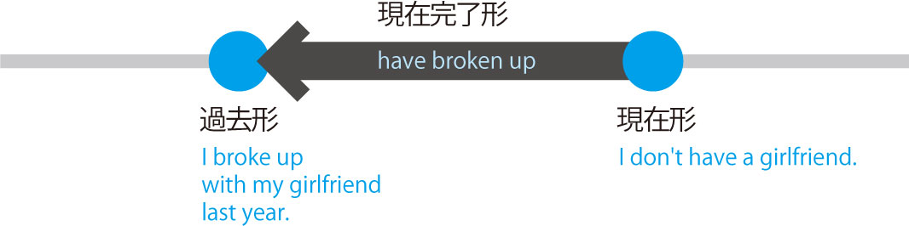
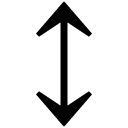
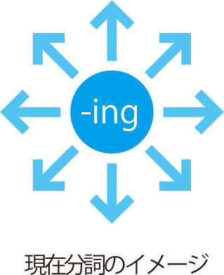

| Mr. Evineの英文法ブリッジコース[中学修了→高校基礎] Mr. Evine シリーズ | |
| Evine | |
| (2009) | |
参照項目から元の箇所に戻るには、お使いのビューワーの仕様に従ってください。または一旦目次を表示し、戻りたい箇所の近くの見出しをタップして戻ってください。
英語の超人になる!
アルク学参シリーズ
「英語の超人になる!」
アルク学参シリーズ刊行に寄せて
大学受験のために必死で勉強する、これは素晴らしい経験です。しかし、単に大学に合格さえすればよいのでしょうか？ 現在の日本に必要なのは、世界中の人々とコミュニケーションを取り、国際規模で活躍できる人材です。総理大臣になってアメリカ大統領と英語で会談したり、ノーベル賞を受賞して英語で受賞スピーチを行ったり、そんなグローバルな「地球人」こそ求められているのです。アルクは、大学受験英語を超えた、地球規模で活躍できる人材育成のために、英語の学習参考書シリーズを刊行いたします。
はじめに
皆さん初めまして、Evine（エヴィン）です。
膨大な英文法書籍の中から本書を手にしていただきありがとうございます。
僕が日々、英文法指導をしている中で痛感するのは、中学英文法に対する理解不足です。
僕はこれまで一貫して中学英文法を軸にした指導にこだわってきました。というのもすべては中学英文法が核（コア）になるからです。
本書でメインに扱う高校英文法は、中学3年間で学んだ知識から発展したものです。つまり中学英文法が中途半端な状態では高校英文法を理解することはできません。
そこで本書の最大の特徴として、23レッスンすべて中学レベルから始まり、そのまま高校レベルの解説に進めるスタイルを取っています。そうすることで、高校の英文法は中学からの積み重ねが大事だということに気付き、今さらどこまで戻ればいいのか分からないという人でも安心してスタートできます。
見た目がどんなに難しいものでも結局はすべて中学英文法から派生したものです。
複雑に悩まなくても中学の段階まで噛み砕いて最初から考えれば理解できないものなんてありません。
小さな易しいところから入っていけばいいわけです。それを形にしたのが本書の［中学修了レベル］⇒［高校基礎レベル］の一貫した学習スタイルなんですね。
また多すぎる情報は消化不良を起こしますので、本書では必須ポイントを厳選し、それをスペースの許す限りニュアンスを交え、いろいろな角度から深く勉強できるようにしました。
さらに豊富な演習と解説も充実しており、徹底したアウトプットによる知識の定着も重視しています。
英語力を構成する4つのスキル「読む・書く・話す・聞く」はすべて英文法が支えており、英文法の勉強を避けて皆さんの英語力upはありえません。
皆さんが苦労して覚える英単語やイディオムも文法ルールに従って置く位置が決まるわけですし、時制を間違えれば相手にいつの話をしているのか伝えることもできず、お互いの真意をつかむことはできません。真のコミュニケーション能力や読解力に英文法は絶対に必要です。
自分の方向性を信じて、まずは英文法の勉強に集中するといいでしょう。
さあ、最後まで誰もが称賛する努力を成し遂げてください。
皆さんの努力で本書がボロボロになる頃、目の前にあるのは成功のみです!
Let's get started!
目 次
これだけは最初に
覚えておきたいチェックリスト
第1（SV）、第3（SVO）、第4（SVOO）文型
第2（SVC）、第5（SVOC）文型
現在形、過去形、未来形
現在完了、過去完了、未来完了
現在進行、過去進行、未来進行、完了進行
種類と用法、助動詞＋完了形、慣用表現
基本形、文型と受動態、さまざまな受動態
可算・不可算名詞と冠詞の種類
2つの違いとその用法
人称・指示・再帰・不定代名詞
前置詞の働きと主な用法
英文構造を見抜く語のカタマリ
3つの用法の整理と原形不定詞
その用法と動名詞をとる動詞、慣用表現
形式主語・目的語、不定詞と動名詞の時制
現在分詞、過去分詞
分詞構文と接続詞、注意すべき分詞構文
比較級、最上級、同等比較、慣用表現
等位接続詞と従属接続詞
関係代名詞
関係副詞、制限用法と非制限用法
仮定法過去と仮定法過去完了
仮定法の表現
本書の利用法
本書は、1つの文法項目について、中学から高校までの範囲が一度に学習できるようになっています。また、演習問題と解答を充実させ、覚えた知識がそのまま即戦力になるよう構成されています。本書でしっかり英文法の基礎を固め、あなたの英語力を底上げしましょう。
学習の流れ
Pre-Lesson
レッスンを始める前に目を通しましょう。各レッスンの内容をスムーズに理解するために必要な基礎知識が確認できます。レッスンに登場する文法用語のレファレンス（索引）としても活用してください。
Lesson
レッスンは全部で23レッスンあります。5文型から仮定法まで、必須英文法が解説されています。1日1レッスンで取り組めるボリュームですが、自分の学習ペースに合わせて無理のない範囲で進めましょう。
Introduction
レッスンのテーマをつかみ、これから何を学ぶのかを明確にします。
Stage 1 中学修了レベル
高校の内容を学ぶ前に必ず理解しておきたいポイントを解説しています。
どれだけ覚えているか総チェックしましょう。
Stage 2 高校基礎レベル
受験勉強の土台となる高校英文法の必須ポイントを解説しています。
理解できるまで繰り返し読みましょう。
※本書のレベル表記は、文部科学省の中学・高校指導要項を参考に独自の視点でレベル分けしたものです。
※Stage1の演習は、テーマによってはStage2で解説する内容も中学レベルの実力で解ける範囲で出題しています。
Exercises
レッスンの仕上げは、演習問題です。レベルは、中学修了レベル ⇒ 高校基礎レベル ⇒ チャレンジの3段階です。アウトプットで学んだ知識を定着させましょう。
※（セ試・改）などの表記のある問題文は、センター試験及び各大学入試の英文を一部抜粋し、本書の問題作成に合わせて加筆しています。
英語でチャット
各章の終わりに、学んだ文法を使って会話を体験するコーナーが設けられています。
チャレンジしてみましょう。
全レッスン修了テスト
全てのレッスンが終わったら、本書の総仕上げとして、修了テストが用意されています。本書で学習したことがどれだけ身に付いているか確認しましょう。
習熟度は解答集の最後に記載されている自己評価表を参考にしましょう。
これも活用しよう!
［本書に登場する例文］
本書の特徴として、すべての例文は「日本語」⇒「英語」表記です。日本語の例文を読みながら英文を頭でイメージしたうえで実際の英文をチェックしてください。自然と英作文の力が身に付きます。
［最重要動詞リスト100］
英作文やリスニングに必要不可欠な動詞を100語厳選しました。この100語は意味を覚えるだけでなく、自分で積極的に使えるように語法なども辞書で確認しておきましょう。
［不規則動詞変化リスト］
現在完了形、受動態などで必須となる頻出の不規則変化動詞をまとめました。
まだ覚えていない不規則変化がないか確認しましょう。
Pre-Lesson（序章）
これだけは最初に覚えておきたいチェックリスト
《A》 品詞
品詞とは、英文を構成する英単語を「その働き」ごとに分類したグループ名です。品詞名とその機能を結び付けて頭にインプットしておけば、効率よく英文法を勉強することができます。
冠詞The名詞doctor動詞came接続詞and動詞said前置詞to代名詞us,"代名詞You助動詞will動詞meet代名詞your形容詞new名詞baby副詞soon."
| ■名詞 | 名詞は「人や物事の名前を表す」言葉です。数えられる名詞（可算名詞）と数えられない名詞（不可算名詞）があり、英文中で主語、目的語、補語になります。 |
|
□可算名詞：book、pen、bikeなど □不可算名詞：money、milk、waterなど |
| ■動詞 | 「主語」（人や物事）の「状態や動作を表す」言葉です。be動詞と一般動詞の2種類あり、主語のグループ（人称や単数・複数）や時制により形が変化します。 |
|
□be動詞：is、am、areなど □一般動詞：study、walk、useなど |
| ■形容詞 | 形容詞は修飾語の1つで、名詞の前か後ろに置かれその名詞の「性質・状態・数量などを表す」言葉です。他の機能として、英文中で補語になります。 |
|
□名詞を修飾：acute boy （可愛い男の子） □補語：The boy iscute. （その男の子は可愛い。） |
| ■副詞 | 副詞は修飾語の1つで、名詞以外の色々なものを修飾し、「場所・時・頻度・程度・状態などを表す」言葉です。形容詞と混同しないようにレッスンで詳しく勉強します。 |
|
□動詞を修飾：runfast （速く走る） □形容詞を修飾：very cute （とても可愛い） |
| ■助動詞 | 動詞の前に置き、その動詞に可能・意志・義務などの「色々なニュアンスを追加する」言葉です。進行形・受動態を作るbe動詞、疑問文・否定文を作るdo、完了形を作るhaveなども助動詞の仲間です。 |
|
□可能・許可：can、may □意志・提案：will、shall □義務・当然：must、shouldなど |
| ■前置詞 | 前置詞は名詞の前に置き「前置詞句」として1つの「形容詞や副詞の働き」をする言葉です。 |
|
□名詞を修飾する前置詞句（＝形容詞句）：the peoplein the village （その村の人々） □動詞を修飾する前置詞句（＝副詞句）：runin the park （公園を走る） |
| ■代名詞 | 代名詞は「名詞を言い換えた」言葉です。基本的に1回登場した名詞は繰り返しを避けるために2回目からは代名詞に変化します。人称代名詞や指示代名詞などがあります。 |
|
□人称代名詞：he、his、himなど □指示代名詞：this、thatなど |
| ■冠詞 | 形容詞の仲間で、名詞の前に置いて「不特定の名詞か、特定の名詞かを表す」言葉です。不定冠詞と定冠詞の2種類あります。a、anは不可算名詞や複数形の名詞の前には置けません。 |
|
□不特定（不定冠詞）：a、an（anは母音で始まる名詞の前） □特定（定冠詞）：the |
| ■接続詞 | 「語と語」、「句と句」、「節と節」など、「言葉をつなぐ働きをする」言葉です。等位接続詞と従属接続詞の2種類あります。英文読解で文脈を押さえるキーワードになります。 |
|
□等位接続詞：and、but、orなど □従属接続詞：because、when、if、that、thoughなど |
《B》 文・句・節・修飾語
| ■文 | 英文は意味によって肯定文、否定文、疑問文、命令文、感嘆文などがあります。複雑な英文はまず肯定文に置き換えて考えると文型構造をとらえやすくなります。※肯定文・否定文＝平叙文 | |
| □肯定文（平叙文） | He speaks English. （彼は英語を話す。） | |
| □否定文（平叙文） | He doesn't speak English. （彼は英語を話さない。） | |
| □疑問文 |
Does he speak English? （彼は英語を話しますか。）
Who is he? （彼は誰ですか。） |
|
| □命令文 |
Speak English. （英語を話しなさい。）
Don't speak Japanese. （日本語を話すな。） |
|
| □感嘆文 | How cute she is! （なんて彼女は可愛いんだ。） | |
| ■句 | 「2つ以上の単語が集まった」ものを句と呼びます。主に1つのカタマリで名詞、形容詞、副詞として働きます。名詞句は主語・目的語・補語、形容詞句は修飾語・補語、副詞句は修飾語になります。 | |
| □名詞句 | To study abroad is my dream. （海外留学は私の夢だ。） | |
| □形容詞句 |
The boytalking with her is my student. （彼女と話している少年は私の生徒だ。） |
|
| □副詞句 |
We got marriedon October 8, 2006. （私たちは2006年10月8日に結婚した。） |
|
| ■節 | 「主語と動詞がある」カタマリを節と呼びます。主に名詞、形容詞、副詞として働きます。名詞節は目的語や同格、形容詞節は修飾、副詞節は条件・目的・譲歩などを表す節になります。 | |
| □名詞節 | I thinkthat she is happy. （私は彼女が幸せだと思う。） | |
| □形容詞節 | The dogwhich is barking is his dog. （その吠えている犬は彼の犬だ。） | |
| □副詞節 | We won't go outif it rains tomorrow. （明日雨なら、私たちは外出しない。） | |
| ■修飾語（句・節） | 「他の単語を説明（修飾）する」言葉です。主に形容詞と副詞があります。修飾語を用いて他の単語を詳しく説明する働きを「修飾する」と言います。形容詞は名詞、副詞は名詞以外を修飾します。 |
|
averygood teacher （とても良い先生） ※副詞（very）→形容詞を修飾、形容詞（good）→名詞を修飾 |
《C》 be / do / haveの活用
進行形・受動態を作るbe動詞、疑問文・否定文を作るdo、完了形を作るhaveの活用表です。
beの活用
| 主語 | 現在形 | 過去形 | 過去分詞形 | -ing形 | 否定文 | 疑問文 |
| I | am | was | been | being | am not, I'm not | Am I ...? |
| He、She、It | is | isn't （=is not） | Is he ...? | |||
| You、We、They | are | were | aren't （=are not） | Are you ...? |
doの活用
| 主語 | 現在形 | 過去形 | 過去分詞形 | -ing形 | 否定文 | 疑問文 |
| I | do | did | done | doing | don't （=do not） | Do I ...? |
| He、She、It | does | doesn't （=does not） | Does he ...? | |||
| You、We、They | do | don't （=do not） | Do you ...? |
haveの活用
| 主語 | 現在形 | 過去形 | 過去分詞形 | 否定文 | 疑問文 |
| I | have | had | had | haven't （=have not） | Have I ...? |
| He、She、It | has | hasn't （=has not） | Has he ...? | ||
| You、We、They | have | haven't （=have not） | Have you ...? |
《D》 一般動詞の現在形・過去形・-ing形
現在形（主語がHe、She、Itの場合）
| 原形 | 動詞の語尾変化 | 変化ポイント |
| eat | eats | 普通は語尾にsを付ける |
| wash | washes | 語尾がss /sh /ch /x /oの動詞は語尾にesを付ける |
| study | studies | 語尾が［子音＋y］の動詞はyをiに変えてesを付ける |
過去形
| 原形 | 動詞の語尾変化 | 変化ポイント |
| play | played | 普通は語尾にedを付ける |
| use | used | 語尾がeの動詞は語尾にdだけを付ける |
| carry | carried | 語尾が［子音＋y］の動詞はyをiに変えてedを付ける |
| stop | stopped | 語尾が［短母音＋子音］の動詞は最後の子音を1つ増やしてedを付ける |
※短母音とは、アッ・イッ・ウッ・エッ・オッと小さな「ッ」が入る短い音の母音［a、i、u、e、o］です。
ing形
| 原形 | 動詞の語尾変化 | 変化ポイント |
| enjoy | enjoying | 普通は語尾にingを付ける |
| use | using | 語尾がeの動詞はeを消してingを付ける |
| sit | sitting | 語尾が［短母音＋子音］の動詞は最後の子音を1つ増やしてingを付ける |
［本書の略語・記号］
| S | 主語（＝名詞） |
| V | 動詞（＝他動詞、自動詞） |
| O | 目的語（＝名詞） |
| C | 補語（＝名詞、形容詞） |
| M | 修飾語（句・節）（＝形容詞、副詞など） |
| Vg | 動詞の原形 |
| Ved | 動詞の過去形（ate、sawなど） |
| Vpp | 動詞の過去分詞形（eaten、seenなど） |
| Ving | 動詞の現在分詞形（ing形）、動名詞 |
| to Vg | 不定詞（＝to＋動詞の原形） |
| （ ） | 省略可能 |
| ［ ］ | 言い換え可能 |
| S'、C'、O'、M' | 要素記号の( ' )は節の中にある要素を意味する |
Chapter 1
英語のカタチを覚えよう
Lesson 01
動詞と５文型（1） / 第１（SV）、第３（SVO）、第４（SVOO）文型
Lesson 02
動詞と５文型（2） / 第２（SVC）、第５（SVOC）文型
Lesson 03
基本時制 / 現在形、過去形、未来形
Lesson 04
完了形 / 現在完了、過去完了、未来完了
Lesson 05
進行形と時制のまとめ / 現在進行、過去進行、未来進行、完了進行
Lesson 06
助動詞 / 種類と用法、助動詞＋完了形、慣用表現
Lesson 07
受動態 / 基本形、文型と受動態、さまざまな受動態
Quick
Check
次の英文の文型は同じ?違う?
He keeps secrets.
He keeps quiet.
（答えはこちら）
Lesson01
動詞と5文型（1）
第1（SV）、第3（SVO）、第4（SVOO）文型
Introduction
英語と日本語の語順
Quiz 01
次の語句を文法的に正しく並び替えましょう。
「（昨日、）妻は僕に辞書をくれた。」
（ me / gave / my wife / a dictionary ） yesterday.
【正解】My wife gave me a dictionary yesterday.
並び替え問題が苦手な人は多いですね。それは日本語の自由な語順に慣れているからです。試しに問題の日本語の語順を替えてみましょう。
「辞書を妻は僕にくれた。」「僕に妻は辞書をくれた。」「妻は辞書を僕にくれた。」
どれもまったく問題のない日本語ですね。
というのも日本語は単語を入れ替えても語尾の「は」「を」などを見れば文章内での単語の働きがわかるからです。例えば「妻は」の「は」は主語を示すため、文章内で語順を変更しても主語だと簡単に判断できます。
ところが英語は語順によって英文内の単語の働きを示す言語です。そのため語順が少しでも違えば単語の働きが不明確になり、相手にうまく伝わらなくなります。ここに日本語と英語感覚の大きなズレがあるわけです。英語は語順が命であることをまずはしっかり押さえておきましょう。
基本5文型と主要素
英語の語順パターンは、全部でSV、SVC、SVO、SVOO、SVOCの5つ（5文型）です。
このSやVなどの記号は英文の主要素を意味し、５文型はS＝主語、V＝動詞、C＝補語、O＝目的語で構成されます。またyesterdayのように英文にプラスαの意味を追加するM＝修飾語（句・節）は文型を構成する主要素ではありませんが、英文を盛り上げてくれる重要なサブ要素です。
文型により構成される主要素は異なるわけですが、どの文型になるのかは使用する動詞に決定権があります。
英文の骨組みである主要素を抜き出し、動詞が何文型を導くのか判断し適切な解釈ができなければ、正しく相手を理解しコミュニケーションすることはできません。
このレッスンでは皆さんの発信力そして解釈力の土台となる基本文型の最初の３つ、SV、 SVO、 SVOOについて勉強していきます。
Stage 1 中学修了レベル
第1文型と目的語（O）を用いる第3・4文型
このレッスンでマスターする文型は全部で3つです。主要素を表す記号も一緒に覚えてください。
| 第1文型 | 第3文型 | 第4文型 |
| SV | SVO | SVOO |
| 主語＋自動詞 | 主語＋他動詞＋目的語 | 主語＋他動詞＋目的語＋目的語 |
主語S（＝Subject）と動詞V（＝Verb）は全ての文型共通で、英文に必要不可欠な主要素です。英文には必ず主語と動詞が存在することをまずは押さえておきましょう。（命令文や感嘆文など例外はあります。）
自動詞と他動詞
Introductionで触れましたが、動詞で文型が決まるため、どんな複雑な英文も動詞に注目すれば英文解釈のキーポイントを発見することができます。そんな動詞の種類は大きく2つ、自動詞と他動詞です。
自動詞は動詞の後ろに目的語（O＝Object）を必要としない自立した動詞です。一方、他動詞は目的語Oがなければ文を完成できない動詞です。この目的語とは、主語の動作対象となり、その動作の影響を受ける言葉のことです。それでは自動詞と他動詞の違いを意識するためのクイズにトライしてみましょう。
Quiz 02
次の英文（1）〜（3）を日本語に直しましょう。
（1）At last, Ayakogot there.
（2）Yukogot new boots at the store.
（3）Satoshigot me some food.
全てgetを用いた英文ですが、残念ながら「手に入れる」という典型的な意味を知っているだけでは正解できません。文型によって動詞の意味が変化するからです。それではそれぞれの文型の基本ニュアンスを確認しながら、getの意味が文型によってどのように変化するのかもチェックしていきましょう。
SV文型 「Sは...する」
（1）「ついにアヤコはそこにたどり着いた。」
At last, Ayako got there.
M［At last］,S［Ayako］V［got］M［there］.
このgetは自動詞で「着く、達する」の意味です。自動詞の特徴として、文法的にはSVだけでもOKですが、実際それだけでは説明不足な感じがあるため、普通は修飾語M（＝Modifier）が一緒に使われます。
「彼は埼玉に住んでいます。」
He livesMin Saitama.
liveは自動詞ですが、通常はこの英文のように場所を示すMがあります。
SVO文型 「SはOを［に］...する」
（2）「ユウコはその店で新しいブーツを買った。」
Yuko got new boots at the store.
S［Yuko］V［got］O［new boots］M［at the store］.
このgetは他動詞で「...を手に入れる、買う」という意味です。この場合、目的語（O）がなければ文意が成り立ちません。
（×）「ユウコはその店で...を手に入れた。」
SVO1O2文型 「SはO1（人）にO2（物）を...する」
（3）「サトシは私に食べ物を手に入れてくれた。」
S［Satoshi］V［got］O1［me］O2［some food］.
このgetは「（人）に（物）を手に入れてあげる」という意味で目的語を2つ取ります。このように「（人）に（物）を...」という感じで目的語を2つ取る他動詞があることを押さえておきましょう。
getの他には、give、show、teach、buy、cook、makeなども目的語を2つ取ることができます。
「彼らは私たちに地図を見せてくれた。」
They showed人 ［us］物 ［a map］.
※この他動詞は人に物や情報を「与える」ニュアンスがあるため授与動詞とも呼ばれ、１つ目の目的語（O1）を「間接目的語」、2つ目（O2）を「直接目的語」と言います。
主要素の品詞もチェックしておきましょう。SやOになるのは名詞または代名詞で、形容詞や副詞などはSやOになりません。ちょっと覚えておくだけで英作文でも役に立ちます。
（×） 「私は幸せを望む。」
I desire×形容詞happy.
happyは形容詞ですから他動詞desireの目的語にはなりませんね。
（○） I desire名詞happiness.
Stage 2 高校基礎レベル
SVO1O2⇔SVO2＋to/for O1
もう少しSVOO文型をいじってみましょう。実はSVOO文型は、前置詞を用いて下記のようにSVO文型で言い換えることができます。
SVO1O2⇔ SVO2＋to/for O1
※to/for O1＝Mになります。
では先ほどのQuiz02（3）のSVOO文型の例文をSVO文型にしてみましょう。
⇔S［Satoshi］V［got］O［some food］M［for me］.
ポイントは目的語の位置を反対にして前置詞 toまたは forを置くことですね。この前置詞は他動詞によって決まりますので代表的なものをチェックしておきましょう。
●toを使う他動詞...give、show、teach、tell、send、write、lend、throwなど
toは「行為の対象」を表すので、相手がいなければ成立しない他動詞と一緒に使います。
「私は彼女にプレゼントを送った。」
I sent her a present.

I sent a presentto her.
※送る相手がいなければ１人で勝手に送ることはできません。
※writeは「手紙を書く」という意味で相手が必要です。
●forを使う他動詞...get、buy、make、find、cook、saveなど
toを使う動詞以外は「...のために」という意味のforになります。
「私は彼女に朝食を作った。」
I cooked her breakfast.
I cooked breakfastfor her.
自動詞なのか他動詞なのか...
動詞には自動詞と他動詞があるわけですが、実際には1つの動詞が両方の働きをすることがよくあります。getがいい例でしたね。その見分け方ですが、動詞の後ろに目的語（O）があるかないかで判断します。
自動詞（SV）：S［You］ V［study］M［every day］.
（あなたは毎日、勉強する。）
他動詞（SVO）：S［You］ V［study］O［English］M［every day］.
（あなたは毎日、英語を勉強する。）
※目的語（O）を後ろに持たないstudyは自動詞であると判断します。
最初は難しく感じますが、文型解釈のスキルを磨けば、自動詞なのか他動詞なのか自然と判断できるようになります。文型解釈により正しく動詞の意味を理解し、文全体のニュアンスを確実にとらえることで、快適なコミュニケーションにつながっていくわけです。
（例） run （a） 自動詞「走る」 （b） 他動詞「...を経営する」
（a）「彼は毎朝、公園を走る。」
He runsM［in the park］M［every morning］.
（b）「彼はその会社を経営している。」
He runsO［the company］.
例文のrunのように、それぞれの文型において動詞の意味が異なる場合があるということを覚えておきましょう。
自動詞＋前置詞
ここでもう少し実践で役に立つポイントもチェックしておきます。次の英文を見てください。
「そのカエルは私を見た。」
The froglookedat me.
look（見る）は自動詞でこのままでは目的語meを取ることができません。しかし、前置詞atを追加すればlook at ...「...を見る」とまるで他動詞のように使うことができます。「自動詞＋前置詞＝他動詞」と押さえておきましょう。
逆に本当の他動詞は、もともと前置詞の意味が含まれ、前置詞を必要としません。
「サトシはアズサと結婚した。」
Satoshi married （×with） Azusa.
marry（...と結婚する）が他動詞だと知っていれば前置詞withを使う間違いはしないですね。
Quiz 03
次の英文のうち、文法的に誤りがあれば訂正しましょう。
（1）They discussed about the problem.
（2）She replied to the email from me very politely.
（1）「彼らはその問題について議論した。」
They discussed×about the problem.
discuss（...について議論する）は他動詞で前置詞aboutは必要ありません。他動詞ということは後ろに目的語Oを取るので、SVO文型になりますね。
（2）（○） 「彼女はとても礼儀正しく私からのEメールに返信してくれた。」
reply（返事する）は自動詞で、このままでは目的語（the email）を取ることができないため、前置詞toを補って他動詞のような働きをもたせます。SV+M文型ですね。
どんな前置詞が必要なのかは自動詞によって異なるので、辞書などで確認していきましょう。
修飾語とうまく付き合う！
実は一番やっかいなのが、時や場所などを表す修飾語Mだったりします。相手に細かい内容を効果的に伝えるための便利なツールですが、修飾語が複雑に挿入されることにより英文の骨組み（文型）が見えなくなる人も多いので注意したいところです。
Quiz 04
次の英文の文型をとらえ、修飾語をすべて排除してください。
「父はいつも夜更かしをしているが、昨夜はとても疲れていたので夕食が終わったあと、すぐにベッドに横になった。」
Though my father always stays up late, as soon as he finished dinner, he lay on the bed because he was so tired last night.
SV文型：「彼は横になった」
he lay ※layはlie（横になる）の過去形
結局、話の中心は「（いつも夜更かしする）彼が横になった」という出来事です。
正しく英文解釈をするということは、このように文型を判別して主要素と修飾語を区別し相手の本心をきちんととらえることです。
長文読解が苦手でも、主要素だけを確実に押さえていくことで、複雑な英文の核心にすぐに触れることができるようになります。
あれこれ対策立てずにまずは始めてみましょう！
Lesson01
Exercises
〔中学修了レベル〕
1.
次の英文Ⓐ〜ⒻのうちSVO文型であるものを3つ選びましょう。
Ⓐ You play soccer very well.
Ⓑ I teach Asato English every day.
Ⓒ You eat snacks too much.
Ⓓ My brother walks to school.
Ⓔ You eat a lot every day.
Ⓕ They gave fresh milk to our son.
2.
次の下線部の動詞が自動詞であれば［自］、他動詞であれば［他］と答えましょう。
① You couldn'tanswer my question.
② Emikoturned to the right.
③ Ayamefound the candy easily.
④ Toshiro alwayskeeps his toys in a large box.
⑤ The gas stationcloses at 10 p.m.
⑥ A man suddenlytalked to me on the street.
3.
日本語を参考にして次の（ ）内の語・句を相手に正しく意味が伝わるように並び替えましょう。
① 私のお父さんは私に地図を買ってくれた。
（ for / a map / my father / me / bought ）.
② コマツ先生は私に6年間英語を教えてくれた。
（ taught / English / for / Mr. Komatsu / me ） six years.
③ 彼女のお兄さんはその川で泳ぐ。
（ the river / her brother / in / swims ）.
④ 昨夜、彼女の彼氏が彼女にEメールを送ってきた。
（ sent / her / email / her boyfriend / to ） last night.
⑤ ナカオ夫人は台所で夕食を作らなかった。
（ in the kitchen / make / Mrs. Nakao / didn't / dinner ）.
4.
次の下線部の動詞の意味に近いものをそれぞれ選び、記号で答えましょう。ただし、選択肢の動詞はすべて原形で示しています。
① （a）The luggagegot there right on time.
（b）Riekogets information from us.
（ア） receive （イ） sell （ウ） arrive
② （a）The new system isrunning well.
（b）Nozomiran to the classroom.
（ア） move （イ） work （ウ） hurry
5.
次の英文ⓐ ⓑを動詞の意味の違いが分かるように日本語に直しましょう。
ⓐ Tomoko cooked eggs and bacon this morning.
ⓑ Chikahiro cooked us a nice meal yesterday.
〔高校基礎レベル〕
1.
次の英文を完成させるために正しいものを選びましょう。
① The ostrich （ lay / laid ） a very big egg.
＊ostrich（ダチョウ）
② They didn't apologize （ to us / us ） for the trouble.
③ The sun （ raises / rises ） in the east.
④ If I buy a secondhand computer, it will （ add / help / keep / save ） me hundreds of dollars. （セ試）
⑤ Grandfather explained （ me to make / how to make ） a kite. （セ試・改）
⑥ She （ said / spoke / talked / told ） us nothing about it. （セ試・改）
2.
次の各文の文型をS、V、O、Cの記号で答えましょう。
① There was no water in the bottle.
② I found him a nice Korean restaurant for the party.
③ Takashi lives in an apartment with his wife and daughter.
④ The old temple is just over there.
⑤ Our students sometimes ask difficult questions.
⑥ My grandmother left me a great fortune.
＊fortune（財産）
3.
次の（ ）内の語・句を相手に正しく意味が伝わるように並び替えましょう。
① （ a rugby ball / threw / to / Hiroko ） her husband.
② （ me / some money / lent / he ）.
③ （ at / don't / your textbook / look ） now.
④ （ from / college / I'll / next / graduate ） year.
⑤ （ this dictionary / how to / him / told / use / I ）.
⑥ （ the city / we / to / in time / got ）.
4.
次の英文には誤りが1つずつあります。訂正して全文を書き直しましょう。
① The police officer entered into his room.
② They opposed to her proposal.
③ Sara gave a kiss her grandfather.
④ My aunt bought a lot of chocolate to them.
⑤ His uncle left from the office 2 hours ago.
⑥ My sister goes the library at 11 o'clock.
⑦ The trading company provided the employees of some information.
〔チャレンジ〕
1.
日本語を参考にして次の（ ）内の語・句を相手に正しく意味が伝わるように並び替えましょう。ただし、必要のないものが1つずつありますので注意してください。
① ある船が、昨夜その島に到着した。
（ the island / got / a ship / last night / reached ）.
② 彼のお兄さんはそこでその技術について述べた。
（ the technology / his brother / about / there / mentioned ）.
③ カツヤが私にタクシーを見つけてくれた。
（ me / a taxi / to / found / Katsuya / for ）.
④ 今年ヒロシはその女性と結婚した。
（ married with / Hiroshi / this year / the woman / married ）.
⑤ 値札の料金には５％の消費税が含まれている。
（ the 5 percent consumption tax / in / on the tag / includes / the price ）. （セ試）
2.
次の英文の誤りを訂正して全文を書き直しましょう。
① The mechanics said that it would cost to me $700 to fix my car. （セ試）
② The bank didn't lend any money him last year.
③ The government decided to rise taxes. （セ試・改）
④ My friend forgot his umbrella, so I lent him of mine. （立正大）
⑤ Let's talk the problem later.
Evi-Column 1
英文法がストレスを軽減する!
昔オーストラリアでホームステイしていた頃、ホストマザーにI reached to the station just now.と電話で話したらYou don't need "to" after reach.と言われました。
"Why?"と聞いたら"Because you just can't."という返答。
「言えない」と言われてしまうと「あ、そうなんだ。」となる人と「なんで?」となる人がいます。僕は後者でしたので納得がいかず辞書や文法書で調べた記憶があります。
そのとき、「reachは他動詞で後ろに前置詞toは必要ない」とほんのひとこと説明を受けていればすっきり納得ができたわけですね。
言葉は生ものですから文法の原則に当てはまらないことはたくさんあります。でも基本ルールを知っているからこそイレギュラーであることが判断できるわけです。英文法の勉強が悩みだという学習者は多いのですが、英文法のルールが色々な場面で納得のいく説明となり、逆にストレスを軽減するのに効果があります。
Lesson02
動詞と5文型（2）
第2（SVC）、第5（SVOC）文型
Introduction
英語の多義性
早速ですが次の英文を、違いが分かるように日本語に直してみましょう。
（A）He keeps secrets.
（B）He keeps quiet.
SVまではまったく同じですね。違うのはkeepの後ろの単語のみなんですが、日本語に直すとこんな感じになります。
（A）「彼は秘密を守る。」
（B）「彼は黙ったままである。」
単語が異なるだけでkeepの意味が（A）「...を守る」、（B）「...のままである」と分かれてしまいました。実際このkeepのように2つ以上の意味を持つ多義語は英語の世界にはたくさんあります。
（例）taste 「...を味見する」「...の味がする」、grow 「...を育てる」「...になる」 etc.
さあ、一体どのように文脈に合った適切な意味を決定すればいいのでしょうか。
文型によって異なる解釈
ではもう一度、例文をじっくり比較してみましょう。太字の単語に注目です。
（A）He keepssecrets.
secrets 「秘密」 ⇒ 名詞
（B）He keepsquiet.
quiet「静かな」 ⇒ 形容詞
両者の違いは品詞ですね。この品詞は文型解釈の際は強力な武器になります。品詞が分からなければ正しい解釈はできません。
keepは、目的語を取る他動詞の場合は「...を守る」という意味になります。目的語になるのは名詞だけでしたね。ところがquietは形容詞ですから目的語にはなれず（B）のkeepは他動詞ではないと判断できます。
実は英文（B）のkeepですが、自動詞なのに後ろに補語Cという主要素を取る自動詞の例外です。自動詞はSVだけで英文が完結しましたが、この例外パターンではquietが補語で、それを省略すると英文は不完全になります。（詳しくはこの後で。）
注目すべきポイントは、「目的語を取るのか補語を取るのか」で文型が異なり、それによってkeepの意味もまったく異なっているということです。
主要素と修飾語句をきっちり区別して正しく5文型の判断ができなければ、とんでもない意味で動詞を解釈してしまうこともあるわけです。
このレッスンでは最後の主要素である補語Cについて徹底的に勉強していきます。
Stage 1 中学修了レベル
補語（C）を用いる第2・第5文型
まずはこのレッスンで扱う第2文型と第5文型をチェックしておきましょう。
| 第2文型 | 第5文型 |
| SVC | SVOC |
| 主語＋自動詞＋補語 | 主語＋他動詞＋目的語＋補語 |
今回の文型では補語C（＝Complement）を必要とする自動詞と他動詞が登場します。
前回のレッスンを思い出してください。自動詞はSVだけで英文が完結、他動詞はSVOやSVOOなど目的語を取る動詞でしたが、このレッスンで勉強するSVCとSVOC文型には、例外として補語を必要とする自動詞と他動詞が使われています。SVCのVは「不完全自動詞」、SVOCのVは「不完全他動詞」とも呼ばれます。
補語の役割
ではIntroductionで確認したkeepを用いて補語の役割を具体的にチェックします。
「彼は黙ったままである。」
He keepsquiet.
補語quietを省略すればこの英文が不完全（彼は...のままである）になります。
結論から言えば、それは主語が補語quietを必要とするからです。それでは覚えましょう。SVC文型における補語の役割は主語の説明です。
※主語を説明するので主格補語とも呼ばれます。
例文では主語Heがquietな状態であることを説明しています。補語のおかげで主語の状態が明確になるんですね。補語になる品詞は2種類。名詞（代名詞）か形容詞です。
SVC文型の特徴
さてSVC文型を作る自動詞ですが、その特徴として「S＝C （SはCである）」の関係が成り立ちます。例えば「ユウコは幸せのようだ。」 Yuko looks happy. であれば「Yuko＝happy」（ユウコは幸せである）の関係になっています。
次の英文を比較してみましょう。
SVO文型：「その猫は犬が大好きだった。」
The cat lovedO［dogs］.
SVC文型：「その猫はその会社の象徴になった。」
The cat becameC［a symbol of the company］.
動詞の後ろの要素が主語とどのような関係になっているのかに注目します。
SVO文型の英文では「S＝O」の関係が成立しませんが、SVC文型の英文では「S＝C」の関係が見事に成立します。このようなSVC文型の特徴さえ理解していれば、SVO文型と混同することはありません。
「その猫≠犬」⇒SVO文型
「その猫＝象徴」⇒SVC文型
また仮に補語が形容詞であればSVO文型ではないことは明白です。なぜなら目的語には名詞しかなれないからですね。
SVOC文型の特徴
次のSVOC文型にもSVC文型の特徴を利用することができます。
SVOO文型：「妻が私にコーヒーをいれてくれた。」
My wife madeO ［me］O ［a cup of coffee］.
SVOC文型：「妻が私を幸せにしてくれた。」
My wife madeO ［me］C ［happy］.
SVOC文型ではOとCの関係に注目して、「O＝C （OはCである）」の関係が成り立ちます。
例文では「私は幸せである」の関係であり、補語が目的語を説明する役割を果たしています。一方SVOO文型ではそれが成り立ちません。「私は一杯のコーヒーである」は非現実的ですね。
※SVOC文型の補語は目的語を説明することから「目的格補語」とも呼ばれます。
この2つの英文は共通してmakeが使われていますが、SVOO文型では「（人）に（物）を作る」、SVOC文型では「（人）を（ある状態）にする」という意味になります。文型が判断できれば、英文を正しく読み取り理解することができます。
Stage 2 高校基礎レベル
SVC/SVOC文型を作る動詞
Quiz 01
次の英文を日本語に直しましょう。
（1）Last night, my wifegot very angry.
（2）My doctor alwaysmakes me nervous.
SVC文型 「SはCである」「SはCになる」
（1）「昨夜、僕の妻はとても怒った。」
Last night, my wife got very angry.
M［Last night］,S［my wife］V［got］C［very angry］.
このgetは「（〜の状態）になる」という意味の不完全自動詞です。SVCになる自動詞はイコールの働きがあり、be動詞に置き換えても自然な意味になります。
（○） My wife was very angry.
※厳密にはveryは副詞で主要素にはなりませんが、ここではvery angryで１つのCとしてとらえています。
SVOC文型 「SはOをCにする」
（2）「私の医者はいつも私を緊張させる。」
My doctor always makes me nervous.
S［My doctor］M［always］V［makes］O［me］C［nervous］.
このmakeは「Oを（...の状態）にする」という意味の不完全他動詞です。SVOCになる他動詞はO＝Cの関係であり、O＋be動詞＋Cに置き換えても自然な意味になります。
（○） I am nervous.
文型を学ぶということは動詞の語法を押さえるということです。常に文型を意識することでその動詞をどんな意味で解釈するべきなのかが自然と頭に定着するようになります。
ただ最初のうちは補語が必要な理由を説明されてもなかなかスッキリと納得できないものです。そこでまずは補語を取る基本的な動詞を押さえ、その感覚を磨きましょう。
| 意味グループ | 基本動詞 | |
| SVC文型 | 状態（...である、...になる、...のままである） | be、become、get、come、grow、turn、keep、remain、stayなど |
| 見た目の印象（...のようだ） | look、seem、appearなど | |
| 感覚（...と感じる） | look、sound、feel、smell、tasteなど | |
| SVOC文型 | OをCにする | make、get、leave、keep、drive、paintなど |
| OをCと判断する | believe、consider、findなど | |
| OをCと呼ぶ | call、name、appoint、electなど |
※1つの動詞が1つの文型とは限りませんので注意しましょう。
※それぞれの意味は早速辞書で調べておきましょう。
補語（C）・目的語（O）の形
基本的には「補語＝形容詞、名詞、代名詞」、「目的語＝名詞、代名詞」ですが、実際には次の例文のように句や節のカタマリで文型の主要素のイメージを押さえることが大切です。
●句や節での補語の形（名詞句［不定詞、動名詞］、名詞節［that節、間接疑問文］、前置詞句［形容詞句］など）
（A）名詞句：不定詞（to Vg） ・動名詞（Ving）
「私の目標はその試験に合格することだ。」
S［My goal］V［is］C［to pass/passing the examination］.
（B）名詞節：that節
「厄介なのはあなたが十分なお金を持っていないことだ。」
S ［The trouble］V［is］C［that you don't have enough money］.
（C）名詞節：間接疑問文
「問題はどこに車を停めるかだ。」
S ［The problem］ V ［is］C［where I should park my car］.
（D） 前置詞句：形容詞句
「この問題を解くことが重要だ。」
S ［Solving this problem］ V ［is］C［of importance］.（形容詞句）
※前置詞句には副詞句の機能もありますが、補語の場合は形容詞のみです。
※「of+抽象名詞＝形容詞」 of importance ＝ important
●句や節での目的語の形（名詞句、名詞節など）
（A） 不定詞（to Vg） ・動名詞（Ving）：
「彼は映画を見るのが好きだ。」
S ［He］ V ［likes］O［to watch/watching movies］.
（B） that節：
「私は彼が自分の仕事に満足していると思う。」
S［I］ V ［think］O［that he is satisfied with his job］.
（C） 間接疑問文：
「私は彼女がどこにいるのか知っている。」
S ［I］ V ［know］O［where she is］.
5文型のまとめ
それでは最後に5文型の知識を整理しておきましょう。（ ）で示した名称は他の英文法書でよく用いられている用語です。
| 文型 | 文型の要素 |
| 第1（SV）文型 | 主語＋自動詞（＋修飾語句） |
| 第2（SVC）文型 | 主語＋自動詞（不完全自動詞）＋補語（主格補語） |
| 第3（SVO）文型 | 主語＋他動詞＋目的語 |
| 第4（SVOO）文型 | 主語＋他動詞（授与動詞）＋間接目的語＋直接目的語 |
| 第5（SVOC）文型 | 主語＋他動詞（不完全他動詞）＋目的語＋補語（目的格補語） |
「彼女たちはアメリカに向けて昨日出発した。」
They left for America yesterday. （SV）
「その秘書はしばらく平静を保っていた。」
The secretary stayed silent for a while. （SVC）
※SVCであればS＝C ⇒ The secretary was silent. の関係が成立。
「彼はそのツアーガイドに連絡しなかった。」
He didn't contact the tour guide. （SVO）
「彼はあなたに何ももたらさない。」
He never gives you anything. （SVOO）
※SVOOであれば前置詞句を用いてSVO+Mに言い換え可能 ⇔ He never gives anythingto you. （SVO+M）
「私は彼を素晴らしい教師だと考えていた。」
I considered him an excellent teacher. （SVOC）
※SVOCであればO＝C ⇒ He was an excellent teacher. の関係が成立。
本書では他のレッスンでも繰り返し文型や品詞が復習できるように配慮していますので、諦めずにがんばりましょう。
弱音を吐く暇があればとことん悩もう！
Lesson02
Exercises
〔中学修了レベル〕
1.
次の英文Ⓐ〜ⒻのうちSVC文型であるものを3つ選びましょう。
Ⓐ The man is a senior manager at the hotel.
Ⓑ The carpenter painted the wall blue.
Ⓒ My father left the door open.
Ⓓ She told me how to make an appointment.
Ⓔ Something smells good.
Ⓕ The white wine tastes very sweet.
2.
次の下線部の動詞が自動詞であれば［自］、他動詞であれば［他］と答えましょう。
① Sheraised her daughter by herself.
② Everythingturned out fine.
③ My grandmothermade her a white dress.
④ Asatoresembles my wife.
⑤ Heappointed me manager.
⑥ Tomokokept a copy of the bill.
3.
次の英文中に［ ］内の語を適切な位置に入れて英文を完成させましょう。
① My father found him and very calm. ［gentle］
② Her mother found it to make an international call. ［easy］
③ His father left a lot of money when he died. ［her］
4.
次の各組の英文を動詞の意味の違いが分かるように日本語に直しましょう。
① （A）I like my coffee strong these days.
（B）I like coffee these days.
② （A）Ayame made Toshiro breakfast.
（B）Ayame made Toshiro very tired.
〔高校基礎レベル〕
1.
日本語を参考にして次の（ ）内の語・句を相手に正しく意味が伝わるように並び替えましょう。
① 私は公園で子供たちを静かにさせておくことができなかった。
（ quiet / couldn't / I / the children / keep ） in the park.
② それはまったく牛に似ていなかった。
（ at all / didn't / like / it / a cow / look ）.
③ あなたたちのアイデアは私たちには素晴らしく思える。
（ to / your / great / idea / sounds / us ）.
④ 私たちは初めての赤ちゃんをアサトと名付けた。
（ first / Asato / named / we / our / baby ）.
⑤ マユは結婚するようだ。
It（ will / Mayu / seems / get married / that ）.
⑥ いつかそれが真実であるとわかるだろう。
（ find / someday / you'll / it / true ）.
2.
次の英文の下線部の要素を選択肢から記号（S）〜（M）で選びましょう。
①（あ）The sisters （い）remained （う）in good shape （え）while they were in Canada.
②（あ）We （い）must make （う）the world （え）a better place （お）together.
（S）主語 （Vi）自動詞 （Vt）他動詞 （C）補語 （O）目的語 （M）修飾語（句・節）
3.
次の各文の文型をS、V、O、Cの記号で答えましょう。
① He found it comfortable to work with them.
② She has been sick in bed since last week.
③ Finally, my dream came true.
④ She gave me a great opportunity to live abroad.
⑤ Daisuke, keep your room tidy.
⑥ This pumpkin went bad quickly.
4.
次の（ ）内の語・句を相手に正しく意味が伝わるように並び替えましょう。
① If we use this coupon, （ save / will / it / us / $200 ）.
② （ laugh / make / always / my classmates / me ）.
③ （ her / good / my idea / to / sounds / very ）.
④ The （ kept / noise / Tomoko / terrible / awake ）all night.
5.
次の（ ）に当てはまる最も適切なものを選択肢から1つずつ選び記号で答えましょう。
① His attempt to enter the university was （ ）.
（A） success
（B） successful
（C） successive
（D） succession （セ試・改）
② My mother believes （ ）.
（A） to me active
（B） me to be active
（C） me to active
（D） active to me
③ They （ ） in love with each other.
（A） fell
（B） went
（C） became
（D） turned
6.
次の英文Ⓐ〜Ⓒのうち文法的に誤っている箇所のある英文を１つ選びましょう。
Ⓐ Takashi remained calm.
Ⓑ The people at the party looked so happily.
Ⓒ The students made him captain of the team.
〔チャレンジ〕
1.
日本語を参考にして次の（ ）内の語・句を相手に正しく伝わるように並び替えましょう。ただし、必要のないものが1つずつありますので注意してください。
① 僕は彼女が彼女の母親と似ているとは思わない。
I （ think / is resembling / don't / she / resembles ） her mother.
② 我々はあなたの就職活動の大きな成功を祈っている。
We （ success / you / hope / in your job search / great / wish ） .
③ 彼は貧しい人々を助けることを彼の一生の仕事にした。
He （ for / his lifework / to / made / help / it ） the poor. （神戸学院・改）
④ それらの針を子供たちの手の届かないところに置いておいていただけませんか。
Could you （ on / those / keep / needles / out of reach ） of the children? （セ試）
⑤ 英文法の知識はとても役に立つ。
（is / of English grammar / use / the knowledge / great / of / are ）.
2.
次の英文の誤りを訂正して全文を書き直しましょう。
① My cousin became to be a nurse last year.
② I tried the fruit for the first time. It tasted for very sour.
③ My brother left the window opened last night.
④ He always made very angry to her.
⑤ After the car accident, the driver remained unconsciously for a week.
Evi-Column 2
be動詞を別の角度で眺める
be動詞と一般動詞の区別が確実にできていない人は意外に多いものです。
「彼女はりんごが好きです。」
（×）She×is likes apples.
（○）She likes apples.
be動詞はイコール記号である、一般動詞は主語の具体的な動作を表す、などなど色んな覚え方がありますが、ここではもう1つポイントを押さえてほしいと思います。
ずばり、「be動詞は消し去っても意味がわかる!」。百聞は一見に如かず、やってみましょう。
（○）She happy? 「彼女、幸せ?」 意味はちゃんと理解できますね。
ところが一般動詞を消すとどうなるのか。
（×）She apples. 「彼女、りんご!? そりゃありえないでしょう。
be動詞はlinking verb（連結動詞）とも呼ばれ、ハンバーグのネタでいえばつなぎのタマゴのようなものです。文法的な論理の仕組みにおいては必要ですが、なくても理解できてしまう。だからbe動詞は適当につけられてしまったり省略されたりするんですね。
Lesson03
基本時制
現在形、過去形、未来形
Introduction
時を表す動詞の形
まず英文法における時制とは、その会話がいつの話なのかという「時」を表し、それによって変化する「動詞の形」のことを言います。このレッスンでは3つの基本時制である現在形、過去形、未来形をマスターします。
現在形： 「最近、彼は英語を勉強する。」
Hestudies Englishthese days.
過去形： 「昨日、彼は英語を勉強した。」
Hestudied Englishyesterday.
未来形： 「明日、彼は英語を勉強するだろう。」
Hewill study Englishtomorrow.
※厳密には未来形という動詞の形はなく、助動詞willなどの助けを借りて未来を表現します。
文型を決定づけるだけでなく時制を表す動詞はまさに英文解釈のキーポイントです。
また時制をより明確にするために時を表す副詞（yesterday、 tomorrowなど）を一緒に用いることも多いです。
英語の厳しい時制ルール...
実は日本語の「時」に対する表現の曖昧さが、英語の時制を学ぶ多くの学習者が悩む原因となっています。例えば、次の日本語を見てみましょう。
「家に帰ると父親が玄関にいた。」
My fatherwas in the hall when Igot home.
日本語では現在（帰る）と過去（いた）が混在しても普通に意味をとらえることができますが、英語は過去なら過去で統一（時制の一致）が原則です。
もう1つ例をチェックしてみましょう。
「ユカはEvineのブログを読んでいる。」
Yukareads Evine's blog.
日本語では「現在の習慣」なのか「今、読んでいる」のかが曖昧ですね。しかし、英語を見ればその形（現在形reads）から「現在の習慣」であることが判断できます。
このように英語は時制やそのニュアンスに非常に敏感に反応するため、日本語にはないルールを覚えなければなりません。
まずはこのレッスンで３つの基本時制をマスターし、レッスンを進めていく中で発展的な時制の形や機能に触れていきます。諦めずにしっかり押さえていきましょう。
Stage 1 中学修了レベル
現在形が表すもの
現在の習慣や状態を伝えるのが動詞の現在形です。
現在の習慣：「ヒロミはしばしばジムに行く。」
Hiromi oftengoes to the gym.
現在の状態：「彼らは私たちの仲の良い友達だ。」
Theyare our good friends.
現在を起点に、「今」のことだけにとらわれず過去から未来にわたって繰り返される習慣も現在形で表すことができます。
「彼女はいつも仕事の後にコーヒーを飲む。」
She alwaysdrinks coffee after work.
また、不変の真理（今も変わらず正しい事実）や科学的現象も現在形で表します。
「太陽は東から昇り、西に沈む。」
The sunrises in the east andsets in the west.
「水は摂氏100℃で沸騰する。」
Waterboils at 100 ℃.
過去形が表すもの
過去の状態や過去の一時点の動作や出来事を伝えるのが過去形です。現在と過去を明確に区別するために、普通は下線部のような過去を表す副詞を一緒に用います。
過去の状態：「セイコは２年前独身だった。」
Seikowas singletwo years ago.
過去の動作・出来事：「彼は昨日その仕事に応募した。」
Heapplied for the jobyesterday.
さて、過去の習慣を表すものとしてused to Vg（以前は...したものだ）という頻出表現がありますので、ついでに覚えておきましょう。
「私は友人たちとよく飲みに行ったものだ。」
Iused to go for a drink with my friends.
「かつて向こうに農場があった。」
Thereused to be a farm over there.
※There isa farm over there.（向こうに農場がある）にused toを挿入した形です。
この表現は現在と過去を対比させ、現在とは異なる過去の状況を表現しています。
未来の表現
さあ、次は未来の習慣や動作を表す未来形です。
未来の表現として代表的なものがwill+Vgと be going to+Vgの形です。まずこの2つの使い分けをしっかりここで整理しておきましょう。同じ未来の表現でも、それぞれ話し手の意識の違いがありますので区別して押さえてください。
●willの意識
willは「...だろう」という意味で単純未来とも呼ばれ、自然のなりゆきや未来の予測を表すのが基本スタイルです。
「彼女は来月18歳になるだろう。」
Shewill be eighteen years old next month.
「明日、雨が降るだろう。」
Itwill rain tomorrow.
その場で決心した行動や計画について述べるときにもwillを使います。
A: 「お腹が空いてきちゃったよ。」
I'm getting hungry.
B: 「それじゃあ、何か食べ物を買ってきてあげるよ。」
I'll get some food for you then.
●be going toの意識
すでに心に決めた予定や準備を始めている内容を表すのがbe going toの基本スタイルです。
「すぐに夕食を食べますよ。」
We're going to have dinner soon.
すでに変化の兆候が見られる状況から予測する場合にもbe going toを使います。
A: 「空を見てよ。曇ってきたよ。」
Look at the sky. It's getting cloudy.
B: 「本当だね。雨がもうすぐ降るだろうね。」
Oh, yes. I think it's going to rain soon.
willとbe going toの違いとして押さえておきたいのがwillは形式的で客観的、be going toは主観的で略式的な印象があることです。そして、より感情的なのもbe going toです。
またwillは単純未来とも呼ばれ、近い遠いの時期は関係なく単純に未来について述べます。一方でbe going toは「すでに」をキーワードとし、goingという形からすでに予定した物事が実現に向けて前に進み準備万端という身近な未来を示すことが多いです。
Quiz 01
次の状況でふさわしいのはwillとbe going toのどちらでしょうか。
〈突然電話が鳴って...〉 「私が出るわ。」
予想していない状況で、突然決めた行動はwillですね。
（○） I'll get it.
（×） I'm going to get it.
※I'll（＝ I will）と短縮されることが多い
be going toはすでに電話がかかってくることが分かっているような状況で使います。
Stage 2 高校基礎レベル
現在形で確定した未来を語る
確定された未来のスケジュールを現在形で表すことができます。
●電車やバスのtimetable（時刻表）など
「次の電車は５分後に到着予定だ。」
The next trainarrives in five minutes.
●旅行パンフレットなどに記載される行程表など
「私たちは明日７時にホテルを出発予定だ。」
Weleave the hotel at 7 a.m. tomorrow.
●原則変更がないと考えられる予定など
「私たちの上司が明日の午前、その会社を訪問予定だ。」
Our bossvisits the company tomorrow morning.
現在の時点で実現が確実なため未来感覚が薄れて現在形でも支障がないわけですね。ただし、tomorrowなどの未来を表す副詞を一緒に用いるのが普通です。
時や条件を表す未来
次に文法的な時制のカタチをチェックしていきます。次の下線部の時制に注目してください。
「弟が帰宅したら私は出かけるつもりだ。」
I will go outwhen my brother comes home.
「もし明日お金を手に入れたら、あなたに知らせるつもりだ。」
If I get the money tomorrow, I'll let you know.
時制は完全に未来ですが、when節（...するとき）やif節（もし...なら）といった時や条件を表す副詞節が現在形になっていることに注意してください。
これはもう中学レベルでも頻出トピックですが、時や条件を表す副詞節中では未来でも現在形で表すというルールがあります。ここで確実にマスターしておきましょう。
下線部の中身は、通常の未来の予定とは異なり、「...ということがあれば〜」という話で、文法的に未来時制として認められずに単純な現在形で表されます。「時」の感覚に直結しない文法的な時制と押さえてください。
他にも時や条件を表す副詞節を導く接続詞には、
when（...するとき）、the next time（この次...するとき）、before（...する前に）、after（...した後に）、till［until］（...までずっと）、as soon as（...するとすぐに）、by the time（...する頃には）などがあります。すべて覚えましょう。
「宿題を終えたらすぐに、夕食を食べるつもりだ。」
I'm going to have dinneras soon as Ifinish my homework.
Quiz 02
次の日本語を英語に直しましょう。
「彼は戻ってくるのだろうかと思う。」
※wonder if ...（...かどうかと思う）
正解はI wonderif hewill comeback.になります。
「未来でも現在形ルール」の絶対条件は副詞節です。しかし、このif節は副詞節ではなく他動詞wonderの目的語（O）になる名詞節のため、未来であれば未来形で表します。
S ［I］ V ［wonder］O［if hewill comeback］.
比較⇒ S ［I］ V ［will go out］M［when my brothercomeshome］.
（兄が帰宅したら、私は出かける予定だ。）
名詞節なのか副詞節なのか、これは文型をしっかり押さえれば必ず見分けがつくようになります。
特に「未来でも現在形ルール」の副詞節パターンは頻出です。時制は現実の時間だけに影響されるとは限らず、文法上の形もあるということを押さえておきましょう。
時制の一致
時制の一致は日本人の感覚で考えると面倒に思えるのですが英語の発想で論理的に考えれば単純明快です。時制は動詞の形で表すので、動詞が2つ以上登場する場合にそれぞれの動詞の形がバラバラでは「時」がうまく相手に伝わりません。そこで動詞の形を一致させるわけです。
「彼は彼女が貧しいことを理解していた。」
Heunderstood that shewas poor.
「彼女は私が訪ねるということを知らなかった。」
Shedidn't know that Iwould visit her.
主節の動詞が過去形（過去進行形・過去完了形も含む）の場合、従属節の動詞も過去形にする、これが時制の一致です。ただし、主節の動詞が現在形（現在進行形・現在完了形も含む）・未来の形の場合は一致しなくてもよく、後に続く従属節の動詞は意味（時）に応じて形を変えます。
「私の母は私が彼と会ったことを知っている。」
［主節］ My mother現在形knows［従属節］ that I過去形met him.
「彼らは君が若すぎると言うだろう。」
［主節］ They未来形will say［従属節］ that you現在形are too young.
※主節とは、英文の中心となる部分、従属節とは主節がなければ不完全な状態になる言葉のカタマリを意味します。
整理すれば、前が過去なら後ろも過去、前が現在なら後ろは意味に応じて自由というわけです。
時制の一致の例外
次のように、主節が過去形でも時制を一致せずに現在形や未来形のままで書く場合もあります。
●従属節の内容が不変の真理
「彼は、太陽は東から昇ると言った。」
［主節］ Hesaid［従属節］ the sunrises in the east.
難しく考える必要はありません。不変の真理は過去の話で登場しても、現在も変わらぬ事実であると断言できますので、素直に現在の状況であれば現在形で書くというわけです。
●従属節の内容が今と変わらない習慣や習性を表す場合は現在形のまま
「彼は毎朝６時に起きると言った。」
［主節］ Hesaid［従属節］ that hegets up at 6 every morning.
この従属節を過去形にすると過去の習慣になりますので注意しましょう。
あきらめないことが実は一番難しい！
Lesson03
Exercises
〔中学修了レベル〕
1.
次の英文の（ ）内の語・句のうち適切なものを1つ選びましょう。
① Ayako （ work / works / worked ） at a travel agency three years ago.
② His animation （ is / will be / was ） very popular among young people today.
③ Yuko （ comes / came ） back to Japan last month.
④ These days my wife （ will go / goes ） shopping on Tuesdays.
⑤ In 1995, there （ is / was / will be ） a big earthquake in Kobe.
⑥ It （ is / was / will be ） windy tomorrow.
2.
次の英文を否定文に直しましょう。
① I'm a professional diving instructor.
② I took some pictures in the garden.
③ You'll be sorry for your choice.
④ Her secretary smiles at us.
3.
次の英文を疑問文に直しましょう。
① You're going to study so many things.
② Mutsuo has a passport in his bag.
③ Kimiyo read the article this morning.
④ There is a big stadium in your city.
⑤ Mr. and Mrs. Narita sometimes enjoy dinner outside.
4.
次の日本語に合うように（ ）に適切な語を入れて英文を完成させましょう。
① 私の肩には多くの責任がのしかかった。
I （ ） a lot of responsibility on my shoulders.
② 僕の給料はそんなにすごくないですよ。
My salary （ ） that great.
③ 彼は昨日その仕事を終えましたか。
--- いいえ。今朝終えました。
（ ） he （ ） the work yesterday?
--- No, he （ ）. He （ ） it this morning.
④ あなたはご主人に何をあげるつもりですか。
--- 何もあげません。
What （ ） you （ ） （ ） （ ） your husband?
--- Nothing.
〔高校基礎レベル〕
1.
次の英文の（ ）内の語を必要であれば適切な形に直しましょう。
① He （ buy ） a new house with a big garden last year.
② Where's Takashi? He said he （ be ） here at exactly 6:30 p.m. （セ試）
③ The woman never （ talk ） when she is at the table.
④ Where were you last week? --- I （ be ） in Paris on business.
⑤ What （ does ） your brother （ do ） for a living?
⑥ If it （ stop ） raining soon, shall we go out for a walk? （セ試）
⑦ What will you do this holiday? --- I （ see ） a movie.
⑧ I'll call her when you （ be ） ready.
⑨ In Japan, it （ rain ） a lot in June.
⑩ I'll return Tomoko's book to her the next time I （ see ） her. （セ試）
2.
次の（ ）に当てはまる適切なものを下から1つずつ選び記号で答えましょう。
① Next winter we're （ ） to ski in Nagano.
② （ ） your boss kind to you?
③ Mr. Kaino, （ ） you play golf?
④ （ ） Kaori have a mobile phone?
（ア） were （イ） is （ウ） going （エ） does （オ） do
3.
次の英文を（ ）内の指示に従って全文を書き直しましょう。
① Wedon't know that he is still asleep.
（下線部を過去形に）
② Hiroshi accepts the offer from the company.
（文末にat that timeを加えて）
③ Our service will be available anytime and anywhere.
（現在形に）
④ Are you busy?
（文末にnext weekを加えて）
4.
次の英文（A）（B）の意味がほぼ等しくなるように（ ）に適切な語を入れましょう。
① （A）Satoshi said, "I'm very excited about it."
（B）Satoshi said that （ ） （ ） very excited about it.
② （A）Will you fly to Los Angeles next week?
（B）（ ） you （ ） （ ） fly to Los Angeles next week?
③ （A）Misako was very hard-working before.
（B）Misako （ ） （ ） work very hard.
5.
次の英文の（ ）内の語・句のうち適切なものを1つ選びましょう。
① We will go out if it （ is / will / was ） sunny this afternoon.
② I was sure that my ex-girlfriend （ will / would ） find a new boyfriend.
※ex-（前の）
③ I wonder if it （ will be / is ） fine tomorrow afternoon.
④ Ancient people didn't know that the earth （ goes / will go ） around the sun.
〔チャレンジ〕
1.
次の対話文を完成させるため、英文（A） （B）のうちどちらか文脈に合ったほうを選びましょう。
① What will the weather be like tonight?
--- Well, I can see black clouds in the sky. I'm sure ［（A）it'll rain tonight.（B）it's going to rain tonight］.
② What time will you come to my house?
--- Well,［（A） before I visit you,（B）before I'll visit you,］I'll send you an email.
2.
次の英文の誤りを訂正して全文を書き直しましょう。
① Do you know if his friends come to the party tomorrow?
② Ayako and Asato sometimes goes for a walk in the morning.
③ Look at those black clouds. It rains very soon. （駒澤大・改）
④ By the time they will get to the beach, it will be nearly dark.
⑤ She never drinks when she was young.
Evi-Column 3
willとbe going toの違いを別の角度で眺める
動詞には現在形と過去形はありますが未来形はありません。動詞そのものが変化する未来の形を持たないためか未来の表現方法はいくつかあります。その代表的なものがwillとbe going toです。でもイマイチその違いが頭に入らないという人もいるでしょう。
そこで違う角度から２つを比較してみることにしましょう。
未来の表現で基本になるのは助動詞willです。この形が示すのはprediction （予測）です。そしてこれをinformal（略式）にしたものがbe going toになります。
be going toはwillと同じ「予測」の意味を持っていますがbe動詞（つまり現在形）が入ることで「予測」が「現実」味を帯びてくるわけです。このwillにはない「現実」ニュアンスがbe going toに「準備が終わった計画」や「現在の状況に基づいた予測」という意味を持たせています。willよりも主観的で身近な未来になるのは、現在形を使うことによって話し手が現実的な気分でいるからなんですね。
Lesson04
完了形
現在完了、過去完了、未来完了
Introduction
時間の幅
前のレッスンで勉強した3つの基本時制（現在形・過去形・未来形）のイメージは、それぞれの「時」が独立した状態です。
過去形：「僕は彼女を怒らせた。」
Imade my girlfriend angry.
過去形で表したこの英文は単なる過去の出来事で、その結果現在はどうなっているのかという話ではありません。まさに過去のお話と割り切った表現です。それでは完了形と比較してみましょう。
完了形：「僕は彼女を怒らせてしまった。」
Ihave made my girlfriend angry.
これは単純に過去の出来事を述べているわけではなく、過去を回想しながら今の心境を表現したものです。
完了形を使えばこのイメージのように独立していた時制の隔たりが消えて、1つの時制から前の時制を意識する、つまり基本時制に時の幅ニュアンスを追加したものが完了形のポイントです。
時間の位置関係を明確に
「前の日に雨が降ったので、地面は泥だらけだった。」
（×）The groundwas muddy because itrained the day before.
「泥だらけだった」と「雨が降った」という出来事には時間的なズレがあり、このズレは過去形では表せません。
「彼が電話をかけてきたとき、私は寝ていた。」
Iwas sleeping when hecalled me.
過去形ではこのように同時に起こった出来事しか表現できません。そこで今回勉強する過去完了形had+Vppを使えば、時間の差を表現することができます。
（○）The groundwas muddy because it過去完了形had rained the day before.
さあ、詳しくはレッスンでしっかりチェックしていきましょう。
Stage 1 中学修了レベル
時間の幅をつくる完了形
それでは奥が深い完了形ワールドにチャレンジしていきましょう。苦手意識は捨ててください。頭を整理すれば何も難しくはありません。
完了形には時制に応じて現在完了・過去完了・未来完了の3パターンありますが、まずは中学英語からおなじみの現在完了形【have/has + Vpp】を先にマスターしてしまいましょう。
現在完了形のイメージを覚えるには基本時制と比較するのが一番です。早速見てみましょう。
過去形：Ibroke up with my girlfriend last year.
現在完了形：Ihave broken up with my girlfriend.

過去形： 「去年僕は彼女と別れた。」
現在完了形： 「僕は彼女と別れた。（今も彼女がいない!）」
どちらも日本語的には「別れた」と同じですが、もちろんニュアンスの違いがあります。
過去形の英文は単なる過去の出来事を述べているだけですが、現在完了形の英文には「彼女と別れた」という悲しい出来事を回想し、「そして現在も彼女がいない」というニュアンスまでも含んでいます。現在完了形を使用することで、「現在」から過去のある時点を回想し最終的に現在の状況がどうなっているのかを表現することができます。
ただし、現在完了形はあくまでも「現在」を視点にした話ですからthen（そのとき）のような過去の一時点を明確に示す単語と一緒に使えないことも押さえておきましょう。
「彼はその時そのニュースを聞いた。」
Heheard（×has heard）the newsthen.
その他の過去を明確に示す主な副詞（句）はyesterday（昨日）、2 yearsago（2年前）、last week（先週） 、just now（ついさっき）、in2001（2001年に）、in those days（当時は）です。
※just nowは「ちょうど今」という意味では現在時制で用います。
また、特定の過去の一時点を尋ねる場合のwhen（いつ）やwhat time（何時に）などを用いた疑問文は原則として現在完了形にできません。
「いつあなたはナオキに会いましたか。」
When did yousee Naoki?
この場合、普通の過去形でOKです。
現在完了形の用法
それでは現在完了形の用法を具体的にチェックしていきます。現在完了形には、現在を視点にした過去の「回想」をキーワードに完了・結果、経験、継続の用法があります。またそれぞれの用法を明確にするためによく一緒に用いられる副詞も押さえてください。
●現在までの完了・結果：「...したところだ」「...してしまった」
「この3年間で、売り上げは2倍になった。」
The saleshave doubled in the last three years.
「父がちょうどブラジルから戻ってきたところだ。」
My fatherhas just come back from Brazil.
「彼はまだそのイベントに参加していない。」
Hehasn't attended the eventyet.
完了・結果用法の副詞：just（ちょうど）、already（すでに）、yet（もう、まだ...ない）
●現在までの経験：「...したことがある」
「私は今までに文房具屋に行ったことがない。」
I've never been to a stationery store.
経験用法の副詞：ever（今までに）、never（一度も...ない）、before（以前に）
●現在までの状態の継続：「（ずっと）...である」「（ずっと）...している」
「妹は1週間病気で寝ている。」
My sisterhas been sick in bedfor a week.
継続用法の副詞：since（...以来）、for（...の間）
いずれも現在から過去の時点を回想することで生まれた用法であることをイメージしながら演習を繰り返せば必ず頭にインプットできるはずです。
時や条件節の中で...
Quiz 01
次の日本語を英語に直しましょう。
「あなたが宿題を済ませてしまうまで、私は外出しない。」
（×）I won't go out until youwill do your homework.
前のレッスンで勉強しましたが、「時」や「条件」を表す副詞節の中は未来でも現在形で表すのでwillは誤りです。
そこで次のように単純に現在形で表現することも可能ですが、
（○）I won't go out until youdo your homework.
「済ませてしまう」という完了ニュアンスをより明確にするために現在完了形にすることも可能です。
（○）I won't go out until youhave done your homework.
この使い分けは日常英会話でもうまく利用したいですね。ニュアンスに応じて敏感に変化する時制の形にしっかり対応できるようにしましょう。
Stage 2 高校基礎レベル
過去完了形
次に中学では勉強しなかった過去時制で用いられる過去完了形【had+Vpp】をマスターします。現在完了形の用法をそのまま過去に移行したと考えてください。
現在から過去につながるのが現在完了形でしたが、過去完了形は過去からさらに昔にさかのぼった過去（大過去）の話ということになります。ポイントは、あくまでも過去のお話です。
●過去のある時点までの完了・結果：「...してしまっていた」
「アヤコはすでに夕食を食べてしまっていた。」
Ayakohad already eaten dinner.
●過去のある時点までの経験：「...したことがあった」
「ユウコはメキシコに行ったことがなかった。」
Yukohad never been to Mexico.
●過去のある時点までの状態の継続：「（ずっと）...だった」
「彼は長い間病気だった。」
Hehad been ill for a long time.
「待つほどもなく妻は電話をかけてきた。」
Ihad not waited long before my wife called me.
過去完了形は過去のある時点までに起こった出来事を振り返り、完了・結果、経験、継続を表現します。
「彼女が空港に着いたとき、彼の飛行機がちょうど出発したところだった。」
His planehad just left when she arrived at the airport.
これは過去のある一時点をwhen ... airportで表し、その時点における完了を過去完了形で表現したものです。
現在完了形のニュアンスさえ押さえていればすべて要領は同じで、現在の話を過去の話にするだけです。
過去と大過去
よく言われる大過去とは過去完了を用いたもので、過去形で表される時よりもさらに過去へとさかのぼる表現です。Introductionで最後に触れた過去完了を使った過去の時間的なズレをここで詳しくチェックしておきましょう。
「前の日に雨が降り、地面は泥だらけだった。」
The groundwas muddy because ithad rained the day before.
この英文は、過去の一時点（泥だらけだった）までに起こった出来事（雨が降った）を大過去とし、それを過去完了形で表現したものです。つまり過去に起こった出来事の順番を過去完了形→過去形で表せるわけです。
ただし、afterやbeforeなど時間の前後関係を明確にする接続詞を用いれば、過去形を過去完了形の代用で使用することも可能です。
「私が生まれる前に、彼女は亡くなっていた。」
She（had）diedbefore I was born.
未来完了形
次に完了形の基本ニュアンスを未来の話に移した未来完了形【will have + Vpp】です。
未来のある時点を推測しその時までの完了・結果、経験、継続を表現します。
●未来のある時点までの完了・結果：「...してしまっているだろう」
「明日までに私は執筆を終えているだろう。」
Iwill have finished writing by tomorrow.
●未来のある時点までの経験：「...したことになるだろう」
「私はもう1度オーストラリアに行けば、3回訪れたことになる。」
If I visit Australia again, Iwill have been there three times.
●未来のある時点までの状態の継続：「（ずっと）...しているだろう」
「次の10月で結婚して3年になる。」
Wewill have been married for three years next October.
未来完了形といっても他の完了形とたいして変わりません。時制を未来で解釈するだけです。それでは最後に3つの完了形をイメージと一緒に整理しておきましょう。
完了形のキーワードを整理
完了形のキーワードは全部で３つあります。「１つ前の時制に」・「回想」・「時間の幅」です。
今後、完了形を勉強するときは「完了」という言葉にあまり気をとられないようにしてください。
上のイメージのように完了形とは、現在・過去・未来それぞれの時点から前に振り返る回想表現です。
過去であればさらに過去（大過去）に、現在であれば過去に、未来であれば現在に想いをめぐらせるのが完了形の表現です。1つ前の時制からその時制という時の幅を押さえてください。
一方、基本時制では他の時制を意識することはありません。この大きな違いをきちんと意識して演習を積み重ねていけば、必ず時制をマスターすることができます。
結局は努力があなたの勝敗を決めます！
Lesson04
Exercises
〔中学修了レベル〕
1.
次の英文の（ ）内の語・句のうち適切なものを1つ選びましょう。
① We （ know / are knowing / have known ） each other （ since / for ） 10 years.
② They have been to Auckland （ yet / ago / before ） .
③ My parents （ live / lived / have lived ） in Hyogo prefecture since they were young.
④ Rieko （ watches / has watched / watched ） the movie at home last night.
⑤ Please call me when you （ will finish / finished / have finished ） your work.
⑥ We （ have been / got ） married for two years.
2.
日本語を参考にして次の（ ）内の語・句を相手に正しく意味が伝わるように並び替えましょう。ただし、必要のないものが1つずつありますので注意してください。
① 息子はすでに寝てしまった。
（ asleep / has / my son / just / fallen / already ）.
② おばあちゃんが亡くなってから１年になる。
（ dead / a year / been / my grandmother / died / for / has ）.
③ 彼女は去年からずっと両親と住みたがっている。
She （ wanted to / for / her / has / live with / since / parents ） last year.
④ しばらくその少女から便りがない。
（ the girl / haven't / for a while / hear / I / from / heard ）.
⑤ 彼はバスケットボールが上手になった。
（ basketball player / had / he / good / a / become / has ）.
3.
次の英文（A） （B）の意味がほぼ等しくなるように（ ）に適切な語を入れましょう。
① （A）Seiko moved to Tokyo two years ago.
（B）Seiko （ ） （ ） in Tokyo （ ） two years.
② （A）He went to Aichi prefecture and he is still there.
（B）He （ ） （ ） to Aichi prefecture.
4.
次の英文を、下線部の内容を尋ねる疑問文に直しましょう。
Katsuya has visited Kyotothree times before.
〔高校基礎レベル〕
1.
次の英文の（ ）内の語を必要であれば適切な形に直しましょう。
① What do you want to do after you graduate? --- I （ have ） decided yet. （セ試）
② We （ love ） each other since we met for the first time in Australia.
③ She （ was ） ill for a week when the doctor was sent for. （東京経済大・改）
④ What time （ do ） you come to my office yesterday?
⑤ He asked me if I （ have ） ever been abroad. （日本大・改）
⑥ In another two weeks, she will （ be ） here for a year.
⑦ She （ lived ） in Tokyo for five years before she came back to Kobe.
⑧ I will （ watch ） this movie five times if I watch it once again.
⑨ He knows all about art because he （ be ） to the art museum many times.
⑩ I （ have ） never heard of it until yesterday.
2.
次の（ ）に当てはまる最も適切なものを選択肢から1つずつ選び記号で答えましょう。
① I heard you （ ） haven't finished your report. The teacher is going to be very angry. （セ試）
（ア） already
（イ） so far
（ウ） still
（エ） yet
② John was really late for his class. The professor （ ） already finished his lecture when he arrived. （立正大・改）
（ア） have
（イ） has
（ウ） had
（エ） was
③ It's our wedding anniversary next Tuesday, and then we （ ） married for 10 years. （セ試）
（ア） are
（イ） will have
（ウ） will have been
（エ） would
④ I （ ） waited long before she turned up. （駒澤大・改）
（ア） had not
（イ） have not
（ウ） did not
（エ） will have
3.
次の語・句を相手に正しく意味が伝わるように並び替えましょう。
① （ English / a letter / never / I / in / written / have ）.
② He could not join the discussion about Robert Frost because （ heard / had / never / he / of ） this famous American poet. （昭和女子大）
③ It has （ since / died / years / been / she / seven ）. （東洋大）
〔チャレンジ〕
1.
次の対話文を完成させるため（ ）内の語を必要に応じて適切な形に直しましょう。
① Have you ever （ be ） to Canada?
--- Yes, I have. I （ go ） there last year.
② Was it your first trip to New York?
--- Well, actually not. I （ be ） there twice before.
③ How's your job search going?
--- I haven't （ find ） anything yet but I think I will （ get ） one by the end of June.
2.
次の英文の誤りを訂正して全文を書き直しましょう。
① When did you introduced the interpreter to her?
② It was a week ago that I had met him.
③ I don't know if it will rain tomorrow, but if it will rain, I will stay at home. （大阪学院大）
④ They didn't know when we have come back from New Zealand.
⑤ Eight years passed since they came back to Japan.
Evi-Column 4
"How long will you be in Japan?"は誤解を招く?!
以下はネイティブスピーカー（N）と日本人（J）の間でよくあるかみ合わない会話例です。
N：How long have you been in Canada?
（カナダに来てどのくらい経つんだい?）
J：I will go back to Japan tomorrow.
（明日日本に帰るの。）
N：No, how long HAVE you BEEN here?
（違うよ、この国に来てどのくらいになるの?）
日本では初対面の外国人にHow long will you be in Japan? （どれくらい日本にいる予定なの?）という質問の仕方のほうが多いため、そう間違って解釈してしまうわけです。
逆に彼らは日本人とは違って滞在の予定期間よりもすでにどれくらい滞在しているのかに関心を持っています。そのためか初対面でHow long will you be in Japan?という質問は不自然に感じるネイティブもいます。というのもこの英文は話し手が勝手に帰国を想定した表現ですから、相手によっては「早く帰ってほしいのだろうか」という印象を受けてしまうのです。相手との関係によって時制の形が与える印象に注意してうまく使い分けたいものです。
Lesson05
進行形と時制のまとめ
現在進行、過去進行、未来進行、完了進行
Introduction
リアルな進行状況を伝える
基本時制（過去・現在・未来）、完了形、そして最後の締めが進行形です。
時制パターンすべてがこのレッスンで完結しますのでがんばりましょう。
進行形はこれまでとは少し違う立場にある時制の形で、他の時制に「一時的な進行」のニュアンスを付け加えます。では早速、次の例文を見てみましょう。
現在形：「彼はアイスクリームを食べる。」
He eats ice cream.
現在進行形：「彼はアイスクリームを食べている。」
Heis eating ice cream.
「アイスを食べる」という現在の習慣が、進行形を用いることで今の一時的な進行状況を表現しています。
過去形：「彼は毎日英語を勉強した。」
He studied English every day.
過去進行形：「彼はそのとき、英語の勉強をしていた。」
Hewas studying English then.
過去形「毎日英語を勉強した」はあくまでも過去の習慣、これに対し進行形は「そのとき勉強していた」という一時的な状況を表しています。このように、他の時制に「一時的な進行」のニュアンスを強めるのが進行形の基本的な機能です。
表現の幅を広げる
「明日イチカワさんは会議に参加するだろう。」
これはよくある未来の表現で、次のように表すことができます。
Ms. Ichikawawill attend the meeting tomorrow.
この英文を「明日の今頃、イチカワさんは会議に参加しているところだろう。」と、より細かい臨場感のある状況描写に書き換えるにはどうすればよいでしょうか。
これまでの時制だけでは限界のあった表現の幅が一気に広がるのを実感してもらいましょう。正解はレッスンでチェックしてください。
Stage 1 中学修了レベル
現在進行形
それでは現在進行形【be＋Ving】からスタートです。中学でもお馴染みの「...している（ところ）」と表現する現在進行形ですが、キーワードは「一時的な状況」「動作の進行」です。
まずは普通の現在形と比較してみましょう。
現在の習慣：「ヒロミは家で料理をする。」
Hiromicooks at home.
動作の進行：「ヒロミは家で料理をしているところだ。」
Hiromiis cooking at home.
どちらも同じ現在の状況を表していますが、現在形は「静」、進行形は「動」のイメージで「臨場感」や「流れ」を現在形よりもリアルに強調して表現します。
さらに、進行形には「一時的」ニュアンスがあり現在形の「永続的」感覚はありません。
一時的な状況：「私はその本を読んでいる最中だ。」
I'm reading the book.
このような一時的なニュアンスも進行形で表現することができます。
また次のように進行形は日常的に繰り返される習慣や動作を強調する働きもあります。
「彼女はいつも私のことを心配する。」
She alwaysworries about me.
「彼女はいつも私のことを心配してばかりいる。」
Sheis alwaysworrying about me.
動作動詞と状態動詞
Quiz 01
次の日本語を英語に直しましょう。
「彼女はたくさんのホテルを所有している。」
（×） Sheis owning a lot of hotels.
own（所有している）、have（持っている）、know（知っている）のような状態を表す動詞を状態動詞と呼び原則として進行形にしません。
※「...している」とその状態が継続しているニュアンスがあるので進行形にする必要がないため。
このような状態動詞は普通の現在形で表現します。
正解：Sheowns a lot of hotels.
原則として進行形にしない状態動詞は、他にも物事の状態を表す［be動詞、belong to、resemble］、心理状態を表す［like、love、understand、remember、want］、知覚を表す［hear、see、feel］などがあります。
また状態動詞と区別してstudy（勉強する）、use（使う）、eat（食べる）など一回で動作が完結するような動詞をまとめて動作動詞と呼びます。
過去進行形
次に「...していた（ところだった）」と表現する過去進行形【was/were＋Ving】です。
現在進行形の感覚をそのまま過去の状況に置き換えるだけです。
過去進行形は過去のある一時点の進行状況や臨場感を相手に伝えることができます。普通の過去形と比較しておきましょう。
過去の動作：「私は午前8時に朝食を食べた。」
Ihad breakfast at 8 a.m.
過去の一時的状況：「私はそのとき朝食を食べていた。」
Iwashaving breakfast then.
現在進行形のように、過去の動作の繰り返しも過去進行形で表現できます。
「彼はいつも愚痴ばかり言っていた。」
Hewas alwayscomplaining.
現在だろうと過去だろうと、進行形のニュアンスに変化はありません。現在進行形で勉強した知識をそのまま過去に置き換えるだけでOKです。
Stage 2 高校基礎レベル
状況に応じた使い分け
Quiz 02
時制に注意して、次の日本語を英語に直しましょう。
「私が帰宅したとき、アサトは寝ていた。」
（×）Asatoslept when I came home.
SV when S'V' 「S'がV'するとき、SはVする」という形になっていますが、この２つの動詞を両方とも過去形にするのは不自然です。sleepの過去形は「寝た」という意味で動作の進行ニュアンスはなく、このままでは帰宅と同時にパタッと寝たことになってしまいます。
過去のある一時点の出来事（帰宅した）は過去形、進行中の出来事（寝ていた）は過去進行形です。こうした状況に応じた使い分けというものを常に意識していきましょう。
正解：Asatowas sleeping when Icame home.
現在進行形で確定した計画・予定を表す
現在進行形の応用スキルをチェックしておきましょう。はっきりと決定している近い予定や計画を現在進行形で表すことができます。
ただし、未来であることを明確にするために時を表す副詞を一緒に用いるのが原則です。
「私は次の水曜日に妻の実家を訪ねる。」
I'm visiting my wife's familynext Wednesday.
また関連表現としてbe about to Vg（まさに...するところだ）も一緒に押さえておきましょう。
「私はまさに東京に向かうところだ。」
I'm about to leave for Tokyo.
未来進行形
それでは「...しているところだろう」という意味の未来進行形【will be＋Ving】をチェックします。未来進行形では未来のある時点で進行中の動作や出来事を表現します。これまで勉強した進行形の用法を未来に移しただけですね。では普通の未来形と比較してみましょう。
未来の予定：「明日、イチカワさんは会議に出席するだろう。」
Ms. Ichikawawillattend the meeting tomorrow.
未来の一時的状況：「明日の今頃、イチカワさんは会議に出席しているところだろう。」
Ms. Ichikawawill be attending the meeting this time tomorrow.
this time tomorrow（明日の今頃）のような副詞で表される、未来のある一時点に焦点を当てて、行われている最中であろう動作を強調するのが未来進行形です。
完了形＋進行形
いよいよ時制の最終パターンに入ります。完了進行形です。現在完了進行形【have［has］ been Ving】、過去完了進行形【had been Ving】、未来完了進行形【will have been Ving】の3つです。前回のレッスンで勉強した完了形の継続用法との違いですが、まず押さえておきたいポイントは、完了形＋進行形（＝完了進行形）は継続の強調です。では主な特徴をチェックしておきましょう。
| 完了形 | 完了進行形 |
| 主に状態動詞（be、live、knowなど）の継続 | 主に動作動詞の継続 |
| 普通、継続を表すforやsinceなどが必要 | 継続を表す語句はあってもなくても可能 |
| 文脈によって継続以外の用法もある | 継続の用法のみ（継続の強調） |
●現在完了進行形「ずっと...している」...過去から現在までずっと継続している動作
現在完了形：「私は昨日から病気だ。」
Ihave been sicksince yesterday.
現在完了進行形：「私は英語をずっと勉強している。」
Ihave been studying English.
状態の継続である現在完了形に対して、現在完了進行形は動作の継続を表します。
●過去完了進行形「ずっと...していた」...過去のある時点までずっと継続していた動作
「私は母が帰宅するまで3時間ずっとテレビを見ていた。」
Ihad been watching TV for 3 hours when my mother came home.
「母が帰宅した」時点から前にさかのぼってTVを見ていたと説明できます。
●未来完了進行形「ずっと...しているだろう」...未来のある時点までずっと継続している動作
「あと10分で、彼は一時間ずっとジョギングしていることになる。」
Hewill have been jogging for an hour in 10 minutes.
※この前置詞inは「...後に」という意味。
結局、完了進行形は動作の継続を強調するだけの表現で、用法はとても単純です。
時制と副詞の関係
「時」を表す副詞は時制とは切っても切れない関係です。時制によって使える副詞が決まっていることが多く、また副詞を見ればどの時制の形にすれば良いのかもある程度は推測することも可能ですので今後は副詞にも注目していきたいところです。
特に間違いの多い「最近」を意味する副詞をチェックしておきましょう。
| 現在形 | 現在完了 | 過去 | 過去完了 | |
|
nowadays （今日では） |
○ | × | × | × |
|
these days （近頃では） |
○ | △ | × | × |
|
recently （つい最近） |
× | ○ | ○ | ○ |
|
lately ［of late］ （ここ最近は） |
△ ※進行形のみ |
○ | △ | × |
latelyですが、現在形や過去形で使用できるのは「現在の反復行為や継続」または「現在にまで影響している過去の出来事」に限定されます。
「ここ最近、気分が良くなっています。」
I'm feeling betterlately.
時制の形
それでは、最後にこれまで勉強した全12パターンの時制の形を整理しておきましょう。
〈writeの場合〉
| 基本形 | 完了形 | 進行形 | 完了進行形 | |
| 現在 | write/writes | have［has］ written | am［is/are］ writing | have［has］ been writing |
| 過去 | wrote | had written | was［were］ writing | had been writing |
| 未来 | will write | will have written | will be writing | will have been writing |
「軸」はやはり基本形ですね。この基本形に色々なニュアンスを加えたのが他の時制形です。
また時や条件を表す副詞節のように「時」に影響されない文法的な形もありましたね。素直に時に応じて変化するパターンは慣れの問題で、そのうち勝手に頭に入ります。文法のイレギュラーな変化はもう開き直って集中的に演習問題にトライしましょう。
Lesson05
Exercises
〔中学修了レベル〕
1.
次の英文の（ ）内の語・句のうち適切なものを1つ選びましょう。
① We have met his grandchild （ ago / before ）.
② I （ am studying / study / was studying ） when she came home.
③ It is snowing outside. It （ snows / is snowing ） a lot here in Hokkaido.
④ The woman was always （ yelled / yelling ） at her employees.
⑤ （ Do you have / Are you having ） a business card now?
⑥ Let's go home before it （ will rain / won't rain / rains / doesn't rain ）.
⑦ Hiromi's husband always （ jogging / jogged ） after work.
⑧ He （ was / has been / is ） a photographer before he got married.
⑨ We （ had / are having ） a good time now.
2.
次の英文を［ ］の時制の形に直しましょう。
① She studied the history of America.
［過去進行形］
② He doesn't eat breakfast.
［現在進行形］
③ They leave here.
［過去形］
④ She is sick of her job for ages.
［現在完了形］
※for ages：（長い間）
3.
次の日本語に合うように（ ）に適切な語を入れて英文を完成させましょう。
① 娘は大学で音楽を勉強している。
My daughter （ ） （ ） at college.
② 彼はいつも電子辞書を持ち歩いていた。
He （ ） （ ） an electronic dictionary.
③ 車の中で彼は寝ているところだ。
He （ ） （ ） in the car.
④ そのときからずっと新車がほしい。
I （ ） （ ） a new car （ ） then.
⑤ 彼女を見たとき、彼女は読書中だった。
When I （ ） her, she （ ） （ ） a book.
〔高校基礎レベル〕
1.
次の英文の（ ）内の語を必要であれば適切な形に直しましょう。
① The musician （ live ） in France since 1980.
② My sisters （ be ） having dinner at the restaurant that night.
③ John and Mary （ know ） each other since 1976. （セ試・改）
④ Saki, why don't you take some time off? You （ work ） too hard lately. （セ試）
⑤ He （ be ） reading for two hours when she came in. （成城大）
2.
次の（ ）に当てはまる最も適切なものを選択肢から1つずつ選び記号で答えましょう。
① By the time the 2002 World Cup was held, soccer （ ） already become a leading sport in Japan. （セ試）
（ア） had
（イ） has
（ウ） was
（エ） is
② When it began to get dark, the boys （ ） outside. （立正大・改）
（ア） are playing
（イ） had played
（ウ） have played
（エ） were playing
③ I （ ） a piano since I was a small child.
（ア） have wanted
（イ） am wanting
（ウ） will want
（エ） have been wanting
④ Where in Australia （ ）? （セ試）
（ア） did you grow up
（イ） did you raise up
（ウ） were you grown up
（エ） were you risen up
⑤ That famous cherry tree （ ） because of pollution.
--- Yes, we have to do something to save it. （セ試）
（ア） has death
（イ） dies
（ウ） is dead
（エ） is dying
3.
次の英文Ⓐ〜Ⓔのうち文法的に誤っている箇所のある英文を3つ選びましょう。
Ⓐ We go to Rome when we were in high school.
Ⓑ He has been in Italy since two months ago.
Ⓒ We are designing our new home just now.
Ⓓ She has watched this movie two months ago.
Ⓔ Recently, my father listens to music in his room.
〔チャレンジ〕
1.
次の対話文を完成させるため（ ）内の語を必要に応じて適切な形に直しましょう。
① She had been （ look ） for a new job and finally she （ get ） one.
--- Really? So, is she （ move ） to another company?
② Do you know what Junko is doing?
--- Well, she （ read ） a book when I saw her a while ago. （セ試・改）
③ What do you think you'll be （ do ） in 10 years?
--- Hopefully I'll be （ work ） on a new project.
2.
次の英文の誤りを訂正して全文を書き直しましょう。
① By the year 2020, the population of our city has doubled. （慶應義塾大・改）
② Nowadays, his father has gone to work by car.
③ On the island, unknown creatures were existing.
④ We have been in Fukuoka for three years when we were children.
⑤ We have been playing baseball for about half an hour when it started to rain heavily. （セ試）
Evi-Column 5
期間限定の現在進行形!?
「いつも車で通勤していますが、今週はバスなんですよ。」
早速ですが、この日本語に合う英文は（a）（b）のどちらでしょうか。
（a） I usually go to work by car but this weekI take the bus.
（b） I usually go to work by car but this weekI'm taking the bus.
一番自然なのが現在進行形を用いた英文（b）です。この1文に現在形と現在進行形のcore meaning（核心的意味）を感じ取ることができます。
現在進行形には、「いずれ終了する期間限定のイベント」という限られたニュアンスがあります。一方、現在形のニュアンスは「いつもと変わらない普段の日常」です。
ただ単純に「...しているところだ」と覚えているだけでは上記の英文を聞いても話し手の真意はつかみきれないでしょう。あまり意識していなかった現在進行形の違った側面もぜひこの機会に押さえておきましょう。
Lesson06
助動詞
種類と用法、助動詞+完了形、慣用表現
Introduction
動詞に別のニュアンスを加える
次の英文を比較しましょう。
現在形：「彼はおじさんを手伝う。」
Hehelps his uncle.
助動詞：「彼はおじさんを手伝うことができる。」
Hecan help his uncle.
両者のニュアンスが異なることは日本語からも理解できますね。
普通の現在形で書かれた英文は「日常習慣」として「おじさんを手伝う」というニュアンスですが、助動詞canを用いた英文は日常的な習慣を意味するのではなく「手伝おうと思えば手伝うことができる」という可能性や能力の話になっています。
動詞を助けると書いて助動詞ですから、助動詞は常に動詞の直前に置いて動詞に新しい意味を追加するヘルプをします。ヘルプを受けた動詞は肩の力が取れて丸裸、つまり動詞の原形になるというのも形の上で大きなポイントです。
助動詞が動詞に与えるニュアンスは主に可能性・推量・義務・許可・依頼などがあり、様々な助動詞を使い分けなければならない大変さはありますが、どれも日常会話や英文解釈に必須のツールですので確実に押さえたいところです。
助動詞としてのbe動詞、do、have
実は現在進行形（be+Ving）や受動態（be+Vpp）を作るbe動詞、一般動詞の疑問文や否定文を作るdo、そして完了形（have+Vpp）を作るhaveは文法上の形を作るための助動詞です。
「あなたはテニスをしている。」
Youare playing tennis.
「あなたはテニスをしない。」
Youdo not play tennis.
「７歳のときからあなたはテニスをしている。」
Youhave been playing tennis since you were 7 years old.
肯定文の助動詞doは一般動詞の後ろに隠れて見えませんが、強調表現で使います。
「あなたは確かにテニスをする。」
Youdo play tennis.※playを強調
同じ助動詞ですから疑問文や否定文の作り方が共通しています。
否定文：They aren't［arenot］ cooking outside.
（彼らは外で料理をしていない。）
They can't［cannot］ cook outside.
（彼らは外で料理できない。）
疑問文：Are they cooking outside?
（彼らは外で料理していますか。）
Can they cook outside?
（彼らは外で料理できますか。）
それでは助動詞で変化するいろいろな表現方法を徹底的に勉強しましょう。
Stage 1 中学修了レベル
助動詞＋動詞の原形
動詞の意味に新しいニュアンスを追加する助動詞ですが使い方はとても簡単です。まずは【助動詞＋動詞の原形】を確実にインプットしてください。
「彼は机を綺麗にしなければならない。」
Hemust clean（×cleans） his desk.
ちなみに助動詞は主語によって語尾が変化するということはありません。また助動詞を用いた否定文や疑問文は中学1年で学んだbe動詞とまったく同じパターンです。
否定文（助動詞＋not）：「私は彼女に会わないつもりだ。」
Iwill not meet her.
疑問文（助動詞を文頭に移動）：「君はまた彼に会うつもりですか。」
Will you meet him again?
助動詞の用法
●単純未来、意志、拒絶の助動詞...will
| 過去形 | 単純未来 | 意志 | 拒絶 | |
| will | would | ...するだろう | ...するつもりだ |
（否定文）どうしても ...しようとしない |
「私は彼と来年結婚するつもりだ。」
Iwill marry him next year.（意志）
※発音はwillに強勢
「彼女はどうしても真実を話そうとしない。」
Shewon't tell the truth.（拒絶）
●能力、可能性・推量、許可の助動詞...canとmay
両者の違いとして、canは「...できる」という能力を表すことができ、mayはcanよりも形式的であるということを押さえておきましょう。
| 過去形 | 能力 | 可能性・推量 | 許可 | |
| can | could | ...できる |
...であり得る （否定文）...のはずがない |
...してもよい |
| may | might | × | ...かもしれない |
「彼はそのチケットに100ドル支払うことができる。」
Hecan pay $100 for the ticket.（能力）
このcanはbe able to Vgで言い換えることができます。
「彼は流ちょうに英語を話すことができる。」
Heis able to ［can］ speak English fluently.
「誰にでも間違いはあり得る。」
Anybodycan make a mistake.（可能性）
「それは真実であるはずがない。」
Itcan't be true.（否定の推量）
※canの否定形はcan notよりもcannot［can't］と1語で表すことが多い。
「そのカフェは、夜は閉まっているかもしれない。」
The cafémay be closed at night.（推量）
「同じ題名を使ってもよい。」
Youmay use the same title.（許可）
●義務・必要、推量の助動詞...must、have to Vg、should
mustを言い換えたhave toですが格式ばったmustに比べて、日常会話では圧倒的に使用頻度は高いです。またmustには過去形がないため過去時制ではhad toで対応します。shouldはshallの過去形ですが現在時制で義務や推量のニュアンスで用いられます。
| 過去形 | 義務・必要・当然 | 推量 | 否定の用法 | |
| must | × | ...しなければならない | きっと...だ |
must not ...してはいけない （禁止） |
| have to | had to | ...しなければならない |
きっと...だ ※have to be ... の形で |
don't have to ...する必要はない （不要） |
| should | × | （当然）...すべきだ | （当然）...のはずだ | × |
「ここでは静かにしていなければならない。」
Youhave to［must］ keep quiet here.（義務）
「彼はきっと飛行機の中だろう。」
Hemust ［has to］ be on the plane.（推量）
※must（きっと...だ）の反意語がcan't（...のはずがない）です。
「そこでの飲食は禁止です。」
Youmustn't ［must not］ eat or drink there.（禁止）
「後で僕に電話をかける必要はない。」
Youdon't have to call me later.（不要）
「あなたは英語を話すべきだ。」
Youshould speak English.（義務）
「彼は30分後にはここに到着するはずだ。」
Heshould be here in half an hour.（推量）
Stage 2 高校基礎レベル
助動詞の過去形が持つニュアンス
could、would、mightなど助動詞にも過去形がありますが、単純に時に合わせて変化する場合と現在形とは一味違うニュアンスを出すために現在時制でも過去形にする場合があります。
●could...過去の能力（...できた）、不確定な推量（...かもしれない）、丁寧な依頼の表現
「私はそれを試すことができなかった。」
Icouldn't try it.（過去の能力）
「彼の話は正しいかもしれない。」
His storycould be right.（不確定な推量）
「今夜お電話をいただけますか。」
Could you call me tonight?（丁寧な依頼）
「僕は彼に会うことができた。」
Iwas able to ［△could］ meet him.
※仮定法（→L.22／こちら）との誤解を避けるために肯定文の過去の能力はwas able toとするのが普通。
●might...可能性の低い推量（...かもしれない）、許可を求める丁寧な表現
「サトシが訪ねてくるかもしれない。」
Satoshimight visit us.（可能性の低い推量）
「入ってもよろしいですか。」
Might I come in?（許可）
●would...控えめな推量（...だろう）、過去の習慣（...したものだ）、丁寧な依頼の表現
「それが一番の方法だろう。」
Thatwould be the best way.（控えめな推量）
「私たちはよく釣りに行ったものだ。」
Wewould go fishing.（過去の習慣）
「電気を消していただけませんか。」
Would you turn off the light?（丁寧な依頼）
その他の助動詞
| 過去形 | 否定形 | 意味 | |
| need | × | need not |
...する必要がある ※否定文と疑問文のみ |
| ought to | × | ought not to |
【助言】...すべきだ 【推量】...のはずだ |
| had better | × | had better not | 【忠告】【脅し】...するほうがいい |
| used to | × | didn't use（d） to |
【過去の習慣】...したものだ 【過去の状態】以前...だった |
「君は待つ必要があるのですか。」
Need you wait?
「僕は待つ必要がない。」
Ineednot wait.
※needには他動詞の用法があり、その場合はneed Oやneed to Vgの形になる。
「あなたはダイエットするべきだ。」
Youought to［should］ go on a diet.
「私の話を注意して聞きなさい。」
Youhad better listen to me carefully.
※「...さもないと知りません」という強いニュアンス。命令調のため目上の人に対しては使いません。
過去の習慣を表すused toとwouldの違いですが、wouldは状態を表す動詞には用いられず、また過去と現在を対比させ「昔は...だったけど今は〜」という場合も使えません。
「（昔は）ここにはベンチがあった。」
Thereused to［×would］ be a bench here.
助動詞＋完了形
助動詞＋完了形（have Vpp）で過去に対する推量や後悔を表現することができます。
●現在から過去のことに対する推量
cannot［couldn't］ have Vpp
「...した（だった）はずがない」
「彼が仕事をあきらめたはずがない。」
Hecannot have given up his job.
must have Vpp
「...した（だった）にちがいない」
「彼は仕事をあきらめたにちがいない。」
Hemust have given up his job.
may［might］ have Vpp
「...したかもしれない」
「彼らは別れたかもしれない。」
Theymay［might］ have broken up.
should ［ought to］ have Vpp
「...したはずだ」
「彼はその大学を卒業したはずだ。」
Heshould have graduated from the university.
●現在から過去のことに対する後悔や非難
should ［ought to］ have Vpp
「...すべきだった（のにしなかった）」
「あなたはもっと早く始めるべきだった。」
Youshould have started earlier.
shouldn't ［ought not to］ have Vpp
「...すべきではなかった（のにしてしまった）」
「あなたはそんなことを言うべきではなかった。」
Youshouldn't have said such a thing.
助動詞の会話表現
助動詞を用いた定番の会話表現をまとめておきましょう。
| 表現 ※（ ）は省略、または文末に移動可 | 意味 | |
| 依頼 | Could you （please）...? >Would you （please） ...? | ...していただけませんか |
| Can you （please）...? >Will you （please） ...? | ...してくれませんか | |
| 許可 | May I ...? >Could I ...? | ...してもよろしいですか |
| Can I ...? | ...してもいいですか | |
| 提案 | Shall I ...? ＝ Do you want me to Vg ...? | ...しましょうか |
| Shall we ...? ＝Let's Vg | ...しませんか |
※ 「A > B」は、BよりAのほうが丁寧であることを意味します。
助動詞の慣用表現
助動詞の慣用表現として代表的なものを最後にチェックしておきましょう。
cannot ... enough
「どんなに...してもし足りない（十分でない）」
「祖母にどんなに感謝しても感謝しきれない。」
Icannot thank my grandmotherenough.
※enoughをtoo muchで置き換えれば「どんなに...してもしすぎることはない」という意味で使えます。
may ［might］ well
「...するのも当然だ」「たぶん...するだろう」
「あなたがそう言うのも無理はない。」
Youmay ［might］ well say so.
※「かもしれない」のmayを「もっともで」という意味のwellで強調した表現です。
might ［may］ as well
「...するのも悪くない」「（〜するくらいなら）...したほうがよい」
「試してみるのも悪くない。」
Youmight ［may］ as well give it a try.
※「しないよりマシ」という少し打算的な感じの表現です。
would rather ... （than 〜）
「（〜より）むしろ...したい」
「彼の援助よりも僕はむしろ仕事が欲しい。」
Iwould rather have a jobthan his assistance.
やる気がなくてもやらなければいけない時がある!
Lesson06
Exercises
〔中学修了レベル〕
1.
次の英文の（ ）内の語・句のうち適切なものを1つ選びましょう。
① You should （ cleans / clean ） your desk first.
② He will （ should / have to ） come back to Japan next year.
③ Rock-climbing （ can / will ） be dangerous.
④ Why did she （ had / must / have ） to go alone?
⑤ I can't agree with them at all. I （ won't / will ） refuse their proposal.
2.
次の各組の英文がほぼ同じ内容になるように（ ）に適切な英語を入れましょう。
① （A）You need not hand in the report.
（B）You （ ） （ ） （ ） hand in the report.
② （A）Don't take any photos here.
（B）You （ ） take any photos here.
③ （A）You may take this magazine.
（B）You （ ） take this magazine.
3.
次の日本語に合うように（ ）に適切な語を入れて英文を完成させましょう。
① 私はその試験に合格することができた。
I （ ） （ ） （ ） pass the exam.
② その物語が真実であるはずがない。
The story （ ） （ ） true.
③ その部屋に入ろうとしたが、どうしてもドアが開かなかった。
I tried to enter the room but the door （ ） open.
④ 君のお父さんは正しいのかもしれない。
Your father （ ） （ ） right.
⑤ 彼はその試験に合格しなければならなかったのですか。
（ ） he （ ） （ ） pass the exam?
⑥ その子供たちは当然お腹が空いているはずだ。
The children （ ） （ ） hungry.
⑦ 明日は雨が降るだろう。
It （ ） （ ） tomorrow.
〔高校基礎レベル〕
1.
次の英文の（ ）内の語・句のうち適切なものを1つ選びましょう。
① （ Would / May / Might ） you please move your car?
② You （ will / can / may ） well deny everything.
③ Mayumi would （ better / rather / like ） take a day off.
④ You had （ not better / better not ） wake him up.
⑤ My father （ will / used / would ） to smoke.
⑥ Katsuya hasn't arrived here yet. He （ will / must ） have missed the train.
⑦ You might （ well as / as well ） take a taxi home.
2.
次の語句を相手に正しく意味が伝わるように並び替えましょう。
① You （ have / not / the money / lent / should ） to such a person. （専修大・改）
② When he came back to Japan, （ often / enjoy / he / Japanese food / would / . ）
③ （ should / listened / you / me / to / have ） when I warned you. （セ試・改）
④ （ too / be / you / careful / cannot ） when it comes to safety.
3.
次の（ ）に当てはまる最も適切なものを選択肢から1つずつ選び記号で答えましょう。
① Jane won't be able to attend the party tonight? Why not?
--- She says her son has caught a cold and she （ ） care of him. （セ試）
（ア） must be taking
（イ） must have taken
（ウ） will be taking
（エ） will have been taking
② Let's （ ） anywhere tonight. There's a good movie on television. （セ試）
（ア） not go to
（イ） don't go to
（ウ） not go
（エ） not to go
③ I think you （ ） not to take a walk at this hour alone. （専修大）
（ア） can
（イ） should
（ウ） ought
（エ） must
④ Though I have tried it several times, this copy machine （ ） work. What's wrong? （東京経済大）
（ア） won't
（イ） isn't
（ウ） need not to
（エ） ought not
⑤ Why is this letter still here?
--- Oh, no! （ ） posted it yesterday afternoon but I completely forgot. （セ試）
（ア） I must've
（イ） I should've
（ウ） I've
（エ） I'd
〔チャレンジ〕
1.
次の対話文を完成させるため（ ）内に適切な語を入れましょう。
① Ms. Deguchi hasn't shown up yet.
--- Oh, that's strange. She （ ） be here by now.
② I saw Mr. Yamada at Shinjuku Station this morning.
--- You （ ） have. He's still on vacation in Hawaii. （セ試・改）
③ Hello. May I speak to Ms. Ichikawa?
--- You （ ） have the wrong number. There's no Ms. Ichikawa here.
2.
次の英文の誤りを訂正して全文を書き直しましょう。
① I don't smoke anymore, but I used to it. （東京理大・改）
② You may well proud of your father.
③ He ought to not have canceled the meeting.
④ Her story mustn't be true. She often tells lies. （龍谷大・改）
⑤ I would not rather drive in the rain.
Evi-Column 6
be supposed to Vgの表現
日常会話でよく使われるとても便利な表現を1つご紹介しましょう。
「...することになっている」という意味のbe supposed to Vg です。
Iwas supposed to hand in a report but I didn't.
（僕はレポートを提出することになっていたがしなかった。）
この他人事のような日本語の意味からニュアンスを感じ取ってもらえれば大丈夫なのですが、このbe supposed toは「自分の意思」はなく「他人の意志」「社会のルール」「会社や学校の規則」などによって「しなければならないこと」を表します。
I'm supposed to attend an extra lesson after school.
（僕は放課後、補習に出席することになっている。）
この英文も文脈によっては「本当は出席したくないけど、担任の先生に強制された!」という感じで周りにやらされている気持ちを表すことがあります。
Lesson07
受動態
基本形、文型と受動態、さまざまな受動態
Introduction
話題の中心が変わる
早速ですが、次の例文を比較してください。
（A） 「妹は僕の車を壊した。」
My sister broke my car.
（B） 「僕の車は妹に壊された。」
My car was broken by my sister.
英文（A）（B）はどちらも同じ事実ですが、聞き手としては印象がぜんぜん違いますね。
話し手が「妹」に焦点を当てると英文（A）になり、被害にあった「車」に焦点を当てれば英文（B）のようになります。
この2文のポイントは、話し手が同じ事実を異なる意識で表現しているということです。
英文（A）のように行為・動作を行う側（My sister）を話の中心にして「〜は...する」という意味の表現を能動態と呼び、英文（B）のように行為・動作を受ける側（My car）を話の中心にして「...される、られる」という意味の表現を受動態（受け身）と呼びます。
能動態では「誰が何をする」ということを明確にする一方で、受動態では動作を受ける側を主語にして「誰が何をされたか」という行為の影響や結果を重視します。英文の主役はやはり主語ですから能動態から受動態に言い換えることで主語が入れ替わり、話題の中心が変化するわけですね。
不自然な受動態
能動態から受動態に書き換えることによってニュアンスが変化するわけですが、受動態にすることで明らかに不自然になる場合があります。
例えば、次の英文の目的語meを主語にして受動態に書き換えてみましょう。
「彼は私に素敵な歌を歌ってくれた。」
He sangme a nice song.
↓
Iwas sung a nice song by him.
（私は彼に素敵な歌を歌われた。）
これはどうでしょうか。
「素敵な歌」と言っている割には非常に迷惑そうです...。
実は文法的には受動態にできても、その結果、意味が不自然になってしまうケースがあるわけです。なんでもかんでも受動態にしていいわけではないということをぜひ押さえておきましょう。
Stage 1 中学修了レベル
能動態⇒受動態
それでは能動態から受動態への書き換え方法からチェックしていきましょう。もとの英文（能動態）の目的語を主語のポジションにして動詞をbe+Vppに変換するだけでOKです。
「先生は生徒たちを愛している。」
STeachersVloveOstudents.
「生徒たちは先生に愛されている。」
O→SStudentsVare lovedS→Mby teachers.
受動態の否定文や疑問文はbe動詞のパターンとまったく同じです。
否定文：「生徒たちは先生に愛されていない。」
Studentsaren't loved by teachers.
疑問文：「生徒たちは先生に愛されていますか。」
Are students loved by teachers?
※過去分詞lovedは否定文、疑問文でも原形に戻しません。
行為者を表すby〜は必要？
さて行為者を表すby〜（〜によって） ですが、受動態は行為の影響を受けた側（能動態の目的語）が主体ですから、基本的にわざわざ行為者を出す必要はありません。特別な意図があって行為者を表す場合を除いて省略されることがほとんどです。
省略されるケースは主に2つです。
●文脈から行為者が明らかである
「この家は10年前に建てられた。」
This house was built 10 years ago.
※家を建てる行為者は大工さんと明らか
●行為者が不明である
「携帯電話が盗まれた。」
My cellular phone was stolen.
※盗んだ犯人（行為者）が不明
またby themなど行為者が人称代名詞の場合も普通は省略します。
受動態にできる3つの文型
全ての英文を受動態にできるわけではありません。能動態の目的語を主語にしたものが受動態ですから受動態にできるのはSVO、SVOO、SVOC文型の3つで、目的語がないSV、 SVC文型は受動態にできません。
Quiz 01
次の英文を受動態に書き換えてください。
「彼女は彼に手紙を書いた。」
She wrote him a letter.
この英文は「（人）に（手紙）を書く」という意味でSVOO文型です。受動態は目的語が主語になるので目的語が2つあるこの英文からは主語を変えて2通りの受動態が作れるということになります。
能動態：She wroteO1［ him］O2［a letter］.
【正解】O1を主語にした受動態：
Hewas written a letter （by her）.
【正解】O2を主語にした受動態：
A letterwas written （to） him （by her）.
SVOO文型はSVO＋前置詞句（to/for＋人）で言い換えることができましたが、この前置詞は受動態にも適用され、SVO1O2でO2（物）を主語にした場合、行為の受け手であることを明確にするために「人」の前に前置詞toまたはforを置きます。ただしtoは省略してもOKです。
「彼らは私に辞書を買ってくれた。」
They bought me a dictionary.
↓
「辞書は私のために買われた。」
A dictionary was boughtfor me.
※前置詞forは省略できません。前置詞toかforかは動詞により決まっています。（参照→L.01／こちら）
受動態にできないパターン
さて、このようにSVOO文型は2通りの受動態を作ることができますが、それは文法的にできるというだけで、SVOO⇒SVOの書き換えでbuy、make、findなどのforを取る動詞の受動態は、「人」（間接目的語）を主語にするととても不自然になるため普通は受動態にしません。
「彼女は私にドレスを作った。」
She made me a dress.
（○）「ドレスは私のために（彼女に）作られた。」
A dress was made for me （by her）.
（×）「私は（彼女に）ドレスを作られた。」
I was made a dress （by her）.
またhave、get、resembleなどの他動詞も意味が不自然になるため受動態にしません。
（×）「父は私によって似られている。」
My father is resembled by me.
SVOC文型の受動態
能動態：「私たちは彼をケンタと呼ぶ。」
WeVcallOhimCKenta.
受動態：「彼は（私たちに）ケンタと呼ばれる。」
O→SHeVis calledCKenta （by us）.
補語はそのままの位置で残します。SVOC文型の受動態は1パターンのみで、SVOO文型と混同しないように注意してください。
Stage 2 高校基礎レベル
時制形と受動態
すべての時制の形に対応した受動態をまとめて整理しておきましょう。
| 能動態 | 受動態 | |
| 現在形 | We use this room. | This roomis used. |
| 過去形 | We used this room. | This roomwas used. |
| 未来形 | We will use this room. | This roomwill be used. |
| 現在完了 | We have used this room. | This roomhas been used. |
| 過去完了 | We had used this room. | This roomhad been used. |
| 未来完了 | We will have used this room. | This roomwill have been used. |
| 現在進行形 | We are using this room. | This roomis being used. |
| 過去進行形 | We were using this room. | This roomwas beingused. |
| 未来進行形 | We will be using this room. | This roomwill be being used. |
| 現在完了進行形 | We have been using this room. | This roomhas beenbeing used. |
| 過去完了進行形 | We had been using this room. | This roomhad been being used. |
| 未来完了進行形 | We will have been using this room. | This roomwill have been being used. |
中々の見ごたえですが、時制の形の数だけ受動態もあります。表の基本文で確実に能動態⇔受動態の書き換えができるように何度も練習しておきましょう。
すべての時制形の受動態に共通しているのはbe+Vppの形ですから、この形を中心に本来の時制の形を肉付けして整理してください。
● 助動詞の受動態 助動詞+be+Vpp
「新しいコンピューターが使える。」
A new computercan be used.
● 完了形の受動態 have+been+Vpp
「そのウェブサイトは削除されてしまった。」
The websitehas been removed.
● 進行形の受動態 be動詞+being+Vpp
「あなたの小包は届けられているところだ。」
Your parcelis being delivered.
色々な受動態
ちょっと迷ってしまう「能動態⇔受動態」書き換えパターンをチェックしておきましょう。
●目的語がthat節の受動態
that節を主語にしてしまうとかなり頭でっかちな英文になるため形式主語のitを用います。
「私の母は勤勉だそうだ。」
They sayOthat my mother is hardworking.
※このtheyは一般の人々を指します。
They say that ... 「...だそうだ」「...ということだ」
↓
「私の母は勤勉だと言われている。」
It is said that my mother is hardworking.
さらにこの英文は不定詞（to+Vg）を用いて次のように言い換えることが可能です。
My motheris said to be hardworking.
●群動詞（イディオム）の受動態
群動詞は全体で１つの動詞としてとらえて形を崩さないように注意してください。
「彼らがその赤ちゃんを世話している。」
They take care of the baby.
↓
「（彼らに）その赤ちゃんは世話をされている。」
The babyis taken care of （by them）.
（×）The baby is taken care （by them）.
●疑問詞を用いた疑問文の受動態
「誰がこの花瓶を壊したのですか。」
Who broke this vase?
↓
「誰によってこの花瓶は壊されたのですか。」
Who was this vase brokenby?＝By whom was this vase broken?
※前置詞の後ろの名詞は目的格の形になるため主格whoは目的格whomになっています。（詳しくはL.20／こちらで）
「彼はこの装置を実験のために使う。」
He uses this device for experiments.
↓
「この装置は何のために使われるのですか。」
What is this device usedfor?
●前置詞by以外の受動態表現
by以外の前置詞を用いる受動態の表現をまとめてチェックしておきましょう。
be made of ［from］「...で作られている」、be known to「...に知られている」
※of＋構成材料（見た目で材料、材質が判断できるもの）、from＋原料（元の形が分からないもの）
be satisfied with「...に満足している」、be pleased with「...に喜んでいる」
be surprised at［by］「...に驚いている」、be disappointed at「...に失望している」
また感情を表すsatisfy（...を満足させる）、surprise（...を驚かせる）、please（...を喜ばせる）、disappoint（...を失望させる）、worry（...を心配させる）などの他動詞は受動態の形で能動態のような解釈になります。一緒に覚えておきましょう。
「彼は私を心配させる。」
He worries me.
「私は彼を心配している。」
Iam worried about him.
※「私は心配させられる」⇒「私は心配している」
Lesson07
Exercises
〔中学修了レベル〕
1.
次の英文を受動態に書き換えましょう。
① They study Japanese.
② They arranged a tour of Sydney.
③ They built that building last year.
④ We call the foodkonamon.
⑤ They sell foreign books on the Web.
2.
次の英文の（ ）内の語を適切な形に直しましょう。
① A new treatment will be （ find ） in the future.
② （ Be ） the rules sometimes broken by the students?
3.
次の日本語に合うように（ ）に適切な語を入れて英文を完成させましょう。
① 彼はボブさんと呼ばれている。
He （ ） （ ） Bob-san.
② その駅で僕のカバンが盗まれた。
My bag （ ） （ ） at the station.
③ この国で英語は話されていない。
English （ ） （ ） （ ） this country.
④ 彼は妻に愛されていたのですか。
（ ） he （ ） （ ） his wife?
4.
次の英文で受動態にできない、あるいは普通はしないものを3つ選びましょう。
Ⓐ We live in Osaka.
Ⓑ They named the baby Riku.
Ⓒ Hiroyuki looks very smart.
Ⓓ He has a nice coat.
Ⓔ Nozomi didn't do the homework.
〔高校基礎レベル〕
1.
次の英文のうち能動態は受動態に、受動態は能動態に書き換えましょう。
① This computer was used by Yuki.
② We will have used this factory.
③ This towel is used by Ayako.
④ This elevator had been being used by the people upstairs.
⑤ They speak French there.
⑥ What languages do they speak in China?
⑦ When will they hold the next meeting?
⑧ Satoshi invitedme to the party.
（下線部を主語に）
⑨ Who should her daughter be looked after by?
⑩ They will deal with that question in the next lesson. （明治学院大・改）
2.
次の（ ）に当てはまる最も適切な前置詞を下の選択肢から1つずつ選び記号で答えましょう。
① We are interested （ ） the company.
② Two swimming pools were made （ ） the children
③ He is worried （ ） her health.
④ The old guitar was given （ ） him.
（a） for （b） to （c） about （d） in
3.
次の（ ）に当てはまる適切なものを選択肢から1つずつ選び記号で答えましょう。
① Let's go ahead and do it. Nothing （ ） by just waiting. （セ試）
（ア） will be gained
（イ） will gain
（ウ） has gained
（エ） gains
② The old man had to be cared （ ） his son. （神戸女学院大）
（ア） of with
（イ） by
（ウ） for
（エ） for by
4.
次の英文Ⓐ～Ⓔのうち文法的に誤っている箇所のある英文を3つ選びましょう。
Ⓐ Butter is made from milk.
Ⓑ He was caught in a shower on his way home.
Ⓒ The baseball game will put off till next Saturday.
Ⓓ He was well known for everyone in this town.
Ⓔ The University of Tokyo was establish in 1877 as a national university.
〔チャレンジ〕
1.
次の英文を2通りの受動態に書き換えましょう。ただし②、③は指定された主語から始めましょう。
① That experience gave them a lot of confidence.
② We believe that he has passed the examination （信州大）
It .
He .
③They say that his family is moving to Auckland.
It .
His family .
2.
次の英文の誤りを訂正して全文を書き直しましょう。
① That mountain is covered at snow all year.
② I was found that apartment by my sister.
③ The solutions to this problem will be explained us.
④ Japan was considered in a competitive country.
⑤ We were very exciting at the baseball game between the Yomiuri Giants and the Chunichi Dragons last Sunday. （立正大・改）
Evi-Column 7
What is the secret of your success in mastering English?
皆さんが考える英語マスターの成功の秘訣は何ですか?
才能 （talent）、努力 （effort）、環境 （environment）など色んな要素が考えられますが、僕が皆さんに一番意識してもらいたいキーフレーズ （key phrase）があります。
Never give up!（絶対に諦めない!）です。
語学に限らず何かを成し遂げるためには、結局はこれに尽きます。どんなに時間をかけて努力しても途中で諦めたらすべて消えてしまいます。たとえ才能があっても、環境が恵まれていても花が咲くには必ず時間がかかります。語学はそう簡単なものじゃありません。1歩進めば分からないことにぶつかり、それを超えたらさらに高いハードルにぶち当たる。分からなければ分かるところまで戻ってやり直せばいいじゃないですか。所詮人間が作った言葉のルールです。強い意志で最後まで諦めなければ成功しかありません。ぜひ英語でひと花咲かせてください。
英語でチャット １
学習した文法を生かして、コミュニケーション力を上げましょう。
Mr. Youになったつもりで、下のHintを参考に、 に適切な英語を入れて読んでみましょう。
➊
Mr. You：
僕の眼鏡が盗まれたんだよ。 今朝、机の上に置いたんだけどなぁ。
My glasses .
I them on the table morning.
Mr. Evine：
冗談でしょ?
You must be joking, right?
➋
Mr. You：
本当だって! 今朝からずっと探してるんだよ。
I'm not. I been for them this morning.
Mr. Evine：
見ろよ、頭の上に乗ってるじゃないか。
Look, they are on your head.
➌
Mr. You：
あらっ...。あのぉ、誰にも言わないでくれる?
Oops. Well, please not tell anyone?
Mr. Evine：
わかったよ、言わないよ。
Okay. I won't.
Hint
➊ 「盗んだ」という行為者が不明なときは...
➋ 現在完了の継続用法を強調するには...
➌ 丁寧な依頼表現はwillを...
Evine's Advice
時制は、間違えれば相手に状況が伝わらず会話が成立しませんので最優先でマスターしたいですね。助動詞は過去形にすることで控えめさ、丁寧さを表現できます。
Chapter 2
文の要素を知ろう
Lesson 08
名詞と冠詞 / 可算・不可算名詞と冠詞の種類
Lesson 09
形容詞と副詞 / 2つの違いとその用法
Lesson 10
代名詞 / 人称・指示・再帰・不定代名詞
Lesson 11
前置詞 / 前置詞の働きと主な用法
Lesson 12
句と節 / 英文構造を見抜く語のカタマリ
Quick
Check
次の下線部の品詞は同じ？違う？
Lobsters have ahardshell.
We workhard.
（答えはこちら）
Lesson08
名詞と冠詞
可算・不可算名詞と冠詞の種類
Introduction
名詞の特徴
名詞には文の主要素として主語（S）、目的語（O）、補語（C）と動詞以外のすべての機能があります。
「野菜は健康に良い。」
SVegetables are good for your health.
「私は毎朝、野菜を食べる。」
I eatOvegetables every morning.
「トマトは野菜ではない。」
Tomatoes aren'tCvegetables.
同じ名詞vegetablesでも英文中の位置により機能が変化しているのが分かりますね。
また、英語における名詞の大きな特徴は「数」にうるさいということです。名詞を使う場合の絶対条件として、数えられる名詞（可算名詞）なのか数えられない名詞（不可算名詞）なのかを意識しなければなりません。さらに数えられる場合は「単数」なのか「複数」なのかを示す形の変化も生じます。
こんなデリケートな名詞が主語や目的語、そして補語と色んなポジションに登場するわけですから、名詞をがっちり押さえておかなければ適切な英文解釈はできません。
名詞のパートナー、冠詞
可算名詞と不可算名詞の区別がなぜ必要なのか。それは名詞と冠詞のつながりにあります。冠詞とは皆さんもおなじみの、名詞の前に置く小さな単語a、an、theのことです。次の英文はよくある誤答例です。どこがいけないのか考えましょう。
「私は犬を飼っている。」
I have dog.
日本語では「犬」だけで1匹あるいは複数と解釈できますが、英語は数に厳しいため、数えられる名詞の単数形（dog）は単独では存在できないというルールがあります。
そこで使われるのが「1つの」を意味する冠詞a、anです。
I havea dog.
※（○）I have dogs. 複数形であればaは必要ありません。（詳しくはレッスンで）
冠詞はa、an、theの3つです。a、anを不定冠詞、theを定冠詞と呼び、さらに冠詞がない場合は無冠詞（ゼロ冠詞）と呼びます。
※定冠詞 the water（その水） ⇒ 無冠詞 water（水）
さて、冠詞は単に「数」を表現するだけではありません。名詞のパートナーとして常に名詞のニュアンスを決めてしまう奥の深い単語です。
それでは早速、文型解釈に欠かせない名詞と冠詞を制覇しましょう。
Stage 1 中学修了レベル
名詞の単数形と複数形
数えられる名詞（可算名詞）の特徴の1つに、「単数形」と「複数形」という形の変化があります。
「辞書を持っていますか。」
Do you haveadictionary?
名詞が単数（1つ）であれば日本語ではいちいち「1冊の辞書」とは普通は言いません。しかし英語では必ずaやanなどの不定冠詞を用いて名詞が単数であることを示す必要があります。単数形は何も変化しないそのままの形です。
「僕は辞書を2冊持っている。」
I havetwo dictionaries.
名詞の数が1つ以上になれば今度は「複数形」に変化しa、anは消えます。名詞の複数形は動詞の語尾変化のようにパターンがありますので覚えておきましょう。
| 単数形 | 複数形 | 変化ルール |
| a cat | cats | 語尾にsが基本 |
| a box | boxes | ch、sh、s、xの語尾にはesを付ける |
| a city | cities | 〈子音字+y〉の語尾にはyをiesにする |
| a child | children | 不規則に変化する |
冠詞の用法
冠詞は名詞のパートナーであり、ポジションは常に名詞の前です。名詞の前に適当にあるわけではなく、後ろにある名詞のニュアンスを決める重要な働きをしています。
次の表にまとめたものは確実に押さえておかなければならないニュアンスの違いです。
| 冠詞の形 | 後ろに来る名詞のニュアンス変化 | 後ろに来る名詞の種類 |
| a |
「不特定」のイメージ ※新情報を示す ※名詞の頭が母音で始まる場合はan |
単数形の可算名詞のみ |
| an | ||
| the |
「特定・限定」のイメージ ※旧情報を示す |
全ての名詞 |
| 無冠詞 | 抽象的で具体性がないイメージ | 単数形の可算名詞以外すべての名詞 |
不定冠詞a、anは「1つの」を意味するだけでなく、名詞に「不特定」のイメージを与えます。一方、定冠詞theは後ろの名詞を「その...」と限定するイメージを与えます。
「昨日の夜、私は映画を見た。」
「その映画はとてもはらはらした。」
Last night, I watchedamovie.
Themovie was really exciting.
同じmovieという単語もどんな冠詞が前にあるかによってニュアンスが変化します。
最初は相手にとって新情報であったa movieが、次の文ではすでに相手と情報を共有した旧情報であると話し手が認識し、the movieに変化しています。
theは後ろの名詞を強烈に限定し他の不特定の名詞とハッキリ区別しますので、使うときは本当にtheが必要なのかどうかを意識してください。
可算名詞と不可算名詞
日本語の感覚にはない最大の特徴として、すべての名詞は数えることができる名詞（可算名詞Countable noun）と数えることができない名詞（不可算名詞Uncountable noun）に分かれます。文法上、使い方が異なりますので2つの違いを早速チェックしておきましょう。
| 形の注意 | 使用例 | |
| 可算名詞（C） | 単数と複数の変化あり | a、an、theの後ろ、または複数形 |
|
（○）a desk、the desk、desks、the desks （×）desk |
||
| 不可算名詞（U） | 単数と複数の変化なし | theの後ろ、または無冠詞 |
|
（○）the water、water （×）a water、waters、the waters |
可算名詞：「彼は家を建てた。」
He builta house（×house）.
不可算名詞：「その子供は水を欲しがっていた。」
The child wantedwater（×a water）.
不可算名詞：「彼女は私に情報をくれた。」
She gave meinformation（×informations）.
可算名詞には単数形と複数形がありますが、不可算名詞はこのような概念はなく、a、anをつけることはできませんし、また複数形もありません。
では名詞の可算・不可算を見分ける方法ですが、以下の基本的なニュアンスを１つ押さえておき、あとは演習や実際の英文そして辞書などで確認し覚えていくしかありません。
| 基本ニュアンスの違い | 用例 | |
| 可算名詞（C） | 個々のイメージや形状が明確であるもの | book（本）、box（箱） |
| 不可算名詞（U） | 個々のイメージや形状がはっきりしないもの | luck（運）、nature（自然） |
また、名詞には意味によって可算名詞と不可算名詞どちらでも使えるものがあります。
「プリンターに紙が必要だ。」
I needpaper for my printer.（不可算名詞）
「今朝、新聞を読んだ。」
I reada paper this morning.（可算名詞）
代表的なものは演習でしっかりマスターしますので安心してください。
Stage 2 高校基礎レベル
名詞の種類
それではここで名詞の種類をまとめておきましょう。名詞はその性質から普通名詞、集合名詞、物質名詞、抽象名詞、固有名詞の大きく5つに分けられます。
| 種類 | 用例 | 区分 |
| 普通名詞 | dog（犬）、book（本）など | 可算名詞（C） |
| 集合名詞 | family（家族）、class（授業）など | |
| 物質名詞 | water（水）、air（空気）など | 不可算名詞（U） |
| 抽象名詞 | peace（平和）、health（健康）など | |
| 固有名詞 | Mike（マイク）、Japan（日本）など |
文法上、特に注意したいのが不可算名詞とされる物質名詞、抽象名詞、固有名詞の3つです。では、覚えておくべきポイントをリストアップしましたのでチェックしておきましょう。
● 集合名詞なのに不可算名詞
集合名詞は普通は可算名詞ですが、不可算名詞で使われる例外があります。
furniture（家具）、baggage（手荷物）、poetry（詩）、machinery（機械類）など
● 物質名詞の数え方
coffeeやwaterなどの物質名詞は不可算名詞で数えられませんが、あえて数えるには以下のような表現を使います。
a cup of coffee（コーヒー1杯）、a glass of water（水1杯）、a bottle of wine（ワイン1瓶）
a piece of chalk（チョーク1本）、a sheet of paper（紙1枚）、a cake of soap（石けん1個）、a loaf of bread（パン1塊）など
● 前置詞＋抽象名詞の表現
前置詞と抽象名詞を組み合わせて形容詞や副詞になる場合があります。
「その環境が大切だった。」
The environment wasof importance［＝形容詞important］.
「彼らは簡単にその問題を解決した。」
They solved the problemwith ease［＝副詞easily］.
冠詞の具体例
冠詞の使い方など、理屈抜きで丸覚えすべき表現パターンを最後にまとめておきましょう。
● 不定冠詞a、an
（a）「1つの」（＝ one）
「私は（1つの）リンゴとオレンジを2つ買った。」
I boughtan apple and two oranges.
（b）「ある...」という意味で不特定の内容を表す
「私はそのパーティーである女性に出会った。」
I meta woman at the party.
（c）「...につき」（＝ per、each）
「チカヒロは月に2回ゴルフに行く。」
Chikahiro goes golfing twicea month.
● 定冠詞the
（a）「その...」という意味で特定の内容を表す
「そのベッドはとても快適だ。」
The bed is very comfortable.
「窓を閉めてください。」
Please closethe window.
※閉めてほしい特定の窓
（b）単位を表す：
bythe hour［the day］（時給［日給］で）、bythe kilogram（キロ単位で）など
（c）体の一部を表す：
catch him bythe arm（彼の腕を捕まえる）
（d）the＋形容詞で「...の人々」という意味を表す
「お金持ちの人々がいつも幸せであるとは限らない。」
The rich are not always happy.
（e）the＋固有名詞
固有名詞は唯一の物を指しますので普通は無冠詞ですが次のような場合はtheをつけます。
（1）ofを用いた固有名詞：
the Bay of Kobe（神戸湾）、the University of Tokyo（東京大学）など
（2）複数形の固有名詞：
the Alps（アルプス山脈）、the Hawaiian Islands（ハワイ諸島）など
（3）海峡・半島・砂漠：
the Straits of Malacca（マラッカ海峡）、the Kii Peninsula（紀伊半島）、the Sahara Desert（サハラ砂漠）など
（4）川・海・運河：
the Amazon River（アマゾン川）、the Pacific Ocean（太平洋）、the Panama Canal（パナマ運河）など
● 無冠詞の表現
（a）場所ではなく行為を表す：
go to bed（寝る）、go to church（教会へ行く）など
（b）イディオム表現：
in fact（実際は）、by accident（偶然に）、for example（例えば）など
（c）交通・通信手段を表す：
by bus（バスで）、by air（航空便で）、by email（Ｅメールで）など
（d）地位・身分を表す語が補語になる：
「人々はオバマを大統領に選んだ。」
People elected ObamaCpresident.
（e）「...というものは」という意味でそのグループ全体を指す
「イルカというものは人間の言葉を理解している。」
Dolphins understand human words.
※「...というもの」という意味で種類全体を指しています。
Lesson08
Exercises
〔中学修了レベル〕
1.
次の英文の（ ）内の語・句のうち適切なものを1つ選びましょう。
① There （ is / are ） a lot of money in the safe.
② （ An / The ） moon goes around （ a / an / the ） earth.
③ Please pass me （ a / the ） salt.
④ This （ a mug/ the mug / mug ） isn't mine.
⑤ My landlord keeps a lot of （ sheep / sheeps ）.
⑥ I bought so many apples, but one of （ a / an / the ） apples was already rotten.
2.
次の英文の（ ）内の語を必要であれば適切な形に直しましょう。
① I have three （ dictionary ）.
② The （ woman ） sometimes help me with my shopping.
③ There are a lot of （ box ） in the garage.
④ My mother and I saw a lovely （ dog ） at the pet shop.
⑤ His class has fifty （ student ）.
3.
次の英文には冠詞a、an、theのいずれかが抜けています。日本語を参考にして抜けた冠詞を補って全文を正しく書き直しましょう。
① 彼はこの前の日曜日にその古い車を買った。
He bought old car last Sunday.
② 私たちはしばしば午前中に散歩に出かける。
We often take walk in the morning.
③ 彼女は１時間待ったが彼は現れなかった。
She waited for hour but he didn't appear.
〔高校基礎レベル〕
1.
次の下線部の名詞のうち可算名詞はC、不可算名詞はUで表しましょう。
① This payment system hasroom for improvement.
② Beautifulfireworks were set off in the sky.
③ These exercisemachines are useless.
④Knowledge of English grammar is essential.
⑤ We have just got the terribly badnews.
2.
次の英文の（ ）内の語・句のうち適切なものを1つ選びましょう。
① I visit my grandmother twice （ a / for the / per the ） week. （桃山学院大・改）
② I get paid by （ an / the ） hour at my job.
③ What is he talking about? It just doesn't make （ a sense / sense / the sense）. （セ試・改）
④ He can't even buy a （ cake / loaf ） of bread.
⑤ Hiroshi didn't describe what happened （ in a / in ） detail. （セ試・改）
⑥ This tool is （ of use / of useful ） to every Web page designer.
⑦ What is （ a / the ） first day of the week?
⑧ My grandmother used to read a piece of （ poem / poetry ） to me.
⑨ I read the article in （ a paper / paper ） the other day.
⑩ The French （ is / are ） a very polite people. （東洋大）
⑪ （ Men / Man ） is part of nature.
⑫ Last night, there was （ a fire / fire ） in the neighborhood.
⑬ I have a lot of （ work / works ） to do every day.
⑭ I'll give you （ an advice / advice ）.
⑮ （ Dogs / Dog ） are good friends of ours.
3.
次の（ ）に当てはまる最も適切なものを選択肢から1つずつ選び記号で答えましょう。
① The custom of shaking （ ） is unknown in this country. （関西大）
（ア） the hand
（イ） a hand
（ウ） the hands
（エ） hands
② Taxis are convenient if you are in a （ ）. （日本大）
（ア） haste
（イ） hurry
（ウ） dash
（エ） speed
③ The future of the peace talks is in （ ）. （駒澤大）
（ア） back
（イ） debt
（ウ） doubt
（エ） effect
〔チャレンジ〕
1.
次の対話文を完成させるため（ ）内にa、an、the のうち文脈に合う最も適切なものを入れましょう。
① Mari: This is （ ） really gorgeous restaurant, isn't it? （セ試・改）
Katy: （ ） food is great, too.
② Natalie: I stayed up late last night. I had to study for （ ） test. （セ試・改）
Tomoko: No wonder you look so tired. When do you have （ ） test?
Natalie: Soon, during first period. I hope I remember everything because I need to pass this course.
Tomoko: Good luck!
2.
次の英文の誤りを訂正して全文を書き直しましょう。
① There is always a heavy traffic in the city center. （青山学院大・改）
② It is said that the Japanese is a hardworking people.
③ My parents change the trains at Shinjuku station.
④ My family is all early risers.
⑤ She was able to answer my questions with easy.
Evi-Column 8
I went to （ ） library.は
定冠詞theと不定冠詞a、どちらが正しい?
中学時代からの癖でI went to the library.（図書館に行った。）と無意識に定冠詞theを使っている人がいますが、文法的にはaでもtheでもどちらでもOKです。別にaがダメというわけではありません。ただし本書で勉強したようにニュアンスの変化が生じます。
I went to a library.（とある図書館に行った。）
...相手が知らない図書館だと話者は考えている
I went to the library.（図書館に行った。）
...お互いに頭に浮かべるその地域の図書館を指す
しかしながら次のような表現では定冠詞theが普通だと言えます。
Would you close the window?
（窓を閉めてくれませんか。）
不定冠詞aを用いたWould you close a window? （とある窓を閉めてくれませんか。）はとても不親切です。「一体どの窓のこと!?」と漠然とした窓を指すため相手は困惑します。このような表現では、目の前にある窓など普通は共通の意識が頭にあるはずなので定冠詞theを使いましょう!
Lesson09
形容詞と副詞
2つの違いとその用法
Introduction
形容詞と副詞の違い
形容詞と副詞はずばり修飾語M（Modifier）になる言葉です。
名詞や冠詞と同じく、よく耳にする言葉ですが、その違いを文法的に正しく理解している人は少なく、また両者の区別は特に嫌われますが、曖昧な状態では適切な英文解釈はできません。
形容詞：cute（可愛い）、small（小さな）、strange（奇妙な）、round（丸い）など
副詞：quickly（素早く）、always（いつも）、here（ここ）、now（今）など
さて、形容詞と副詞を見た目や感覚で理解しようとしても、混乱してうまく使えるようにはなりません。そこであえて文法的に整理すると意外に楽になります。
詳しくはレッスンで説明しますが、まず押さえておきたいのが形容詞は名詞を修飾し、副詞は名詞以外を修飾するということです。
「彼女は静かな女の子だ。」
She is a形容詞［quiet］→名詞［girl］.
※名詞girlがどんな子なのかを形容詞quietが説明
「彼女は静かに立ち上がった。」
She動詞［stood up］←副詞［quietly］.
※どんな様子で動詞stood upしたのかを副詞quietlyが説明
ちなみに「修飾」するというのは「説明」すると押さえておけばOKです。
形容詞と副詞で意味が変わる
Quiz 01
次の英文を下線部の単語の違いに注意して日本語にしてください。
（A）Lobsters have ahard shell.
（B）We workhard.
hardと言えば「一生懸命に」だけでは中学レベルです。
【正解】
（A）ロブスターはかたい殻を持っている。
（B）私たちは一生懸命に働く。
（A）のhardは形容詞「（物が）かたい」、（B）のhardは副詞「一生懸命に」という意味です。
形容詞hardは名詞を修飾するために名詞shellの前、副詞hardは文末に置かれて動詞workを修飾しています。ポイントは同じhardが形容詞か副詞かで位置や意味が変化しているということです。早速、形容詞と副詞の違いについてたっぷり勉強しましょう。
Stage 1 中学修了レベル
マルチな機能、形容詞
まずは形容詞からチェックしていきましょう。Introductionで修飾語としての形容詞を紹介しましたが、実は形容詞の用法は2種類あります。
● 限定用法...名詞の前後に置き、名詞を修飾する
「これは難しい問題だ。」
This is a形容詞difficult名詞question.
「何か温かい飲み物はありますか。」
Do you have名詞anything形容詞hot to drink?
● 叙述用法...英文の主要素として補語になる
「この問題は難しい。」
This question isCdifficult.（SVC文型）
「僕は彼女を幸せにした。」
I made herChappy.（SVOC文型）
形容詞には修飾語と補語の2つの働きがあるということをまずは押さえてください。文型解釈に慣れれば、必ず用法の区別はできるようになります。
修飾のプロ、副詞
副詞はまさに修飾のプロです。副詞は形容詞が担当する名詞以外のすべてを修飾します。
「私の先生はとても流ちょうに英語を話す。」
My teacher動詞speaks English副詞very副詞fluently.
副詞veryが後の副詞fluentlyを修飾、そしてfluentlyは動詞speaksを修飾しています。
修飾語（Modifier）を取り除く
形容詞または副詞を意味する修飾語Mは、主要素S、V、O、Cとは異なるサブ要素ですが、全ての英文の色んなポジションに現れるため徹底マークが必要です。
A femalestudent at XYZ High School in Osakasent an application to ABC University.
（大阪にあるＸＹＺ高校のある女子生徒がＡＢＣ大学に願書を送った。）
実はこの英文、主要素は太文字のみで他はすべて修飾語句です。
まず最初にA student sent an application（生徒は願書を送った）を押さえてしまえば解釈効率は一気にupします。核心部分をとらえることが先決です。
主要素とサブ要素の区別を確実にできるようになれば、複雑な英文解釈が本当に楽になります。
Stage 2 高校基礎レベル
注意すべき形容詞パターン
形容詞の基本的な使い方は演習により自然に定着しますが、以下に挙げる注意すべき形容詞パターンは時間をかけて覚えようとしなければ一生使えるようになりません。踏ん張りどころです。
● 修飾語（限定用法）のみの形容詞
main、only、lone、mere、liveなど
「生きている動物での実験に彼らは反対している。」
They are against experiments on×alive（→live）animals.
● 補語（叙述用法）のみの形容詞
alive、awake、asleep、afraid、aloneなど
「その動物は生きていた。」
The animal was×live（→alive）.
● 用法によって意味が変化する形容詞
（1）certain 「ある」（限定用法）、「確かな」（叙述用法）
「僕はある間違いを見つけた。」
I found aMcertain名詞mistake.
「アヤコは僕の成功を確信している。」
Ayako isCcertain of my success.
（2）present 「現在の」（限定用法）、「出席している」（叙述用法）
「私たちは彼の現住所を知らない。」
We don't know hisMpresent名詞address.
「タカシはその会議に出席していた。」
Takashi wasCpresent at the meeting.
「数」「量」を表す形容詞
名詞の数を表すものとして不定冠詞（a、an）がありましたが、形容詞もその仲間で名詞の数や量を表します。可算名詞、不可算名詞の区別があるので注意してください。
| 程度レベル | 意味 | 可算名詞の前 | 不可算名詞の前 |
|
多  少 |
すべての | all | |
| たくさんの | many | much | |
| a lot of （=lots of） | |||
| いくつかの | （肯定文）some、（疑問文、否定文）any | ||
| 少しの | a few | a little | |
| ほとんどない | few | little | |
| ゼロ | まったくない | no | |
muchは原則として否定文と疑問文のみに使用しますので、肯定文はa lot ofで代用しましょう。
副詞の形
基本的な副詞の形は「形容詞＋ly」です。
［形］quick（素早い）
↓
［副］quickly（素早く）
［形］complete（完全な）
↓
［副］completely（完全に）
副詞の用法と位置
副詞は様態（動作の様子）、場所、時、頻度、程度を表すために用いられますが、大切なことは動詞、形容詞、他の副詞、文全体を修飾するということです。
| 用法 | 副詞の例 |
| 様態（動作の様子） | hard（熱心に）、well（うまく）、easily（簡単に）、carefully（注意深く） |
| 場所 | here（ここに）、there（そこに）、abroad（海外に） |
| 時 | now（今）、today（今日）、tomorrow（明日）、yesterday（昨日） |
| 頻度 | always（いつも）、usually（たいてい）、daily（毎日の）、weekly（毎週の） |
| 程度 | very（とても）、almost（ほとんど）、completely（完全に） |
ここで副詞の例外を押さえておきます。なんと以下の副詞は名詞や代名詞を修飾します。
| 修飾できるもの | 副詞 | 用例 |
| 名詞 | even（〜でさえ） | 名詞の前に置く |
| 代名詞 | almost（ほとんど）、else（他の） | almostは代名詞の前、elseは後ろに置く |
| 数詞 | about、around（およそ） | 数詞の直前に置く |
「子供でさえ、それが読める。」
Even名詞a child can read it.
「ほとんどみんなが日本出身だった。」
Almost代名詞everybody was from Japan.
「あなたは代わりに何か他のものが買える。」
You can buy代名詞somethingelse instead.
「私たちのオフィスはその駅から歩いておよそ5分だ。」
Our office isabout数詞five minutes walk from the station.
次に副詞の位置を押さえましょう。副詞の位置は、形容詞（名詞の前後）と違って自由度が高く、主に動詞の前後、目的語の後ろ、文末、文頭に置かれ、修飾する内容によって変化します。ただし、原則として副詞は動詞と目的語の間には置きません。
● 基本は文末
※主に「場所」や「時」を表す副詞
「私は彼女とここで会うつもりだ。」
I'll meet herhere.
● 文頭
「幸運にも、彼は救助された。」
Fortunately, he was rescued.
● be動詞の後ろ
「彼女はいつも泣いてばかりいる。」
She isalways crying.
● 主語と動詞の間
※主に「頻度」や「程度」を表す副詞
「アズサは時々私たちにメールをくれる。」
Azusasometimes sends email to us.
「頻度」を表す副詞
次に、意外と使い分けができていない、頻度を表す副詞をまとめてチェックしてみましょう。
| 頻度レベル | 意味 | 頻度を表す副詞 |
|
多 少 |
いつも | always |
| たいてい | usually | |
| しばしば | often、frequently | |
| ときどき | sometimes | |
| 時たま、時折 | occasionally | |
| めったに...ない |
rarely、seldom ※rarelyのほうが口語的 |
|
| ゼロ | 一度も...ない | never |
似たもの同士の使い分けチェック
それでは最後に、使い分けがまぎらわしい形容詞や副詞をセットでチェックしておきましょう。
| 形容詞・副詞 | 主な意味 | |
| 1 | hard | ［形］かたい、［副］熱心に |
| hardly | ［副］ほとんど...しない | |
| 2 | late | ［形］遅い、［副］遅く |
| lately | ［副］ここ最近 | |
| 3 | too | ［副］（肯定文の後で）...も〜だ |
| either | ［副］（否定文の後で）...も〜でない | |
| 4 | too |
［副］あまりにも...すぎる ※too+［形］+a/an+名詞（+to Vg） |
| so |
［副］そんなに［とても］...な ※so+［形］+a/an+［名］ |
|
| such |
［形］そんなに［とても］...な ※such+a/an+［形］+［名］ |
|
| 5 | already | ［副］（肯定文で）すでに、もう |
| yet | ［副］（否定文で）まだ...ない、（疑問文で）もう... | |
| still |
［副］（肯定文、疑問文で）まだ...（している） ※否定文では「...していない」状態の強調、話し手の感情を表す。 |
soとsuchの使い方は特にややこしいので確認しておきましょう。
「君はあまりに大きなミスをした。」
You madesuch a形容詞big名詞mistake.
You made副詞so形容詞big a名詞mistake.
※soは副詞で直接形容詞を修飾
名詞が複数形の場合はsoで言い換えることはできません。しかし、形容詞がmanyの場合は逆にsoしか使えないので注意してください。
（×）You made×so（→such） big mistakes.
（×）You made×such（→so） many mistakes.
努力なくして方法論なんて何の役にも立たない。
Lesson09
Exercises
〔中学修了レベル〕
1.
次の英文のうち下線部が補語であればC、修飾語であればMで表しましょう。
① あなたは我慢しなければならない。
You have to bepatient.
② 東京は激しく雨が降っていた。
It was rainingheavily in Tokyo.
③ 私の生徒たちは一生懸命に宿題をした。
My students did their homeworkvery hard.
④ 僕はまた父を怒らせた。
I made my fatherangry again.
⑤ これはとても重要な問題です。
This is a veryimportant matter.
2.
日本語を参考にして次の（ ）内の語・句を相手に正しく意味が伝わるように並び替えましょう。ただし、必要のないものが1つずつありますので注意してください。
① 私はとても奇妙な物音を聞いた。
（ very / noise / strangely / heard / I / strange / a ）.
② 彼はまったく注意して運転をしない。
（ never / drives / careful / he / carefully ）.
③ その生徒たちはいつも授業に遅れる。
（ for / always / lately / the students / the class / late / are ）.
④ 彼女の流ちょうなスピーチは彼女をとても人気者にした。
Her （ very popular / speech / made / fluently / her / fluent ）.
⑤ ちょうどそのとき僕は特にはすることがなかった。
（ to do / had / I / particularly / nothing / just then / particular ）.
〔高校基礎レベル〕
1.
次の英文の（ ）内の語・句のうち適切なものを1つ選びましょう。
① There's so （ many / much ） luxury furniture in his house.
② Quite a （ few / little ） people participated in the concert.
③ The student's answer was very （ well / good ）.
④ He made up his mind to travel （ in abroad / on abroad / abroad ）.
⑤ All （ student / students ） were able to pass the exam.
⑥ My wife has enjoyed a （ happily / happy ） life, I hope.
⑦ I haven't found a job yet. --- I haven't, （ too / also / either ）.
⑧ Everything you cook tastes really good.
--- Thanks, but I don't think I'm （ such a good / so a good ） cook. （セ試・改）
2.
次の日本語に合うように（ ）に適切な語を入れて英文を完成させましょう。
① 彼の作品はとんでもない失敗作だった。
His work was （ ） （ ） terrible failure.
② 彼女はめったに日の光を浴びない。
She （ ） goes out in the sun.
③ 残念ながら、議論する時間はあまりないようだ。
There is （ ） （ ） for argument, I'm afraid. （慶應義塾大・改）
④ トムはあまりに正直な少年だからうそなどつけない。
Tom is too （ ） （ ） boy to tell a lie. （関西外国語大）
⑤ 博物館に生きた動物はいない。
There are no （ ） animals in the museum. （立命館大）
3.
次の（ ）に当てはまる最も適切なものを選択肢から１つ選び記号で答えましょう。
Is English spoken in Japan?
--- Well, （ ） Japanese people don't use English in everyday life. （セ試）
（ア） almost
（イ） any
（ウ） most
（エ） none
〔チャレンジ〕
1.
次の（ ）内の語・句を相手に正しく意味が伝わるように並び替えましょう。
① （ the story / hardly / husband / believe / could / her ）.
② （ present / know / my / she / address / doesn't ）.
③ （ the village / in / the / love / people ） nature.
④ （ people / all / present / were / moved / the ） by his speech. （龍谷大・改）
⑤ （ person / such / always / he / nice / is / a ）.
2.
次の英文の誤りを訂正して全文を書き直しましょう。
① My sister stayed up lately last night.
② They use so many oil for cooking.
③ He won't come over tomorrow for a certainly reason.
④ The final match will attract many audience from around the world.
⑤ Almost all of the student were very nice to me.
Evi-Column 9
副詞は奥が深い！
（1）I can'tget along with my new job.
（新しい仕事がはかどらない。）
（2）The couplegot away with about $1,000.
（その2人組は約1,000ドルを持って逃走した。）
自動詞getに副詞alongとawayを加えるだけでいずれも異なるニュアンスになっています。
こうした副詞を含んだイディオムの場合、動詞と副詞を解体して1つ1つの意味も丁寧に辞書で調べ、理屈で押さえておくと暗記効果がupします。
例えば、副詞alongには「先へ」「進んで」、副詞awayには「離れて」「不在で」などの意味があります。これに自動詞getの「達する」という意味を組み合わせることで、get along 「はかどる」、get away 「逃げる」という意味になっています。簡単なものをわざわざ分析する必要はないのかもしれませんが、「なんでこんな意味になるんだ?」という疑問があれば、丁寧にその理屈を調べるのも勉強の1つでしょう。
Lesson10
代名詞
人称・指示・再帰・不定代名詞
Introduction
代名詞を制するものは読解を制す!?
代名詞はその名前のとおり、名詞を別の言葉で言い換えたものです。
「トマトは野菜ではない。（それらは）フルーツだ。」
名詞Tomatoes aren't vegetables.代名詞They（＝Tomatoes） are fruit.
代名詞のポイントはその代名詞が何の名詞の代わりをしているかです。
例文ではTheyを見ただけでは「人」を指すのか「物」を指すのかが分かりません。
つまり、代名詞のままでは具体性がありませんから、その中身を確実に押さえておかなければ正しく文脈を読み取ることはできません。
代名詞の活用形
Quiz 01
次の英文の文法的な誤りを指摘してください。
The country finally came out of their recession.
代名詞を見たら、これが何の名詞の代わりなのかを慎重に検討しなければなりません。
The country finally came out of×their（→ its） recession.
「その国はようやく（自国の）不景気から脱した。」
代名詞の難しいところは、名詞と同じように単数・複数形が存在し、また役割に応じて変化することです。逆にそれをしっかりとマスターし利用すれば、代名詞が指す内容を確実に読み取れるようになります。
この場合は主語のThe countryを、「それの」という意味の所有格itsで言い換えています。The countryは単数ですから複数形のtheirは一発で間違いだと気づかなければなりません。
そんな英文解釈には欠かせない代名詞ですが、指す内容によって、人称代名詞、指示代名詞、不定代名詞、疑問代名詞（疑問詞）、関係代名詞の5つに分けられます。
このレッスンでは最初の3つを確実に使いこなせるようになりましょう。
Stage 1 中学修了レベル
人称代名詞の基本活用
皆さんが何度も目にしてきた人称代名詞（人、物、事柄を指す）からまずは整理しましょう。
|
主格（S） （〜は） |
所有格 （〜の） |
目的格（O） （〜に・を） |
所有代名詞 （〜のもの） |
||
| 1人称 | 単数形 | I （私） | my | me | mine |
| 複数形 | we （私たち） | our | us | ours | |
| 2人称 | 単数形 | you （あなた） | your | you | yours |
| 複数形 | you （あなたたち） | your | you | yours | |
| 3人称 | 単数形 | he （彼） | his | him | his |
| she （彼女） | her | her | hers | ||
| it （それ） | its | it | なし | ||
| 複数形 | they （彼ら・彼女ら・それら） | their | them | theirs | |
| 単数形 | Evine （エビン） | Evine's | Evine | Evine's |
主格の形は動詞と連動させて確実に使いこなしてください。いわゆる3人称（自分と相手以外のグループ）の単数形he、she、itであれば一般動詞の現在形にsがつく変化がありましたね。
We love Kobe. → He loves Kobe.
※weをheに変えると動詞も変化
また所有格の代名詞は形容詞のように名詞の前に置いてその名詞が「誰・何」に属しているのかを示します。（所有格＋名詞）
そしてこの「所有格＋名詞」を1つの単語に言い換えたものが所有代名詞です。
「あれはあなたのデスクですか。」
Is thatyour desk?
「いいえ、彼女のデスクです。」
No, it'shers.
※her deskを1語hersで言い換えたもの
固有名詞の所有格、所有代名詞は名詞＋アポストロフィー（'）sで表現しますが、parents（両親）のようなsで終わる名詞の場合は、parents'とアポストロフィーのみを付けます。
指示代名詞の基本
では次に「これ」「あれ」という意味を持つ指示代名詞の基本形をチェックします。
| 単数形 | 複数形 | 基本用法 |
| this （これ、この） | these （これら、これらの） | 心理的、物理的に近いものを指す |
| that （あれ、あの） | those （あれら、あれらの） | 心理的、物理的に遠いものを指す |
「これが僕の椅子で、あれがあなたの椅子だ。」
This is my chair andthat is yours.
また指示代名詞には名詞を修飾する形容詞の用法があります。
「この机が僕ので、あの机があなたのだ。」
Thisdesk is mine andthatdesk is yours.
他にも前文の内容や相手の言葉を受けて「それは...」と表すこともできます。
「私は昨日、彼の自転車を壊した。」
I broke his bike yesterday.
「それはまずいね。」
That's too bad.
※この用法でitは使いません。
Stage 2 高校基礎レベル
再帰代名詞を用いた表現
「〜自身」という意味で-selfの形をした代名詞を再帰代名詞と呼び、目的語が主語そのものを表すときに使います。
| 単数形 （-self） | 複数形 （-selves） | |
| 1人称 | myself （自分自身） | ourselves （私たち自身） |
| 2人称 | yourself （あなた自身） | yourselves （あなたたち自身） |
| 3人称 | himself （彼自身） |
themselves （彼ら自身・彼女ら自身・それら自身） |
| herself （彼女自身） | ||
| itself （それ自身） |
「サトシは独り言を言っていた。」
Satoshi was talking to主語Satoshiを指すhimself.
また再帰代名詞にはもう１つの用法として強調用法があります。
「その歴史そのものがとても面白い。」
The historyitself is very interesting.
再帰代名詞に所有格の形はなく「〜自身の」という場合はown「自身の」を使います。
「彼は彼自身の店を開店した。」
He openedhis own shop.
不定代名詞の使い分け整理
不特定の人や物を指す代名詞を不定代名詞と呼びます。代表的なものをまとめておきましょう。
（A）one 「（...な）もの」「（...な）人」、it「それ」、that of ...「...のそれ」の使い分け
one、it、thatはそれぞれ前文で登場した名詞を指しますが、その名詞により使い分けがあります。
「私のパソコンが壊れた。新しいものを買わなければいけない。」
MyPC has broken down. I have to buy a newone（=a PC）.
「昨日母は新しい携帯電話を買ったが、それを今日壊した。」
My mother boughta new cellphone but she brokeit（=the cellphone） today.
「東京の気候は彼の故郷の気候よりも快適だ。」
The climate of Tokyo is more comfortable thanthat（=the climate）of his hometown.
使い分けポイントは、oneは不特定のa、an＋可算名詞の単数形、itやthatは特定のthe＋単数名詞で置き換えることができます。
（B）不定の数・量を表すsome、any
不定代名詞の多くには、本来の名詞機能のほかに形容詞用法があります。some、anyはその代表ですね。基本と意外な使い方を押さえておきましょう。
some 肯定文「いくつか」、any 否定文「どれも...ない」疑問文「何か、どれか」
原則としてsomeは肯定文、anyは否定文・疑問文で使用しますが、例外もあります。
疑問文のsome 肯定（Yes）の答えを期待する質問や依頼、勧誘表現
「ワインはいかがですか。」
Would you likesome wine?
肯定文のany 「何でも、どれでも、どんなものでも」
「インターネットをするだけで、どんな種類の情報でも見つかる。」
You can findany kind of information by surfing the Internet.
※代名詞用法ではsome［any］ of ...「...のうちのいくらか」の形でもよく使われます。
（C）another「他の1つ」、other「他の」
（1）another＋単数名詞、other＋複数名詞
「コーヒーをもう1杯いかがですか。」
Would you likeanother cup of coffee?
「何か他に例はありますか。」
Do you have anyother examples?
anotherはa、an「ある1つの」の意味にother「他の」を加えたに過ぎません。ですから名詞の前にa、anを置くことができない場合はanotherも使用不可と押さえておけばOKです。ただし、「さらに」という意味で「単位・期間を示す数字＋複数名詞」がanotherの後ろに続くことがあります。これは「数字＋複数名詞」のカタマリを「単数イメージ」でとらえているからです。
（例）another ten days（さらに10日間）
otherはこのa、anの縛りが切れて「1つ」という意味がなくなり、単純に「他の...」という意味の形容詞として必ず後ろに名詞が必要です。
しかしこのotherは、前にtheを置いたり、複数形にすることで名詞に変化しますので注意しなければなりません。それでは早速チェックしましょう。
（2）one 「1人（1つ）」とthe other 「（2人（2つ）のうち）残りのもう1人（1つ）」
「私には2人の息子がいる。1人は教師、もう1人は医者だ。」
I have two sons;one is a teacher, andthe other is a doctor.
（3）the others 「（3つ以上のうち）残り全部」
「私は3冊辞書を持っている。1冊は良いが、残り全部は役に立たない。」
I have three dictionaries;one is good, butthe others are useless.

（4）others 「（不特定多数）他の2つ以上」
「良い医者もいれば良くない医者もいる。」
Some doctors are good andothers are not.
「他人には親切にするべきだ。」
You should be kind toothers.
※漠然と他の不特定多数を指す
【比較】
You should be kind totheothers.
（その他の人たち全員に親切にするべきだ。）
※特定の残り全員を指す
ポイントは定冠詞theです。theがあると外部と遮断され、1グループの中で「他の1つ」あるいは「他の残り」を指すことになります。theが消えるとオープンになり、不特定多数を指すことになります。theがあるかないか、これを軸に頭を整理しておきましょう。
（D）all、none、both、each、either、neither
（1）all 「すべての人々」（複数扱い）、「すべてのこと」（単数扱い）
none「誰も［何も］...ない」（単数・複数扱い）
※後ろが不可算名詞であれば単数扱い
「彼らの全員がそのフォーラムに参加した。」
All of them attended the forum.
「私はそれらの映画を1つも見たことがない。」
I have watchednone of the movies.
（2）both 「両方の」（常に複数扱い）
each「それぞれの」（常に単数扱い）
「あなたたち二人とも間違っていた。」
Both of youwere wrong.
「それぞれの少年たちが自分自身の夢を持っている。」
Each of the boyshas his own dream.
（3）either 「どちらか一方の」
neither 「どちらも...ない」
「君たちのどちらかがそのテストに合格できる。」
Either of you can pass the test.
「彼らのどちらもテストに合格しなかった。」
Neither of them passed the test.
何かを成し遂げるには必ず我慢が必要になる！
Lesson10
Exercises
〔中学修了レベル〕
1.
次の下線部の名詞を適切な代名詞に直しましょう。
①Those pajamas don't fit my daughter.
② They have to destroynuclear weapons.
③ We were able to rely onAyako's doctor.
④ My uncle has a keen sense ofhumor.
⑤ This pillow isn't mine. It'sher pillow.
⑥Keiko's brother is very nice.
⑦You and I are good friends.
⑧You and Takashi will pass the exam.
⑨ I metyour sister at the station.
⑩ I loveyour parents.
2.
次の英文の（ ）内の語を必要であれば適切な形に直しましょう。
① I'll take （ he ） to the station soon.
② （ Does ） your sister speak Japanese?
③ （ This ） words sound very unusual.
④ The company lost a lot of information of （ it ） customers.
⑤ One of the （ bottle ） was broken.
⑥ She talked about （ he ）.
3.
次の英文 Ⓐ Ⓑ がほぼ同じ内容になるように（ ）に正しい語を入れましょう。
① Ⓐ That is his picture.
Ⓑ That picture is （ ） .
② Ⓐ They have blue eyes.
Ⓑ （ ） eyes （ ） blue.
〔高校基礎レベル〕
1.
次の英文の（ ）内の語を、必要であれば適切な形に直しましょう。
① I have two large vases. （ One ） is unique in （ it ） design and （ other ） is very typical.
② Other （ nation ） may well decide to do the same thing.
③ You have three sons. One of them lives with you, and where are the （ other ）?
④ Each of them （ is ） so special.
2.
次の各文の（ ）に当てはまるものとして適切な代名詞を1つずつ選び英文を完成させましょう。ただし、必要のないものが1つありますので注意してください。
① What are those things? （ ） are traditional temples.
② （ ） is believed that French food is the best in the world.
③ The results of Experiment A are more reliable than （ ） of Experiment B. （セ試）
④ （ ） you and your sister were so helpful.
⑤ （ ） of the questions was too difficult for me.
⑥ Is （ ） wrong with my computer?
⑦ All those countries have made up （ ） minds to agree to the treaty.
their each they it those them both anything
3.
次の日本語を参考にして、文脈に合う正しい代名詞を下から1つずつ選び英文を完成させましょう。ただし、必要のないものが1つありますので注意してください。
① テニスをしたものもいれば、バスケットボールをしたものもいた。
（ ） played tennis, and （ ） played basketball.
② 僕は残りの生徒たちを教えなければならなかった。
I had to teach （ ） students.
③ もう２時間で私はこの仕事を終えるだろう。
I'll finish this work in （ ） two hours.
④ それはまた別の日にできるだろう。
You can do it some （ ） day.
others the other the others another other some
〔チャレンジ〕
1.
次の（ ）に当てはまる最も適切なものを選択肢から1つ選び記号で答えましょう。
① Some are good at English, and （ ） are good at mathematics. （愛知工業大）
（ア） the others
（イ） others
（ウ） other
（エ） the other
② The climate of Japan is milder than （ ） England. （昭和女子大・改）
（ア） in which
（イ） of that
（ウ） its
（エ） that of
③ My sister is in the front row in the picture. She is the one （ ） in her hands. （セ試・改）
（ア） of some things
（イ） with anything
（ウ） with nothing
（エ） of everything
④ （ ） was a present from my father. （セ試）
（ア） My old camera of this
（イ） My old this camera
（ウ） This my old camera
（エ） This old camera of mine
⑤ How long have you and Keiko known （ ）? （セ試）
（ア） each other
（イ） together
（ウ） another
（エ） other one
Evi-Column 10
anyの性格を知る！
someとanyにはsomeone [somebody] / anyone [anybody]、something / anything、somewhere / anywhereなど似たような形があり、両者の使い分けは大変面倒です。でもこれらは同じグループと考えることができますので、基本は本書のsomeとanyの用法に従えばOKです。あとはone [body]がつけば「人」、thingがつけば「物」、whereがつけば「場所」を意味すると覚えておけば問題ありません。※詳しくは辞書でチェックしましょう。
さてここは１つanyに注目です。「何でもOKだから！」というのがanyの基本ニュアンスです。
Any kind of music is OK.
（どんな音楽でもいいよ。）
I want anyone to help me.
（「誰でもいいんだけど」誰か手伝ってほしい。）
Do you have anything to eat?
（「何だっていいんだけど」何か食べ物はありますか。）
You can go anywhere.
（どこへでも行っていいよ。）
これがanyの基本スタンスです。僕はこの単語を「投げやりエニー」と呼んでいます。
Lesson11
前置詞
前置詞の働きと主な用法
Introduction
名詞に変化を与える前置詞
前置詞は名詞の前に置いて前置詞句を作り、形容詞句や副詞句の役割をします。
「その町は美しい。」
S［The town］is beautiful.
（A）「その町の人々はとても親切だ。」
SPeopleM（形容詞句）［inthe town］are very kind.
（B）「彼はその町に住んでいる。」
HeVlivesM（副詞句）［inthe town］.
名詞the townの前に前置詞inをポンと置くだけで、どうでしょうか。
英文（A）では、名詞Peopleを修飾する形容詞句に、そして英文（B）では動詞liveを修飾する副詞句に変化しています。
形容詞句：「その町の」⇒「人々」
副詞句：「その町に」⇒「住んでいる」
このように主語、目的語、そして補語として定位置にどっしり構えていた名詞にプラスαの意味を与え、さらに形容詞や副詞の働きをさせてしまうのが前置詞パワーです。
前置詞の解釈
学習者を悩ませるのは前置詞の多義性（色んな意味があること）で、後ろの名詞によって色んなニュアンスを作ることが可能です。試しにinを辞書で調べてみましょう。普通の辞書であればざっと10以上の用法が載っているはずです。例えば以下の3つのinはすべて用法が異なります。
場所：「彼は神戸に住んでいる。」
He livesin Kobe.
手段・材料：「彼は青いインクで手紙を書いた。」
He wrote a letterin blue ink.
時：「彼は10分後に戻ってくるだろう。」
He will be backin 10 minutes.
同じ前置詞にもかかわらず、名詞を置き換えるだけで異なる用法に変化しているのが分かります。実はほとんどの修飾語句は前置詞と名詞の組み合わせ（前置詞句）なので、英文解釈に前置詞の勉強は避けて通れません。前置詞の用法を正しく使い分けるために、基本的なニュアンスを覚えておくのは当然ですが、後ろの名詞との組み合わせ、さらには文脈をしっかりと押さえましょう。
Stage 1 中学修了レベル
場所や時を表すin、 on、 at
「前置詞＋名詞」は修飾語句（M）になりますが、その基本用例と言えば「場所」や「時」の表現です。そこでまずは「場所」と「時」を表すin、on、atの基本前置詞から始めましょう。
| 場所を表す前置詞 | 場所の用法 | 基本イメージ |
|
in （...に、...の中に） |
包囲 ※すっぽり囲まれてしまうニュアンス |
|
|
at （...に、...で） |
点、交差する点、対象物 ※ある場所の一か所、何かをする目的地のニュアンス |
|
|
on （...の上に、...に沿って） |
接触、並行 ※ある部分に接地・接触しているニュアンス |
「その男はその部屋にいる。」
The man isin the room.
※部屋という空間にすっぽり囲まれたイメージです。包囲ニュアンスのないatは使えません。
「私たちはその駅で出会った。」
We metat the station.
「私たちは地球で共に生きている。」
We live togetheron the earth.
※丸い地球の上に乗っかっているイメージです。
| 時を表す前置詞 | 時の用法 | 基本イメージ |
|
in （...に） |
年、月、季節、時間帯 ※ある一定の期間 |
※矢印（⇔）の幅がin ※丸印（●）の点がat |
|
at （...に） |
時刻 ※時間の一点 |
|
|
on （...に） |
曜日、日付、特定日 ※時間にぴったり接触 |
※カレンダーで表示されるもの |
「私はたいてい午前中に散歩をする。」
I usually take a walkin the morning.
※「午前中」という時間帯の幅
「私たちは日没時にそのビーチに行った。」
We went to the beachat sunset.
※「日が沈んだ」という時間の点
「結婚式の朝に、私は彼女の兄に会った。」
On the morning of our wedding, I met her brother.
※of our wedding「私たちの結婚式の」という意味でmorningが限定され、特定の朝になるためonを用いる。
その他の基本前置詞
次に方向を表す重要な基本前置詞forとtoをチェックしておきましょう。
| 方向を表す前置詞 | 方向の用法 | 基本イメージ |
|
for （...に向かって） |
目的のある方向、ゴール ※目的意識を持って向かう |
|
|
to （...に、...へ） |
方向と移動、到達、到着点 ※ある方向に向かって一直線 |

|
「彼女は私にTシャツを買ってくれた。」
She bought a T-shirtfor me.
※気持ちの方向や対象
「私は今朝彼女に手紙を書いた。」
I wroteto her this morning.
※手紙が相手に到達するイメージ
その他の主な基本前置詞です。

|
|||
above（...より上に）、over（...の真上に、...を超えて）⇔under （...の真下に）
across （...を横切って）、around（...の周りを）、near （...の近くに）≒by（...のそばに）※byのほうが近い
into（...から中へ）⇔out of（...から外へ）、through（...を通して）、along（...に沿って、...上を通って）
among（...の間で）※3人以上の集団、between A anb B（AとBの間で）※原則として2人（2つ）の間。
Stage 2 高校基礎レベル
注意すべき基本前置詞の用法
名詞の特徴に合わせてコーディネートしなければならない前置詞は、元となる基本ニュアンスからどんどん派生し多様な使われ方をします。
in ...【着用】【時間】【方角】
「彼女は赤いドレスを着ている。」
She isin a red dress.
「10分後にそこに到着する予定だ。」
I'll be therein 10 minutes.
「太陽は東から昇る。」
The sun risesin the east.
at ...【速度】【価格】
「彼の車は時速60マイルで移動していた。」
His car was movingat 60 miles an hour.
「僕はそのパソコンを安い値段で買った。」
I bought the PCat a low price.
on ...【関連】【従事】【目的】
「私は文法に関する本を読んでいるところだ。」
I'm reading a bookon grammar.
「彼は勤務中だ。」
He'son duty.
「彼女はお使いに出かけた。」
She wenton an errand.
※errand「お使い」
for ...【賛成】【交換】【比較】
「その提案に賛成ですか、反対ですか。」
Are youfor or against the suggestion?
「私はこのプリンターに大金を払った。」
I paid a lot of moneyfor this printer.
「アサトは４か月の赤ちゃんにしては大きい。」
Asato is bigfor a four-month-old baby.
※他の４か月の赤ちゃんと比較
to ...【伴奏（随伴）】
「彼女たちはその音楽に合わせて歌っていた。」
They were singingto the music.
※伴奏「〜に合わせて」という用法。音楽に意識を向けて歌うイメージ。
of ...【所属】【所有】【分離】【原因】
「これは重大な問題だ。」
This is a matterof importance.
※matter（問題）にimportance（重要性）という性質（←所属）を持たせた表現
「彼は両親から自立しないといけない。」
He must be independentof his parents.
※両親からの分離→「自立」。
「彼女はがんで亡くなった。」
She diedof cancer.
【比較】間接的な原因はfrom。She diedfrom drugs.
（彼女は麻薬で亡くなった。）
with ...【同伴】【道具】【付帯】
「ルナはいつも私たちと一緒にいる。」
Runa is alwayswith us.
「その男はペンを使ってかぎを開けた。」
The man opened the lockwith a pen.
「口いっぱいにほおばったまま話してはいけない。」
You mustn't speakwith your mouth full.
※with O ... 「Oを...しながら」という同時進行を表すのが付帯状況の用法。
by ...【時】【手段】【程度・差】
「明日までにスケジュールを組む予定だ。」
I'll set up a scheduleby tomorrow.
「メールで僕に連絡をしてくれたらいいですよ。」
You can contact meby email.
「エネルギー効率が10％上昇した。」
Energy efficiency has increasedby 10 percent.
● 期間の長さ：for 「...の間」 vs. 特定の期間：during「...の期間」
「その若い男は長い間、無職だ。」
The young man has been off workfor a long time.
「戦時中に、とても多くの兵士が亡くなった。」
So many soldiers were killedduring the war.
● beside 「...のそばに」（ =by、near ） vs. besides「...の他に、...に加えて」（=in addition to）
※追加すると複数になるのでbesidesとsがつくと覚える。
「その小さな子犬は僕のそばに座った。」
The little puppy satbeside me.
「あなたの他に誰かその答えを見つけましたか。」
Has anyonebesides you found the answer?
● 継続期間：till［until］ 「...まで（ずっと）」 vs. 期限：by「（ある期日）までに」
「明日の朝まで勉強をしているだろう。」
I'll be studyinguntil tomorrow morning.
※tillのほうがよりカジュアルですが、どちらでも意味は同じです。
「明日の朝までに彼に返事をするつもりだ。」
I'll reply to himby tomorrow morning.
群前置詞
2語以上の語で1つの前置詞として機能するもの（群前置詞）を最後にチェックしておきましょう。
| in front of | 「...の前で」⇔ behind（...の後ろに） |
| by means of |
「（手段）...によって」by way of（=via）は「...経由で」 ※way「道」 |
| because of | 「（原因）...のために」（ =due to、on account of ） |
| according to | 「...によると」「...に従って」 |
| regardless of | 「...とは関係なく、...にかまわず」 |
| in spite of | 「...にもかかわらず」（ = despite、for all、with all ） |
| instead of | 「...の代わりに」 |
| thanks to | 「...のおかげで」 |
どうせやるなら、自分の方法に自信を持ちましょう！
Lesson11
Exercises
〔中学修了レベル〕
1.
次の日本語を参考にして正しいものを選び英文を完成させましょう。
① 東京の渋谷駅で彼女に会う予定だ。
I'll meet her （ on / at ） Shibuya station （ in / on / at ） Tokyo.
② 天井に虫がいた。
There were insects （ in / on / at ） the ceiling.
③ 彼女は僕の顔を殴った。
She punched me （ in / on / at ） the face.
④ 日本では、4月に学校の新学期が始まる。
( On / In / At ） Japan, a new school term begins （ in / on / at ） April.
⑤ 僕はいつも夜に散歩をする。
I always take a walk （ in / at ） night.
⑥ 私たちはその橋を渡った。
We went （ across / among ） the bridge.
⑦ 私たちはビーチ沿いのホテルを予約している。
We have made a reservation （ on / in / at ） a hotel （ with / in / on ） the beach.
⑧ 私たちは長いトンネルを通り抜けた。
We went （ along / through ） a long tunnel.
⑨ その映画は若者たちの間で有名である。
The movie is famous （ by / among ） young people.
⑩ 私は上司に自分のスケジュールを見せた。
I showed my schedule （ for / to ） my boss.
〔高校基礎レベル〕
1.
次の英文の（ ）内の語・句のうち適切なものを1つ選びましょう。
① If we take an express, we'll get home （ by / in / until ） 7 o'clock. （セ試）
② If we take an express, we'll get to Osaka （ by / for / in / until ） an hour.
③ Despite a shortage of steel, industrial output has increased （ for / to / at / by ） 5 percent. （京都外国語大）
④ You can also enjoy the attraction （ on / of ） the park （ beside / besides ） the sea.
⑤ How much did you pay （ in / of / for ） that black suit?
⑥ A lady （ by / in / of ） a white dress attended the party. （立命館大・改）
⑦ （ At / To / In / On ） a cold night in February, I had an unexpected visit from him. （慶應義塾大）
⑧ My mother looks young （ in / for / to ） her age.
⑨ My father never agrees （ with / to / for ） me about anything.
⑩ She found my advice （ for / in / of ） great help.
2.
次の日本語を参考にして（ ）に適切な前置詞を入れて英文を完成させましょう。
① 去年、僕は彼と北海道に行った。
Last year, I went （ ） Hokkaido （ ） him.
② 僕は夕食前に30分睡眠を取った。
I had a sleep （ ） dinner （ ） 30 minutes.
③ 太陽は東から昇る。
The sun rises （ ） the east.
④ 僕はすべてのお金を奪われた。
I've been robbed （ ） all my money. （東海大）
⑤ 昨晩、帰宅途中で彼女に会った。
I met her （ ） my way home last night.
⑥ 私たちは夏季休暇中にフィジーにフェリーで旅行した。
We travelled to Fiji （ ） ferry （ ） summer vacation.
〔チャレンジ〕
1.
次の（ ）内の語・句を相手に正しく意味が伝わるように並び替えましょう。
① （ to / good / dancing / he / at / the music / is ）.
② （ yours / different / my / from / was / idea ）.
③ The boy （ very / unlike / is / his brothers / tall ）.
④ （ sweater / I / $50 / bought / for / this ）.
⑤ My friend （ over / a talk / and I / cup of coffee / had / a ）.
2.
次の英文の誤りを訂正して全文を書き直しましょう。
① Energy consumption has decreased at 5 percent.
② Do we have to come back till 6 o'clock?
③ It was impossible to walk early in the morning because the strong wind.
④ His brother is absolutely independent from his parents.
⑤ Those subjects were of interesting to some of my students.
Evi-Column 11
untilとbyのとんだ誤解！
ニュージーランドでホームステイのコーディネーターとして働いていたときのこと。
ある日ホストマザーからこんな電話がありました。
「うちの生徒が金曜日までここにいるって行ったのに、昨日（水曜日）旅行に行っちゃったのよ。意味が分からないわよ〜。」
後で確認したところ、本人は「僕は金曜日までにここに戻っているからね。」と伝えたつもりだったのですが、どうやらその生徒さんはI'll be hereuntil Friday.（僕は金曜日までずっとここにいるよ。）と言ってしまったようです。
ご存知の通り、それを言うならI'll be hereby Friday. が正解です。
前置詞untilとbyの使い方を間違えてしまい、ホストマザーにとんだ誤解をさせてしまったんですね。
untilは「継続」、byは「期限」だよと説明したのを覚えています。
Lesson12
句と節
英文構造を見抜く語のカタマリ
Introduction
英文構造を見抜く
早速ですが、次の英文の文型解釈をしてみましょう。
My wife told me that she had to change her clothes before leaving home.
主要素とMで分けてみましょう。
S ［My wife］ V ［told］ O1 ［me］O2［that she had to change her clothes］M［before leaving home］.
（家を出る前、妻は僕に服を着替えなければいけないと言った。）
さて今回のレッスンで注目したいのが後半の大きな2つのカタマリです。この2つを簡単な単語に、仮に置き換えてみましょう。
S ［My wife］ V ［told］ O1 ［me］O2［the story］M［then］.
（その時、妻は僕にその話をした。）
どうでしょうか。ずいぶんと負担が軽くなったような気がしませんか。
tell O1O2「O1にO2を言う」というとてもシンプルな構造だったんですね。
まとまりを制するものは文型を制す
読解問題で力だめしをしたらまったく歯が立たなかった...こんな経験は誰しもあるはずです。実は長文読解を難しくさせる原因の１つが句と節です。
句は英単語が2語以上集まって名詞・形容詞・副詞として働くカタマリ、そして節は句の中にSVがあるものです。
名詞 the story
↓
名詞節：thatSsheVhad to changeher clothes
副詞then
↓
副詞句：before leaving home
小さな単語だったものに色んな文法機能が働いて1つの句や節になり、「O1にO2を...する」というシンプルなSVOO文型であることを見抜けないという人が山のようにいます。
基本を押さえて、単語にどんな文法の働きが加わり句や節になるのか、じっくり整理していけば長文読解のストレスもどんどん減っていくはずです。さあ、色んな句や節が登場します。1つ1つの考え方が武器になりますから頑張りましょう。
Stage 1 中学修了レベル
句・節の種類
句と節には名詞、形容詞、副詞の3種類の役割があります。文型に必要な主要素は名詞と形容詞で、副詞はサブ要素でしたね。句と節も同様です。ではまとめておきましょう。
| 種類 | 文型解釈ポイント |
| 名詞句・節 | 英文の主要素S、 O、 C になる |
| 形容詞句・節 |
（1）名詞を修飾するM になる （2）英文の主要素C になる |
| 副詞句・節 | 名詞以外を修飾するM になる |
このポジション分けは必ず頭にたたき込んでください。この基本が肝心です。
句の働きをする不定詞・動名詞・分詞
2語以上の単語のカタマリを句と呼び、その働きによって名詞句、形容詞句、副詞句となるわけですが、不定詞（to Vg）、動名詞（Ving）、分詞（Ving/Vpp）も「句」の働きをします。詳しくは今後のレッスンでチェックしていきますので、今はイメージだけ簡単に押さえておきましょう。
● 名詞句：
「音楽を聴くことは面白い。」
S［Listening to music］ is interesting.
※動名詞句が主語になっている
「私は海外を旅したい。」
I wantO［to travel abroad］.
※不定詞句が目的語になっている
● 形容詞句：
「通りで踊っている若者たちは僕の生徒だった。」
名詞［The young men］形容詞句（＝現在分詞）［dancing in the street］ were my students.
※現在分詞dancing ... streetが名詞（主語）The young menを修飾
名詞を修飾する形容詞句の位置に注意しましょう。
形容詞句は普通、名詞の後ろから修飾します。（これを後置修飾と呼びます。）
● 副詞句：
「私は勉強するために図書館に行った。」
I動詞［went］ to the library副詞句（＝不定詞句）［to study］.
※不定詞句to studyが動詞wentを修飾
Mの働きをする前置詞句
さて、「句」として働く代表的な形に前置詞句（前置詞＋名詞）があります。前置詞句は英文の主要素にはならず、常に修飾語句（形容詞句または副詞句）になります。
● 形容詞句（前置詞句）：
「オークランドに住む日本人たちは親切だった。」
名詞［The Japanese people］形容詞句［in Auckland］ were kind.
※形容詞として名詞The Japanese peopleを修飾
● 副詞句（前置詞句）：
「私は土曜日に仕事をする。」
I動詞［work］副詞句［on Saturday］.
※副詞として動詞workを修飾
ただし、前置詞を名詞と結びつけずに自動詞と結びつけて解釈するパターンもあります。
「私は歴史について話した。」
IV［talked about］O［history］.
※この例文ではtalk about ...「...について話す」で１つの他動詞と解釈し前置詞を動詞の一部としています。
節の用法
次に節の働きを見ていきましょう。機能としては句と同じで全部で3つあります。機能に合わせて名詞節、形容詞節、副詞節ですね。
句と違う点は、節には主語と動詞が入っているということです。例文のS'V'に注目してください。
● 名詞節：
「彼にいつ戻ってくるのか尋ねるつもりだ。」
I'll ask himO［whenS'heV'will return］.
※ask O1O2「O1にO2を尋ねる」このO2部分に名詞節で目的語になる間接疑問文が入っています。
● 形容詞節：
「私は彼女と結婚したその男性を知らない。」
I don't know the manM［ thatS'sheV'married］.
※名詞the manを関係代名詞節が修飾しています
● 副詞節：
「彼女に電話したとき、彼女は寝ていた。」
M［ WhenS'IV'calledher,］ she was sleeping.
※接続詞when（...するとき）が「時」を表す副詞節を作っています。
Stage 2 高校基礎レベル
句と節の文法的な形
ではここで、どんな文法的な形が句や節を作るのかを簡単にまとめてチェックしておきましょう。
| 種類 | 句や節として用いられる主な文法の形 | |
| 句 | 名詞句 |
（1）不定詞（to Vg） （2）動名詞（Ving） |
| 形容詞句 |
（1）前置詞＋名詞（前置詞句） （2）不定詞（to Vg） （3）分詞（Ving /Vpp） |
|
| 副詞句 | ||
| 節 | 名詞節 |
（1）接続詞that、if、whetherなど （2）間接疑問文（疑問詞） |
| 形容詞節 |
（1）関係代名詞節 （2）関係副詞節 |
|
| 副詞節 | 接続詞 when、while、as など |
句と節はカタマリで１つのS、O、C、Mとして働き、このポジションに色々な文法の形が挿入され複雑な英文が出来上がるわけですね。
英文解釈は、この句と節のまとまりを押さえることで効率よく処理できるわけですが、句と節を使いこなすには、動詞の語法をいかに多く押さえておくかがポイントになります。
例えば、次の英文の誤答例を見てみましょう。
「あなたが私の父を理解してくれることを願う。」
（×） I hope you to understand my father.
（○） I hope that you will understand my father.
hope thatがよくてなぜhope O to Vgがいけないのか。
試しに辞書でhopeを調べてください。次のような感じで用例が載っているはずです。
hope ⇒ SV to do / SV that節
これが動詞の語法です。「この形が取れる、取れない」を教えてくれるのが辞書です。
結局、hopeという他動詞にはSVO to doの形がないわけですね。
単語を覚えるときはまずは基本動詞の語法を確実にしておくことをお勧めします。文型解釈、並び替え問題、そして発信力すべてにおいて効果が期待できます。
名詞節と副詞節の違い
すでに何度も登場した名詞節、副詞節という言葉ですが、両者の違いをハッキリさせておきましょう。文型解釈に基づけばその違いは単純明快です。
Quiz 01
次のうち副詞節を用いた英文はどちらでしょうか。
（A）We will go out when he comes back.
（B）We don't know when he will come back.
では英文構造をチェックしましょう。
（A）S ［We］ 自V ［will go out］M ［when he comes back］.
（私たちは彼が戻ってきたら外出する予定だ。）
（B）S ［We］ 他V ［don't know］O ［when he will come back］.
（私たちはいつ彼が戻ってくるのかわからない。）
これで解決しました。英文（A）が正解です。
英文（B）は他動詞knowの目的語になる名詞節です。ところが英文（A）はSV文型で完結していますので、残りは主要ではないMということになります。
Mは形容詞節か副詞節ですが、形容詞節であれば修飾先の名詞が必要です。ここにはありませんね。ということで、結局は「時」を表す副詞節であるとわかります。
副詞節は文脈に合わせて時、条件、理由、譲歩（...だけれども、...でも）を表します。
名詞節と副詞節の区別ができないのは文型を理解していないからですね。
文型は登場する動詞が自動詞か他動詞かで決定しますから、動詞の語法を確実に押さえて勉強を進めなければいつまでたっても英文読解はできるようになりません。がんばりましょう。
また、文型を正確にとらえて英文の核心を確実にとらえるには、やはり無駄なカタマリを積極的に取り除くことです。ここでいう無駄なカタマリとは、Mとなる句や節のことですね。
試しに、英文（A）のMを取り除いてみるとWe'll go out. （私たちは外出する予定だ。）になります。
ずいぶん楽になりました。
結局、話し手の真意は「これから外出する予定である」ということです。
これを瞬時に判断したうえで残りのMを解釈するのが本当の英文解釈です。核の部分をしっかり押さえればとんでもない誤訳は避けられるはずです。ぜひこれを意識して日々の努力を積み重ねてください。
非効率が無駄ではない！思いつくこと何でもやろう！
Lesson12
Exercises
〔中学修了レベル〕
1.
次の英文の下線部の働きとして正しいものを下から選んで記号で答えましょう。ただし、同じ記号を2回使ってもかまいせん。
① 壁に掛けてあるすべての水彩画は私の父の物だ。
All those paintingson the wall are my father's.
② 奇妙な絵が壁にかかっていた。
A strange picture wason the wall.
③ 僕はそれが上品だとは思わなかった。
I didn't thinkit was elegant.
④ 英語を教えることが僕の仕事だ。
Teaching English is my job.
⑤ 外はとても寒かったので一日中家にいた。
I stayed at home all daybecause it was very cold outside.
⑥ エミコは絵を描くのがとてもうまい。
Emiko is very good atdrawing pictures.
⑦ 私に電話をかけてきた女性はヒロミだった。
The womanwho called me was Hiromi.
⑧ マユミは何歳なのだろうか。
I wonderhow old Mayumi is.
⑨ 彼の素晴らしい技術は大きな価値がある。
His excellent technique isof great value.
⑩ もしお腹が空いたら、どうしたらいいの。
If I get hungry, what should I do?
（ア）名詞句 （イ）形容詞句 （ウ）副詞句 （エ）名詞節 （オ）形容詞節 （カ）副詞節
〔高校基礎レベル〕
1.
次の英文の下線部の働きとして正しいものを下から選んで文型記号で答えましょう。ただし、同じ記号を２回使ってもかまいせん。
① She realizeswhat she should do next.
②To understand other countries is important.
③ We stayedat home until 11 a.m.
④ The glasseson the table are not mine.
⑤ I didn't knowRie got married at all.
⑥ My dream isto build a new house with a big garden.
S O C M
2.
次の（ ）内の語・句を相手に正しく意味が伝わるように並び替えましょう。
① I （ can / know / get / I / don't / where ） a ticket.
② （ solve / beyond / the problem / it's / my ability / to ）. （桃山学院大・改）
③ He often （ several times / wakes up / during / complains / he / that ） the night. （獨協大・改）
④ （ my sister's / in / I / house / the direction / went / of ）.
⑤ I'll （ I / know / let / when / you ） get more information. （セ試・改）
⑥ （ was / no one / but / her / here / there ）.
⑦ Please （ busy / me / you / are / if / help / not / , ）.
3.
次の下線部が副詞節になる英文はどちらでしょう。
（a）I'll ask himwhen he will go back to London.
（b）I'll see her offwhen she leaves.
〔チャレンジ〕
1.
次の英文を解釈しそれぞれの文型（SV、SVC、SVO、SVOO、SVOC）を答えましょう。ただし、すべての文型が当てはまるとは限りませんので注意してください。 （セ試・改）
① When I entered university, my aunt, who is a professional translator, gave me a new English dictionary.
② I started to use a standard English-Japanese dictionary.
③ There are some shirts that have offensive writing on them.
④ You will have to study hard if you work as a professional translator.
⑤ My passive vocabulary has increasingly become an active vocabulary.
※passive vocabulary（理解語彙）、active vocabulary （表現語彙）
Evi-Column 12
海外在住の日本人に聞いた英文法の重要性
「英語が通じているようでも、文法が間違っていると、実は誤解されている場合がとても多い。」というのがニュージーランド在住10年を越える主婦Hさんのお話です。
あるときＨさんは、ネイティブにYou don't work, do you? （君は働いてないんだよね。）と聞かれて、「はい、そうです」と答えようとしてYes, I do.と答えてしまいました。否定の付加疑問文don't ..., do you?（...ではないのですか）は、Yesが「いいえ」、Noが「はい」と、答え方が日本語と逆になります。Hさんの言ったYes, I do.は、「いいえ、働いているよ」という意味になり、本来ならNo, I don't. 「はい、働いてないよ。」と答えるべきだったのです。
確かに文法があいまいなままでも、簡単な英会話はできるかもしれませんが、こうした英文法の基本を知らなければ正反対の意味で相手に理解される場合もあります。そのことを身をもって知っている彼女は、海外生活10年目の今でも、日々英文法を意識して勉強しています。海外へ行っても困らないために、みなさんも今から英文法をしっかり勉強しましょう。
英語でチャット ２
学習した文法を生かして、コミュニケーション力を上げましょう。
Mr. Youになったつもりで、下のHintを参考に、 に適切な英語を入れて読んでみましょう。
➊
Mr. You：
僕はいつもロングヘアの女の子に惹かれるんだよね。
I'm always attracted to with long hair.
Mr. Evine：
何のことだよ? 誰かと出会ったのかい?
What are you talking about? You met someone?
➋
Mr. You：
学園祭にいたあの子だよ。
girl the school festival.
Mr. Evine：
ああ、分かったよ。彼女は可愛かったね。
Oh, okay. She was very nice.
➌
Mr. You：
彼女は僕に惚れていると思うんだよね。
she fell love with me.
Mr. Evine：
どうやったらそんなに自信が持てるんだよ。
How can you be so confident?
Hint
➊ 女の子全般を指すときは複数形?単数形?
➋ 特定の女の子を指すには...
➌ 「...に惚れる」はfall in love with ...で表そう！
Evine's Advice
実際の会話では前置詞句だけで相手に気持ちを伝える場合もあるんですね。また、お互いの共通認識を示すtheをうまく使いこなすことで、会話がよりスムーズになりますね。
Chapter 3
品詞を表現力に変えよう
Lesson 13
不定詞 / 3つの用法の整理と原形不定詞
Lesson 14
動名詞 / その用法と動名詞をとる動詞、慣用表現
Lesson 15
不定詞と動名詞 / 形式主語・目的語、不定詞と動名詞の時制
Lesson 16
分詞 / 現在分詞、過去分詞
Lesson 17
分詞構文 / 分詞構文と接続詞、注意すべき分詞構文
Quick
Check
どっちが正しい？
I made him repair my car.
I made him to repair my car.
（答えはこちら）
Lesson13
不定詞
3つの用法の整理と原形不定詞
Introduction
to Vgの形で句に化ける
不定詞の形はこれまでの例文や前回のレッスンで取り上げましたから、慣れていることでしょう。前回の復習になりますが、ずばり不定詞は、to Vgの形で名詞句、形容詞句、副詞句という句の集まりを作る表現です。
「その試験に合格するのはとても困難だろう。」
STo pass the exam will be very tough.
「私はその試験に合格したい。」
I wantOto pass the exam.
「私の夢はその試験に合格することだ。」
My dream isCto pass the exam.
これは不定詞句to pass the examが名詞句としてS、O、Cになったものです。
※ただし、不定詞をTo Vg 〜の形で文頭に置くとバランスが悪く、普通はIt is ... to Vg「〜することは...だ」の形を用います。詳しくはL.15／こちらで勉強します。
「私はその試験に合格するための計画を立てた。」
I made a planM［形容詞句］to pass the exam.
「私はその試験に合格するために一生懸命勉強した。」
I studied hardM［副詞句］to pass the exam.
今度は不定詞句が形容詞句、副詞句としてMになりました。同じ形がこれだけの機能で登場するわけです。見た目である程度予想のついた普通の品詞とは違い、不定詞は形が同じなため解釈するのが難しくなっています。
より細かい表現力
不定詞を勉強する前のレベルでは「私は野球が好きだ。」としか言えませんが不定詞の表現力を正しく使えば、ざっとこんな感じになります。
「私は野球を見るのが好きだ。」
I liketo watch baseball.
「私は野球をするのが好きだ。」
I liketo play baseball.
「私は野球を教えるのが好きだ。」
I liketo teach baseball.
「...だ」というシンプルな表現力に、不定詞を追加すれば「〜するのが...だ」という感じでもう少しターゲットを絞った表現力が生み出せるわけです。
こんなに便利、でもちょっと扱いに困る不定詞の調理の仕方を徹底マスターしましょう。
Stage 1 中学修了レベル
不定詞の用法の整理
それでは早速、不定詞の用法の整理をします。名詞的・形容詞的・副詞的用法ですね。
| 種類 | 用法 | 意味 |
| 名詞的用法 | 英文のS、O、Cいずれか | 「...すること」 |
| 形容詞的用法 | 名詞を後ろから修飾するM | 「...するための〜」「...するべき〜」 |
| 副詞的用法 | 名詞以外を修飾するM | 目的「...するために」、感情の原因「...して」 |
● 名詞的用法：
「私は新しい車を買いたい。」
SIVwantOto buy a new car.
※to buy（買うこと）がwant（...したいと思う）の目的語になった形です。⇒ want to Vg「...したい」
● 形容詞的用法：
「僕には寝る時間がほとんどない。」
SIVhaveOlittle timeMto sleep.
※形容詞句to sleep「寝るための」が名詞time「時間」を修飾しています。
● 副詞的用法：
「彼女は翻訳家になるために一生懸命勉強している。」
SSheVhas been studyingMhardMto be a translator. （目的）
「新しい辞書を手にしてとても嬉しい。」
SIVamCvery happyMto have a new dictionary. （感情の原因）
※「なぜhappyなのか？」その原因を表す副詞句です。
不定詞の意味上の主語
次の英文（A）（B）を比較しましょう。
（A）「私は外国で暮らしたい。」
I wantto live in a foreign country.
（B）「私は息子に外国で暮らしてほしい。」
I wantmy sonto live in a foreign country.
英文（A）では「私」が不定詞の中身「海外に住むこと」を望んでいるわけです。しかし英文（B）は「私」ではなく「息子」にそれを望んでいます。
このmy sonを不定詞の意味上の主語と呼び、不定詞の直前に置きます。また、この不定詞の意味上の主語は他動詞の目的語になりますので、代名詞の場合は目的格の形にしてください。ちなみに、すべての他動詞がこのような形を取るわけではなく、この形を取る他動詞は辞書で「SVO+to do」のように表記されていますので参考にしてください。
SVO+to Vgの訳し方は「Oに（不定詞）するように...する」と押さえてください。
「僕は彼女にEメールをするように頼んだ。」
I askedherto send me email.
「妻は私にダイエットするように言った。」
My wife toldmeto go on a diet.
不定詞の否定
「私は自分の生徒たちに外に出るように言った。」
I told my students to go out.
不定詞の意味上の主語を用いた英文ですが実はこの英文の否定文は２パターンあります。
Quiz 01
次の日本語を英語に直しましょう。
「私は自分の生徒たちに外に出ないように言った。」
（×）Ididn't tell my students to go out.
これはtellそのものを否定し「私は自分の生徒たちに外に出るように言わなかった。」という意味です。しかし、クイズの日本語ニュアンスはそうではありませんね。
「外に出ないように」と否定になっている部分は不定詞to go outです。そこで不定詞の直前に否定語notを置いてあげます。
（○）I told my studentsnotto go out.
これで不定詞部分to go outだけを見事に否定することができました。不定詞の否定SVO＋not to Vgは「Oに（不定詞）しないように...する」と押さえておきましょう。
Stage 2 高校基礎レベル
注意すべき用法
中学レベルでは深くチェックすることがない注意すべき不定詞の用法を見ておきましょう。
● 注意すべき形容詞的用法：
（A）修飾される名詞と不定詞がSVの関係
「あなたには支援してくれる人が必要だ。」
You need名詞someone不定詞to support you.
この英文では修飾される名詞（someone）と不定詞の形容詞的用法（to support you）がSVの関係になっています。
SsomeoneVsupportsOyou
（B）修飾される名詞と不定詞がVOの関係
「私はするべき仕事がたくさんある。」
I have名詞a lot of things不定詞to do.
この英文は、不定詞内の他動詞（do）の目的語が修飾先の名詞（a lot of things）に移動していることに注目してください。VdoOa lot of things（たくさんのことをする）の関係ですね。
これに関連して、次の英文は要注意です。
「彼には住む家がなかった。」
He didn't have a house to livein.
この例文では修飾される名詞（a house）が不定詞の中身の前置詞inの目的語になっています。
↓
live in前置詞の目的語a house
（×）He didn't have a houseto live.
この場合、前置詞inは構造上なくてはならないものですので注意してください。
（C）同格（＝）の関係
「私たちには海外移住という大きな計画がある。」
We have a big plan to move abroad.
同格関係（a big plan＝to move abroad）の場合は「...という（名詞）」と解釈できます。
● 注意すべき副詞的用法：
（A）結果：「そしてその結果...」
「彼は成長し、アメリカ合衆国大統領になった。」
He grew upto be president of the United States.
「彼女は100歳まで生きた。」
She livedto be 100.
他にonly to 「結局...するだけ」、never to 「二度と...しない」という表現も重要です。
「その男は村を去り、二度と戻らなかった。」
The man left the village,never to return.
（B）判断の根拠：「...するなんて」
「あの男と一緒にいるなんて彼女はきっと正気でないに違いない。」
She must be crazyto be with that man.
She must be crazy.（彼女はきっと正気でないに違いない。）これは話し手の強い確信ですね。確信するにはそれを判断する「根拠」が必要です。それを表したものがこの用法です。
「あの男と一緒にいるから正気でないと判断した」と解釈してください。
原形不定詞は丸裸不定詞!?
ではここから不定詞の応用です。整理すれば何も難しいことはありませんので頑張りましょう。
実は不定詞にはもう1パターンあります。原形不定詞と呼ばれる「toなし丸裸不定詞」です。
「それらのカバンを運ぶのを手伝ってあげるよ。」
I'llVhelp you原形不定詞carry those bags.
※help O Vg 「Oが...するのを手伝う」
このcarry those bagsがtoのない不定詞で、「他動詞＋目的語＋原形不定詞」の語順になります。
さてtoなし丸裸不定詞（＝原形不定詞）を目的語に取る動詞は2種類あります。使役動詞と知覚動詞です。数はそんなにありませんので、代表的なものは今、覚えてしまいましょう。
● 「Oに（原形不定詞）させる」という意味の使役動詞
| make | 【強制】（無理やり）Oに...させる |
| have | 【依頼】（仕事、サービスなど）Oに...してもらう |
| let | 【許可】Oに...するのを許す、...させる |
「僕は彼に車を修理させた。」
Imade himrepair my car.
「僕は整備士に車を修理してもらった。」
Ihad a mechanicrepair my car.
「あなたの電話番号を教えてください。」
Pleaselet meknow your phone number.
使役動詞makeは相手の意志に関係なく強制的なニュアンスがあります。一方、haveには強制力はなくサービスを求めたり、部下に頼んで何かをしてもらうときなどが基本用法です。3つの目のletは人の好きにさせてやるというニュアンスで使います。この3つをしっかりと使い分けてください。
また使役動詞haveはgetで言い換えることができます。ただしget OtoVgの形になります。
I had a mechanicrepair my car.
Igot a mechanicto repair my car.
● 「Oが（原形不定詞）するのが見える、聞こえる、感じる」という意味の知覚動詞
| see | Oが...するのが見える |
| watch | Oが...するのを（じっと）見る |
| hear | Oが...するのが聞こえる |
| listen to | Oが...するのを聞く |
| feel | Oが...するのを感じる |
| notice | Oが...するのに気がつく |
知覚動詞は人間の五感を用いる動作を表したものです。いくつか例を見てみましょう。
「僕は息子が寝がえりを打つのを見た。」
Isaw my sonroll over.
「私は彼がドラムを演奏するのを聞いた。」
Ilistened to himplay drums.
「彼女はその男が後をついてくるのに気づいた。」
Shenoticed the manfollow her.
ここで注意点が１つあります。使役動詞makeと知覚動詞を受動態にした場合、原形不定詞がもとのto不定詞にバージョンアップしますので覚えておきましょう。
「私は謝罪させられた。」
Iwas madeto apologize.
「私はその雑誌を買うのを見られた。」
Iwas seento buy the magazine.
ただしmake以外の使役動詞haveとletは受動態にできませんので注意してください。
どうせ話すなら、自信を持って話しましょう！
Lesson13
Exercises
〔中学修了レベル〕
1.
次の下線部の不定詞の用法を下から選び記号で答えましょう。ただし、同じ記号を何度使ってもかまいません。
①To encourage him to try something is necessary.
② He wanted an opportunityto experience a new world.
③ I phoned himto change the schedule last night.
④ I'm very gladto have you here.
⑤ I had no timeto reply to her message.
⑥ My parents hopeto see our baby.
（ア）名詞的用法 （イ）形容詞的用法 （ウ）副詞的用法
2.
次の英文に（ ）内の語を入れる場合、最も適切な場所を記号（a）〜（e）で選びましょう。
① I（a） want（b） to（c） drive（d） carefully（e）.
（ him ）
② You（a） ask（b） me（c） to（d） call you（e）.
（ didn't ）
③ They（a） told（b） me（c） to（d） check the documents（e）.
（ not ）
〔高校基礎レベル〕
1.
日本語を参考にして次の（ ）内の語・句を相手に正しく意味が伝わるように並び替えましょう。
① あなたがもし何か知っているなら、私に教えていただけませんか。
（ me / if / please / you / know / would / let ） you know anything?
② そんなに速く食べるなんて、彼はきっとお腹が空いているに違いない。
（ fast / be / he / eat / hungry / must / to / that ）.
③ 弟は成長して有名な作家になった。
（ famous / grew / be / my brother / a / to / writer / up ）.
④ 僕は誰かがドアをノックするのを聞いた。
（ knock / someone / I / the door / heard / at ）.
⑤ お母さんは歯医者にその歯を調べてもらった。
（ had / the tooth / a dentist / my mother / examine ）.
⑥ アサトが何か冷たい飲み物を欲しがっている。
（ wants / drink / cold / Asato / something / to ）.
2.
次の英文の（ ）内の語・句のうち適切なものを1つ選びましょう。
① Last night I heard （ him to speak / him speak ） ill of others.
② You'd better （ to tell / not tell ） her about it. I warn you.
③ I got him （ checked / check / to check ） my email.
④ The man left his family, （ never to / not to ） return.
⑤ She is a good manager （ to rely / to rely on ）.
3.
次の各組の英文を動詞の意味の違いが分かるように日本語に直しましょう。
① （A）She made him leave.
（B）She had him leave.
② （A）You didn't tell me to hand in this report.
（B）You told me not to hand in this report.
4.
次の英文の（ ）を埋めるのに最も適切なものを1つ選びましょう。
① My friends were warned （ ） the mountain in such bad weather. （セ試）
（A） in climbing
（B） not to climb
（C） of no climbing
（D） to climb
② Although her parents had said {no} for a long time, they finally （ ） her go to Europe alone. （セ試）
（A） allowed
（B） got
（C） let
（D） make
③ I wonder if you have something （ ）. （慶應義塾大・改）
（A） to write by
（B） for writing by
（C） to write with
（D） for writing on
④ The boy opened the window, although his mother told him （ ）. （セ試）
（A） don't do
（B） not do it
（C） not to
（D） to not
5.
次の各文の文型をS、V、O、Cの記号で答えましょう。
① To have breakfast every morning is very good for you.
② We went to the national park to watch wild birds.
③ She has decided not to quit her job.
④ Our job is to make you all happy.
⑤ I had something to tell you the other day.
〔チャレンジ〕
1.
日本語を参考にして次の（ ）内の語・句を相手に正しく意味が伝わるように並び替えましょう。ただし、必要のないものが1つずつありますので注意してください。
① 彼の新しい家は気に入ったけど、私はその家がそんなに小さいとは思っていなかったよ。
I liked his new house, but I （ expected / being / so small / it / hadn't / to be ）. （セ試）
② 彼の先生はとても話しやすかった。
His teacher （ with / very / was / talk / him / easy / to ）.
③ 私は彼がその計画に反対していることが分かってきた。
I've （ is / become / realize / against / that / come to / he ） the plan. （獨協大・改）
④私の父は私が電話で彼と話しているのを聞いた。
My father （ with him / listened / on / me / heard / talk / to ） the phone.
⑤ 彼は試しにその試験を受けたが失敗に終わった。
（ fail / tried / to be / the exam / to / he / only / , ）.
2.
次の英文の誤りを訂正して全文を書き直しましょう。
① Ms. Ichikawa often reminded me of keep on writing.
② The pilot was seen get out of the plane.
③ Our new boss is very hard to get along.
④ What a stupid person I was believe his story !
⑤ You had better not to say anything for a while.
Evi-Column 13
助動詞の「推量・推定の確信度」ランキング
推量・推定を表す主な助動詞にmust、should、may、could、mightなどがありましたが、話し手の確信度をランキングにしてみました。
|
（確信度） 高い 低い |
Someone's coming. （誰か来ましたよ。） |
|
--- Thatmust be Mr. Evine. （きっとエヴィン先生だ。） |
|
|
--- Thatshould be Mr. Evine. （エヴィン先生のはずだ。） |
|
|
--- Thatmay be Mr. Evine. （エヴィン先生かもしれない。）」 |
|
|
--- Thatmight be Mr. Evine. （［ひょっとして］エヴィン先生かもしれない。） |
|
|
--- Thatcould be Mr. Evine. （［ひょっとして］エヴィン先生かもしれない。） |
※実際にはmay、might、couldにはそれほど差はありません。
Lesson14
動名詞
その用法と動名詞をとる動詞、慣用表現
Introduction
名詞の専門家Ving
動名詞はそのまま名前のとおり動詞が名詞になったものでVingという形です。名詞ですからもちろん英文の主要素S、O、Cになります。
「英語を話すことはやりがいがある。」
SSpeaking English is challenging.
「その夜、私は英語を試しに話してみた。」
I triedOspeaking English that night.
「私の問題は英語を話すことだ。」
My problem isCspeaking English.
ここでピンとくるのが前のレッスンで勉強した不定詞to Vgの名詞的用法です。同じ名詞機能がありますから上の例文は次のように言い換えることが可能です。
⇒To speak English is challenging.
不定詞と異なり動名詞Vingが比較的押さえやすいのは品詞機能が名詞のみであることです。不定詞のような用法の使い分けはありません。
前置詞の目的語
では不定詞でカバーできるなら動名詞を覚える必要はないんじゃないか。残念ながら動名詞を使わなければならないときもあります。
「私は英語を話すことが得意だ。」
（×）I'm good at×to speak English.
（○）I'm good atspeaking English.
前置詞の目的語に不定詞は使えません。前置詞の後ろに動詞を置く場合は必ず動名詞になります。
Quiz 01
次の英語の誤りを直しましょう。
Margaret is looking forward to teach Japanese students English again.
（○） Margaret is looking forward前置詞toteaching Japanese students English again.
（マーガレットはまた日本人の学生に英語を教えることを楽しみにしている。）
この英文中のtoは不定詞ではなく前置詞ですので、後ろの動詞は動名詞にしなければなりません。前置詞toを持つイディオムには要注意ですね。
Stage 1 中学修了レベル
動名詞の用法
それでは早速、動名詞の用法を確認しておきましょう。不定詞にはない用法に注意してください。
● 名詞的用法として主語（S）・目的語（O）・補語（C）になる
「彼女は子供と遊ぶのが大好きだ。」
She lovesOplaying with children.
● 名詞的用法として前置詞の目的語になる
※不定詞にはない働き
「私は海外勤務にとても興味がある。」
I'm very interested inOworking abroad.
不定詞と同じで、動名詞はもともと動詞だったものですから、細かく解釈すれば他の主要素を引きつれています。
「彼の仕事は学校で英語を教えることだ。」
His job isC ｛V' ［teaching］O' ［English］M' ［at school］ ｝. （SVC文型）
動名詞の意味上の主語
動名詞でも不定詞と同じように意味上の主語を用いる表現があります。次の英文（A）（B）を比較してみましょう。
（A）「リエコは運転をするのが好きだ。」
Rieko likes driving.
（B）「リエコは彼氏が運転をするのが好きだ。」
Rieko likes意味上のSher boyfriend driving.
英文（A）は動名詞drivingするのは直接主語であるRiekoですが、英文（B）ではdrivingするのはher boyfriendですね。
※her boyfriend driving
↓
（○）Her boyfriend drives
（×）Rieko drives
この動名詞の意味上の主語の形は例文では目的格にしていますが、正式には所有格になります。
（○）She likes所有格her boyfriend's driving.
※意味上の主語と動名詞は日本語解釈においてSV関係で訳出するのが原則。 「彼氏が運転する」
※口語表現では目的格が多く用いられています。
動名詞と動名詞の意味上の主語を利用すれば次のような言い換えが可能です。
「ここでタバコを吸ってもよろしいですか。」
Would you mind if I smoke here?
↓
Would youV ［mind］O ［動名詞の主語my動名詞smoking here］?
主語youと動名詞smokingの主語が異なることをしっかり押さえておきましょう。
Stage 2 高校基礎レベル
動名詞の否定
では次に、動名詞の内容を否定する形をチェックしておきます。これも不定詞とまったく同じで、動名詞の直前にnotを置いてあげればOKです。
「私は二度とそれをしないと確信している。」
I'm sure ofnotdoing it again.
動名詞と不定詞の違い
ここから実力upテーマですよ。同じ名詞的用法として似た者同士の動名詞と不定詞ですが、形が違えばニュアンスもやはり変化します。まずは実力（感覚？）試しをしましょう。
Quiz 02
「1度もダイビングを経験したことがない」のはどちらだと推定できますか。
（A）I liketo go scuba-diving.
（B）I likegoing scuba-diving.
（私はスキューバダイビングをしにいくのが好きだ。）
正解は（A）の不定詞を用いた英文です。
まずは不定詞と動名詞の基本ニュアンスを先に見ておきましょう。
| 不定詞vs動名詞 | 基本ニュアンス |
| 不定詞 to Vg | 【現在→未来】仮定、未来、未達成、未完了 |
| 動名詞 Ving | 【過去→現在】現実、継続、達成、完了 |
この違いを意識すれば、上の2つの英文は次のように考えることができます。
（A）I haven't done it before but I want to do it someday. ⇒未経験！
（今までにやったことがないけれど、いつかやってみたい。）
（B）I did it before. And I want to do it again.
（以前にやって、またやってみたい。）
またはI go scuba-diving regularly. ⇒経験済！
（定期的にダイビングに行っている。）
※あくまでも1例ですので話し手の気持ちにより解釈は色々あります
それではこのニュアンスを押さえた上で進めて行きましょう。
他動詞の目的語
動名詞や不定詞が他動詞の目的語になる場合、次の4パターンの使い分けがあります。
今、チェックしたニュアンスに当てはめて押さえていきましょう。
（1）動名詞のみを目的語にする他動詞
「私はよくテニスをすることを楽しむ。」
I oftenenjoyplaying（× to play） tennis.
なぜenjoyが動名詞を好むのか？普通はその出来事を実際に経験しなければenjoyの気持ちを感じることはできません。そこで経験済みのニュアンスがある動名詞と一緒になるわけです。
他にも以下の他動詞が動名詞を目的語にします。よくある覚え方は頭文字を取ってメガフェプス（MEGAFHEPS）です。
M（miss、mind）、E（enjoy）、G（give up）、A（avoid、appreciate）、F（finish）、H（hinder）、E（escape、excuse）、P（practice、prevent、postpone）、 S（stop）など
（2）不定詞のみを目的語にする他動詞
「私は英語の勉強をすることにした。」
I havedecidedto study （× studying） English.
何かをdecideするとき、普通は未経験であったり、未完了の出来事を指します。ですから経験済みニュアンスのある動名詞とは相性が悪く、不定詞を目的語に取るわけです。
他にも次の他動詞を押さえておきましょう。すべて不定詞を目的語にします。
expect、hope、promise、refuse、wish、choose、want、careなど
（3）不定詞でも動名詞でも目的語にする他動詞
これはあまり気にする必要はないですね。主に「好き・嫌い」、「開始・継続」の他動詞はどちらの形を目的語にとっても構いません。ただし、文法的にOKということだけで前のページで説明したニュアンスの違いがありますので頭の片隅で意識しておきましょう。
「私は野菜を食べるのが大嫌いだ。」
I hateeating（⇔to eat）vegetables.
不定詞と動名詞の両方を目的語に取る動詞は以下のような他動詞です。
begin、start、like、love、hate、continueなど
（4）不定詞と動名詞で意味が異なる他動詞
これは要注意です。覚えるべき他動詞はforget、remember、tryの3つです。前のページで押さえた基本ニュアンスを参考にすれば比較的簡単に頭に入ります。
●remember to Vg 「忘れずに...する」 vs. remember Ving 「...したことを覚えている」
「彼女は忘れずにEメールを送った。」
Sheremembered to send an email.
「彼女はEメールを送ったことを覚えていた。」
Sheremembered sending an email.
●forget to Vg 「...することを忘れる」 vs. forget Ving 「...したことを忘れる」
「彼はEメールを送るのを忘れた。」
Heforgot to send an email.
「彼はEメールを送ったことを忘れた。」
Heforgot sending an email.
●try to Vg 「...しようとする」 vs. try Ving 「試しに...してみる」
「僕は彼女に電話しようとした。」
Itried to call my girlfriend.
「僕は彼女に電話してみた。」
Itried calling my girlfriend.
これらの出来事があった過去に戻って状況を考えたとき、すべてに共通するのは「不定詞＝未完了（未来）」、そして「動名詞＝完了（過去）」ですね。ここを押さえたうえでじっくり頭を整理してください。
動名詞の慣用表現
それでは動名詞を用いた慣用表現をまとめてチェックして演習に入りましょう。
●on Ving 「...するとすぐに」
「駅に着くとすぐに、彼に電話した。」
On arriving at the station, I called him.
●cannot help Ving 「...せずにはいられない」（＝cannot help but Vg ）
「僕は母を尊敬せずにはいられない。」
Icannot help respecting my mother.
※このhelpは「...を避ける、こらえる」という意味
●be worth Ving 「...する価値がある」
「神戸の街は訪れる価値がある。」
The city of Kobeis worth visiting.
※主語（The city）が動名詞（visiting）の目的語になっているのもポイント
●It is no use Ving 「...しても無駄である、仕方がない」
「それについて文句を言っても仕方がない。」
It's no use complaining about it.
※このuseは不可算名詞「役に立つこと」という意味
●look forward to Ving 「...するのを楽しみにする」
「私は東京であなたに会えるのを楽しみにしている。」
I'mlooking forward to meeting you in Tokyo.
●feel like Ving 「...したい気分である」
「私たちはいつも日本食を食べたい気分だった。」
We alwaysfelt like eating Japanese food.
●be used to Ving 「...することに慣れている」
「彼は英語を聞くのに慣れている。」
Heis used to listening to English.
※used to Vg「（昔は）よく...したものだ」と混同しないように注意
できないと決めるのはあなた自身です！
Lesson14
Exercises
〔中学修了レベル〕
1.
次の英文の（ ）内の語・句のうち適切なものを１つ選びましょう。
① Her brother never gave up （ to work / working ） as a police officer.
② She went to the library （ studying / to study ）.
③ I didn't want （ going / to go ） out when you came.
④ We liked （ he / his ） driving.
⑤ （ Speaking / Speak ） English is a lot of fun.
⑥ He used （ to visit / visiting ） his uncle in Tokyo.
2.
次の日本語に合うように（ ）に適切な語を入れて英文を完成させましょう。
① 私は祖母からの手紙を読んだのを覚えている。
I （ ） （ ） the letter from my grandmother.
② 英語を教えるのが僕の夢だった。
（ ） English （ ） my dream.
③ 僕は彼が訪ねてくるのはかまわない。
I don't mind （ ） （ ） us.
④ 僕の夢はロンドンで暮らすことだ。
My dream is （ ） （ ） London.
⑤ 彼らはまたあなたに会えるのを楽しみにしている。
They are （ ） （ ） to （ ） you again.
⑥ 彼女はそこで働くことに満足している。
She is satisfied with （ ） （ ）.
3.
次の英文（A）（B）を、意味の違いが分かるように日本語に直しましょう。
（A） Would you mind turning off the radio?
（B） Would you mind my turning off the radio?
〔高校基礎レベル〕
1.
次の英文の（ ）内の語・句のうち適切なものを1つ選びましょう。
① I'm sure this museum is （ to worth / worth to / worth ） visiting.
② It's （ not use / no use / no using ） crying over spilt milk.
③ Please don't forget （ to call / to calling / calling ） me on your way home.
④ She promised （ waiting / to wait ） here.
⑤ I'm not used to （ dance / dancing ） with a partner.
⑥ They have avoided （ fighting / to fight ） each other.
2.
次の各組の文の意味がほぼ等しくなるように（ ）に適切な語を入れましょう。
① （A）Do you mind if I smoke here?
（B）Do you mind （ ） （ ） here?
② （A）As soon as he came back, he had a shower.
（B）（ ） （ ） back, he had a shower.
③ （A）I couldn't help but drive my new car every day.
（B）I couldn't （ ） （ ） my new car every day.
④ （A）I wanted to phone my mother, but my mobile phone was out of the service area.
（B）I （ ） to phone my mother.
3.
次の英文の（ ）を埋めるのに最も適切なものを１つ選びましょう。
① "Doesn't this climate bother you?"
"A little, but after a while one gets used （ ） hot." （セ試）
（A） be
（B） for being
（C） to be
（D） to being
② They should have considered （ ） teaching materials to the team.
（A） to supplying
（B） about supplying
（C） supplying
（D） to supply
③ I don't （ ） visit her parents' house.
（A） mind to
（B） mind
（C） care to
（D） care
〔チャレンジ〕
1.
日本語を参考にして次の（ ）内の語・句を相手に正しく意味が伝わるように並び替えましょう。ただし、必要のないものが1つずつありますので注意してください。
① ヒロは海外生活に慣れている。
（ living / Hiro / abroad / live / to / is / used / . ）
② アヤコは夕食に何を買うべきか決めるのに苦労した。
Ayako （ what to / decide / deciding / difficulty / had / in ） buy for dinner.
③ 激しい雨で彼女はその荷物を運ぶことができなかった。
（ prevented / carrying / the / rain / heavy / to carry / from / her ） the luggage.
④ そのリポーターはショーでその女優にインタビューすることを拒否した。
The reporter （ the show / interviewing / to interview / the actress / at / refused ） .
⑤ その件について不確かであることを許してください。
Please （ being / of / excuse / my / be / sure / not ） the matter.
2.
次の英文の誤りを訂正して全文を書き直しましょう。
① The terribly bad weather kept us from attend his birthday party.
② I think there is no hope of him to change his mind.
③ She insists me on learning English.
④ I'm sorry for not respond for a long time.
⑤ Reading a lot of good books are one of the best ways to improve your English.
Evi-Column 14
助動詞の「可能性の低さ」ランキング
前のコラムで助動詞の「推量・推定の確信度」ランキングを挙げましたが、今回は「可能性の低さ」ランキングをご紹介しましょう。
|
（可能性） 低い ゼロ |
Someone's coming. （誰か来ましたよ。） |
|
--- That might not be Mr. Evine. （［ひょっとして］エヴィン先生ではないかもしれない。） |
|
|
--- That may not be Mr. Evine. （エヴィン先生ではないかもしれない。） |
|
|
--- That won't ［wouldn't］ be Mr. Evine. （エヴィン先生ではないだろう。） |
|
|
--- That can't ［couldn't］ be Mr. Evine. （エヴィン先生であるはずがない。） |
※このcan'tはmust（きっと...だ）の反意語として押さえておくと便利ですね。
Lesson15
不定詞と動名詞
形式主語・目的語、不定詞と動名詞の時制
Introduction
準動詞
不定詞と動名詞、そして次のレッスンで勉強する分詞には準動詞という別の名前があります。
不定詞と動名詞（次の分詞も同様）は、もともとは動詞ですから動詞的機能を持ちながら他の品詞として機能する特徴があります。
ということは、色々なポジションにある準動詞が動詞機能を発揮し、それが他動詞であれば後ろに目的語を取るなど、英文がどんどん複雑になるわけです。
そこが英文解釈の難しいところですが、膨れ上がった英文を眺めるのではなく逆戻りをして一体なぜこんな姿かたちになっているのかを考えていけば、骨組みは必ず浮き彫りにされるはずです。
不定詞と動名詞が1センテンスにダブルで登場したものを紹介しておきましょう。
You will be surprisedto know about some excellent methodsbeing used to learn English.
他の細かい文法はこの際ぬきにして、すでに不定詞と動名詞を勉強した皆さんはすぐに太字部分に注目しなければなりません。
まず後ろのbeingは何でしょうか。動名詞ですね。なぜ動名詞の形になるのか？前を見ると前置詞aboutがあるからです。※前置詞の目的語となる動名詞
そしてsome ... methodsは動名詞の意味上の主語になっています。
さらにこの動名詞句を従えているのがknow about（...について知る）で、これが不定詞の副詞的用法となり形容詞のsurprised（驚いて）を修飾したのがこの英文の骨組みです。
皆さんは最終的にはここまで到達しなければなりません。でも基本と慣れ（これは演習あるのみ）で必ずクリアできるので楽しみにしておきましょう。
You will be surprised不定詞の副詞的用法to know about動名詞の意味上の主語 （some excellent methods）受動態の動名詞being used to learn English.
（いくつかの素晴らしい方法が英語を学ぶために使われていることを知って君たちは驚くだろう。）
それでは今回はさらに奥の深い不定詞と動名詞表現をマスターしていきましょう。
Stage 1 中学修了レベル
後ろに移動する不定詞・動名詞
「世界中の子供たちに夢を与えるのが私の仕事だ。」
S ［To give dreams to children around the world］V ［is］C ［my job］.
これは不定詞が名詞的用法として主語になったもので、文法的にはパーフェクトです。しかし頭がデカイ!というのが印象ではないでしょうか。
実は英語では長いものは後ろにという約束があり、この場合形式主語のitを用いて次のような形を作ります。
S形式主語 ［It］V ［is］C ［my job］真主語to give dreams to children around the world.
これはit is ... to Vg 「〜することは...だ」でお馴染みの構文ですね。この表現は頭でっかちの不定詞が後ろに移動したものだと頭の片隅にインプットしておきましょう。
● 不定詞の意味上の主語it is ...for/of人to Vg 「（人）が〜することは［するなんて］... だ」
さて、動名詞と同じように、it is ... to Vg構文で不定詞の意味上の主語を用いることがあり、その場合、「for/of＋人」を不定詞の直前に置きます。人の性格に直接かかわる場合（イコール関係になる）はofを使い、それ以外はすべてforです。
「あの山を登るなんて、彼は勇気があった。」
It wasbraveof himto climb that mountain.
※brave＝him
「私にとって英語を勉強することは面白い。」
It isinterestingfor meto study English.
※interesting≠me、interesting＝to study English
ちなみに、動名詞の慣用表現にも形式主語を用いたものがあります。
「ダイエットしても無駄である。」
It is no usegoing on a diet.
これはGoing on a diet is no use.を言い換えたものです。動名詞の形式主語表現はあまり多くありませんので、まずは不定詞を頭に入れておきましょう。
● 形式目的語
次も不定詞に関係するルールで、形式目的語のitをチェックしましょう。
SVOC文型の場合、Oの位置に不定詞は置けません。そのため形式目的語itを置いて目的語の内容を指す不定詞が後ろに移動します。
「私は他の国に引っ越すことは難しいと思っていた。」
S ［I］V ［thought］O形式目的語 ［it］C ［difficult］真目的語to move to another country.
Stage 2 高校基礎レベル
不定詞と動名詞の「時」
さて、不定詞（to Vg）や動名詞（Ving）そのものに時制形はありません。これらの「時」は述語動詞（主要素のメインの動詞）の時制に従うのが原則です。
「彼は医者のようだ。」
Heseems to be a doctor.
述語動詞（seems）が現在形であればto be a doctorの部分も現在の話です。
「彼は熱心に勉強していることを誇りにしていた。」
Hewas proud of studying hard.
述語動詞（was）が過去形になれば、studying hardの部分も過去の話になります。
※不定詞は、述語動詞の時制よりも未来の「時」を意味する場合があります。
Quiz 01
次の日本語を英語に直しましょう。
「彼は医者だったようだ。」
● 不定詞の過去時制to have Vpp
（×）He seemed to be a doctor.
（×）He seems towas a doctor.
「彼は...ようだ。」の部分は現在形ですが、「彼は医者だった」の部分は過去形です。つまり不定詞部分だけを過去形にしたいわけですね。
これを解決するのが「完了形」の形have Vppです。この形を不定詞に用いることで不定詞の過去形を表せます。
（○）He seemsto have been a doctor.
この表現は次の4パターンを押さえておきましょう。
（1）「彼は医者のようだ。」
He現在seems現在to be a doctor.
＝It seems that he is a doctor.
（2）「彼は医者のようだった。」
He過去seemed過去to be a doctor.
＝It seemed that he was a doctor.
不定詞のto Vgの形は動詞（ここではseem）の時制にそのまま従います。英文（1）は動詞が現在ですから不定詞の内容も現在、（2）は動詞が過去ですから不定詞の内容も過去を指しています。ここは素直に前の動詞を見るだけです。
（3）「彼は医者だったようだ。」
He現在seems過去to have been a doctor.
＝It seems that he was a doctor.
（4）「彼は医者であったようだった。」
He過去seemed大過去to have been a doctor.
＝It seemed that he had been a doctor.
「過去」を表す不定詞のto have Vppを用いたものです。この場合、動詞の時制が現在→過去になると不定詞の時制は過去→過去完了へと移ります。過去完了とは大過去から過去までの間を指す表現でしたね。
● 動名詞の過去時制having Vpp
次に動名詞ですが、不定詞の要領と同じように完了形have Vppを用いてhaving Vppという形にします。
（1）「私は熱心に働いていることを誇りにしている。」
I現在am proud of現在working hard.
＝I am proud that I work hard.
（2）「私は熱心に働いていたことを誇りにしていた。」
I過去was proud of過去working hard.
＝I was proud that I worked hard.
※Vingの形は述語動詞の時制にそのまま一致します。
（3）「私は熱心に働いていたことを誇りにしている。」
I現在am proud of過去having worked hard.
＝I am proud that I worked hard.
（4）「私は熱心に働いていたことを誇りにしていた。」
I過去was proud of大過去having worked hard.
＝I was proud that I had worked hard.
※having Vppの形は述語動詞が現在であれば過去、過去であれば過去完了を意味します。
注意すべき不定詞の表現
● 名詞句を作る「疑問詞＋to Vg」 ※S、C、O（他動詞または前置詞の目的語）になる
「疑問詞＋不定詞to Vg」が名詞句になり、主要素となるパターンがあります。基本的に目的語としてよく使われますので押さえておきましょう。
「私はこの機械の使い方を知らない。」
I don't knowO ［how to use this machine］.
疑問詞＋to Vgの解釈は疑問詞の意味にshould「...するべきか」の意味があり、次のように言い換え可能です。
⇔ I don't know how Ishould use this machine.
how to「どのように...すべきか、...する方法」、what to「何を...すべきか」、when to「いつ...すべきか」、where to「どこで...すべきか」、which to「どれを...すべきか」
またwhose/which/what＋名詞＋to Vg 「誰の/どの/何の（名詞）を...すべきか」の語順パターンもありますので注意してください。
「彼はどちらの車を買うべきか悩んでいた。」
He was wonderingwhich car to buy.
● in order to Vg 「...するために」（ ＝ so as to Vg ）
※否定形 in ordernotto Vg/so asnotto Vg
「彼女は歌手になるために東京に住んでいる。」
She lives in Tokyoin order to be a singer.
この表現は不定詞の目的を表す副詞的用法を強調したものです。普通にtoで置き換えてもOKです。
● 程度の副詞的用法
（A）形容詞/副詞enough to Vg「...するのに十分〜だ」（＝so 形容詞/副詞 that 肯定文）「とても〜で...」、so 形容詞/副詞 as to Vg「...するほど〜だ」
「彼は正直にも私にその真実を教えてくれた。」
He was honestenough to tell me the truth.
＝He wasso honestthat he told me the truth.
＝He wasso honestas to tell me the truth.
※堅い表現なので普通は上の２つがベター。
またenough to表現で、名詞の場合は「enough＋名詞＋to Vg」の語順になります。
enough名詞 moneyto buy a new house
（新しい家を買うだけの十分なお金）
（B）too 形容詞/副詞 to Vg「...するには〜すぎる（〜すぎて...できない）」
（＝so形容詞/副詞 that否定文「とても...で〜ない」）
「彼は運転免許を取るには年をとりすぎている。」
He istoo oldto get a driver's license.
＝He isso oldthat hecan't get a driver's license.
● be to Vg表現
やや堅い表現ですが、be toで1つの助動詞と同じような働きをします。この表現は文脈により「予定」「可能」「義務・命令」などを表します。
「王子はフィアンセと会うことになっていた。」
The princewas to meet his fiancée.（予定）
「何の証拠も発見できない。」
No evidence isto be found.（可能）
※「可能」は普通、否定の受動態で用います。
「あなたは彼の規則に従わなければならない。」
Youare to follow his rules.（義務・命令）
独立不定詞
では最後に、不定詞を用いた慣用表現をまとめてチェックしておきましょう。
「実を言えば、彼はあなたの兄ではない。」
To tell the truth, he's not your brother.
to tell （you） the truth「実を言えば」、to be honest「正直に言うと」、to be frank with you「率直に言えば」、needless to say「言うまでもなく」、to say nothing of .../ not to mention ...「...は言うまでもなく」、strange to say「奇妙なことに」、to begin［start］ with「まず第一に」、so to speak「言わば［例えて言うなら］」、to make matters worse「さらに悪いことには」など
目標を見失ったら初心に戻りましょう！
Lesson15
Exercises
〔中学修了レベル〕
1.
次の英文の（ ）内の語・句のうち適切なものを1つ選びましょう。
① She seems （ to being / being / to be ） very clever.
② Satoshi never complains of （ to be / being / having ） busy.
③ My friend asked the attendant （ which to ticket / which ticket to ） buy at the station.
④ It is important （ for / of ） you to have breakfast.
2.
次の英文を形式主語または形式目的語のitを用いた英文に直しましょう。
① To make a cheese cake is not difficult.
② Toshiro found to do crafts a lot of fun.
③ Going out alone is very dangerous at night in that city.
3.
次の英文(A)(B)がほぼ同じ内容になるように（ ）に適切な語を入れましょう。
① （A）To do this job is impossible for me.
（B）（ ） is impossible （ ） me （ ） do this job.
② （A）He doesn't know what he should do.
（B）He doesn't know what （ ） （ ） .
4.
次の日本語に合うように（ ）に適切な語を入れて英文を完成させましょう。
① 間違いを恐れてはいけません。
Don't be afraid of （ ） （ ） .
② 彼にとってカナダ出身のその生徒と話すことは面白かった。
（ ） was interesting （ ） （ ） （ ） talk with the student from Canada.
③ 心配しすぎるのは良くない。
It's （ ） good （ ） worry too much.
④ 彼は私に釣りの楽しみ方を教えてくれた。
He taught me （ ） to enjoy fishing.
⑤ 僕は英語の勉強が楽しいと分かった。
I found （ ） interesting （ ） study English.
⑥ その生徒たちを助けるなんて彼はとても親切だった。
（ ） was very kind （ ） （ ） to help the students.
〔高校基礎レベル〕
1.
次の日本語に合うように（ ）に適切な語を入れて英文を完成させましょう。
① お待たせしてすみません。
Sorry （ ） have （ ） you waiting. （九州産業大・改）
② 彼らは津波が、言わば神の仕業であったと信じている。
They believe the tsunami was an "act of God," （ ） （ ） （ ）.
③ 彼女たちは彼のホームパーティーに招待されたようだ。
They （ ） to （ ） （ ） invited to his home party.
④ さらに悪いことには雨が降り始めた。
To （ ） matters （ ）, it began （ ） rain.
⑤ 彼は医者であったことを誇りにしている。
He is proud of （ ） （ ） a doctor.
⑥ 私は英語を勉強するためにこの本を使っている。
I've been using this book （ ） （ ） to study English.
⑦ ケイコのお母さんは元気で健康でいられるほど十分に活動的だ。
Keiko's mother is active （ ） （ ） （ ） fit and healthy.
⑧ まず第一に、ケイスケは新車を買う余裕がない。
（ ） （ ） with, Keisuke cannot afford to buy a new car.
2.
次の各組の英文の意味がほぼ等しくなるように（ ）に適切な語を入れましょう。
① （A）Her parents kindly helped the poor child.
（B）Her parents were kind （ ） （ ） help the poor child.
（C）Her parents were （ ） kind （ ） to help the poor child.
（D）Her parents were （ ） kind （ ） they helped the poor child.
② （A）It appears that she is satisfied with her life.
（B）She appears （ ） （ ） satisfied with her life.
③ （A）It seems that he had a hard life in his youth.
（B）He seems to （ ） （ ） a hard life in his youth. （大谷女子大）
④ （A）He denied that he had met her.
（B）He denied （ ） met her. （昭和女子大）
〔チャレンジ〕
1.
日本語を参考にして次の（ ）内の語・句を相手に正しく意味が伝わるように並び替えましょう。ただし、足りないものが1つずつありますので補って完成させましょう。
① 彼らに会うといつもオーストラリアでの暮らしを思う。
I （ see / never / them / without ） of living in Australia.
② 彼はそのようなことをしたことを恥じている。
（ of / he / ashamed / is / done ） such a thing.
③ 彼女はバスケットボールの選手だったそうだ。
She is （ said / basketball player / have / a / to ）.
④ 私には難しすぎて、この問題を解くことができなかった。
This question was （ me / solve / difficult / for / to ）.
⑤ どちらの道を行けばよいかまったくわからなかった。
We were quite （ at / loss / a / way / go / to ）. （龍谷大・改）
2.
次の英文の誤りを訂正して全文を書き直しましょう。
① It was very careless for you to go there.
② My father got up early this morning not to be late for the appointment.
③ This curry is so hot that I can't eat.
④ We were to having had free time on the day.
⑤ She complains about her neck and arms are so itchy.
Evi-Column 15
復習の鬼になりましょう！
負担が予習の何倍も楽なのにもかかわらず復習をしないのは非常にもったいないことです。英語は復習の時点が一番身に付くものですから、予習：復習＝3：7程度の比率でどんどん復習を実行してください。復習を確保する時間がなければ予習をストップし、覚えたことを無駄にしないことが大切です。例えば本書の場合、次のような復習をお勧めします。
・レッスンの例文や演習問題の日本語訳から英訳をする。
・解説を熟読しポイントを押さえた上で演習問題に戻る。
・例文を音読する。発音できないものは辞書やインターネットを活用する。
以上のポイントを踏まえて日頃の学習手順とは別の角度から復習すると、色んな発見があります。また1日の勉強で進んだ個所はその日中に通読し、その日ごとの復習を実施することで知識の定着率がアップします。さらにその翌日、1週間後、1か月後といった感じで復習タイミングを設定し、予習よりも優先させることも大切です。
Lesson16
分詞
現在分詞、過去分詞
Introduction
分詞の形
改めて紹介するほどでもなく、すでに皆さんはこれまでの勉強で分詞を勉強してきました。進行形、完了形、そして受動態ですね。
進行形：「彼は宿題をしている。」
He isdoing his homework.
完了形：「以前にその映画を見たことがある。」
I'vewatched the movie before.
受動態：「私の車が盗まれていた。」
My car wasstolen.
「動詞-ing」の形を現在分詞、「動詞-ed」の形を過去分詞と呼びます。どちらも不規則変化がありますので地道に、基本的なものは早めに覚えてしまいましょう。
分詞の形容詞的用法
この分詞の役割には、これまで勉強した進行形、完了形、受動態のような文法的な形を作る役割もありますが、このレッスンで主に勉強するのは形容詞的用法です。普通の形容詞と同じように名詞を修飾するか補語になります。
現在分詞：「あの踊っている少年たちを見てください。」
Look at thosedancing名詞boys.
過去分詞：「あの壊されたドアを見てください。」
Look at thatbroken名詞door.
現在分詞は「...している」、過去分詞は「...された、されている」という意味で、名詞の前か後ろに置いてその名詞を修飾する働きをします。
現在分詞と動名詞の違い
次の英文を比較しましょう。
「ギターを弾くのは簡単なことではない。」
SPlaying the guitar is not an easy thing.
「ギターを弾いている少年はタカシだ。」
The boyMplaying the guitar is Takashi.
現在分詞を勉強すると混同してしまうのが動名詞です。どちらも形がVingですのでしっかりとその違いを押さえてください。
まず、動名詞は名詞です。名詞であれば英文のS、O、Cのいずれかになります。例文ではSですね。そしてこのレッスンで勉強する現在分詞は形容詞です。ただし、名詞を修飾するMの役割に限定されます。動名詞は主要素、そして現在分詞はMになる。この違いは大きいので、レッスンの中で混同しないように注意しましょう。
Stage 1 中学修了レベル
分詞が名詞を修飾する（限定用法）
現在分詞、そして過去分詞は動詞に形容詞の用法を加えたものです。
名詞を修飾するM：
「彼は中古車を買った。」
He bought a過去分詞Mused名詞 car.
※「使用された車」→「中古車」
Mになる分詞の位置ですが、普通の形容詞と同じように修飾する名詞の直前に置くのが基本です。
例文では過去分詞usedが名詞carの前に置かれています。これは覚えやすいですね。普通の形容詞と同じです。
He bought a形容詞new名詞car.
（彼は新しい車を買った。）
そして今度は分詞を名詞の後ろに置いたパターンをチェックしてみましょう。
「英語を流ちょうに話しているあの男性を私は知っている。」
I know名詞the man現在分詞speaking English fluently.
現在分詞と過去分詞はもともと動詞ですから、動詞的な機能として後ろに目的語や補語、さらに修飾語句を引きつれていることがあります。ここを普通の形容詞との違いとしてまず押さえてください。
また、上の例文のように分詞の動詞機能が働き他の要素と一緒になる場合、つまり「分詞＋α（O、C、M）」で2語以上のまとまりになれば名詞の後ろに移動することも覚えておきましょう。
色んなものを後ろに引き連れてくるとどの名詞を修飾するのかが分からないからですね。
（×）I know thespeaking English fluently man.
分詞１語：awalkingboy
分詞＋α：aboywalking on the street
Quiz 01
次の語句を正しい英文になるように並び替えましょう。
「向こうでサッカーをしている少年たちは私の生徒だ。」
The boys （soccer / are / over there / my students /
playing / .）
（○）：SThe boysMplaying soccer over thereVareCmy students.
（×）：The boysare playing soccer over there my students.
SVCのSに現在分詞のカタマリ（playing ... there）が形容詞句として修飾している形です。
このように分詞がSを修飾すると英文の途中に挿入された形になりますので、骨組みを見失わないように注意してください。この英文はSVC文型ですね。
Stage 2 高校基礎レベル
分詞が補語になる（叙述用法）
分詞の形容詞用法は比較的お馴染みですが、補語になる用法（叙述用法）をここでしっかりチェックしておきましょう。
「彼女は彼をずっと待っていた」
SSheVkept現在分詞Cwaiting for him.
まず、すべての自動詞が分詞を補語にできるわけではありません。分詞を補語にする主な自動詞にはkeep、remain、look、seem、lie、walk、come、stand、sitなどがあります。
※このlieは「...の状態にある」という意味
「正面玄関は閉ざされたままだ。」
The front door remainsCclosed.
さてここで注目したいのがwalk、come、stand、sitです。これらの自動詞は普通、補語を取りませんが、「...しながら」という意味を表現するために補語を取ることがあります。（疑似叙述用法）
「僕のガールフレンドは走りながらやってきた。」
My girlfriend camerunning.
現在分詞と過去分詞の使い分け
ではいよいよ本題です。現在分詞と過去分詞の使い分けが意外に苦手な人は多いですからしっかりポイントを押さえておきましょう。
まず本来の意味を意識することです。現在分詞は「...している」、過去分詞は「...された、されている」という意味が中心にあります。これを使い分けるときのポイントは、修飾される名詞の立場に自分がなることです。
「私はその盗まれた財布を見つけた。」
I found the過去分詞stolen wallet.
名詞walletの立場になりましょう。walletはこれ自体が盗みを働くわけではなく盗まれる立場にあります。「...される」という意味になるのは過去分詞ですから、例文ではstolenになっています。仮に現在分詞stealingであれば、「盗みを働く財布」という不自然な意味になってしまうでしょう。
実は皆さんがおなじみの「面白い」を意味する単語interestingも立派な現在分詞です。現在分詞の形があるなら過去分詞もあります。ご存知interestedですね。
では、この２つを使った次の英文を比較してみましょう。
「彼は面白い。」
He isinteresting.
「彼はこの本に興味がある。」
He isinterested in this book.
どちらも同じ主語Heです。ここでなぜ分詞の形が違うのかを考えてみましょう。
分詞はもともと動詞が変化したものです。そこで動詞の原形interestをチェックしてみましょう。動詞interestを辞書で確認すると「...に関心をもたせる」という他動詞の用法が載っているはずです。
この意味に現在分詞と過去分詞それぞれの意味を付け加えてみましょう。
＋現在分詞（-ing）「...している」
↓
interesting「（周りに）関心をもたせている」
↓
「（周りが）面白い（と感じている）」
＋過去分詞（-ed）「...された」
↓
interested「（自分が）関心をもたされた」
↓
「（自分が）興味を持っている」
それでは、現在分詞と過去分詞の違いを整理しておきましょう。
現在分詞のイメージは外へ発信し周りに影響を及ぼします。一方、過去分詞は外から受信し主語が影響を受けている状態です。下のイメージと一緒に押さえておいてください。

これらのイメージによって同じ動詞interestでも、現在分詞「面白い」と過去分詞「興味がある」の2種類の解釈ができるんですね。
形容詞化した過去分詞
今チェックしたinterestedのように心理状態を表す過去分詞は、すでに形容詞化したものとして解釈することができます。
辞書で調べると「形容詞」と掲載されているのはそのためです。今回は感覚を知るために細かく分析してみました。
他に形容詞として心理状態を表すものにexcited（興奮した）、amazed（驚嘆した）、surprised（驚いた）、bored（退屈した、うんざりした）などがあります。
「生徒たちは彼の授業にとても退屈している。」
The students are verybored with his class.
このように形容詞化した分詞は、普通の形容詞と同じように副詞で修飾できます。
have/get O 過去分詞
L.13／こちらで勉強した使役動詞のhaveやgetの用法に、今回の過去分詞を用いた重要表現がありますので押さえておきましょう。早速ですが次の英文を比較してください。
（A）「私は彼女の兄に車を修理してもらった。」
I had her brotherrepair my car.
（B）「私は車を修理してもらった。」
I had my carrepaired.
英文（A）はすでに勉強した使役動詞の用法でhave+O+原形不定詞（toなし不定詞）です。一方、英文（B）が今回の過去分詞を用いたものでhave＋O＋Vpp「O（物・事）を...してもらう」と覚えましょう。使い分けは簡単です。Oの立場になったときに「...する」のであれば原形不定詞、「...される」のであれば過去分詞です。ここではmy carの気持ちになると理解できますね。車は修理されるものですから過去分詞repairedになります。
「私は宿題を終わらせたい。」
I want to get my homeworkdone.
※getはget O to Vgでしたが過去分詞の場合toは必要ありません。
知覚動詞+O+分詞
次に知覚動詞の原形不定詞と現在分詞の使い分けです。
（A）My wife watched me現在分詞eating dinner.
（B）My wife watched me原形不定詞eat dinner.
現在分詞には「...しているところ」という意味があり、ある動作の「一部を見た」という意味になり、原形不定詞はある動作の「最初から終わりまで見た」という意味になります。
（A）「妻は僕が夕食を食べているのを見た。」
（B）「妻は僕が夕食を食べるのを見た。」
※「食べる」は動作の完了、つまり一部始終を意味します
「私は時々カンガルーが道を横切っているのを見た。」
I sometimes saw a kangaroocrossing the street.
では最後に過去分詞を用いた知覚動詞です。これは先ほどの使役動詞と同じように意味を考えると簡単です。
「私は誰かが私の肩に触れるのを感じた。」
I felt my shouldertouched by someone.
my shoulderは自分から触れるのではなく、「触れられる」わけですから過去分詞になります。
目的語に使われる名詞の立場によって形が変わりますから、臨機応変に分詞を使い分けてください。
諦めさえしなければ、必ず先は見えてくる！
Lesson16
Exercises
〔中学修了レベル〕
1.
次の英文の（ ）内の語のうち適切なものを1つ選びましょう。
① The boys （ play / played / playing ） hockey are my friends.
② The man （ washing / washed ） a car is my father.
③ （ Barking / Barked ） dogs don't always bite you.
④ I haven't read the email （ sending / sent ） by Takashi yet.
⑤ I'm looking for my （ losing / lost ） key.
⑥ Look at the man （ stand / standing ） by the bus stop. He is Naoko's husband.
⑦ I know the man （ taking / taken ） care of the cat.
2.
次の英文に（ ）内の語・句を入れる最も適切な場所を記号で選びましょう。
① Those athletes（a） in the field（b） are（c） members（d） of（e）a professional team.
（ running ）
② The（a） Japanese（b） were（c） so kind（d） to us（e）.
（ living in Auckland ）
3.
日本語を参考にして次の（ ）内の語・句を相手に正しく伝わるように並び替えましょう。ただし、必要のないものが1つずつありますので注意してください。
① ステージで歌っている歌手は同級生だった。
（ sung / the stage / singing / was / on / the singer ） my classmate.
② その部屋には壊れたラジオがあった。
（ radio / was / breaking / there / a / broken ） in the room.
③ このパーティーに招待された人々はとても素敵だった。
（ to this party / very nice / inviting / the people / were / invited ）.
④ あの走っている少年たちを見なさい。
（ those / run / look / boys / running / at ）.
⑤ 彼はそこでその盗まれたカバンを見つけた。
（ the / stealing / bag / he / stolen / found ）there.
〔高校基礎レベル〕
1.
次の英文の下線部に当てはまる機能を下から選び記号で答えましょう。
① The carpenter repaired thebroken cupboard.
②Swimming is one of his favorite activities.
③ He is a boynamed Riku.
④ The girlswimming in the pool is his daughter.
⑤ We always enjoystudying English.
（ア） 動名詞 （イ） 現在分詞 （ウ） 過去分詞
2.
次の英文の（ ）内の語を適切な形に直しましょう。
① Mr. Nakayama looked （ surprise ） at the sudden thunder.
② The movie （ show ） on TV last night was （ bore ） to me.
③ When you hear your name （ call ） , please enter this room. （大阪経済大）
④ My brother found her （ lie ） on the sofa.
3.
日本語を参考にして次の（ ）内の語・句を相手に正しく意味が伝わるように並び替えましょう。ただし、必要のないものが1つずつありますので注意してください。
① 彼女は携帯電話を盗まれた。
She （ her / had / steal / mobile phone / stolen ）.
② 私は息子がベッドルームで泣いているのに気付いた。
（ my son / cry / I / crying / in / found ） the bedroom.
4.
次の（ ）に当てはまる適切なものを選択肢から1つずつ選び記号で答えましょう。
① No topic is （ ） if you are not interested. （セ試）
（ア） interest
（イ） interested
（ウ） interesting
（エ） interestingly
② She was seen （ ） into the theater with her boyfriend. （セ試）
（ア） go
（イ） going
（ウ） gone
（エ） went
③ The church stands （ ） by a lot of tall trees.
（ア） surrounds
（イ） surrounding
（ウ） is surrounded
（エ） surrounded
④ There is, if I am right, three thousand dollars （ ） in my bank account. （桃山学院大）
（ア） leaving
（イ） leave
（ウ） left
（エ） are left
⑤ It （ ） for Mary to learn that her bike had been stolen.
（ア） has shocked
（イ） shoked
（ウ） was shocked
（エ） was shocking
〔チャレンジ〕
1.
次の英文の（ ）内の語を適切な形に直しましょう。
① The job introduced to me by one of my colleagues was really （ tire ）.
② The food there was just （ amaze ）, very fresh and tasty.
③ I felt my back （ push ） forward from behind.
④ Can you make yourself （ understand ） in English? （神戸女子大・改）
⑤ That means we spend roughly one-third of our lives （ sleep ）. （セ試・改）
2.
次の英文の誤りを訂正して全文を書き直しましょう。
① There were a lot of falling leaves like a carpet in the yard.
② Japan is a developing country like Canada.
③ I got that broken door fix the other day.
④ Satoshi has been marrying to Azusa for more than five years.
⑤ My sister sometimes leaves her car unlock in the garage.
Evi-Column 16
動名詞なのか現在分詞なのか
動名詞を学んだあとで現在分詞が登場するとたいていの人は混同します。
例えば次の-ingは動名詞、現在分詞のどちらでしょうか?
a swimming club（スイミングクラブ）
a driving school （自動車学校）
正解はどちらも動名詞です。でもa crying boy（泣いている少年）のcryingは現在分詞です。見た目ではまったく区別が付きませんが、ここは落ち着いて基本に戻れば解決します。現在分詞は「...している」という意味で名詞を修飾するのが原則でしたね。これに当てはめて考えると現在分詞で解釈するのが不自然と分かります。
a swimming club（泳いでいるクラブ？）
a driving school （運転している学校？）
明らかに不自然になりましたね。ということでこれらは動名詞になります。ちなみにこの動名詞は名詞の「用途」や「目的」を表し、「...するための」という意味になっています。
a swimming club（泳ぐためのクラブ）
a driving school （運転するための学校）
Lesson17
分詞構文
分詞構文と接続詞、注意すべき分詞構文
Introduction
分詞の副詞的用法
分詞構文は本来、「接続詞＋SV ...」のきちんとした副詞節だったものを接続詞や主語を省略し、動詞を分詞（VingまたはVppの形）にするという大胆な変身を遂げたものです。
その正体は、前回勉強した現在分詞と過去分詞に接続詞機能を追加した副詞句です。
大きな特徴としては、省略されてしまった接続詞や主語を補って解釈しなければならないということです。
分詞構文の姿：Having no time, I can't go to the gym with you.
これを解釈するにはもとの形を適切に頭の中で再現する作業が必要です。
もとの形：接続詞BecauseSIVhave no time,主節I can't go to the gym with you.
「時間がないので、あなたと一緒にジムに行けない。」
省略された接続詞becauseと主語Iを補い、分詞の形になっていたhavingをhaveにすれば元通りです。
分詞構文のメリット
分詞構文は主に書き言葉として使用しますので英文読解や入試対策用の文法単元と言えるでしょう。口語ではほとんど使われる機会が少ないためアウトプットの活躍度はとても低いのですが、勉強するメリットもあります。
（1）分詞の使い分けを確実にマスターできる
（2）接続詞の使い分けを確実にマスターできる
（3）英語に頻繁に生じる「省略」感覚をマスターできる
（4）苦手な副詞の感覚を磨くことができる
分詞構文の難しいところはなんといっても「一体何が省略されているのか？」を判断することです。英語は省略や倒置が頻繁に起こる言語ですのでぜひこの機会にその感覚を磨いてください。また接続詞の的確な使い分けは読解においても文脈を読み取る上で非常に重要ですし、さらに話の展開をコントロールする接続詞は円滑なコミュニケーションに必要不可欠です。
分詞構文を勉強することで、形の変化への対応力と文脈を読み取る解釈力が鍛え上げられるはずです。分詞構文だけにとらわれず相乗効果を狙ってがんばりましょう。
Stage 1 中学修了レベル
分詞構文は副詞句
分詞構文は動詞に接続詞機能を加えた副詞句です。中学英語で普通に見かける副詞句の例を見てみましょう。
From the next week, her attitude absolutely changed.
（次の週から、彼女の態度は完全に変わった。）
このFrom the next weekは「時」を表す副詞句ですね。
皆さんは少し文脈を考えれば、このfrom the next weekがどこにつながる、そしてどんな解釈になるのか理解できるはずです。
分詞構文はこの句に接続詞と分詞の機能を加えた副詞句の発展バージョンのようなものです。
ここで言いたいのは、中学レベルの副詞句が文脈の中で他の要素とどのように関係しているのかが判断できれば、その発展型である分詞構文も必ず理解できるということです。
副詞句というのは残りの部分とのつながりで必ず内容がつかめますから、これからチェックする分詞構文もぜひそこを意識してください。
Stage 2 高校基礎レベル
分詞構文と接続詞
分詞構文とは、接続詞を用いて作られた副詞節の動詞を現在分詞に変えて副詞句にしたものです。では早速、普通の文から分詞構文の作り方をチェックしておきましょう。どのような流れで分詞構文が作られるのかに注目してください。
「彼はあまりにたくさん時間があるので、海外旅行に行きたいと思っている。」
副詞節｛接続詞 ［Because］S' ［he］V' ［has］so much time｝,主節She wants to travel abroad.
では｛ ｝の中身（副詞節）をこれから分詞構文に書き換えます。太字のみに注目して次の手順（1）〜（3）を押さえてください。
（1）接続詞を省略する
⇒ he has so much time
（2）S'が主節の主語Sと同じであればS'を省略する
⇒ has so much time
（3）残った動詞を現在分詞に変えて分詞構文の書き換え完了
⇒Having so much time, he wants to travel abroad.
重要なことはこの３ステップを（1）→（3）だけでなく（3）→（1）へと戻せるかどうかです。
省略された接続詞と主語を補い、現在分詞を適切な時制の形に戻せるかどうかが分詞構文の解釈では大切になります。
分詞構文と接続詞
それでは具体的に分詞構文の用法を詳しくチェックしていきます。
普通の副詞には数多くの用法がありましたが、分詞構文で表現される副詞用法は主に「時」「理由」「継続」「付帯（同時）状況」の4つです。
（1）「昨日そのレストランに行ったとき、友だちに会った。」
Going to the restaurant yesterday, I met my friend. 【時】
（2）「私たちは毎朝テレビを見る間に朝食を食べる。」
Watching TV each morning, we have breakfast. 【時】
（3）「疲れを感じたので、早く帰宅した。」
Feeling tired, I went home early. 【理由】
（4）「彼は椅子に座って、TVをつけた。」
Sitting on the chair, he turned on the TV. 【継続】
分詞構文の用法に欠かせないのが接続詞です。接続詞によって意味が左右されますから、どの接続詞が省略されているのかが判断できなければ分詞構文はマスターできません。接続詞についてはL.19／こちらで詳しく学びますので、ここでは6つの基本接続詞を用法別に押さえます。
| 分詞構文の用法 | 分詞構文で省略される接続詞 | 意味 |
| 時 | when、while | ...のとき、...する間 |
| 理由 | because、as | ...なので |
| 継続 | and、after | ...してそして〜、...の後 |
| 付帯（同時） | ※ | ...しながら |
※付帯（同時）用法では通常、接続詞には置き換えません。
では、この接続詞を用いて先ほどの例文（1）〜（4）をもとの英文に戻してみましょう。
（1）When I went to the restaurant yesterday, I met my friend.
（2）While we watch TV each morning, we have breakfast.
（3）Because I felt tired, I went home early.
（4）He sat on the chair and （he） turned on the TV.
分詞構文は同一の主語を省略したものですから、主節を見れば消えた主語はすぐに再現できます。そして大きなポイントは主節の時制の形に従うということです。
例えば（1）の主節は過去形metですから副詞節も過去形wentになります。あとは文脈を考えて適切な接続詞を決定するだけです。
また他の用法とは異なり付帯（同時）用法（「...しながら」）の分詞構文は通常、接続詞で置き換えません。
「彼女は着物を着てパーティーに来た。」
She came to the party wearing a kimono.
この場合、次の2文のうち、後者を分詞構文に変えて前の文を修飾したと考えます。
She came to the party.
（彼女はパーティーに来た。）
She wore a kimono.
（彼女は着物を着ていた。）
※She ⇒省略、wore ⇒現在分詞 wearing
この用法では無理に接続詞を補う必要がないことを覚えておきましょう。
主語付き分詞構文
ここまでチェックした分詞構文は、主節と副詞節の主語が一致するパターンでした。ここでは、その例外として主語が一致しないパターンをチェックしましょう。
主節と副詞節の主語が一致しない場合は、接続詞だけ省略し主語を残して分詞構文にします。これを独立分詞構文と呼びますが、主語付き分詞構文と押さえておけばOKです。
「私たちの友人がオークランドにいるので、いつか彼らを訪ねるつもりだ。」
Asour friends live in Auckland,we will visit them some day.
↓
残った主語Our friends現在分詞に変化living in Auckland, we will visit them some day.
もしこのOur friendsがなければ主語が同一であったことを意味します。またこの残された主語を分詞構文の意味上の主語と呼びます。
注意すべき分詞構文
● 受動態の分詞構文
もとの英文が受動態be+Vppの場合、分詞構文の形に少し注意が必要です。
「遠くから見ると、あの山は富士山のようだ。」
When itis seen from a distance, that mountain looks like Mt. Fuji.
※from a distance 「遠くから」
それではこの受動態の英文を分詞構文にしてみましょう。
it ＝ that mountainですから主語が一致すると判断し、接続詞と主語を省略します。
⇒ is seen from a distance, that mountain looks like Mt. Fuji.
そして、動詞を現在分詞に変えれば分詞構文の完成です。
⇒Being seen from a distance, that mountain looks like Mt. Fuji.
さあ、ここで1つ重要ポイントを覚えておきましょう。
受動態の分詞構文で用いられている現在分詞beingは省略することができます。
⇔Seen from a distance, that mountain looks like Mt. Fuji.
この受動態の分詞構文が登場すると、普通の分詞構文であっても現在分詞と過去分詞のどちらを使えばいいのか分からなくなる人がいます。分詞構文は動詞を現在分詞にして書き換えられたものです。もとの英文が受動態であっても同じ原則ですが現在分詞のbeingを省略することができるため、まるで過去分詞を用いた分詞構文のように見えてしまうわけですね。
● 完了形の分詞構文
完了形have＋Vppも分詞構文にすることが可能です。
「彼は何度もトロントに行ったことがあったので、彼はその街をよく知っていた。」
⇒As he had been to Toronto many times, he knew the city well.
Having beento Toronto many times, he knew the city well.
完了形の分詞構文は現在完了でも過去完了でも、同じHaving＋Vppの形になります。
● 付帯状況のwith O 分詞 「Oが...しながら」「Oが...されたままで」
「主語付き分詞構文」（独立分詞構文）の前にwithを置いて「...しながら」「...されたままで」という意味の付帯状況を表すことができます。
「その少女は長い髪をなびかせながら通り過ぎた。」
The girl passed bywith分詞構文の意味上の主語her long hair現在分詞waving.
※her long hair was wavingがもとの形
「その少年は目を涙でいっぱいにして、その村を去った。」
The boy left the villagewith分詞構文の意味上の主語his eyes受動態の分詞構文 (being)filled with tears.
※his eyes were filled with tearsがもとの形
withを用いて分詞構文の付帯用法を明確にしたのがこの表現です。覚えておきましょう。
● 分詞構文の否定 Not/Never＋分詞
もとの英文が否定文の場合、分詞構文はnot/neverを用いて表現します。
「お金がなかったので、私はそれを買えなかった。」
As Ididn't have money, I couldn't buy it.
⇒Not having money, I couldn't buy it.
「彼の妻に会ったことがないので、彼女についてあなたに話すことはできない。」
As Ihave never met his wife before, I can't tell you about her.
⇒Never having met his wife before, I can't tell you about her.
分詞の直前にnotやneverを置くのがポイントです。
● 分詞構文の慣用表現
次のような表現は、分詞の意味上の主語は示さず、慣用表現として解釈されます。
「一般的に言って、私たちは皆、決まりきった仕事がある。」
Generally speaking, we all have routines.
「時間と言えば、今年の夏、私たちは本当に楽しく過ごした。」
Speaking of time, we had a great time this summer.
1回で覚えられるわけがない。とにかく繰り返しです。
Lesson17
Exercises
〔中学修了レベル〕
1.
日本語を参考にして次の（ ）内の語・句を相手に正しく意味が伝わるように並び替えましょう。
① 帰宅したとき、ドアにカギがかかっていないことに気付いた。
（ home / found / I / coming / the door / unlocked / , / . ）
② タバコを吸わないので、私はレストランの禁煙席のほうが良い。
（ prefer / part of / not / the non-smoking / smoking / I / , ） a restaurant.
2.
次の日本語に合うように（ ）に適切な語を入れて英文を完成させましょう。
① 私は何をすればいいのか分からなかったので、病気のふりをした。
（ ） （ ） what to do, I pretended to be sick.
② オーストラリア滞在中、僕はアヤコに会った。
（ ） （ ） Australia, I met Ayako.
〔高校基礎レベル〕
1.
日本語を参考にして次の語句を相手に正しく意味が伝わるように並び替えましょう。
① その店員はすることがなかったので、本を読み始めた。
（ to read / to do / the clerk / nothing / having / started / , ） a book.
② 宿題を終えてから、リョウは釣りに行った。
（ his homework / went / having / Ryo / fishing / finished / , ）.
③ 最終バスが出てしまったので、私は彼女に電話をした。
（ gone / I / the last bus / her / called / having / , / . ）
④ 晴れていたので、私たちは散歩に出かけた。
（ being / we / for a walk / it / sunny / went out / , / . )
2.
次の日本語に合うように（ ）に適切な語を入れて英文を完成させましょう。
① 難しい英語で書かれていたので、この文書は読みづらかった。
（ ） （ ） difficult English, this document was hard to read.
② 足を怪我していたので、彼女はまったく歩けなかった。
（ ） （ ） in the leg, she couldn't walk at all.
3.
次の英文の下線部を分詞構文に直して、全文を書き直しましょう。
①Because she is very tired, she doesn't want to have dinner.
②When it is seen from the outside, our house looks very new.
③ I had lunch,and went out with my brother.
④As he hasn't seen me for a long time, he may not recognize me.
⑤As it was very hot, we kept the air conditioner running.
4.
次の下線部の分詞構文をもとの副詞節に戻して全文を書き直しましょう。
①Arriving at the station, we met the customer.
②Not having any money, I wasn't able to buy anything.
③Having finished his work, Mr. Mizushima returned to the office.
④There being no train service, we had to call a taxi.
⑤Not being there, I didn't have to pay the rent.
5.
次の（ ）に当てはまる適切なものを選択肢から1つずつ選び記号で答えましょう。
① He lay on the sofa with his （ ） and soon fell asleep. （セ試）
（ア） arms folded
（イ） arms folding
（ウ） fold arms
（エ） folding arms.
② （ ） with her, he is not so diligent.
（ア） Comparing
（イ） Compared
（ウ） Be compared
（エ） Have compared
③ （ ） nothing more to discuss, he said goodbye and left me. （立命館大）
（ア） There had
（イ） Being
（ウ） Having there
（エ） There being
〔チャレンジ〕
1.
次の英文を日本語に直しましょう。
① With night coming on, the boys started to go home.
② Feeling hot, I took off my jacket.
③ She showed up dressed casually in jeans.
④ Never having read this novel, you can't criticize it.
⑤ Generally speaking, the quality of product made by this method is quite low.
2.
次の英文の誤りを訂正して全文を書き直しましょう。
① Weather permits, he will go to Okinawa.
② The terrible wind blew down trees, caused a blackout all over the city.
③ Badly injure, my wife couldn't cook anything.
④ Opened the window, I took a deep breath and closed my eyes.
⑤ My client was very busy taken notes in my office.
Evi-Column 17
「付帯状況」のwith
「...しながら」「...の状態のままで」を意味する付帯状況の用法が苦手な人は多いですね。
そこで、withを用いた付帯状況の表現をご紹介しましょう。すぐにwith+Vingになってしまう人は要注意。withを用いた付帯状況はwith O Cの形になっています。withの目的語となっているOの状態を表すのがCですが、このCの形は主に3種類あります。
「母は手を振りながら立っていた。」
My mother was standing with her hand〈現在分詞〉waving.
「彼は腕を組んで座っていた。」
He was sitting with his arms〈過去分詞〉folded.
「彼女は窓を開けたまま家を出た。」
She left home with the window〈形容詞〉open.
「彼女の兄はTVをつけたまま寝る。」
Her brother sleeps with the TV〈副詞〉on.
分詞（現在分詞・過去分詞）、形容詞、副詞などがCになり「...を持って」という意味のある前置詞withを用いることで「OがCという状態を持って」という意味になっているわけですね。
英語でチャット ３
学習した文法を生かして、コミュニケーション力を上げましょう。
Mr. Youになったつもりで、下のHintを参考に、 に適切な英語を入れて読んでみましょう。
➊
Mr. You：
スキーとスノーボードはどちらのスポーツのほうが危険だと思う?
Which sport do you think is dangerous,
or snowboarding?
Mr. Evine：
間違いなくスノーボードだ。
It's definitely snowboarding.
➋
Mr. You：
知ってるよ、君は板の上に立つのが怖いんでしょ。
でもワクワクするスポーツじゃない。
I know, you are afraid stand on board, right?
But it's a very sport.
Mr. Evine：
怖すぎるんだよ!
この前なんか、かなり速く滑り出したんだけど止まり方を忘れてしまったんだ。
It's too scary.
Last time I went too fast and I forgot how to stop.
➌
Mr. You：
そうだったね〜、僕は君が雪の上を転がってるのを見たっけなぁ。
あれは怖かったよ。
Yes, I falling over in the snow.
That was very scary.
Mr. Evine：
確かにね。スキーのほうが断然いいよ。
It was. Skiing is much better.
Hint
➊ dangerousの比較級は...
➋ 「...することが怖い」を不定詞で表すと...
➌ 知覚動詞の語順は...
Evine's Advice
比較級は必ずthan ...を使って表現する必要はありません。相手が何と比較しているのかを理解していれば、普通の形容詞や副詞のようにカジュアルな感じで使えます。
Chapter 4
読解力を磨こう
Lesson 18
比較の表現 / 比較級、最上級、同等比較、慣用表現
Lesson 19
接続詞 / 等位接続詞と従属接続詞
Lesson 20
関係詞（1） / 関係代名詞
Lesson 21
関係詞（2） / 関係副詞、制限用法と非制限用法
Lesson 22
仮定法（1） / 仮定法過去と仮定法過去完了
Lesson 23
仮定法（2） / 仮定法の表現
Quick
Check
（ ）に入る語は？
He is the tallest student in his class.
He is （ ）（ ） any other student in his class.
（答えはこちら）
Lesson18
比較の表現
比較級、最上級、同等比較、慣用表現
Introduction
形容詞と副詞の表現
比較の表現には3つあります。比較級、最上級、そして同等比較です。
これら比較の表現はすべて「形容詞」と「副詞」の形を変化させたものです。
「私は彼より年上だ。」
I'm形容詞older than he.
「私は彼より一生懸命に勉強する。」
I study副詞harder than he.
そのため形容詞や副詞をイマイチ理解できていない状態で比較表現はマスターできません。このレッスンでは形容詞と副詞を整理しながら、比較の基本表現を確実に押さえることをテーマにします。
比較級と最上級の基本形
まず比較表現で覚えておくべき形容詞と副詞の形をまとめてチェックしておきましょう。細かい用法はレッスンの中で勉強します。
| 表現の種類 | 基本の変化 | 意味 |
|
比較級 |
-er than ... |
...より〜な |
|
最上級 |
the -est |
一番...な |
|
同等比較 |
as 形容詞・副詞の原級as ... |
...と同じくらい〜だ |
※比較表現において元の形容詞・副詞の形を原級と呼びます。
次の変化（1）以外の（2）〜（4）は少し注意が必要ですので、しっかりチェックしておきましょう。
（1）hard→比較級 harder than ...「...より困難な」
最上級the hardest「一番困難な」
（2）easy→比較級 easier than ...「...より簡単な」
最上級the easiest「一番簡単な」
※「子音＋y」で終わる語はyをiにする
（3）big→比較級 bigger than ...「...より大きい」
最上級the biggest「一番大きい」
※「短母音＋子音」で終わる語は最後の子音を重ねる
（4）large→比較級 larger than ...「...より大きい」
最上級the largest「一番大きい」
※eで終わる語は-r、-stだけをつける（1個eを消す）
Stage 1 中学修了レベル
比較表現の用法
それでは実際の比較表現の使い方をチェックしていきましょう。まずはポイントです。
| 表現の種類 | 特徴 |
| 比較級 | 2人（2つ）の間で、ある性質・程度についてどちらが上かを表現 |
| 最上級 | 2人（2つ）以上の中で、ある性質・程度について一番を表現 |
| 同等比較 | 2人（2つ）の間で、ある性質・程度についてどちらも同じレベルを表現 |
● 形容詞（easy）の比較
比較：「この本はあの本よりも簡単だ。」
This book iseasier than that one.
最上：「この本は3冊の中で一番簡単だ。」
This book isthe easiest of the three.
同等：「この本とあの本は同じくらい簡単だ。」
This book isas easy as that one.
比較級の表現で用いるthanは接続詞で「thanS that oneVは省略 （is）」になっていますが、口語では前置詞と解釈され、than herのようになることがあります。（前置詞の後ろは目的格）
また最上級の表現で用いるin/ofの使い分けですが、ofの後ろは「the+数字」か「複数名詞」です。そして、inの後ろは「場所・範囲を表す単数名詞」を置きます。
● 副詞（hard）の比較
「彼は彼女より一生懸命に走った。」
He ranharder than she.
「彼はクラスの中で一番一生懸命に走った。」
He ran（the）hardest in his class.
「彼と彼女は同じくらい一生懸命に走った。」
He ranas hard as she.
副詞の最上級theは、普通は省略します。
比較の表現は、形容詞と副詞をポイントにして、主語が優れている（否定文→劣っている）部分を相手に伝える表現であることを押さえておきましょう。
● not as...as 〜の解釈に注意
同等比較のas ... asを否定文で用いた場合の解釈に注意してください。
not as ... as 〜は「〜ほど...でない」という意味になります。
Hedidn't runas hardas she.
↓
「彼は彼女ほど一生懸命に走らなかった。」
（×）「同じくらい...でない」と２つとも否定にしないように注意
more と the most
さて、比較級と最上級には、-er、the -estではなく原級の前にmoreとthe mostを置いて表現しなければならないものがあります。まずは最低限のものを押さえておきましょう。
| 原級 | 比較級 | 最上級 | |
| ２、３音節以上の語 | careful、useful、popular、famous、interesting、important、difficult、beautiful |
more＋ 原級 than |
the most＋ 原級 in/of |
| 語尾が-lyで終わる語 | quickly、slowly、carefully |
※音節...単語を発音で区切ったもの 1use -2ful（useful）⇒ 2音節
※2音節でも普通のer/the -est変化になる単語もあります。
「彼の辞書は私のより役に立つ。」
His dictionary ismore useful（× usefuler）than mine.
Stage 2 高校基礎レベル
不規則変化
これまでに確認した比較級と最上級の形以外に不規則変化のパターンがあります。それほど数は多くありません。基本的なものを挙げておきますので覚えておきましょう。
| 原級 | 比較級 | 最上級 |
| ［形］good、［形］［副］well、［副］very much | better than | thebest |
| ［形］bad、［副］badly、［形］ill | worse than | theworst |
| ［形］many、［形］much | more than | themost |
| ［形］little | less than | theleast |
Tomoko hasfive books. Katsuya hasthree books.
↓
Tomoko hasmore books than Katsuya.
（トモコはカツヤよりもたくさんの本を持っている。）
more、the mostやless、the leastは数・量の大小だけではなく程度の大小を表すこともできます。
「想像力は知識よりも重要である。」
Imagination ismore important than knowledge.
「知識は想像力よりも重要でない。」
Knowledge isless important than imagination.
※Albert Einstein（アインシュタイン）の言葉
比較表現の使い分け
比較表現は3パターンあり、主語、比較範囲（2 or 3以上）、比較要素（形容詞と副詞）の組み合わせにより、同じ内容でも表現方法は異なりますので注意が必要です。
Quiz 01
英文の内容がほぼ同じになるように（ ）に適語を入れましょう。
「彼はクラスで一番背が高い生徒だ。」
He isthe tallest student in his class.
＝He is（ ）（ ）any other student in his class.
基本文はthe -estを用いた最上級ですね。クラスの中で一番を表現するわけですが、これをさらに細かく、「クラスにいる他のどの生徒たちよりも背が高い」（＝意味的に最上級）と考えて比較級で表現することが可能です。
【正解】
He istaller thanany other student in his class.
（彼はクラスのどの生徒よりも背が高い。）
※any other +単数名詞 「（他の）どの...」
主な書き換えパターンをまとめてチェックしておきましょう。
「彼は最高の選手だ。」
He isthe best player. 【最上級】
⇔ He isbetter than any other player. 【比較級】
（彼は他のどの選手よりも優秀だ。）
⇔No other player isbetter than he. 【比較級】
（他のどの選手も彼より優秀ではない。）
⇔No other player isas goodas he. 【同等比較】
（他のどの選手も彼ほど優秀ではない。）
※no other＋単数名詞 「だれ（何）も...ない」
注意すべき比較の表現
●twice as ... as 〜「〜の2倍...だ」を意味する倍数表現
「彼は私の2倍年上だ。」
He istwiceas oldas I.
このように同等比較のas ... asに倍数を表す語句を付けるだけで「何倍の...」という意味になります。この語句にはhalf「半分の」、three times「3倍の」、a quarter「1/4倍の」、one-third 「1/3倍の」、two-thirds「2/3倍の」などがあります。
※分母は序数になり、分子が２以上になれば序数＋sになる
● 強調表現
比較級・最上級の強調表現をチェックしておきましょう。
| 比較級を強めるもの | much、far、 a lot |
| 最上級を強めるもの | by far、 much |
これらの語句を比較級や最上級の直前に置くと、「はるかに」「ずば抜けて」という意味になります。
「彼のパソコンは私のよりはるかに処理が速い。」
His PC worksmuchfaster than mine.
「３つの中でこの枕がずば抜けて一番快適だ。」
This pillow isby farthe most comfortable of the three.
※（×）the by farmost 語順に注意。
比較の慣用表現
（1）as ... as one can ＝as ... as possible 「できるだけ...」
「できるだけ早くあなたに電話します。」
I'll call youas soonasI can（＝possible）.
（2）not so much A as B 「AよりむしろBである」
「彼は俳優というよりむしろ芸人だ。」
He isnot so much an actoras a comedian.
notはso ... an actorまでを否定し、結局asの後ろを重視した表現。as much as ... 「...と同然」にnotをつけたことでasがsoに変化したもの。
※as...asは否定文や疑問文でso ... asになることがある。
（3）the比較級 ..., the比較級〜 「...すればするほど（ますます）〜」
「英語を一生懸命に勉強すればするほど、もっと面白くなる。」
The harder you study English, the more interesting it will be.
※it（＝English）will beinteresting. この下線部をthe+比較級にして前に移動したもの
（4）no more than （＝only ）...「たったの...」 vs. no less than ...（＝as many［much］ as ...）「...もの」
「その教師はペンをたった2本しか持っていない。」
The teacher hasno more than two pens.
「その教師は2本もペンを持っている。」
The teacher hasno less than two pens.
このnoは「少しも...ではない」という意味で話し手の感情を表すと考えます。
「少しも more than（より多く）じゃない」⇒「たったこれだけ？」⇒only（たったの...）、「少しもless than（より少なく）じゃない」⇒「...もたくさんあるじゃないか」⇒as many［much］ as（...もの）
（5）not more than ...「せいぜい...」 vs. not less than ...「少なくとも...」
「その教師が持っているペンはせいぜい2本だ。」
The teacher hasnot more than two pens.
「その教師は少なくとも2本のペンを持っている。」
The teacher hasnot less than two pens.
主観的なnoとは違い、notは客観的に「...ではない」と表現します。
not more than ...「...より上でない」⇒「2本かそれ以下」⇒at most（せいぜい）、not less than ...「...より下でない」⇒「2本かそれ以上」⇒at least（少なくとも）
（6）thanではなくtoを用いる比較級
be superior（⇔inferior） to ...「...より優れている（劣っている）」
「彼は英語を話すことにおいて私より優れている。」
Heis superior to me in speaking English.
be senior（⇔junior） to ...「...より年上（年下）である」
「彼女は僕より3歳年上だ。」
Sheis three yearssenior to me.
prefer A to B 「BよりAが好きである」
「僕はお茶よりコーヒーが好きだ。」
Iprefer coffeeto tea.
Lesson18
Exercises
〔中学修了レベル〕
1.
次の英文の（ ）内の語・句のうち適切なものを1つ選びましょう。
① This is the most famous picture （ of / in ） the five.
② My PC works （ more slow / more slowly ） than my father's.
③ The mountain is （ as not high as / not as high as ） Mt. Fuji.
④ It is （ the hottest / hotter ） this month than last month.
2.
次の日本語に合うように（ ）に適切な語を入れて英文を完成させましょう。
① このスーツは3着の中で一番高価だ。
This suit is （ ） （ ） expensive （ ） the three.
② 昨日より今日は寒い。
It is （ ） today （ ） yesterday.
③ 今月は1年でもっとも忙しい。
This month is （ ） （ ） （ ） the year.
④ 私はあなたほど賢くはない。
I'm （ ） （ ） smart （ ） you.
⑤ あなたの携帯電話は私のよりも新しく見える。
Your mobile phone looks （ ） （ ） （ ）.
〔高校基礎レベル〕
1.
次の形容詞または副詞の比較級と最上級をそれぞれ書きましょう。
① carefully
② few
③ little
④ much
⑤ good
⑥ bad
⑦ many
⑧ exciting
⑨ happy
⑩ hot
2.
次の各組の英文がほぼ同じ内容になるように（ ）に適切な語を入れましょう。
① （A）The sun is hotter than anything else.
（B）Nothing is （ ） （ ） the sun.
（C）Nothing is （ ） hot （ ） the sun.
② （A）This bridge is about twice as long as that one.
（B）That bridge is about （ ） as long as this one.
（C）This bridge is （ ） （ ） that one.
③ （A）You have not less than three good friends.
（B）You have （ ） （ ） three good friends.
④ （A）America is now producing the most cars in the world.
（B）America is now producing more cars （ ） （ ） （ ） country. （駒澤・改）
3.
次の（ ）に当てはまる適切なものを選択肢から１つずつ選び記号で答えましょう。
① What did the mayor think of Harry's new project to build an amusement park?
--- He liked it a lot. In fact, the more he heard about it, （ ） he got. （セ試）
（ア） enthusiastic
（イ） more enthusiastic
（ウ） the more enthusiastic
（エ） the most enthusiastic
② You are （ ） to gain weight in summer than in winter because you tend to lose your appetite when it is hot. （セ試）
（ア） less likely
（イ） less unlikely
（ウ） very likely
（エ） very unlikely
③ I have （ ） than I used to do.
（ア） much more magazines
（イ） many more magazines
（ウ） much many magazines
（エ） very much magazines
4.
次の日本語に合うように（ ）に適切な語を入れて英文を完成させましょう。
① 彼はエンジニアというよりもむしろ科学者だった。
He was not （ ） （ ） an engineer （ ） a scientist.
② 彼は8台もの車を持っています。
He owns （ ） （ ） than eight cars.
③ 持てば持つほど、ますます欲しくなるものだ。
（ ） （ ） you have, （ ） （ ） you want.
④ 買い物よりワクワクするものはない。
Nothing is （ ） exciting （ ） shopping.
⑤ エベレスト以上に高い山は世界にない。
（ ） other mountain in the world is （ ） （ ） Mt. Everest.
〔チャレンジ〕
1.
日本語を参考にして次の（ ）内の語・句を相手に正しく意味が伝わるように並び替えましょう。ただし、必要のないものが1つずつありますので注意してください。
① その試験に合格するために、私は先月よりも一生懸命に英語を勉強した。
I studied （ more / last month / English / harder / than / the exam / to pass ）.
② 他の何よりも時間は貴重だ。
Time is （ precious / anything / more / than / most ） else. （獨協大・改）
③ 彼女は歌手というよりもむしろコメディアンだ。
She is （ a comedian / to / a singer / so / not / as / much ）.
④ 私はその夕食に1万円も払わなければならなかった。
I （ much / to / many / had / as / pay / 10,000 yen / as ） for the dinner.
⑤ 彼女はあらゆる点で私より優れていた。
（ in / was / than / she / to / superior / me ） every way.
2.
次の英文の誤りを訂正して全文を書き直しましょう。
① The hard you study English, the more interesting it will become.
② I prefer iced coffee than hot coffee.
③ No other student is as more intelligent as he.
④ Kenji worked more harder this year than last year.
⑤ The population of your city is about two-third as large as that of my city.
Evi-Column 18
比較表現は解体して覚えるのも手
比較表現は種類も多くて大変やっかいですね。丸暗記で覚えてしまったほうが早いこともありますが理屈で覚えることも暗記手段の1つです。例えばall the 比較級 for ...「...だからそれだけいっそう〜」というややこしい表現を見てみましょう。
「シャイだからよけいに彼が好き。」
I like him all the better for his shyness.
| all | the | 比較級 | for |
| theの強調 | 比較級を修飾して「それだけ（よけいに）」 | 「より...」 | theの呼応で「理由」を表す語句を導く |
さあ、どうでしょうか。allが単なる強調の役割をしているということや比較級で用いられたtheの意外な意味を理解するだけでもこの表現の親近感はアップしたはずです。
Lesson19
接続詞
等位接続詞と従属接続詞
Introduction
語と語、文と文
接続詞は語と語、句と句、そして節と節をどんどんつなげてカタマリを作るプロです。
語と語：timeandmoney （時間とお金）
句と句：a lot of timeora little money （多くの時間、それとも少しのお金）
節と節：Time is moneybuttime is more precious. （時は金なり、でも時はもっと貴重だ。）
どんなカタマリにするのかによって、接続詞の種類は大きく２つに分けられます。
等位接続詞と従属（従位）接続詞です。
等位接続詞と従属接続詞
等位接続詞は文法的に対等な関係にあるもの同士を結びつける役割をします。英文としての重要度が同じレベルを意味します。この接続詞はand、or、but、for、soの５種類あります。
一方、従属接続詞は話の中心となる英文（主節と呼ぶ）を尊重してサブの役割をします。
具体的には、従属接続詞は「名詞節と副詞節」を主節に結びつけます。名詞節を導く接続詞の代表はthatです。他にはifとwhetherがあります。名詞節は英文の主要素S、C、Oになりますから５文型解釈のためにも名詞節の知識は欠かせません。
副詞節を導く接続詞にはwhen、because、if、though［although］などがあります。これらの接続詞が導く副詞節は英文を構成する主要素とはならないものの、文脈によって「時」「原因・理由」「条件」「譲歩」など様々な追加説明をしてくれますので、長文読解には必須ツールとなります。
※ifやwhetherは名詞節と副詞節の2つの用法があります。
慣れてくれば接続詞を見た瞬間に状況の展開を把握することができますから、知らない英単語やフレーズの推測にも役立ちます。
Stage 1 中学修了レベル
等位接続詞
それでは早速、前後を同じレベルで結びつける等位接続詞からスタートします。
| 等位接続詞 | 用法 | 意味 |
| A and B | 連結、追加 | 「AとB」、「A、そしてB」 |
| A or B | 選択 | 「AかB」、「AそれともB」 |
| A but B | 反対、対立 | 「A、しかしB」、「A、でもB」 |
「彼と私は良いパートナーだ。」
HeandI are good partners.
※be動詞の変化に注意
「日本、それともアメリカのどちらが好きですか。」
Which do you like better,JapanorAmerica?
「彼は忙しい、でもお金がない。」
He is busybuthe has no money.
これら等位接続詞を挟んだ前後のカタマリの重要度は同じレベルを意味し、話し手の気持ちはどちらも相手に伝えたい内容になります。
ここでandとorの関連表現も押さえておきましょう。
※命令文＋コンマ（ , ） and 〜「...、そうすれば〜（肯定的な内容）」
「今出発しなさい、そうすれば間に合います。」
Leave now, and you'll be in time.
※命令文＋コンマ（ , ） or 〜「...、さもないと〜（否定的な内容）」
「野菜を食べなさい、さもないと病気になるよ。」
Eat vegetables, or you will get sick.
従属接続詞
次に従属接続詞です。この接続詞は名詞または副詞の働きをする英文を従えて主節につながります。
| 導く節 | 従属接続詞 | 用法 | 意味 |
| 名詞節 | that | 英文のS、 C、 Oとなる節を作る | 「...ということ」 |
| 副詞節 | when | 「時」を表す節をつなぐ | 「...のとき、○○」 |
| because | 「原因」「理由」を表す節をつなぐ | 「○○、なぜなら...」 | |
| if | 「条件」を表す節をつなぐ | 「もし...なら○○」 | |
| though［although］ | 「譲歩」を表す節をつなぐ | 「...だけれども○○」 |
従属接続詞は主節を意味する「○○」の部分（上表「意味」参照）に「時」や「条件」などの意味を表す英文（従属節）をつなげる役割をしています。では基本例をチェックしましょう。
「私はデグチさんがそんなに面白いということを知らなかった。」
主節［SI didn'tVknow］O名詞節［（that） Ms. Deguchi was so interesting］.
※この接続詞thatは省略することができます。
「僕が彼女を見たとき、彼女は手を振っていた。」
M副詞節［ When I saw her］,主節［SsheVwas wavingOher hand］.
「一日中家にいた、なぜなら私は疲れていたからだ。」
主節［SIVstayedMhomeMall day］M副詞節［because I was tired］.
「もし明日雨なら、私たちは遊園地に行かないだろう。」
M副詞節［ If it rains tomorrow］,主節［SweVwon't goMto the amusement park］.
「好きではないけれども、僕は野菜を食べる。」
主節［SIVeatOvegetables］M副詞節［though I don't like them］.
※副詞節は例文のように文頭に移動できますが、その際は主節の前でコンマ（ , ）を打ちます。
that節はそれ自体が名詞節となりS、C、Oになりますが、when、because、if、though［although］が導くのは副詞節で、これらはすべて英文のサブ要素（M）となり、話の重要度は主節にあることに注意しましょう。
Stage 2 高校基礎レベル
その他の等位接続詞
それではand、or、but以外の等位接続詞をチェックします。
| 用法 | 意味 | |
| A, for B | 前文の内容の理由・根拠を説明する | 「A、というのはBだから」 |
| A, so B | 結果を説明する | 「A、それでB」 |
「私は休息が必要だ、というのは昨日15時間働いたからだ。」
I need a rest, for I worked for 15 hours yesterday.
前文の内容を示してから理由や根拠を説明するので、必ずコンマ（ , ）と一緒に文中に置かれます。
※かなり堅い表現なので普通はbecauseを使います。becauseは文頭でも使用できます。
「電話中だったので、後で彼に電話をかけ直します。」
I was on the phone, so I'll call him back later.
forと同じく文中に置く場合はコンマ（ , ）を直前に置くのが普通です。
※「原因 so 結果」 ⇔ 「結果 because 原因」この２つの因果関係に注意しましょう。
その他の従属接続詞
次にwhen、because、if、though［although］以外の副詞節となる従属接続詞です。
●「時」を表す副詞節
until［till］ 「...するまで（ずっと）」、as soon as 「...するとすぐに」
「私が戻ってくるまでここで待っていてください。」
Please wait hereuntil［till］ I come back.
「帰宅するとすぐに、彼女は怒り始めた。」
As soon as I came home, she started getting mad.
他にwhile「...する間に」、before「...する前に」、after「...した後で」などがあります。
●「条件」を表す副詞節
unless「...でない限り」「...する場合を除いて」
「雨でない限り、明日は庭でバーベキューをします。」
We will have a barbecue in our garden tomorrowunless it rains.
（⇔ Wewon't have a barbecue in our garden tomorrowif it rains.）
主節の内容を成り立たせる唯一の条件をunlessで表現しています。
●asの用法
【原因】「...ので」、【時】「...するとき」「...しながら」、【比例】「...するにつれて」
「窓が開いていたので、部屋がひどく寒かった。」
As the window was open, it was terribly cold in my room. 【原因】
「彼は子供のとき、ヒーローになりたかった。」
He wanted to be a heroas a boy. 【時】
※as he was a boyのhe wasが省略された形。前置詞as「...として」と混同しないように要注意。
「彼女が踊りながら部屋に入ってきた。」
As she was dancing, she came in my room. 【時】
「成長するにつれて、彼は積極的になった。」
As he grew up, he became active. 【比例】
that節の表現
（1）It is 名詞・形容詞 that節... 「...というのは〜だ」
「そのような短期間で彼がTOEICのスコアをアップさせたのは驚くべきことだ。」
That he improved his TOEIC score in such a short period is amazing.
主語であるthat節を後ろに移動させて形式主語Itを置いた形です。
⇒It is amazingthat he improved his TOEIC score in such a short period.
（2）「提案・要求・依頼・命令」などを表す他動詞の目的語となるthat節
このようなthat節の中身は時制にとらわれずにshould+VgまたはVgになります。
「彼らは私にその会議に出席するよう提案した。」
Theysuggested I （should）attend the meeting.
このような他動詞にはinsist・request「要求する」、suggest・propose「提案する」、order「命令する」、decide「決定する」、recommend「勧める」、advise「忠告する」などがあります。
（3）同格を表すthat節
主にfact、idea、news、orderなどの名詞に「...という」の意味で、その名詞の内容を示す同格（イコール）の節を続ける場合があります。
「彼女が亡くなったという事実は悲劇だ。」
The factthat she died is a tragedy.
that以外の名詞節
（1）名詞節を導くif、whether 「...かどうか」
ifは条件「もし...なら」を表す副詞節以外にも名詞節として使うことができます。
「私は彼が戻ってくるかどうか知らない。」
I don't knowOif he will return.
ifがこの意味で使用できるのは他動詞のOになる場合のみですが、whetherはS、O（前置詞のOを含む）、Cすべてのポジションで使用可能です。
関連表現としてwhether A or B 「AかBか」、whether ［if］ A or not 「Aかどうか」（＝whether or not A）も押さえておきましょう。
※if or notは不可
「彼について知っているかどうか彼女に尋ねてみます。」
I'll askO1herO2whether she knows about him or not.
またwhetherはwhether ... or not 「...であろうとなかろうと」という意味で「譲歩」を表す副詞節を導くことができます。名詞節の用法と混同しないように注意してください。
「それが重要であろうとなかろうと、私は何でもトライする。」
I'll try anything副詞節（M）whether it's important （or not）.
※or notは省略してもOKです。
（2）間接疑問文「疑問詞＋SV」
L.15（不定詞と動名詞）／こちらで「疑問詞＋to Vg」が名詞句となり他動詞のOとして挿入されるパターンをチェックしましたが、今度は「節」バージョンです。疑問詞＋SVの語順がポイントです。
「私は彼がどこに住んでいるのか知りたいのです。」
I'd like to knowOwhere he lives.
疑問文Where does he live?を挿入したものです。文法的には疑問文ではなくなりますのでliveはlivesと時制に応じた形に戻ることに注意してください。
接続詞の表現
（1）both A and B「AとBの両方とも」
「あなたも私もダイエット中である。」
Both youand I are on a diet.
（2）either A or B「AとBのどちらか」
⇔neither A nor B「AもBもどちらも...ない」
「彼女か私のどちらかがこのケーキを食べることができる。」
Either sheor I can eat this cake.
「彼女も私も今朝、朝食を食べなかった。」
Neither shenor I had breakfast this morning.
（3）not only A but（also）B「AだけでなくBも」
＝B as well as A
「あなただけでなく彼の妹も正しい。」
Not only youbut（also）his sister is right.＝His sisteras well as you is right.
※（2）（3）の表現が主語で用いられる場合、原則として動詞は「B」を主語として一致させます。
（4）not A but B「AではなくB」
「彼は医者ではなく政治家になった。」
He becamenot a doctorbut a politician.
Lesson19
Exercises
〔中学修了レベル〕
1.
次の英文の（ ）内の語のうち適切なものを1つ選びましょう。
① You and I （ am / are / was ） good friends, aren't we?
② Which do you like better, summer （ and / or ） winter?
③ I didn't have dinner last night （ but / because ） I was so tired.
④ Hurry up, （ and / or ） you'll be late for school.
⑤ Do you know （ that / though ） he works for that company?
⑥ （ If / When ） did you see her?
2.
次の各組の英文の内容がほぼ等しくなるように（ ）に適切な語を入れましょう。
① （A）The man didn't know my phone number, so he couldn't call me.
（B）The man couldn't call me （ ） he didn't know my phone number.
② （A）She went to the book store, then bought some postcards.
（B）She went to the book store （ ） bought some postcards.
3.
日本語を参考にして次の（ ）内の語・句を相手に正しく意味が伝わるように並び替えましょう。
① もし明日の朝晴れたら、ドライブに行きましょう。
（ go for / tomorrow morning / sunny / if / is / let's / it / , ） a drive.
② とても疲れていたけれど、僕は彼女の世話をしなければならなかった。
I （ care of / had / take / her / to / though / was / I ） very tired.
③ あなたを駅で見かけたとき、あなたは彼らと話をしていた。
（ the station / you / talking / were / when / saw / you / at / I / , ） with them.
④ 僕は彼がその契約に成功することを願っている。
（ getting / succeed / I / in / will / hope / he ） the contract.
⑤ 彼はとても裕福だけれど、幸せそうに見えない。
He （ happy / although / he / doesn't / rich / look / very / is ）.
⑥ 休憩しなさい、さもないと仕事に集中できないよ。
（ on / or / take / you / concentrate / a rest / can't / , ） your work.
⑦ 僕は道に迷ったが、その男の人がホテルへの行き方を教えてくれた。
I （ the way / the man / lost / but / told / my way / me / , ） to the hotel.
〔高校基礎レベル〕
1.
次の英文（ ）内の語のうち、適切なものを1つ選びましょう。
① I decided not to go fishing because it （ wasn't / was ） raining.
② Someone was shouting, （ because / so / but ） we ran toward the voice.
③ Please ask her （ if / for / that ） she will drive you home.
④ （ Although / Before / After ） things are difficult right now, let's think positive.
⑤ When you find a difficult word, consult your dictionary, （ and / or ） you will find the meaning easily.
⑥ （ Both / Either / Neither ） my father nor my sister knows who he is.
⑦ The news （ that / and ） the child was still alive made us happy.
2.
次の下線部と同じ用法の接続詞asを選びましょう。
My brother wanted to be a professional cookas a child.
ⒶAs my father was singing, he walked toward the bathroom.
Ⓑ Her sister became very shyas she grew up.
Ⓒ She wanted to get married to a princeas a girl.
Ⓓ We got very tired,as the exam was so difficult.
3.
次の英文の（ ）を埋めるのに最も適切なものを1つ選びましょう。
① We should not keep dogs （ ） we can take good care of them. （セ試）
（A） if
（B） unless
（C） when
（D） which
② It won't be long （ ） you get a job.
（A） then
（B） after
（C） that
（D） before
③ They requested that he （ ） full access to his file.
（A） be allowed
（B） allows
（C） has allowed
（D） should be allow
4.
次の語句を相手に正しく意味が伝わるように並び替えましょう。
① I don't （ not / I / whether / know / quit / or / should ） my job.
② （ he / natural / his homework / should / do / that / it's ） by himself.
③ （ called / you / me / who / do / know ）?
④ You've （ cared / only me / always / but / not / about ） my daughter.
⑤ We were surprised （ not / she / doctor / to / was / but / a / know ） a nurse.
〔チャレンジ〕
1.
日本語を参考にして次の（ ）内の語・句を相手に正しく意味が伝わるように並び替えましょう。ただし、必要のないものが1つずつありますので注意してください。
① 問題は彼が戻ってくるかどうかだ。
（ will / he / the problem / if / return / is / whether ）.
② 有名な作家が書いたからといって良書であるとは限らない。
A book is （ a good book / just / it is / always / so / written / not / because ） by a famous writer. （セ試・改）
③ 僕が一緒に行かなければ、妻はその結婚式に参加しない。
My wife （ the wedding / if / will / attend / unless / not ） I go with her.
④ 彼はガールフレンドを見るとすぐに、彼女から逃げた。
（ he / he / when / his girlfriend / as / soon / saw / as / , ） ran away from her.
⑤ 私のいとこが来られないのは残念だ。
（ a pity / though / cousin / it's / come / that / my / can't ）.
2.
次の英文の誤りを訂正して全文を書き直しましょう。
① When you'll have a shower, don't you wash your body?
② I'll ask my father when will he come back.
③ I had a headache because I took some medicine just in case.
④ As soon as you'll be ready, we'll leave.
⑤ If he can find a new job is the problem.
Evi-Column 19
前置詞にもなる接続詞
接続詞には前置詞の機能を持った注意すべきものがあります。
● 前置詞も接続詞も意味が同じ...since, till［until］、before、afterなど。
● 前置詞と接続詞で意味が異なる...as、for、butなど。
それでは特に注意すべき機能で意味が異なるas、for、butの例文を見てみましょう。
「彼は医者として働いている。」
He worksas a doctor. 【前置詞】
「彼は医者なので裕福だ。」
As he is a doctor, he is rich. 【接続詞】
「私たちは10日間そこに滞在した。」
We stayed therefor 10 days. 【前置詞】
「私は罪の意識を感じた。というのも嘘をついたからだ。」
I felt guilty,for I had told a lie.【接続詞】
「彼はそのリンゴ以外何も食べなかった。」
He ate nothingbut the apple. 【前置詞】
「私は貧しい、でも気にしない。」
I'm poor,but I don't care. 【接続詞】
前置詞の後ろは名詞、接続詞の後ろは節になるという英文構造の違いも押さえてください。
Lesson20
関係詞（1）
関係代名詞
Introduction
関係代名詞の正体
皆さんはこれまでに名詞を修飾する色んな文法パターンを勉強してきました。
「トシロウはすてきな男の子だ。」
Toshiro is a形容詞nice boy.
「トシロウは毎日たくさんすることがある。」
Toshiro has a lot of things不定詞to do every day.
「流ちょうに英語を話している女の子はアヤメだ。」
The girl分詞speaking English fluently is Ayame.
１語の形容詞、形容詞句（2語以上のカタマリ）など学びました。そして今回勉強するのは形容詞節（2語以上でSVをもつカタマリ）を導く関係代名詞になります。
「流ちょうに英語を話すその女の子はアヤメだ。」
先行詞 The girl関係代名詞節｛関係代名詞who speaks English fluently｝ is Ayame.
関係代名詞は先に述べた名詞（これを先行詞と呼びます。）に、それを説明する英文（節）をつなげる働きをします。この例文ではwho speaks English fluentlyが1つのカタマリとなりThe girl is Ayame.のThe girlという名詞を節の形で説明したものです。
この節を関係代名詞節（形容詞節）と呼びます。
では関係代名詞を用いて1つの英文にするポイントを見ておきましょう。
（A）The girl is Ayame.
（その女の子はアヤメだ。）
（B）The girl speaks English fluently.
（その女の子は英語を流ちょうに話す。）
２文で共通関係にある名詞The girlに注目します。
次に英文（A）を基準とし、説明文になる英文（B）の主語The girlを関係代名詞whoに変えます。ここでポイントとなるのが「先行詞＋関係代名詞節（説明文）」の語順です。
⇒先行詞 The girl説明文［whospeaks English fluently］ is Ayame.
※whoのように、関係代名詞節の中で主語の働きをするものを主格の関係代名詞と呼びます。
関係代名詞は説明文を導く接続詞であり、名詞（The girl）を言い換えた代名詞でもあります。そしてこの代名詞は修飾する名詞（先行詞）と関連付けて考えることができるため、関係代名詞という名前が付いているわけです。また名詞を修飾する機能から関係代名詞節は形容詞節と解釈します。関係代名詞は日常英会話においてそれほど重宝する表現ではありませんが、日頃の英文読解や英作文においてはスマートなテクニックとしてよく使われますので、ぜひマスターしてください。
Stage 1 中学修了レベル
関係代名詞の種類
関係代名詞は、先に述べたもの（先行詞）を説明するための英文（関係代名詞節）をつなげる働きをします。
関係代名詞の種類は先行詞が「人」か「それ以外」かで大きく分けられ、さらに関係代名詞の節内での働き（S、Oまたは所有格）によって決まります。
| 先行詞になるもの | 主格（S） | 目的格（O） | 所有格 |
| 人 | who/that | that/who（m）/省略 | whose |
| 人以外 | that/which | that/ which/省略 |
関係代名詞の種類として注意すべき点が3つありますので押さえておきましょう。
（1）who vs. whom
目的格のwhomはかなり堅い表現で主に書き言葉として用いられ、口語ではwho［that］を使うか、または省略されます。
（2）which vs. that
先行詞が「人以外」のときに用いられるwhichとthatですが、普通はthatが主格と目的格ともに好まれます。
（3）目的格のthatは省略可能
話し言葉では目的格のthatは省略しますが書き言葉や関係代名詞節であることを明確にするために省略しないこともあります。特に先行詞が「もの」である場合はthatを残す傾向があります。
● 主格：
「彼にはカナダ出身の友だちが何人かいる。」
SHeVhasO（先行詞）some friends関係代名詞節｛S'whoV'areC'from Canada｝.
「日本で人気のあるその本はとても面白い。」
S（先行詞）The book関係代名詞節｛S'thatV'isC'popularM'in Japan｝VisCvery interesting.
主格の関係代名詞で注意しなければならないのは関係代名詞節の中身の動詞V'の形です。
これは先行詞を文法上の主語として考えますので、先行詞が3人称の単数であれば動詞もそれに呼応します。
（×）He has複数名詞some friends who×is from Canada.
● 目的格：
「彼らがそこで見かけたその女性は私の妹だ。」
S（先行詞）The woman関係代名詞節｛O'whom［that］S'theyV'sawM'there｝VisCmy sister.
「僕は彼が言っていた本を買った。」
SIVboughtO（先行詞）the book関係代名詞節｛O'thatS'heV'had mentioned｝.
主格の場合もそうですが、｛ ｝でくくられた関係代名詞の中身だけを取り上げて文型を考えると、必ず関係代名詞そのものが何らかの要素になっていることが分かります。
例えば目的格の例文で関係代名詞節の中で他動詞を使っていますので、必ず目的語が必要です。そこでその代わりになっているのがwhomやthatというわけです。
● 所有格：
「彼は耳の長い犬を飼っている。」
SHeVhasO（先行詞）a dog関係代名詞節｛S'［所有格whose（＝the dog's） ears］V'areC'long｝.
〜's 「〜の」という意味の所有格を関係代名詞whoseにしたパターンで、下の2文をまとめたものです。下線部が関係代名詞whoseになっています。
He has a dog.
（彼は犬を飼っている。）
The dog's ears are long.
（その犬の耳は長い）。
ただし、実際の使用頻度は低く普通は前置詞withなどを用いた別の表現にします。
⇒ He has a dogwith long ears.
普通の接続詞との違い
Quiz 01
英文（A）（B）のうち関係代名詞thatはどちらでしょうか。
（A）You didn't know that I worked there.
（B）You didn't know the woman that worked there.
ここで普通の接続詞と比較してみましょう。名詞節を導くthatと関係代名詞thatとの違いです。
（A）名詞節：You didn't knowthatS'IV'worked there.
（君は僕がそこで働いているのを知らなかった。）
（B）関係代名詞節：You didn't know the womanS'thatV'worked there.
（君はそこで働いているその女性を知らなかった。）
正解は（B）ですね。
英文（A）の接続詞thatの後ろは完全な英文で、SV文型です。しかし、英文（B）の関係代名詞thatの後ろはVしかなく不完全です。そこで関係代名詞そのものが、主語になる名詞の代わりをしてさらに名詞the womanにくっつく接続詞になっているわけです。このように関係代名詞そのものを除けば不完全な英文になっているのが関係代名詞節の大きな特徴です。
Stage 2 高校基礎レベル
関係代名詞that
主格と目的格であれば、先行詞が何であろうと関係代名詞thatを使えるわけですが特にその傾向が強くなるパターン（1）〜（3）を押さえておきましょう。
（1）先行詞が最上級やthe only（唯一の）、the very（まさに）と強く限定される場合
「これは僕が今までに見た中でもっとも面白い映画だ。」
This isthe most interesting moviethat I have ever seen.
「これこそまさに僕が彼女に送った手紙だ。」
This isthe very letterthat I sent to her.
（2）先行詞がno、any、all、everyなどに修飾される場合
「彼が書いたすべての本がベストセラーになった。」
All the booksthat he wrote made the best-seller list.
（3）先行詞が「人＋人以外のもの」の場合
「ベンチに座っている男と猿を見た。」
I sawthe man and the monkeythat were sitting on the bench.
※先行詞は関係代名詞により限定されるため定冠詞theがつくことが多いですが、内容にもよります。
前置詞の目的語
これまで他動詞の目的語を見てきましたが、次にチェックしたいのが前置詞の目的語が関係代名詞になるパターンです。
「こちらが、私たちが泊まるホテルだ。」
（×）This is the hotel which we will stay.
これはなぜいけないのでしょうか？実は関係代名詞節にある動詞stayがポイントです。stayは自動詞であり、滞在する場所を後ろに置く場合はstay at/in 〜という感じで前置詞が必要です。関係代名詞は名詞の代わりですから前置詞は含んでいません。
（○）This is the hotelat which we will stay.
（○）This is the hotelwhich we will stayat.
（○）This is the hotel we will stayat.
※関係代名詞を省略
いずれも正解です。このように前置詞の目的語が関係代名詞になる場合は、関係代名詞と前置詞の語順パターンに注意してください。また、which/whomの前には前置詞を置けますが、thatの前には置けません。（×）to that
「これらはその教授が言及していた小説だ。」
These are the novelsto which the professor was referring.
もともとはreferringto the novelsだったものがto whichになり、そのまま文頭に移動した形です。ただし、この表現は堅いので普通は前置詞を残し、関係代名詞は先行詞の後ろに置かれるか省略されます。
These are the novels（that［which］） the professor was referringto.
※refer to ... 「...に言及する、触れる」
関係代名詞what
Quiz 02
関係代名詞whatを用いた次の英文は何文型ですか。
「彼が言ったことはとても失礼だった。」
What he said was very rude.
一瞬で違和感を覚えた人は鋭いです。ここまでの関係代名詞の基本がしっかり入っています。
そうですね、whatが関係代名詞であれば、一体先行詞はどこにあるんでしょうか。
結論から言うと、関係代名詞whatは先行詞を最初から含んでおり、what ＝ the thing（s） which［that］で言い換えることができます。
⇒S ｛The thing which（＝What）S'heV'said ｝VwasCvery rude.
※whichはsaidの目的語
関係代名詞whatそのものに、先行詞the thing（s）と他動詞saidの目的語となるwhichが含まれるわけです。
少し訳し方に困るのですがこのwhatは「...すること」「...するもの」と解釈すればいいでしょう。
ちなみに他の関係代名詞の場合、先行詞を説明するイメージで訳出すれば必ず自然な日本語になりますので細かいことは気にする必要ありません。
さてこの関係代名詞whatですが、他の関係代名詞とは異なり名詞節になります。名詞節ということは英文の中でS、O、Cになれるということですね。
※ほかの関係代名詞who、which、that、whoseはM
「パースはかつてのパースとはとても異なる。」
Perth is very different from前置詞のO ｛ what it used to be ｝.
whatは先行詞を補って考えるといいですね。普通はthe thing（s）ですが、この英文ではthe cityを先行詞と想定したほうが理解しやすくなります。
⇒ Perth is very different fromO｛C'先行詞the city関係代名詞thatS'itV'used to be｝.
「used to be 補語（C）」のCの代わりが関係代名詞whatであり、さらにwhat節そのものがfromの目的語になっています。色んな要素が含まれていますので落ち着いて処理しましょう。
関係代名詞は5文型の知識がしっかり定着しなければかなり難しい単元になります。ここでつまずかないようにL.01／こちらとL.02／こちらの5文型をじっくりと復習することも大切です。
あと一歩のところがふんばりどき！
Lesson20
Exercises
〔中学修了レベル〕
1.
次の英文の（ ）内の語のうち適切なものを1つ選びましょう。
① She has a classmate （ who / which ） comes from Korea.
② Those books （ who / which ） were published by ABC Company are very popular.
③ We didn't see the big tree that （ stand / stands ） between the buildings.
④ The girl （ who / whose / whom ） eyes are blue is coming this afternoon.
⑤ My uncle wouldn't understand （ which / that ） I started to work part time in a bar.
2.
次の下線部と同じ用法のthatを用いている英文を1つだけ選びましょう。ただし、省略されているものもありますので注意しましょう。
I understandthat you've been doing well so far.
Ⓐ He didn't mention the fact that she had gotten married.
Ⓑ That is not your business.
Ⓒ I didn't know he was interested in my work.
Ⓓ The lady I met at the party last night was really gorgeous.
3.
次の日本語に合うように（ ）に適切な語を入れて英文を完成させましょう。
① 隣に住んでいた男性はとても好意的だった。
The man （ ） （ ） next door （ ） very friendly.
② これが、私たちが先週探していた雑誌だ。
This is the magazine （ ） we （ ） looking for last week.
③ 彼が英語を教えたその少年は、今年、教師になった。
The boy （ ） taught （ ） became a teacher this year.
④ 私にはイギリス出身の友人が一人もいない。
I have no friends （ ） （ ） from the U.K.
⑤ 私は父親が医者である若い男の子に出会った。
I met a young boy （ ） （ ） was a doctor.
⑥ 彼女が事務所で飼っているその犬たちはいつも吠えてばかりいる。
The dogs （ ） she has in her office （ ） always barking.
〔高校基礎レベル〕
1.
次の英文は何文型であるか記号（SV/SVC/SVO/SVOO/SVOC）で答えましょう。
① That is the house in which my aunt lives.
② Taro doesn't remember what his girlfriend said last night.
③ Ayako gave me a grammar book that was very useful.
④ There was a woman whose face was hidden by a hood.
⑤ Ms. Fujimoto named the little dog she boughtChibita.
2.
次の各組の英文を、関係代名詞を用いて1つの英文にしましょう。
① （A）Do you know the man?
（B）The man is standing by the entrance.
② （A）The boy is Sam.
（B）The taxi driver spoke to the boy.
3.
次の英文の（ ）を埋めるのに最も適切なものを1つ選びましょう。
① The professor sternly told the students, "Read the passage （ ） I referred in my lecture."
（A） that
（B） to that
（C） to which
（D） which
② This is a proverb （ ） I do not understand.
（A） whose meaning
（B） meaning which
（C） which of meaning
（D） which meaning （東洋大・改）
4.
日本語を参考にして次の（ ）内の語・句を相手に正しく意味が伝わるように並び替えましょう。
① このコースは基礎英語力のある人たちが対象だ。
This course is for （ skill / have / basic / those who / a ） in English.
② 私の母が病気を克服することを願っている。
I hope （ get over / her / will / that / my mother ） illness.
③ あなたが決心を変えた理由が私には分からない。
What （ why / make out / is / you / can't / I ） have changed your mind. （日本大・改）
④ 彼はそこで日本語が話せる唯一の人だった。
He was （ able / that / person / to / the / was / only ） speak Japanese there.
5.
次の英文の誤りを訂正して全文を書き直しましょう。
① I have no time to watch the DVD I bought it last week.
② The organization which he belongs is registered as a Non-Governmental Organization.
〔チャレンジ〕
1.
日本語を参考にして次の（ ）内の語・句を相手に正しく意味が伝わるように並び替えましょう。ただし、必要のないものが1つずつありますので注意してください。
① 僕が今話したことを忘れないで。
（ just / you / remember / that / I've / what / told ）.
② 彼らはその女の子が書いてくれた手紙を受け取った。
They （ the girl / to / of / received / wrote / the letter ） them.
③ 私は君が昨日見たその映画に興味がある。
I'm （ the movie / on / yesterday / watched / in / you / interested ）.
④ 彼が駅で私が話しかけた男性だと思う。
I think （ I / what / the man / he / spoke / is / to ）at the station. （立教大・改）
⑤ あの人が奥さんを車の事故で亡くされた男性ですか。
Is that the man （ who / in / wife / killed / the car accident / whose / was ）? （奈良産業大・改）
2.
次の英文は何文型であるか記号（SV/SVC/SVO/SVOO/SVOC）で答えましょう。 （セ試・改）
① The women who did not lift weights lost not only fat but also muscle.
② Young children brought up in an environment which is too clean tend to develop allergies.
③ The house I'd like to show you is unoccupied.
※unoccupied（空いている）
④ Many foreigners have the idea that Japan is too far away and too expensive.
Evi-Column 20
注意すべきthatの解釈
「...という」という意味で前の名詞を説明する同格の接続詞thatと関係代名詞のthatの区別は少し注意が必要です。
Q. どちらが関係代名詞のthatでしょうか。
（A）I have a reportthat he broke the window.
（B）This is a reportthat he put together.
正解は（B）です。関係代名詞節は主要素S、O、Cのいずれかが抜けた不完全な英文です。（B）の中身をチェックするとput together ... 「...をまとめる」の目的語が抜けています。これでthatが関係代名詞として抜けた目的語の代わりになっていると判断できますね。
一方、 （A）のthatは後ろの節がSVO文型で完全ですから関係代名詞ではなく普通の接続詞と判断できます。ただしここでは名詞a report（報告、報告書）を説明する同格の用法です。
同格のthatはfact（事実）、idea（考え）など「内容」が気になる名詞と一緒に使われます。
（A）「彼が窓を割ったという報告書を持っている。」
（B）「これは彼がまとめた報告書だ。」
Lesson21
関係詞（2）
関係副詞、制限用法と非制限用法
Introduction
名詞か副詞か
関係代名詞と関係副詞はとてもよく混同される単元ですが、基本となる代名詞（名詞）と副詞の違いをまずしっかり理解できていなければなりません。
関係代名詞は名詞が接続詞機能を持つ代名詞に代わったものでしたね。今回勉強する関係副詞は副詞が変化したものです。使い方の感覚は関係代名詞とほとんど変わりません。先に述べたことを説明するのが関係代名詞であり関係副詞です。
違うのは名詞が接続詞に代わったのか副詞が接続詞に代わったのかです。では具体的にその違いを比較してみましょう。
関係代名詞：
「彼は私たちに英語を教える先生だ。」
He is the teacherwho teaches us English.
関係副詞：
「私は彼が住んでいたその都市を訪れた。」
I visited the citywhere he lived.
それぞれの関係詞節をもとの形に戻して考えてみましょう。
who teaches us English
↓
The teacher teaches us English.
where he lived
↓
He livedin the city.
The teacherは「名詞」、そしてin the cityは前置詞句でこれは場所を表す「副詞句」です。つまりもともと名詞だったものが関係代名詞に、副詞（副詞句）だったものが今回勉強する関係副詞になるわけです。違う角度から考えると「前置詞＋関係代名詞」＝関係副詞になります。「前置詞＋関係代名詞」はすでに前回勉強しましたね。
I visited the citywhere he lived.は前置詞＋関係代名詞に言い換えることが可能です。
⇒ I visited the cityin which he lived. または I visited the city（which） he livedin.
さて、この関係副詞は一体何の役に立つんでしょうか。
実は、前置詞の使い分けの必要がありません。これはお得ですね。前置詞は一緒に使う自動詞や前置詞の目的語に合わせて変化しますから、その面倒な判断時間を関係副詞が解消してくれるわけです。
それでは具体的に関係副詞の用法をチェックしていきましょう。
Stage 1 中学修了レベル
副詞
これまでは英文のS、C、Oのいずれかを修飾する関係代名詞を勉強してきました。
S、C、Oになれるのは名詞でしたね。副詞はどうでしょうか。副詞はいずれの主要素にもなれません。この違いをまずは意識してください。
| 関係代名詞 | もともとの英文の主要素（S、C、O）に当たるもの |
| 関係副詞 | もともとの英文の修飾語・句（M）に当たるもの |
では実際に関係副詞を勉強する前に、副詞パターンを最初に復習しておきましょう。
関係副詞になる前の副詞パターン：
（1） 普通の副詞
「彼はそこに行った。」
He wentthere.
（2） 副詞句
「彼は去年その試験に合格した。」
He passed the examlast year.
（3） 前置詞句（前置詞＋名詞）
「彼は彼女に英語で話しかけた。」
He talkedto herin English.
これらの副詞パターンがこれから勉強する関係副詞の原点です。関係副詞と関係代名詞を混同した場合は、この原点に戻ることが大切です。
Stage 2 高校基礎レベル
関係副詞の種類
関係副詞は「場所」「時」「理由」「方法」などを表す副詞に当たるもので、その用法に合わせていくつかの種類があります。
先行詞と関係詞は一心同体ですから先行詞によって関係詞を使い分けることになります。まずは「場所」と「時」を表す関係副詞whereとwhenからチェックしましょう。
| 先行詞の種類 | 関係副詞 | 用例 |
| 場所を表すもの | where | the place/house/townなど＋where ... |
| 時を表すもの | when | the time/day/yearなど＋when ... |
それでは実際の英文をチェックしていきます。関係副詞は「前置詞＋関係代名詞」で言い換えることができますので、それも一緒に見ていきましょう。
「私は彼が生まれた場所を訪ねてみたい。」
I want to visit the placewhere he was born.
↓
I want to visit the placein which he was born.
※inthe place ⇒ inwhich
「彼は彼女と別れた日を覚えている。」
He remembers the daywhen he broke up with her.
↓
He remembers the dayon which he broke up with her.
※onthe day ⇒ onwhich
この関係副詞whenは先行詞から離して使う場合も多いので見ておきましょう。
「突然、その少年が母親のもとを去らねばならない時が来た。」
The先行詞time suddenly came関係副詞節｛ when the boy had to leave his mother｝.
関係副詞/先行詞の省略
関係副詞を用いた英文では、関係副詞を残して先行詞を大胆に省略することがあります。
「私たちが出会った場所を覚えていますか。」
Do you remember （the place）where we met?
「彼女は私たちが会う予定時間を知っている。」
She knows （the time）when we will meet.
また逆に関係副詞を省略して先行詞を残す場合があります。これはthe timeやthe placeを先行詞にした場合に多く見られます。
※ただし、先行詞と関係副詞が離れている場合は省略できません。
⇒ Do you rememberthe place （where） we met?
⇒ She knowsthe time （when） we will meet.
その他の関係副詞
● 「理由」を表す関係副詞why
「私が早く起きたのは宿題をしたいからだった。」
The reasonwhy I got up early was that I wanted to do my homework.
※このthatは接続詞です。that節が名詞節となり補語になっています。
先行詞がreasonの場合はwhyを省略することが可能です。
また逆に先行詞reasonを省略しThat is （the reason） why ... 「そういうわけで...」の形でもよく使われます。
● 「方法」を表す関係副詞how
関係副詞howは他とは違って最初から先行詞が含まれ、how ＝the way （in which）で言い換えることができます。
※in whichはよく省略されます。
「このようにして僕は英語を伸ばした。」
This ishow I improved my English.
↓
This isthe way （in which） I improved my English.
the wayとhowを一緒に使うことはできませんので注意してください。
（×）This isthe way how I improved my English.
関係詞の制限用法と非制限用法
これまで勉強した関係詞の用法は制限用法（または限定用法）と呼ばれ、先行詞の名詞を説明文（関係詞節）で限定する表現です。
「私は先祖が住んでいた場所を訪ねた。」
I visited the place where my ancestors lived.
この制限用法では他に色んな場所がある中で「先祖が住んでいた場所」に訪れた、というニュアンスが含まれています。
しかし、この関係副詞の直前にコンマ（ , ）を置けばこの縛りが緩み、「追加説明的」なニュアンスになります。これを非制限用法（または継続用法）と呼びます。
「私はその場所を訪ねたが、そこには私の先祖が住んでいた。」
I visited the place, where my ancestors lived.
この非制限用法の英文は「コンマ（ , ）＋関係副詞」の部分を「接続詞＋副詞」に置き換えて訳すのがポイントです。
⇔ I visited the place,and there my ancestors lived.
※「接続詞＋副詞」に置き換えられる関係副詞はwhereとwhenだけですので注意してください。
さて、この非制限用法ですが、前のレッスンで勉強した関係代名詞にも適用されますので、ここで一緒にまとめてチェックしておきましょう。
制限用法：「僕は京都出身のその男性を知っている」
I know the manwho is from Kyoto.
非制限用法：「僕はその男性を知っていて、彼は京都出身だ。」
I know the man, who is from Kyoto.
※この非制限用法では関係代名詞thatを用いることができませんので注意してください。
関係副詞と考え方は同じですが、関係代名詞の非制限用法では「andやbutなどの接続詞＋代名詞（先行詞を示すもの）」に置き換えて前から順番に訳して解釈するとうまく処理できます。それでは、非制限用法のクイズにチャレンジしましょう。
Quiz 01
次の英文で息子が3人だけとは限らない表現はどちらですか。
（A）My aunt has three sonswho are junior high school students.
（B）My aunt has three sons, who are junior high school students.
それでは、2つの英文のニュアンスを比較してみましょう。
英文（A） は「私のおばさんは中学生の息子が3人いる。」という意味で「中学生の息子は3人」⇒「中学生ではない息子がいるかもしれない」という解釈になります。
一方、英文（B） では「私のおばさんは息子が3人いて、3人とも中学生だ。」という意味になり「全員が中学生で他に息子はいない」という解釈になります。この英文はandで置き換えて解釈すると自然になります。
（B）⇒ My aunt has three sons,and they are junior high school students.
実は先行詞が固有名詞（唯一のもの）は、原則として非制限用法（コンマあり）になります。それしかないものを制限用法（コンマなし）にする必要はないわけです。
「彼女は夫が暮らすロンドンに引っ越すつもりだ。」
She will move to London, where her husband lives.
また、whichのみ非制限用法において前文全体やその一部を先行詞とする場合があります。
先行詞The bridge was under construction, which caused a traffic jam.
（その橋は工事中で、それで交通渋滞になった。）
関係詞の重要表現
（1）the same A as ... 「...と（種類が）同じA」
「これは彼が着ているのと同じジャケットだ。」
This isthe same jacketas he is wearing.
（2）such A as ... 「...のようなA」
「彼はパリで見たような絵を書きたい。」
He wants to paintsuch picturesas he saw in Paris.
※（1）（2）のasはともに関係代名詞の働きをしており（1）のasはwearingの目的語、（2）のasは他動詞sawの目的語の代わりをしています。
（3）what we call （＝what is called） 「いわゆる」
「彼はいわゆる平凡な男だ。」
He iswhat we call a common man.
what we callで1つの名詞節になり、ここは補語になります。
※a common manと同格（イコール）です。
（4）what ismore［better/worse］ 「さらには（さらによいことには/さらに悪いことには）」
「リエコは知性があり、そのうえ陽気だ。」
Rieko is intelligent andwhat is more, cheerful.
（5）what S is 「今日のS」、what Swas［used to be］ 「以前の（かつての）S」
「私の妻と家族が今の自分にしてくれた。」
My wife and family made mewhat I am now.
※what I amで1つの名詞節となりmade OCの補語（C）になっています。
「彼女は以前の彼女とは異なっている。」
She is different fromwhat she used to be.
※what ... beで1つの名詞節として前置詞fromの目的語になっています。
他人と比較する時間なんてもったいない！
Lesson21
Exercises
〔中学修了レベル〕
1.
次の下線部が修飾する語・句を選び記号で答えましょう。
①（a）［ She ］ sometimes （b）［ enjoys ］ （c）［ having dinner ］ （d）［ with her friends ］.
②（a）［ People ］ living in Australia （b）［ were ］ （c）［ very friendly ］.
③（a）［ You ］ （b）［ fell in love with ］ （c）［ the woman ］ you met there.
④（a）［ He ］ （b）［ lived ］ in the countryside （c）［ for about five years ］.
⑤（a）［ She ］ （b）［ went ］ （c）［ to the library ］ to study English.
2.
次の下線部の機能を表す最も適切な品詞を下から選び記号で答えましょう。
① The family built（a）a big house（b）with a pool last year.
② They have stayedin the city since last month.
③ My mother was born on（a）the 14th of April, and grew up（b）in Kobe.
（ア）名詞句 （イ）形容詞句 （ウ）副詞句
〔高校基礎レベル〕
1.
次の英文で省略されている関係副詞を補って全文を書きましょう。
① He doesn't know the reason I couldn't call him.
② This is the place our branch office used to be.
③ Do you know the time he will finish his training?
2.
次の英文の（ ）内の語・句のうち適切なものを1つ選びましょう。
① Greenwich Village is a place （ in which / where / which ） especially attracts the young. （中部大）
② We didn't like （ whom / the way / who ） he spoke English. （学習院大・改）
③ This is the house （ which / in which ） he used to live in his youth.
④ We're planning to visit Perth, the city （ which / where ） we first met in.
⑤ That is the same method （ how / as ） the professor suggested before.
⑥ She doesn't remember the day （ when / what ） the horrible car accident occurred.
⑦ What is （ much / worse ）, he lost the wallet his girlfriend gave him.
3.
次の英語で書かれた説明文に合うほうの英文を記号で選びましょう。
Mr. White has three daughters.
Two of them got married two years ago but the other one is still single.
Ⓐ Mr. White has two daughters, who got married.
Ⓑ Mr. White has two daughters who got married.
4.
日本語を参考にして次の（ ）内の語・句を相手に正しく意味が伝わるように並び替えましょう。
① この町は今では10年前とはすっかり違っている。
This town is now （ it / what / very different / was / ago / from / 10 years ）. （成城大・改）
② 彼はかなり豊富なボキャブラリーを持っている。彼はいわゆる「生き字引」である。
He has a very large vocabulary. He is （ a / called / is / "walking dictionary" / what ）.
③ こういうわけで、私はこの問題をまた提起したのだ。
This is （ this question / why / raised / again / I ）. （福岡工大・改）
④ 葉っぱと同じくらい小さなものが電車を遅らせることがあるのを知っていましたか。
Did you know （ as small / leaves / delay trains / things / can / that / as ）? （セ試・改）
⑤ 彼らがプロのチームだと聞いて、僕は驚いた。
I heard （ were / which / professional / me / they / team / a / surprised / , ）.
5.
次の英文の誤りを訂正して全文を書き直しましょう。ただし下線部は正しいものとします。
① Just remember that's the way how we go.
② Kobe is the city where I like best.
③ This is thevery book what he has been looking for.
④ No one knows the day which he will return.
⑤ Mr. and Mrs. Kato used to live that the climate is very nice.
〔チャレンジ〕
1.
日本語を参考にして次の（ ）内の語・句を相手に正しく意味が伝わるように並び替えましょう。ただし、必要のないものが１つずつありますので注意してください。
① 今の私はお母さんのおかげだ。 （昭和女子大・改）
My mother （ I / me / what / made / thanked / am / has ）.
② そのようにして彼は危険を脱した。
That is （ like / got / danger / how / out / he / of ）. （神戸学院大）
③ 私たちの娘はいわゆるおてんば娘だ。
（ is / we / a tomboy / our daughter / what / said / call ）.
④ 君の事務所のある町の中にはとても素敵な家がかなりたくさんある。
There are quite （ which / very nice homes / your office / a few / where / in the area of town ） is located. （セ試・改）
※be located（位置している）
⑤ できれば座ってカリフォルニアのお天気を楽しめるベランダがある家がいい。
Preferably I'd like a house （ and enjoy / that / with / where / sit / can / a veranda / I ） the beautiful California weather. （セ試・改）
Evi-Column 21
the reason whyの癖に要注意!?
早速ですが、次の英文の間違いを正してください。
This is the reason why she gave to me for her rude behavior.
関係副詞を勉強するとthe reason、そしてwhyのように癖になってしまう人がいるのですが、そこが落とし穴になることもあります。
問題文のwhyの後ろに続く節の中身をチェックしてみましょう。she gave［ ］to meでgaveの目的語がありません。前回のコラムでも取り挙げましたが節の主要素S、O、Cいずれかが抜けているのは関係代名詞節です。ということで関係副詞whyではなく目的語の代わりになる関係代名詞thatまたはwhichが正解です。関係副詞は主要素の代わりにはなれません。
正解：（×）why （○）thatまたはwhich
日本語訳：「これが彼女が僕に話した失礼な態度をとった理由だ。」
This is the reason関係代名詞節 ｛ that［which］she gave to me ｝for her rude behavior.
Lesson22
仮定法（1）
仮定法過去と仮定法過去完了
Introduction
過去形の意味
いよいよ仮定法に突入です。仮定法と聞くだけでテンションが下がる生徒もいますが、きれいに整理すれば実はそれほど難しくはありません。まずは日本語で考えてみましょう。次の2文を比較してください。
（A）「もし暇なら、手伝ってください。」
（B）「もし暇だったら、手伝ってあげるのに。」
同じ「もし...」の表現ですが、英文（A）は「現実」の話、英文（B）は「非現実」の話ですね。この英文（B）は、現実には暇でないことを示唆しています。
英文（B）の日本語で非現実の内容を「...だったら」と過去形を用いているように、英語でも仮定法は現在形ではなく過去形を用います。
（A）If youare free now, please help me.
（B）If Iwere free, Iwould help you.
不思議なのはなぜ仮定法に過去形を用いるかです。
あれほど慣れ親しんできた過去形に裏切られた気分でしょうか。ただでさえ苦手な時制がより複雑に見えてしまう人たちはとても多いようです。
そこでまずは過去形の本当の意味を説明しておきましょう。過去形のキーワードは「（時間・心理的に）離れた」です。このキーワードから生まれる過去形の持つニュアンスは３つあります。
（1）現在との完全な時間的距離 ⇒ いわゆる普通の過去形
「私は一生懸命に英語を勉強した。」
Istudied English hard.
（2）社会的距離、心理的距離 ⇒ 丁寧な表現
〈レストランで〉「コーヒーはいかがですか。」
Would you like a cup of coffee?
※相手（お客さん）との距離を過去形で表している
（3）現実との距離 ⇒ 仮定法過去、仮定法過去完了
「もしプロのサッカー選手だったら、お金持ちだろうな。」
If Iwere a professional soccer player, Iwould be rich. （仮定法過去）
過去形という時制の形は単に「時間」だけを指しているわけではありません。心理的に「何らかの距離感、隔たり」というニュアンスを併せ持っているのが過去形です。
そのため仮定法とも相性が抜群で、仮定法過去の過去形は「今（現実）」との距離を表しています。では仮定法過去完了はどの時点での現実からの距離を表すのでしょうか。
その答えはレッスンでチェックしましょう。
Stage 1 中学修了レベル
助動詞の仮定法過去
先ほどチェックした助動詞の過去形も実は仮定法過去の表現です。まさか中学で仮定法過去ですよ〜なんて難しい説明はできませんから、「丁寧な表現」とだけ説明されるわけです。いくつか代表的なものを見ておきましょう。
「私のスケジュールを確認していただけないでしょうか。」
Could you please check my schedule?
「それについて何か情報をいただけないでしょうか。」
Would you please give me some information about it?
Introductionで述べたように、過去形の本来の意味は「（時間的・心理的に）離れた」です。それが「現在との時間的距離」だけでなく「社会的な人間関係の距離」のニュアンスを生み、そこから助動詞の過去形が婉曲・丁寧表現として使われるようになりました。
皆さんがよくご存知のwould likeも、便宜上はwantの丁寧表現だと説明していますが、実はこれもlikeに仮定法過去の表現として助動詞の過去形wouldをつけたものです。
「僕は英語でスピーチをしたいのですが。」
Iwouldlike to make a speech in English.
ですから、初対面の人や目上の人に対して唐突にwant to（...したい）とするのはやはり失礼でしょう。そのような場面では一歩距離を隔てた話し方で接するのが本当の円滑なコミュニケーションと言えます。
Stage 2 高校基礎レベル
仮定法過去形
では、仮定法過去形のメインテーマに入りましょう。「現在の事実とは異なること」をあれこれ表現するのが仮定法過去です。それでは仮定法過去の形と用法をチェックしていきましょう。
| 仮定法過去の基本形 | 意味 |
| If SVed ... , S助動詞の過去形＋Vg | もし...だったら、〜するだろうに |
「もし僕が日本にいたら、君を助けることができるのに。」
If Iwere in Japan, Icould help you.
さて、この英文を現実のニュアンスで置き換えると次のようになります。
「現実」 ⇒ As I'mnot in Japan, Ican't help you.
（日本にいないので君を助けることはできない。）
このように現実とは離れた想像を仮定法過去と呼び、完全に「現実」とはかけ離れていることを意味する過去形を用いてそのニュアンスを作り出しています。
また原則として仮定法過去においてwasはwereになりますので覚えておきましょう。
「もし僕が運転免許を持っていたら、彼女をデートに誘うのになあ。」
If Ihad a driver's license, Iwould ask her out.
「現実」 ⇒ As I don't have a driver's license, I won't ask her out.
（運転免許を持っていないので彼女をデートに誘わないだろう。）
「もしあなたが彼女に真実を言えば、彼女は怒るかもしれない。」
If youtold her the truth, shemight get angry.
「現実」 ⇒ As you never tell her the truth, she doesn't get angry.
（あなたは彼女に決して真実を言わないので、彼女は怒らない。）
ちなみに助動詞の過去形は文意に応じてwould「...する（のに）」、could「...できる（のに）」、might「...かもしれない（のに）」を使い分けますので、それも一緒に覚えておきましょう。
現実のifに注意
ifを見てすぐに「もし...なら」という条件を表す現実の話に結びつけてしまわないように注意してください。混同しないように一度ここで整理しておきましょう。
（A）「時間があったら君を訪ねるよ。」
If Ihave time, Iwill visit you.
（B）「時間があったら君を訪ねるのに。」
If Ihad time, Iwould visit you.
もちろん形を見るだけで仮定法過去かそうでないかが判断できますが、ニュアンスの違いもしっかり整理してください。
英文（A）は「はっきり約束できないけど、時間があれば行くつもりだ。」という意味で「可能性あり」の話、一方、英文（B）は「時間がないので行けない」という意味で「可能性ゼロ」の話です。
簡単に整理すると、英文（A）が「ありえる」条件のif節で、英文（B）は「ありえない」仮定のif節です。２つを混同しないように注意しましょう。
仮定法過去完了
それでは次に仮定法過去完了です。何も難しく考える必要はありません。まず「完了形」は基本ニュアンスとして「過去の回想」を含んでいます。
そこで、仮定法過去完了が示すのは「過去における現実からの距離」です。
| 仮定法過去完了の基本形 | 意味 |
| If Shad Vpp ... , S助動詞の過去形＋have Vpp | （あの時）もし...だったら、〜だっただろうに |
仮定法過去は「現在」における仮定でしたね。それが完了形になったことで１つ前にズレて、「現在」⇒「過去」の解釈になります。
「もしそのパーティーに参加していなかったら、彼女に会えなかっただろう。」
If Ihad not joined the party, Icouldn't have seen her.
ではこれを過去の現実の話に戻してみましょう。これが本当のニュアンスです。
「過去の事実」 ⇒ As Ijoined the party, Iwas able to see her.
「そのパーティーに参加したので、僕は彼女に会えた。」
※仮定法のcouldと混同を避けるためwas able toを普通は使います。
少しややこしいのが助動詞の過去形＋have Vppの部分ですが、この形はhad Vppだったものが助動詞の後ろに置かれて強制的にhave Vppになったものです。落ち着いて考えると整理できるはずです。（※助動詞の後ろは動詞の原形）
「もしもっと一生懸命に勉強していたら、君はその試験に合格していただろう。」
If youhad studied harder, youwould have passed the exam.
「過去の事実」 ⇒ As you didn't study hard, you didn't pass the exam.
（君は一生懸命に勉強しなかったので、その試験に合格しなかった。）
「もし彼女に頼んでいたら、彼女はあなたを手伝ってくれたかもしれない。」
If youhad asked her, shemight have helped you.
「過去の事実」 ⇒ As you didn't ask her, she didn't help you. （彼女に頼まなかったので、彼女はあなたを手伝ってくれなかった。）
仮定法のミックス表現
それでは実力を試してみましょう。
Quiz 01
次の日本語を英語に直しましょう。
「もしそのバスに乗り遅れていたら、僕は今ここにいないだろう。」
ほんの少しtrickyですね。しかしif節と主節をよく見比べてみれば単純です。
「もしそのバスに乗り遅れていたら」（if節）の部分は「過去」ですね。過去の時点における現実離れは「仮定法過去完了」です。
⇒ If Ihad missed the bus, ...
「僕は今ここにいないだろう」（主節）の部分はどうでしょうか。
「今」と言ってるんですから当然、現在における現実離れを表現する「仮定法過去」ですね。
⇒ Iwouldn't be here now.
あとはこの2つをミックスすれば完成です。
If I仮定法過去完了had missed the bus, I仮定法過去wouldn't be here now.
（×）If I had missed the bus, I wouldn'thave been here now.
では、実際のニュアンスになるように言い換えてみましょう。
⇒ As I didn't miss the bus, I'm here now.
（そのバスに乗り遅れなかったので、僕は今ここにいる。）
「もしお母さんのアドバイスを聞いていたなら、今、私は一人ぼっちじゃないんだろうなあ。」
If Ihad taken my mother's advice, Iwouldn't be alone now.
⇒ As I didn't take my mother's advice, I'm alone now.
（お母さんのアドバイスを聞かなかったから、今、私は一人ぼっちだ。）
仮定法現在
L.19（接続詞）／こちらのレッスンで、「提案・要求・依頼・命令」などを表す他動詞の目的語となるthat節では、should＋Vgまたは動詞の原形になることを勉強しました。
「彼は彼女に一緒に行くように言い張った。」
Heinsisted that she（should） go with him.
普通のルールで考えるとgoesとなるべき動詞が原形になるわけですが、このshouldを省略した形（goだけの状態）を仮定法現在と呼びます。
ただし、この表現に仮定のニュアンスはありません。よく誤解されるので注意してください。
that節の中身が動詞の原形になる理由ですが、「提案・要求・依頼・命令」などを表す他動詞を使うため、このthat節の中身が一種の主語つき命令文のようになるからです。
「最初に手を洗いなさい。」
Wash your hands first.
このように命令文は動詞の原形から始まります。仮定法現在はこれをポイントに押さえておけば参考になるでしょう。
夢と時間、そして努力はあなたを裏切らない！
Lesson22
Exercises
〔中学修了レベル〕
1.
次の英文を過去時制に直しましょう。
① May I ask you a favor?
② She hasn't known about him.
③ Will you tell me how to use this iPod?
④ They have wanted to go back to Japan.
⑤ He can't take me home.
2.
日本語を参考にして次の（ ）内の語・句を相手に正しく意味が伝わるように並び替えましょう。
① 東京に住んでいたが、今は大阪に住んでいる。
（ Tokyo / I / live / I / in / but / lived ） in Osaka now.
② もしお腹が空いているなら、何か買いに行きましょう。
（ hungry / let's / are / if / go get / you / , ） some food.
※go （省略and） get （...を買ってくる）
③ チップスはいかがですか。
（ you / some / would / chips / like ）?
④ お電話番号を教えていただけませんか。
（ you / give / your phone number / could / me ）?
⑤ こちらでお待ちいただければ、すぐに医師が参ります。
If you （ your doctor / here / will / you / would / see / wait / , ） in a minute.
〔高校基礎レベル〕
1.
次の英文の（ ）内の語を必要であれば適切な形に直しましょう。
① If you （ have ） time, what would you watch?
② If I （ accept ） their suggestion, I （ am ） rich now.
③ If you （ are ） cold, I'll give you my scarf.
④ If he hadn't come back, he couldn't （ see ） her again.
⑤ She'll say yes, if she （ have ） time.
2.
次の（ ）に当てはまる適切なものを選択肢から1つずつ選び記号で答えましょう。
① I'm sorry to hear about your problem. If you had taken my advice, you （ ） in this trouble now. （セ試）
（ア） haven't been
（イ） would be
（ウ） would have been
（エ） wouldn't be
② I was very tired. Otherwise, I （ ） to the party with you last night. （セ試）
※otherwise （さもなければ）
（ア） had gone
（イ） went
（ウ） would go
（エ） would have gone
③ I ordered （ ） home. （龍谷大・改）
（ア） that he go
（イ） to him
（ウ） that he goes
（エ） for him to
④ Mary （ ） to the party if she had had an invitation. （駒澤大・改）
（ア） should go
（イ） will go
（ウ） will have gone
（エ） would have gone
3.
日本語を参考にして次の（ ）内の語・句を相手に正しく意味が伝わるように並び替えましょう。
① 君はもっと早く起きていれば、その電車に間に合ったのに。
If you （ got up / you / have / earlier / caught / had / could / , ） the train.
② もし時間があれば彼女のために何をしてあげますか。
If （ would / what / you / do / you / time / had / , ） for her?
③ もし彼が医者になっていなかったら、彼の人生は今どのようになっているんだろう。
If he hadn't （ his life / a doctor / what / become / be / would / , ） like now?
④ 君が彼女の父親だったら、どうやって君は彼女を助けるだろうか。
（ would / if / her / how / you / were / you / help ） her father?
4.
次の英文を例にならって仮定法の英文に書き換えましょう。
（例）As I live in Australia, I can't eat Japanese food all the time.
（答）If I didn't live in Australia, I could eat Japanese food all the time.
① As I took this medicine, I am sleepy.
② I'm not you, so I won't talk to them.
③ She stayed up late last night, so she couldn't get up early.
〔チャレンジ〕
1.
日本語を参考にして次の（ ）内の語・句を相手に正しく意味が伝わるように並び替えましょう。ただし、必要のないものが1つずつありますので注意してください。
① 力を貸していただけるとありがたいのですが。 （セ試・改）
I would （ appreciate / could / if / it / you / to ） assist us.
② もしあなたが私の状況にいたら、自分を責めますか。 （セ試・改）
（ you / blame / you / would / yourself / are / if / were ） in my situation?
③ 父はタバコを止めていれば、今頃は健康なのに。
If he （ smoking / had / have / would / up / healthy / given / be / he / , ） now.
④ 時間があれば、今夜花火を見に行こう。
If （ had / time / the fireworks / go / you / let's / see / to / have / , ） tonight.
⑤ 別の機会にまたお邪魔してもよろしいでしょうか。 （セ試・改）
（ came / if / would / all / be / right / I / it / will ） again some other time?
Evi-Column 22
仮定法表現 I wonder if ...
wonder if ...「...かどうかと思う」の仮定法過去を用いた丁寧な依頼表現をご紹介しましょう。
「手伝っていただけないでしょうか。」
I wonder if youcould help us.
I wonderの部分は単純に現在の事実を述べる現在形ですが、if節の中身が仮定法過去になっています。文法的にはcouldをcanに置き換えてもOKですが、ニュアンスが違ってきます。
「手伝ってくれませんか。」
I wonder if youcan help us.
どうでしょうか。canを用いた英文はずっとストレートな表現になるんですね。これを仮定法過去couldにすることで、相手と距離を置いた丁寧で控えめな表現になるわけです。
さらにwonderの部分に過去進行形を用いたより丁寧な表現もあります。
「お手伝いしていただけないでしょうか。」
Iwas wondering if you could help us.
過去形は相手との距離を表し、これに動作がまだ途中のニュアンスを持つ進行形を混ぜることで遠回しのニュアンスを出しています。単純な過去形と混同しないように注意しましょう。
Lesson23
仮定法（2）
仮定法の表現
Introduction
wouldは丁寧すぎる？
仮定法は日常英会話でまったく必要がないと勘違いしていませんか。仮定法は、私たちの日常生活において意外に使い道の多い表現です。
特に助動詞の過去形と現在形をうまく使い分けることができれば、その状況にあった表現を作ることができます。
例えば、この有名な2つの助動詞表現を比較してください。
（A）Will you help me?
（B）Would you help me?
英文（B）は改まって丁寧な表現すぎると思いこんでいる日本人は多いのですが、むしろこの表現が普通のレベルであって、英文（A）は状況によって相手に不快感を与える表現と言えるでしょう。使い道はだんぜん英文（B）のほうが上なんです。
英文（A）の直接法（仮定法でない事実表現）willはストレートすぎるわけです。
相手との距離感を無視してズドーンと飛び込んでいくのがこのWill you ...?で、「...してくれるよね！（...する意志はある？）」という雑なニュアンスです。
もちろん親しい友人の間やカジュアルな場面ではよく耳にする表現ではありますが、幅広い状況に対応できるものを１つ選ぶとしたら、やはりWould you ...?あるいはCould you ...?がベターと言えます。詳しくは次で取り上げます。
仮定法の表現
さて、前回のレッスンで仮定法は「もし...だったら」「（あのとき）もし...だったなら」という意味で事実と反対の仮想表現であると説明しました。
ありえないことを仮想することから色んな「願望」表現も作ることができますし、ちょっと先の未来を意識すれば「未来におけるありえそうにない」ことを表現することもできます。
仮定法はなかなか親しみにくい存在ですが、うまくその知識を利用すれば色んな可能性を秘めた表現と言えるでしょう。
ぜひ、過去形が「単なる時間を示すものだ」という意識を改革し、詰め込んだ英文法知識を使える英会話表現として生かす第一歩を踏み出してください。
Stage 1 中学修了レベル
仮定法の丁寧表現
皆さんがこれまで勉強した英語の表現スタイルは3つに分けることができます。
（1）直説法 ...「事実」をそのまま伝える表現 ⇔ 仮定法
（2）命令法 ...「...しなさい」「...してください」など、相手に自分の要求を伝える表現
（3）仮定法 ...「事実」と反対の仮想表現 ⇔ 直説法
これを堅い言葉で「法」の種類と呼びますが、名前は無視しても構いません。
（2）の命令表現を例にあげて仮定法のニュアンスをまずは復習しておきましょう。
命令文→仮定法の丁寧表現
（A）「タバコをやめなさい。」
Stop smoking.
（B）「タバコをやめてもらえる？」
Can you stop smoking?
（C）「タバコをやめる気あるよね。」
Will you stop smoking?
（D）「（もしその意志があるのであれば）タバコをやめていただけますか。」
Would you stop smoking?
（E）「（もし可能であれば）タバコをやめていただけますか。」
Could you stop smoking?
ここまですべて中学レベルの範囲ですが、これだけの表現は仮定法の表現力がなければ作れません。仮定法過去で用いる過去形は「現実」からの距離感を表し、そこから対人関係における「遠慮」そして「婉曲」の意味を出すことができます。
もともとwillは「意志」、canは「可能」のニュアンスがありますので、これを過去形にすることでwould 「もしその意志があるのであれば」、could 「もし可能であれば」と少し遠慮した物腰のやわらかい丁寧な表現になるわけです。
※couldのほうがどちらかといえば丁寧とされますが、実際はcouldとwouldはほとんど変わりなく使えます。
Stage 2 高校基礎レベル
仮定法未来
if節の中にshouldやwere toを用いて「もし［万一］...ならば、〜だろう」という意味で「未来」において実現の可能性が低い仮定を表すことができます。それでは２つの使い分けをチェックしておきましょう。
● If S' were to V'g ..., S 助動詞の過去形＋Vg 「もし［万一］...ならば、〜だろう」
この表現の解釈は文脈によって、未来のある出来事が実現される可能性が「ゼロ」⇒「少しはある」に変化します。
※この表現はL.15／こちらで勉強したbe to Vgの「可能」用法が仮定法になったもの。
「もし自分が明日死ぬなら、今日何をするだろうか。」
If Iwere to die tomorrow, whatwould I do today?
このwere to dieを仮定法過去diedに置き換えても同じです。ただ本当の仮定法過去と違うのは意識が先の話にあることと、場合によっては実現の可能性があることを指すという点です。
● If S' should V'g ..., S 助動詞の過去形＋Vg 「もし［万一］...ならば、〜だろう」
were toとは違い実現の可能性がゼロではなく、万一起こるかもしれないという意識が話し手にはある表現です。
「万一、明日雪が降れば、彼らは外出しないだろう。」
If itshould snow tomorrow, theywouldn't go out.
このshouldを用いた表現は、可能性が少なくとも1％以上はあることから「現実」と解釈され、主節が普通の時制の形（直説法）になったり命令文になったりすることがあります。
※were toの表現は必ず「助動詞の過去形＋Vg」です。
⇒ If itshould snow tomorrow, theywon't go out.
（万一、明日雪が降れば、彼らは外出しません。）
（直説法）
⇒ If itshould snow tomorrow,don't let them go out.
（万一、明日雪が降れば、彼らを外出させないで。）
（否定の命令文）
※let O Vg 「Oに...させる」
ifの省略による倒置
書き言葉では仮定法のifが省略されることがあります。その場合、if節の主語と動詞または助動詞の位置が入れ替わりますので注意してください。では実際にチェックしておきましょう。
「もし僕がお金持ちなら、新しい家に引っ越すだろう。」
If I were rich, I would move to a new house.
ifを省略
⇒Were Irich, I would move to a new house.
「もしもっと勉強していたら、その試験に合格できただろうに。」
If I had studied harder, I could have passed the exam.
ifを省略
⇒Had Istudied harder, I could have passed the exam.
こういった倒置は普通の英文の疑問文でも見られることです。be動詞の過去形や過去完了形の疑問文と同じことですので、あまり難しく考えないようにしましょう。
「彼はお金持ちだったのですか。」
Was he rich?
「もう映画は始まっていたのですか。」
Had the movie begun yet?
if節以外の仮定表現
仮定法といえばif節がその代表ですが、それ以外の形で仮定法のニュアンスが表現されている場合もあります。判別方法としては文脈を把握するか助動詞の過去形などに注目します。
代表的なパターンは仮定の意味を「主語」「前置詞句」「不定詞」に置きます。
「親友であれば何でもやってくれるだろう。」
主語A best friendwould do anything for you.
↓
If he/she were your best friend, he/shewould do anything for you.
「もっと練習していたら、僕はプロのテニス選手になれていただろう。」
前置詞句With more practice, Icould have become a professional tennis player.
↓
If I had practiced harder, Icould have become a professional tennis player.
「彼が話すのを聞けば、彼を女の子だと思うだろう。」
不定詞To hear him speak, youwould take him for a girl.
↓
If you heard him speak, youwould take him for a girl.
文脈を把握しなくても助動詞の過去形だけで判断できることも多いです。
仮定法の重要表現
（1）I wish ＋「仮定法過去/仮定法過去完了」 で「実現困難／不可能な願望」を表す
現在：I wish S 仮定法過去 「Sが...であればなあ」
「彼がお金持ちだったらいいのに。」
I wish he仮定法過去were rich.
※現在における実現の可能性が低いあるいは不可能な願望を表しています。
過去：I wish S 仮定法過去完了 「Sが...だったらよかったのになあ」
「彼がその映画を見ていればよかったのに。」
I wish he仮定法過去完了had watched the movie.
※過去における叶わなかった願望を表しています。
wishの後ろはどちらも原則として仮定法過去、仮定法過去完了のif節の中身と同じ形です。接続詞thatがwishの後ろに省略されていますが、I hope that ...「...を望む」と混同しないように注意してください。hopeは直説法で用いられ「可能と判断する」ありえる願いで、wishは「可能とは思わない」ありえない願いになります。
（2）If only＋「仮定法過去/仮定法過去完了」で「強い願望」を表す
現在：if only S 仮定法過去 「ただ...でさえあればなあ」
「君といられさえすればなあ。」
If only Iwere with you.
※実際は一緒にいられない現在の仮定
過去：if only S 仮定法過去完了 「ただ...してさえいればなあ」
「彼の言ったことを昨日理解してさえいればなあ。」
If only Ihad understood what he said yesterday.
※実際はそのときに理解できなかった過去の仮定
（3）as if ＋「仮定法過去/仮定法過去完了」で「まるで...」と表現する
現在：as if S 仮定法過去 「Sがまるで...であるかのように」
「彼はまるで彼女のボーイフレンドであるかのように振舞う。」
He behavesas if he仮定法過去were her boyfriend.
また、話し手が現在の事実であると意識していれば直説法でas ifを用いる場合があります。
「彼はまるで彼女のボーイフレンドであるかのように振舞う。」
He behavesas if he直説法is her boyfriend.
この表現では「本当に彼が彼女のボーイフレンドだ」と話し手は意識していますが、仮定法になると「実際は彼は彼女のボーイフレンドじゃないのに!」という意識になります。
過去：as if S 仮定法過去完了 「Sがまるで...であったかのように」
「彼はまるで独身であったかのように振舞った。」
He behavedas if he仮定法過去完了had been single.
（4）It's （about/high） time＋仮定法過去 「もう（そろそろ/とっくに）...する時間だ」
「もう寝る時間ですよ。」
It's time youwent to bed.
「そろそろここを出発する時間ですよ。」
It's about time youleft here.
「とっくに英語の勉強を始めている時間だ。」
It's high time I began tostudy English.
この表現は「現実にまだそうなっていない」というニュアンスがあり、timeの後ろは仮定法過去になっています。現在や未来の内容でも過去形を用いることがポイントです。
（5）「なければ」「なかったら」を意味する仮定法表現
現在：If it were not for ... , 仮定法過去 「もし...がなければ、〜だろう」
「もし彼らの助けがなければ、私は困っているだろう。」
If it were not for their help, Iwould be in trouble.
※仮定法過去ですから現在の事実と反対の話。
過去：If it had not been for ... , 仮定法過去完了 「もし（あのとき）...がなかったなら、〜だっただろう」
「もし彼らの助けがなかったなら、私は困っていただろう。」
If it had not been for their help, Iwould have been in trouble.
※仮定法過去完了ですから過去の事実と反対の話。
この表現もifが省略され倒置する場合がありますので押さえておきましょう。
⇒Were it not for ...
⇒Had it not been for ...
この表現はどちらもWithoutまたはBut forで言い換えることが可能です。ただしBut forは主に書き言葉で、堅い表現ですので話し言葉ではWithoutを押さえておきましょう。
⇒Without［But for］ their help,主節［ Iwould have been in trouble］.
主節の形で、仮定法過去か仮定法過去完了かを判断することができます。
どうせ受験するなら、合格に自信を持ちましょう！
Lesson23
Exercises
〔中学修了レベル〕
1.
日本語を参考にして次の（ ）内の語・句を相手に正しく意味が伝わるように並び替えましょう。
① とても騒がしいので、私は都会には住まないだろう。
（ because / would never / a big city / live / I / in ） it's very noisy.
② これをお包みしましょうか。
（ this / like / would / wrap / to / you / me ）?
③ 水なしで砂漠を歩いて渡れますか。
（ you / without / walk through / can / water / the desert ）?
④ お役にたてると嬉しいのですが。
（ hope / can / be / I / that / helpful / I ）.
⑤ 昼食の時間だ。
（ is / time / lunch / for / it ）.
⑥ 間違いを恐れるな。
（ be / making / don't / afraid / mistakes / of ）.
⑦ 手伝ってくれる？
（ you / help / will / me ）?
⑧ 時間があれば、手伝っていただけませんか。
（ have / if / would / you / time / you / , ） help me?
2.
次の英文を疑問文に書き換えましょう。
① You had become very busy by that time.
② She was in Beijing for a month.
〔高校基礎レベル〕
1.
次の各組の英文の内容がほぼ等しくなるように（ ）に適切な語を入れましょう。
① （A）If it were not for the sun, we could not live.
（B）（ ） （ ） （ ） for the sun, we could not live. （学習院大・改）
② （A）If I hadn't bought a computer, I'd still be using my old typewriter.
（B）（ ） I （ ） a computer, I'm （ ） （ ） my old typewriter any more. （セ試・改）
③ （A）If I had enough money, I would deposit all of the money in my bank account.
（B）（ ） （ ） （ ） money, I would deposit all of the money in my bank account.
④ （A）If you had had a little more patience, you could have done the work.
（B）（ ） （ ） （ ） more patience, you could have done the work. （東洋大・改）
⑤ （A）I wish I had been in good health.
（B）I'm sorry I （ ） （ ） in good health. （専修大）
⑥ （A）It is a pity that I didn't work hard when I was young.
（B）I wish I （ ） （ ） hard when I （ ） young.
2.
次の（ ）に当てはまる適切なものを選択肢から1つずつ選び記号で答えましょう。
① David was badly injured in the accident. If only he had left home five minutes earlier, he （ ） involved in it. （セ試）
（ア） was
（イ） was not
（ウ） would have been
（エ） would not have been
② The beach was beautiful! I wish I （ ） longer. （セ試）
（ア） have stayed
（イ） could have stayed
（ウ） can stay
（エ） will stay
③ （ ） , I would have filled out the form. （関西外国語大・改）
（ア） If I have known
（イ） If I know
（ウ） Have I known
（エ） Had I known
④ If it were not for the rain, we （ ） hiking today. （セ試）
（ア） can go
（イ） would go
（ウ） may well go
（エ） were able to go
3.
次の英文の誤りを訂正して全文を書き直しましょう。
① It is time you have a shower.
② Had it been not for your help, I couldn't have completed my work.
③ He talks as if he is a woman.
④ If I were at work when I was in my 20's, I would have a family now.
⑤ If I had had more time, I would definitely go with you.
〔チャレンジ〕
1.
日本語を参考にして次の（ ）内の語・句を相手に正しく意味が伝わるように並び替えましょう。ただし、必要のないものが1つずつありますので注意してください。
① もし夫と離れて暮らすのであれば、彼はどうなるだろうか。
If I were （ has / my husband / what / apart from / to / would / live / , ） become of him?
② 東京にいたら、職探しがもっと簡単だろうに。
It would （ a job / easier / find / is / were / to / I / be / if ） in Tokyo.
③ クレジットカードが使えたらなあ。
I （ that / credit cards / accept / they / wish / accepted ）.
④ 彼らはまるで自分たちがその場所を所有しているかのように入ってくる。
They （ they / would / the place / if / come / owned / in / as ）.
⑤ 就労ビザがあればよかったのに。
（ only / have / a work visa / had / if / I ）.
Evi-Column 23
本書はあなたの本気の努力を裏切らない
全23レッスン本当にお疲れ様でした。1冊を最初から最後までやり遂げるのは簡単なことではありません。その意味でもここまで来たということにまずは自信を持ってください。
全レッスンを終え一息つきたいところですが、ここから倍の努力ができる人が成功します。
新しい知識に出会う1回目の勉強には色んなストレスを伴います。何度読んでも理解できない箇所、覚えてもどう使えばいいのか分からない表現など色んな課題が残っているはずです。
もちろん1回ですべて吸収できることが理想であり、著者としてこんなに嬉しいことはありませんが、現実には語学はそんなに甘くありません。1回目は最初から最後までやり遂げることがゴールであったと思いますが、今後は1回目で残した課題を克服することを目指してください。1回目に吸収できなかった苦手を克服する大きなチャレンジに挑まずして今以上の成長はありません。どうせ始めたのであればボロボロになるまで本書と向き合い、徹底的に勉強してください。本書はあなたの本気の努力を絶対裏切りません！
英語でチャット ４
学習した文法を生かして、コミュニケーション力を上げましょう。
Mr. Youになったつもりで、下のHintを参考に、 に適切な英語を入れて読んでみましょう。
➊
Mr. You：
お金がたくさんあったらなぁ。
I I a lot of money.
Mr. Evine：
それで、もし十分なお金があったら、何をするんだい？
So, if you had enough money, what would you do?
➋
Mr. You：
英語を話すことのできる国々へ旅するだろうね。
I travel to countries I could speak English.
Mr. Evine：
素晴らしいね。でも君はもっと一生懸命英語を勉強しなきゃならないだろうね。
Sounds great. But you would have to study English harder.
➌
Mr. You：
心配しないで。旅をしながらたくさん学べるから。
Don't worry. I learn a lot while traveling.
Mr. Evine：
その通りだ！ 君はいつもポジティブ志向だね。
That's true! You always think positive.
Hint
➊ 「願望」を表す仮定法過去の形は...
➋ 「場所」を表す関係副詞は...
➌ 「...できる」を仮定法過去で表せば...
Evine's Advice
仮定法過去は今回のようにif節を省略し助動詞の過去形だけでも仮定のニュアンスを表せます。難しく感じますが積極的に使って慣れれば意外に便利だと感じるでしょう。
Chapter 5
Proficiency Test
全レッスン
修了テスト
ここまでのレッスン、お疲れ様でした。
最後の章では、いままでの学習の総仕上げとして、
修了テストにチャレンジしましょう。
Proficiency Test
1.
次の英文を完成させるために最も適切なものを選びましょう。
① I don't know if Isao （ was / will be ） at home tomorrow. He's been very busy these days.
② She's looking forward to （ see / seeing ） the couple again.
③ Takuya surprisingly （ puts / has put / put ） off the exhibition at that time.
④ Your nephew （ finds / found ） the antique vase while he was in China.
⑤ You （ have not / don't have ） to make an appointment.
⑥ I didn't know there （ was / were ） a lot of information on elephants.
⑦ You'd better not （ enter to / enter into / enter ） that laboratory.
⑧ My digital camera was （ stealing / stolen ） at the airport in Sydney.
⑨ （ Have / Has / Do ） your sister read this article yet?
⑩ Your parents and your sister （ didn't / weren't ） try to believe me.
⑪ Satoshi will move to Chicago and （ starts / start ） his new life there.
⑫ Reading a lot of English newspapers （ is / are ） a good way to expand your vocabulary.
※expand one's vocabulary（語いを増やす）
⑬ What has made （ so angry you / you so angry ）?
⑭ Could you give me a call when you （ will be / are ） ready to go?
⑮ This dictionary （ is belonging / belongs ） to the public library.
2.
日本語を参考にして次の（ ）内の語・句を相手に正しく意味が伝わるように並び替えましょう。ただし、必要のないものが1つずつありますので注意してください。
① 以前はここにマクドナルドの店があった。
（ be / a McDonald's outlet / would / here / there / to / used ）.
※outlet （チェーン店）
② そこで、僕は英語の勉強をどの学生よりも一生懸命やるつもりだ。
I'll study （ other / more / there / than / any / harder / student / English ）.
③ テレビを消していただけませんか。
（ to turn / the TV / would / turning / mind / off / you ）?
④ ヒロコはインターネットにアクセスすることができましたか。
（ access / could / was / to / the Internet / able / Hiroko ）?
⑤ いつそのレポートを提出するべきなのかヒロユキは知らなかった。
（ should / hand / the report / know / to / didn't / Hiroyuki / when / in ）.
3.
次の日本語に合うように（ ）内に適する英語を書きましょう。
① ミズシマさんは小銭を持っていて、自動販売機に行った。
Mr. Mizushima had a （ ） coins, and （ ） to the vending machine.
② イチカワさんはちょうど書類の山を読み終えた。
Ms. Ichikawa （ ） just finished （ ） through a pile of documents.
③ ジュンコは子供が大好きだということを私たちは知らなかった。
We didn't know （ ） Junko loved （ ）.
④ 昨日の夜、僕はとてもワクワクする映画を見たが、そのタイトルを覚えていない。
Last night I watched （ ） very exciting movie but I don't remember （ ） title.
⑤ コップにはほとんど水が残っていなかった。
There was （ ） water （ ） in the glass.
⑥ 私の新しい授業が６月から始まるのでその準備をしなければならない。
My new class will start （ ） June, so I have to prepare for （ ）.
⑦ 昨日私たちにサンドイッチをくれた女の子はいつもニコニコしている。
The girl （ ） gave us the sandwich yesterday （ ） always smiling.
⑧ 誰がこの手紙を書いたのか知りたいのですが。
We'd like to know （ ） （ ） this letter.
⑨ 彼女の夫はとても怒っていたので、何も言わずに彼女を置いて出て行った。
（ ） her husband was very angry, he left her （ ） saying anything.
⑩ タロウと名付けられたその赤ちゃんは彼女の息子ほど活発ではない。
The baby （ ） Taro （ ） as active as her son.
4.
次の英文の下線部の働きについて正しいものを下から選び記号で答えましょう。ただし、同じ記号を何度使っても構いません。
① You look very bored. Don't you have anythingto do?
② Yuko is very good atspeaking Spanish.
③ I'll ask herwhat time her father will come home.
④ Misaki lived in Australiato learn real English around eight years ago.
（ア）名詞 （イ）形容詞 （ウ）副詞
5.
次の英文を完成させるために最も適切なものを選びましょう。
① Naoko （ got married / married ） to Masayuki on the 14th of February this year.
② Here are two tickets. One is for me and （ others / the other ） is for you.
③ We （ reached / got ） to the end of the long tunnel.
④ I had never been to another country before （ these days / lately / that time ）.
⑤ My grandmother has （ being / been ） in the hospital.
⑥ His father （ thought / considered ） joining the United States military.
6.
次の英文の（ ）を埋めるのに最も適切なものを1つ選びましょう。
① Next Monday, my father will go to the dentist and have （ ）.
（A） examined his teeth
（B） a doctor examined his teeth
（C） his teeth examined
（D） his teeth to be examined
② There's somebody at the gate. （ ） go and see who it is.
（A） I go to
（B） I
（C） I'm going
（D） I'll
③ My colleagues hadn't （ ） how to use the copy machine until then.
（A） explained me
（B） been explained me
（C） explained to me
（D） explain me
④ They （ ） that the conference would start in half an hour.
（A） said
（B） spoke
（C） told
（D） talked
⑤ My brother （ ） at the post office until he turned 50.
（A） had worked
（B） has worked
（C） has been working
（D） will have worked
⑥ I had to get my car （ ） immediately.
（A） repairing
（B） repaired
（C） repair
（D） to be repaired
⑦ They （ ） me to be sensitive.
（A） believe
（B） make
（C） hope
（D） demand
⑧ Can you （ ） your life was like in Canada?
（A） talk me how
（B） tell me how
（C） talk me what
（D） tell me what
⑨ It will （ ） me half an hour to wash my car. （東京工科大）
（A） continue
（B） take
（C） last
（D） make
⑩ Don't forget （ ） an appointment before you go to the dentist.
（A） making
（B） to be making
（C） to have been making
（D） to make
⑪ She spent many hours （ ） the student's letter into English.
（A） by translation
（B） to translate
（C） translate
（D） translating
⑫ The trainer （ ） the bear sit on the stool by beating it with a whip.
（A） let
（B） got
（C） allowed
（D） made
⑬ It was very rude （ ） interrupt his class.
（A） of you to
（B） you that
（C） for you
（D） for you that
7.
次の日本語を参考にして次の（ ）内の語・句を相手に正しく意味が伝わるように並び替えましょう。ただし、不足しているものが1語ずつありますので補って完成させましょう。
① 彼女はそれを言ったとき、冗談を言っていたに違いない。
（ joking / said / must / been / she / she / when ） that.
② 私たちは人前で英語を話すことに慣れていない。
（ front / used / we're / English / to / of / not / in ） people.
③ もしユウキがもっと早く家を出ていたら、今はここにいるだろうに。
If Yuki （ earlier / be / left / he / home / would / , ） here now.
④ 私は彼の携帯電話にメールを送りながら学校まで歩いた。
I （ to / cellular phone / email / his / school / to / walked ）.
⑤ 僕はこれまでに生徒たちがやってきたことをとても誇りに思う。
I'm （ proud / done / students / very / my / have / of ） so far.
⑥ 彼の妹は有名な作家だったようだ。
（ famous / been / his / seems / a / writer / have / sister ）.
8.
次の英文の文法的な誤りを訂正し全文を書き直しましょう。
① Everybody nowadays has been interested in buying healthy food.
② We insist that this project to be carried out immediately. （福島大・改）
③ I had no friends to talk when I was at the company.
④ I visited Kyoto, where is famous for its historic sites. （関西学院大）
⑤ Have you seen such a thing doing before? （阪南大・改）
作文・読解・リスニング共通
最重要動詞リスト100
英作文やリスニングに必要不可欠の動詞を100語に絞りリストアップしました。
この100語は辞書でも用法をしっかりと確認して正しく使えるようにしておきましょう。
| 1 | ...に答える、...を解く | answer |
| 2 | ...に〜を尋ねる、...を頼む、...に〜してと頼む | ask |
| 3 | ...だ、いる、ある | be |
| 4 | ...になる | become |
| 5 | ...を始める、始まる | begin |
| 6 | ...を信じる | believe |
| 7 | （...に）所属している、（...に）属する | belong |
| 8 | （風などが）吹く、（息など）を吹きつける | blow |
| 9 | ...を壊す、...を割る | break |
| 10 | ...を持ってくる、...に〜を持ってくる | bring |
| 11 | ...を建てる | build |
| 12 | ...を買う、...に～を買う | buy |
| 13 | ...に電話をする、...を〜と呼ぶ | call |
| 14 | ...を捕まえる | catch |
| 15 | ...を変える | change |
| 16 | ...を掃除する | clean |
| 17 | 来る | come |
| 18 | ...を料理する、料理する | cook |
| 19 | 泣く、叫ぶ | cry |
| 20 | ...を切る | cut |
| 21 | ...を決める | decide |
| 22 | 死ぬ | die |
| 23 | ...をする | do |
| 24 | ...を飲む、（お酒などを）飲む | drink |
| 25 | 運転する、...を運転する | drive |
| 26 | ...を楽しむ | enjoy |
| 27 | ...に入る | enter |
| 28 | ...を感じる、...に気づく、【知覚】...が〜するのを感じる | feel |
| 29 | ...を見つける、...に〜を見つける、...が〜と分かる | find |
| 30 | ...を終える、終わる | finish |
| 31 | 飛ぶ、（飛行機で...に）行く | fly |
| 32 | 着く、...を得る、...になる、（ある状態）にする、【使役】...に〜させる | get |
| 33 | ...を与える、...に〜を与える | give |
| 34 | 行く | go |
| 35 | 成長する、成長して...になる、（農作物など）を育てる | grow |
| 36 | ...を持っている、...を食べる、【使役】...に〜させる | have |
| 37 | ...を手伝う、...を助ける | help |
| 38 | ...を打つ、...にぶつかる | hit |
| 39 | ...を保持している、...をつかんでいる、...を開催する | hold |
| 40 | ...を望む | hope |
| 41 | ...を持っておく、...を〜にしておく | keep |
| 42 | ...を殺す、...を台なしにする | kill |
| 43 | ...を知っている | know |
| 44 | ...を学ぶ | learn |
| 45 | 出発する、...を去る、...に〜を残す、...を〜のままにしておく | leave |
| 46 | 【使役】...に〜をさせてやる | let |
| 47 | ...が好きである、...を好む | like |
| 48 | 聴く | listen |
| 49 | 住む | live |
| 50 | 見る、...のように見える | look |
| 51 | ...が大好きである、...を愛す | love |
| 52 | ...を作る、...を〜にする、【使役】...に〜させる | make |
| 53 | ...に会う、...と知り合いになる | meet |
| 54 | ...が必要である | need |
| 55 | 開く、...を開ける | open |
| 56 | ...を（ペンキで）塗る、...を絵の具で塗る、...を（ある色）に塗る | paint |
| 57 | 遊ぶ、（スポーツなど）をする、（楽器など）を演奏する | play |
| 58 | ...を引っ張る | pull |
| 59 | ...を押す | push |
| 60 | ...を置く、...を（〜に）入れる | put |
| 61 | ...を読む | read |
| 62 | 戻ってくる、...を返す | return |
| 63 | ...に乗る | ride |
| 64 | 走る、...を経営する | run |
| 65 | ...を言う、...と述べる | say |
| 66 | ...を見る、...が見える、...に会う、【知覚】...が〜するのを見る | see |
| 67 | ...に見える、...のようだ | seem |
| 68 | ...を売る | sell |
| 69 | ...を送る、（人）を派遣する、...に〜を送る | send |
| 70 | ...を配置する、...を定める | set |
| 71 | ...を見せる、...を教える、...に〜を見せる | show |
| 72 | ...を歌う、歌う | sing |
| 73 | 座る | sit |
| 74 | 眠る | sleep |
| 75 | タバコを吸う、煙を出す | smoke |
| 76 | （言葉）を話す、演説をする | speak |
| 77 | 立つ、立っている | stand |
| 78 | 始まる、...を始める | start |
| 79 | 滞在する、とどまる、（ある状態）のままでいる | stay |
| 80 | 立ち止まる、...を止める | stop |
| 81 | 泳ぐ | swim |
| 82 | ...を取る、...を〜に連れて行く、...を持って行く | take |
| 83 | 話す | talk |
| 84 | ...を教える、...に〜を教える | teach |
| 85 | ...を話す、...に〜を話す、...に〜するようにと言う | tell |
| 86 | ...を考える、...を思う、...を〜と思う | think |
| 87 | ...を投げる | throw |
| 88 | ...を触る | touch |
| 89 | ...を試す | try |
| 90 | 理解する、...を理解する | understand |
| 91 | ...を使う | use |
| 92 | ...を訪ねる、...に訪れる | visit |
| 93 | 待つ、（人が...するのを）待つ | wait |
| 94 | 目を覚ます、目が覚める、...を（眠りなどから）起こす | wake |
| 95 | 歩く | walk |
| 96 | ...が欲しい、（不定詞を伴い）...したいと思う | want |
| 97 | ...を洗う | wash |
| 98 | ...を見る | watch |
| 99 | 働く、（機械などが）機能［作動］する、（計画などが）うまくいく | work |
| 100 | ...を書く、...に〜を書く | write |
不規則動詞 変化リスト
最低限、押さえておくべき不規則に変化する動詞をタイプ別にまとめました。
覚えておきましょう。
| グループ1 過去形・過去分詞が全て変化 |
||||||
| 原形 | 過去形 | 過去分詞形 | ||||
| 1 | begin | began | begun | |||
| 2 | break | broke | broken | |||
| 3 | do | did | done | |||
| 4 | eat | ate | eaten | |||
| 5 | forget | forgot | *forgotten | |||
| 6 | get | got | *gotten | |||
| 7 | give | gave | given | |||
| 8 | go | went | gone | |||
| 9 | know | knew | known | |||
| 10 | see | saw | seen | |||
| 11 | sing | sang | sung | |||
| 12 | speak | spoke | spoken | |||
| 13 | swim | swam | swum | |||
| 14 | take | took | taken | |||
| 15 | throw | threw | thrown | |||
| 16 | write | wrote | written | |||
*forget の過去分詞 （米）forgotten、（英）forgot
*getの過去分詞 （米）gotten、（英）got
| グループ2 過去形・過去分詞が同じ |
||||||
| 原形 | 過去形・過去分詞形 | |||||
| 1 | bring | brought | ||||
| 2 | build | built | ||||
| 3 | buy | bought | ||||
| 4 | catch | caught | ||||
| 5 | feel | felt | ||||
| 6 | find | found | ||||
| 7 | have | had | ||||
| 8 | hear | heard | ||||
| 9 | hold | held | ||||
| 10 | keep | kept | ||||
| 11 | leave | left | ||||
| 12 | lose | lost | ||||
| 13 | make | made | ||||
| 14 | meet | met | ||||
| 15 | say | said | ||||
| 16 | sell | sold | ||||
| 17 | send | sent | ||||
| 18 | sit | sat | ||||
| 19 | sleep | slept | ||||
| 20 | spend | spent | ||||
| 21 | stand | stood | ||||
| 22 | teach | taught | ||||
| 23 | tell | told | ||||
| 24 | think | thought | ||||
| 25 | understand | understood | ||||
| グループ3 過去形のみ変化 |
||||||
| 原形 | 過去形 | 過去分詞形 | ||||
| 1 | become | became | become | |||
| 2 | come | came | come | |||
| 3 | run | ran | run | |||
| グループ4 原形のまま変化なし |
||||||
| 原形・過去形・過去分詞形 | ||||||
| 1 | cut | |||||
| 2 | hit | |||||
| 3 | put | |||||
| 4 | *read | |||||
*readの過去形・過去分詞形の発音に注意しましょう。（「赤」のredと同じ発音です。）
*過去形・過去分詞あるいは原形と同じものは1つにまとめて表記してあります。
解答集
英語でチャット
L01-L23 Exercises
全レッスン修了テスト
自己評価表
英語でチャット
Answer Key
［英語でチャット 1］
➊ were stolen、put、this
➋ have、looking、since
➌ would you
➊ 行為者が判明しない場合によく利用される受動態be+Vppの形。
➋ sinceがあれば現在完了形でも動作の継続は表現できるが、ここはそれを強調した形。
➌ Would you please not Vg ...? で「...しないでもらえませんか」となる。
［英語でチャット 2］
➊ girls
➋ The、at
➌ I think、in
➊ 無冠詞の複数名詞はそのグループ全体を指し、girlsは「女の子全般」の意味になる。
➋ 「学園祭の」at the school festivalで特定され、a girlはthe girlとなる。
➌ 「...だと思う」 I think （that） ... 。この接続詞thatは省略可能。
［英語でチャット 3］
➊ more、skiing
➋ to、exciting
➌ saw you
➊ dangerousそのものは比較級を持たないためmoreをつける。動詞ski「スキーをする」を動名詞skiing 「スキーをすること」にしたもの。
➋ be afraid to Vg 「...することを恐れる」。how to stop 「止まり方」で１つの目的語となる。
➌ see O Ving 「Oが...しているのを見る」
［英語でチャット 4］
➊ wish、had
➋ would、where
➌ could
➊ I wish＋仮定法過去。現実には叶わないと話し手が考える願望。過去形のhadにする。
➋ If I had enough moneyが省略された形。関係副詞whereが先行詞countriesを修飾。
➌ 英文➋と同様、if節を省略。couldはcanの仮定法過去の形で普通の過去形と混同しないように注意。
Lesson01 / Answer Key
動詞と5文型（1）
［中学修了レベル］
1.
Ⓐ Ⓒ Ⓕ
Ⓐ 「あなたはとても上手にサッカーをする。」S［You］V［play］O［soccer］M［very well］.
Ⓑ 「私は毎日アサトに英語を教える。」S［I］V［teach］O［Asato］O［English］M［every day］.「（人）に（物）を...」と表現するSVOO文型は前置詞句を用いたSVO文型に言い換え可能。⇔I teach EnglishMto Asato every day.（SVO＋M） ※「to/for ＋人」は修飾語句Mと解釈。
Ⓒ 「あなたはおやつを食べすぎだ。」S［You］V［eat］O［snacks］M［too much］. このeatは目的語snacksを取る他動詞。too much「過度に、過剰に」は程度を表す副詞句でM。
Ⓓ 「僕の兄［弟］は歩いて学校に行く。」S［My brother］V［walks］M［to school］. to schoolは前置詞句で「場所」を表す副詞句の役割。
Ⓔ 「あなたは毎日たくさん食べる。」S［You］V［eat］M［a lot］M［every day］. 英文Ⓒ と比較すると、この英文には目的語がなくeatは自動詞と判断できる。残りはすべてM。今回のeatのように多くの動詞が自動詞・他動詞の機能を持っており、動詞の後ろにどんな要素が続いているかを見極めることが大切。
Ⓕ 「彼らは新鮮なミルクを私たちの息子に与えてくれた。」S［They］V［gave］O［fresh milk］M［to our son］. 他動詞giveはSVOO文型で言い換えることが可能。⇔They gave our son fresh milk.（SVOO）
2.
① ［他］ ② ［自］ ③ ［他］ ④ ［他］ ⑤ ［自］ ⑥ ［自］
① 「あなたは私の質問に答えることができなかった。」（SVO）answer（...に答える）は、目的語my questionを取る他動詞。
② 「エミコは右に曲がった。」（SVM）このturn「曲がる」は自動詞。to the rightは「方向」を表すMで、主要素ではない。
③ 「アヤメは簡単にそのキャンディーを見つけた。」（SVOM）find「...を見つける」は、目的語the candyを取る他動詞。easilyは副詞「簡単に」で、easy形容詞「簡単な」と区別すること。
④ 「トシロウはいつも大きな箱に彼のおもちゃをしまっている。」（SVOM）keep「...を置いておく」は、目的語his toysを取る他動詞。副詞alwaysは動作の頻度、前置詞句in a large boxは「場所」を表すM。
⑤ 「そのガソリンスタンドは午後10時に閉まる。」（SVM）close「閉まる」は自動詞。at 10 p.m.「10時に」は「時」を表すM。
⑥ 「通りで男が突然私に話しかけてきた。」（SVMM）自動詞talk＋toで「...に話しかける」。前置詞toを用いて話しかける対象を表す。
3.
① My father bought a map for me.
② （Mr. Komatsu taught me English for）six years.
③ Her brother swims in the river.
④ （Her boyfriend sent email to her）last night.
⑤ Mrs. Nakao didn't make dinner in the kitchen.
① （SVOM）buyは他動詞。前置詞for に注目してSVO＋M（for＋人）の語順で考える。もしforがなければMy father bought me a map.と言い換え可能。
② （SVOOM）SVO＋for meと勘違いしないように注意。この前置詞forは「...の間」という意味で「期間」を表す。結局は他動詞teachが目的語を2つ取るパターン。
③ （SVM）swimは自動詞で文法的にはこれで完結するが、より詳しい情報を伝えるために「場所」を表すMとしてin the riverがある。
④ （SVOMM）「SVO＋to人」のパターン。Her boyfriend sent her email last night.と言い換え可能。emailは不可算名詞。※可算名詞an emailで使うこともある。
⑤ （SVOM）他動詞makeが目的語dinnerを取る。過去の一般動詞の否定文はdidn't Vgとなる。
4.
① （a）（ウ） （b）（ア）
② （a）（イ） （b）（ウ）
① （a）「その荷物はちょうど時間どおりにそこへ着いた。」（SVMM）［自］get「到着する」（b）「リエコは私たちから情報を手に入れる。」（SVOM）［他］get「...を手に入れる」※ ［他］receive「...を受け取る」、［他］sell「...を売る」、［自］arrive「到着する」
② （a）「その新しいシステムはうまく機能している。」（SVM）このrunは［自］「作動する」「運行する」という意味。workには「働く」という意味の他に「人」以外を主語に置いて「機能する」という意味がある。（b）「ノゾミは走って教室に行った。」（SVM）このrunは［自］「急ぐ」という意味。※ ［自］move（移動する）、［自］work（機能する）、［自］hurry（急ぐ）
5.
ⓐ トモコは今朝タマゴとベーコンを料理した。
ⓑ 昨日、チカヒロは私たちにおいしい食事を料理してくれた。
ⓐ S［Tomoko］V［cooked］O［eggs and bacon］M［this morning］.［他］cook「...を料理する」
ⓑ S［Chikahiro］V［cooked］O1［us］O2［a nice meal］M［yesterday］. cook O1 O2「O1にO2を料理する」
［高校基礎レベル］
1.
① laid ② to us ③ rises ④ save ⑤ how to make ⑥ told
① 「そのダチョウはとても大きな卵を産んだ。」（SVO）［他］lay「（卵）を産む」「...を横にする」。［自］lie「横たわる」と混同しないように注意。活用を一緒にまとめてチェック。※［他］lay-laid-laid、laying［自］lie-lay-lain、lying
② 「彼らはそのもめごとの件で私たちに謝罪しなかった。」（SVMM）apologize to 人 for ...「...について（人）に謝罪する」。apologizeは自動詞のため「謝罪する」相手の前に前置詞toが必要。（×）apologize you
③ 「太陽は東から昇る。」（SVM）［自］rise「昇る」「上がる」。「東から（昇る）」はin the eastと表現する。［他］raise「...を上げる」と混同しないように注意。活用を一緒にまとめてチェック。※ ［自］rise-rose-risen、rising［他］raise-raised-raised、raising
④ 「もし中古のコンピューターを買えば、何百ドルも節約になる。」（M＋SVOO）2つの目的語（me、hundreds of dollars）が取れるのはsaveのみ。save（人）（お金・時間）で「（人）の（お金・時間）を節約させる、省く」という意味で使われる。 If ... computer（もし...）は条件を表す副詞節（詳しくはL.19／こちらで）で未来でも現在形（buy）にするのがポイント。hundreds of ...「何百もの...」
⑤ 「おじいちゃんは凧の作り方を説明してくれた。」（SVO） explain how to Vg「...の仕方を説明する」。説明する相手（人）を置く場合は前置詞が必要。「explain O to 人」または「explain to 人」。
⑥ 「彼女はそれについて私たちに何も話さなかった。」（SVOOM） tell O1 O2「O1にO2を話す」SVOOの語順で目的語を取るのは tellだけ。目的語nothingは代名詞で「何も...ない」という意味。
2.
① SV ② SVOO ③ SV ④ SV ⑤ SVO ⑥ SVOO
① 「そのボトルには水が全く入っていなかった。」M ［There］ V ［was］ S［no water］ M ［in the bottle］. There is［are］... 構文「...がある」の過去形。この構文はSV文型として解釈される。自動詞のbe動詞は「存在」を表す。
② 「そのパーティーのために、私は彼に素敵な韓国レストランを見つけた。」S［I］V［found］O［him］O［a nice Korean restaurant］M［for the party］.
③ 「タカシは妻と娘と一緒にアパートに住んでいる。」S［Takashi］V［lives］M［in an apartment］M［with his wife and daughter］.
④ 「その古い寺はちょうど向こうにある。」S［The old temple］V［is］M［just］M［over there］.このbe動詞は「存在」を表す［自］「（...に）ある」で普通は後ろに場所を表すMが続く。副詞justは「まさに」と、副詞句over there「向こう」を強調している。
⑤ 「私たちの生徒たちは時々難しい質問をする。」S［Our students］M［sometimes］V［ask］O［difficult questions］.
⑥ 「私の祖母は私に大きな財産を残してくれた。」S［My grandmother］V［left］O［me］O［a great fortune］.［他］leave「...を（死後に）残す」。「...を出発する」の意味もある。
3.
① （Hiroko threw a rugby ball to）her husband.
② He lent me some money.
③ （Don't look at your textbook）now.
④ （I'll graduate from college next）year.
⑤ I told him how to use this dictionary.
⑥ We got to the city in time.
① 「ヒロコは夫にラグビーボールを投げた。」（SVOM）言い換え可能⇒throw O1 O2「O1にO2を投げる」
② 「彼は私にいくらかのお金を貸してくれた。」（SVOO） 言い換え可能⇒lend O2 to O1「O1にO2を貸す」
③ 「今、教科書を見てはいけません。」（［S］VMM）否定の命令文（Don't＋Vg）は主語Youが省略されていると考える。
④ 「私は来年、大学を卒業する。」（SVMM）graduateは［自］「卒業する」で卒業する場所を示すにはcollegeの前に前置詞fromが必要。
⑤ 「私は彼にこの辞書の使い方を教えた。」（SVOO）tell O how to Vgで「...のやり方を（人）に教える、言う」という意味。SVO1O2のO2（直接目的語）に「疑問詞＋不定詞」の形が挿入されたもの。
⑥ 「私たちは時間内にその都市に着いた。」（SVMM）［自］get「着く」。in timeは「時間内に」「間に合って」という意味の副詞句。
4.
① The police officerentered his room.（× entered into）
② Theyopposed her proposal.（× opposed to）
③ Sara gave a kissto her grandfather.またはSara gaveher grandfather a kiss.（× a kiss her grandfather）
④ My aunt bought a lot of chocolatefor them.（× to）
⑤ His uncleleft the office two hours ago.（× left from）
⑥ My sistergoes to the library at 11 o'clock.（× goes）
⑦ The trading company provided the employeeswith some information.（×of）
① 「その警察官は彼の部屋に入った。」（SVO）enter「...に入る」は他動詞で前置詞intoは必要ない。
② 「彼らは彼女の提案に反対した。」（SVO）oppose「（計画や提案など）に反対する」は他動詞で前置詞toは必要ない。
③ 「サラはおじいちゃんにキスをした。」（SVOM/SVOO） 「人」を後ろにする語順であれば前置詞toが必要。または前置詞なしで「人」「物」の語順にする。give O1O2⇔give O2 to O1
④ 「私のおばさんは彼らにたくさんのチョコレートを買った。」（SVOM）buy O1O2⇔buy O2 for O1 となる。buyは前置詞forを取る他動詞。
⑤ 「彼のおじさんは2時間前にその事務所を出た。」（SVOM）leaveは他動詞で直接Oを取るため、前置詞fromは必要ない。
⑥ 「私の姉［妹］は11時に図書館に行く。」（SVMM）goは自動詞で後ろに「行く方向」を表す前置詞toが必要。
⑦ 「その貿易会社は従業員にいくらかの情報を提供した。」（SVOM）provide O with ...で「Oに...を与える、供給する」という意味。前置詞ofは間違い。
［チャレンジ］
1.
① A ship reached the island last night.（× got）
② His brother mentioned the technology there.（× about）
③ Katsuya found a taxi for me.（× to）
④ Hiroshi married the woman this year.（× married with）
⑤ The price on the tag includes the 5 percent consumption tax.（× in）
自動詞か他動詞の見極めはとても大切。
① （SVOM）reachは［他］「...に到着する」で直接Oを取れるが、getは自動詞「着く」でthe islandにつなげるには前置詞toが必要。last nightは文頭でも可。
② （SVOM）mentionは［他］「...について述べる」。前置詞aboutは不要。
③ （SVOM）find O1O2の言い換えはfind O2for O1。
④ （SVOM）marryは［他］「...と結婚する」。他動詞は前置詞を必要としない。関連表現get married（to ...）「（...と）結婚する」。
⑤ （SMVO）includeは［他］「...を含む」。on the tagは形容詞句として前のSを修飾。
2.
① The mechanics said that it would costme $700 to fix my car.（×to me）
② The bank didn't lend anymoney to him last year. またはThe bank didn't lendhim any money last year.（×any money him）
③ The government decided toraise taxes.（×rise）
④ My friend forgot his umbrella, so I lent himmine.（×of mine）
⑤ Let'stalk about the problem later.（×talk）
① 「その整備士は私の車を修理するのに700ドルかかると言った。」（SVO［＝that節］）［他］costは「（人）に（費用・労力）がかかる」という意味。that節の中身はSVOO文型で目的語の前に前置詞toは必要なし。
② 「その銀行は去年、彼にまったくお金を貸さなかった。」（SVOMMまたはSVOOM）lend O1O2⇔lend O2 to O1 どちらを先に置くかで前置詞の使用が決まる。
③ 「政府は税金の引き上げを決めた。」（SVO）目的語taxesを取るには［他］raiseでなければならない。riseは［自］「上がる」。to raise taxesは不定詞の名詞的用法（...すること）で［他］decideのOになっている。
④ 「私の友人が傘を忘れたので、彼に私の傘を貸した。」（SVO＋SVOO）問題② と比較。この問題のlendは「人」「物」の語順で前置詞は不要。「A, so B」で「AだからB」という意味。所有代名詞mineはmy umbrellaを言い換えたもの。
⑤ 「その問題についてあとで話しましょう。」talkは［自］「話す」でこのままでは目的語the problemを続けることができない。そこで前置詞about「...について」を使えば文法的に正しくなる。laterは副詞で「後で」という意味。（［S］VMM）
Lesson02 / Answer Key
動詞と5文型（2）
［中学修了レベル］
1.
Ⓐ Ⓔ Ⓕ
Ⓐ 「その男性はそのホテルの支配人だ。」S［The man］V［is］C［a senior manager］M［at the hotel］.補語を取る不完全自動詞のbe動詞（...である）。S＝Cの関係。
Ⓑ 「その大工はその壁を青に塗った。」S［The carpenter］V［painted］O［the wall］C［blue］. paint OC「OをCの色に塗る」
Ⓒ 「父はドアを開けっ放しにした。」S［My father］V［left］O［the door］C［open］. leave OC「OをCのままにしておく」。このopenは形容詞で「開いた」という意味。
Ⓓ 「彼女は僕に予約の仕方を教えてくれた。」S［She］V［told］O［me］O［how to make an appointment］. tell O1O2「O1にO2を教える、話す」。O2にhow to Vg（...のやり方）という疑問詞＋ to 不定詞の表現が入っている。
Ⓔ 「何かいい匂いがする。」S［Something］V［smells］C［good］. Cを取る自動詞smell「...のにおいがする」。
Ⓕ 「その白ワインはとても甘い味がする。」S［The white wine］V［tastes］C［very sweet］. Cを取る自動詞taste「...の味がする」。他動詞は「...を味わう」。
2.
① ［他］ ② ［自］ ③ ［他］ ④ ［他］ ⑤ ［他］ ⑥ ［他］
① 「彼女は娘を1人で育てた。」（SVOM）※by oneself「独力で」。
② 「すべてがうまく行った。」（SVC）turn out（to be）C「Cになる、Cであることがわかる」という意味。
③ 「私の祖母は彼女に白いドレスを作った。」（SVOO）
④ 「アサトは私の妻に似ている。」（SVO）
⑤ 「彼は僕を部長に任命した。」（SVOC）役職・身分名はCで使われると無冠詞でOK。
⑥ 「トモコは請求書の写しを取っておいた。」（SVO）A of B「BのA」という意味。
3.
① My father found himgentle and very calm.
② Her mother found iteasy to make an international call.
③ His father lefther a lot of money when he died.
① 「父は彼が優しく、とても穏やかであると気づいた。」（SVOC）gentle ... very calmで1つのCと解釈。O=Cの関係。
② 「彼女のお母さんは国際電話をかけるのは簡単であると分かった。」（SVOC）不定詞（to make ... call）の内容を指す形式目的語のitがOになったもの。（詳しくはL.15／こちらで）
③ 「彼のお父さんは亡くなったとき、彼女に大金を残した。」（SVOOM）leave O1O2「O1にO2を残す」。「人」「物」の語順に注意。
4.
① （A）私は最近、コーヒーは濃いのがいい。
（B）私は最近、コーヒーが好きだ。
② （A）アヤメはトシロウに朝食を作ってあげた。
（B）アヤメはトシロウをとても疲れさせた。
① （A）はSVOC文型で、この場合のlikeは「OがCであるのを好む」という意味。（B）のlikeは単純な他動詞でcoffeeは目的語。SVO文型。
② （A）はSVOO文型で、この場合のmakeは「（人）に（物）を作る」という意味。（B）はSVOC文型でmakeは「OをCにする」という意味で用いられている。
［高校基礎レベル］
1.
① （I couldn't keep the children quiet） in the park.
② It didn't look like a cow at all.
③ Your idea sounds great to us.
④ We named our first baby Asato.
⑤ It （seems that Mayu will get married）.
⑥ You'll find it true someday.
① O（the children）＝C（quiet）が成立するSVOC文型。
② look like C（名詞）「Cのように見える」。Cが名詞の場合は前置詞like「...のような」を取る。形容詞が来る場合はlook Cで言い換えOK。not ... at allは「まったく...ない」という完全否定。
③ sound C to 人「（人）にとってCに聞こえる、と思われる」
④ name OC「OをCと名付ける」。our first baby で1つのOと解釈。
⑤ seem（to be）C「...のように思われる」⇔It seems that ...「...であるようだ」
⑥ find OC「OがCであると分かる、気づく」
2.
① （あ）S（い）Vi（う）C（え）M
② （あ）S（い）Vt（う）O（え）C（お）M
① 「その姉妹はカナダにいる間、体の調子を保った。」（SVCM）補語として前置詞句（前置詞＋名詞）in good shape（体調が良い）が形容詞の働きをしている。
② 「我々は一緒になって世界をより良い場所にしなければならない。」（SVOCM）このbetter「より良い」「より優れている」は形容詞として解釈し名詞placeを修飾すると考える。※betterはgoodの比較級。mustは助動詞で「...しなければならない」という意味。（詳しくはL.6／こちらで）
3.
① SVOC ② SVC ③ SVC ④ SVOO ⑤ （S）VOC ⑥ SVC
① 「彼は彼らと一緒に働くのが気楽であると思った。」S［He］V［found］O［it］C［comfortable］真の目的語［to work with them］. itは形式目的語で後ろのto不定詞の内容を指す。（詳しくはL.15／こちらで）
② 「彼女は先週からずっと病気で寝ている。」S［She］V［has been］C［sick］M［in bed］M［since last week］. be sick in bed（病気で寝ている）の現在完了形・継続用法の形。
③ 「ついに私の夢は叶った。」M［Finally］, S［my dream］V［came］C［true］. このcomeは［自］「（...という状態に）なる」という意味。※come true「実現する」
④ 「彼女は私に海外生活という素晴らしい機会を与えてくれた。」S［She］V［gave］O［me］O［a great opportunity］M［to live abroad］. 不定詞to live abroadは形容詞句として前の目的語の名詞a great opportunityを修飾している。
⑤ 「ダイスケ、部屋を綺麗に保ちなさい。」M［Daisuke］, V［keep］O［your room］C［tidy］. 命令文はもともとyouが主語としてあったと解釈する。M（Daisuke）は文法的には省略された主語と同格（イコール）の関係。
⑥ 「このかぼちゃはすぐに腐った。」S［This pumpkin］V［went］C［bad］M［quickly］. 補語を取る［自］goは「（悪い状態）になる」という意味。
4.
① If we use this coupon,（it will save us $200）.
② My classmates always make me laugh.
③ My idea sounds very good to her.
④ The（terrible noise kept Tomoko awake） all night.
① 「もし私たちがこのクーポンを使えば、200ドルの節約になる。」（M＋SVOO）save O1O2は頻出表現。この表現はgiveやbuyのように前置詞を用いてSVO＋M文型への書き換えはできないので注意。
② 「私の同級生たちはいつも私を笑わせる。」（SVOC）頻度を表す副詞alwaysは一般動詞の前が原則。
③ 「彼女にとって私の考えはとてもいいようだ。」（SVCM）
④ 「そのひどい騒音のおかげでトモコは一晩中起きていた。」（SVOCM）keep OC「OをCのままにしておく」。人以外の主語の場合、「...のために、おかげで」と訳すと自然な訳になる。
5.
① （B） ② （B） ③ （A）
① 「彼のその大学に入学しようという試みは成功した。」（SVC）このattemptは名詞。attempt to Vg / at Ving「...する試み、努力」という意味。successfulは「成功した」という意味の形容詞でこれが補語と考える。successは名詞で「成功」という意味。形容詞successiveは「連続する」「相続の」で、successionはこれの名詞形「連続」「相続」となり共に文脈より不適切。
② 「私の母は私が積極的であると思っている。」（SVOC）believe O（to be）C で「OがCであると思う」という表現になる。activeは形容詞「積極的な、活動的な」という意味。他にthinkやconsiderなどもVO （to be） Cの語順にできる他動詞。
③ 「彼らは互いに恋に落ちた。」（SVCM）fall in love （with ...）で「（...と）恋に落ちる」という表現。前置詞句in loveが補語となる。
6.
Ⓑ
Ⓐ 「タカシは冷静なままだった。」（SVC） remainは補語（calm）を取る。
Ⓑ 「パーティーにいた人々はとても幸せそうだった。」（SVC）lookは補語を取る［自］「...に見える」で機能しているが、happilyは副詞でこのままでは補語になれない。形容詞happyにすれば正解。at the partyは名詞peopleを修飾する形容詞句（前置詞句）。
Ⓒ 「その生徒たちは彼をチームのキャプテンにした。」（SVOC）
［チャレンジ］
1.
① I（don't think she resembles）her mother.（×is resembling）
② We（wish you great success in your job search）.（×hope）
③ He（made it his lifework to help）the poor.（×for）
④ Could you （keep those needles out of reach）of the children?（×on）
⑤ The knowledge of English grammar is of great use.（×are）
① SVO文型。I don't think ...「...だと思わない」。she以下がOの形を取っている。resemble O「Oに似ている」は状態動詞で進行形にできない。
② SVOO文型。hopeは目的語を2つ取ることができない。wish O1 O2「O1のO2を祈る」、hope to Vg「...することを望む」/ hope that節「〜であることを願う」
③ SVOC文型。make it C to Vg「...することをCにする」という形。このitは形式目的語で後ろの不定詞の内容を指す。（詳しくはL.15／こちらで）
④ SVOC文型。keep OC「OをCのままにしておく」。補語の部分に前置詞句out of reach（手の届かないところに）が用いられたもの。最後のofはA of B「BのA」という意味。
⑤ SVC文型。「of＋抽象名詞（＝形容詞）」が補語になった形。of great use = very useful
2.
① My cousinbecame a nurse last year.（×became to be）
② I tried the fruit for the first time. Ittasted very sour.（×tasted for）
③ My brother left the windowopen last night.（×opened）
④ He always madeher very angry.（×very angry to her）
⑤ After the car accident, the driver remainedunconscious for a week.（×unconsciously）
① 「去年、私のいとこは看護師になった。」（SVCM）becomeは後ろに直接補語を取る。
② 「私は初めてそのフルーツを食べてみた。それはとても酸っぱかった。」（SVOM/SVC）このtasteは「...な味がする」という意味で後ろに補語を取る自動詞。前置詞forは必要ない。
③ 「昨夜、私の兄［弟］は窓を開けっ放しにした。」（SVOCM）leave OCで「OをCのままにしておく」という意味。openedは他動詞を活用させた形なので補語として不適切。openはこのままで形容詞として「開いた」の意味がある。
④ 「彼はいつも彼女をとても怒らせた。」（SVOC）make OCで「OをCの状態にする」という意味。目的語の位置にherを用いる。この意味で前置詞toは必要ないので注意。
⑤ 「その車の事故の後、その運転手は1週間意識不明のままだった。」（M＋SVCM）remain C「Cのままでいる」。unconsciouslyは副詞で補語になれないので形容詞unconsciousの形にする。補語になるのは形容詞か名詞のみ。
Lesson03 / Answer Key
基本時制
［中学修了レベル］
1.
① worked ② is ③ came ④ goes ⑤ was ⑥ will be
① 過去の状況。three years agoは過去の一時点を明確にするため過去形で用いる。（アヤコは3年前、旅行代理店に勤務していた。）
② todayは現在の状態などを表す。（彼のアニメは現在、若い人たちの間でとても人気がある。）
③ last monthは「先月」という意味で過去を示す。3人称単数現在形comesは時制に合わず不適切。（ユウコは先月日本に帰国した。）
④ these days「最近は」は現在形または現在完了形と使う。最近の習慣。（最近、私の妻は火曜日に買い物にでかける。）on 曜日s「毎週、○○曜日に」
⑤ 過去の出来事。in 1995は過去の一時点を明らかにしている。（1995年に神戸で大きな地震があった。）
⑥ 未来の客観的な予測はwillで表す。（明日は風が強いだろう。）
2.
① I'mnot a professional diving instructor.
② Ididn't take any pictures in the garden.
③ You'll not［won't］be sorry for your choice.
④ Her secretarydoesn't smile at us.
① be動詞の否定⇒ be + not（am not、is not、are not）（私はプロのダイビングインストラクターではない。）
② 一般動詞の否定・過去形⇒didn't Vg ※someは否定文、疑問文ではany、not any = no「まったく...ない」（私はその庭で写真を1枚も撮らなかった。）
③ 助動詞の否定⇒助動詞 + not（あなたは自分の選択に後悔しないだろう。）※形容詞sorryには「申し訳ないと思う」「後悔して」という意味がある。
④ 一般動詞の否定・現在形⇒don't/doesn't + Vg ※主語が3人称単数（He、She、It）グループであればdoesn'tになる。（彼女の秘書は私たちに微笑みかけない。）
3.
①Are you going to study so many things?
②Does Mutsuo have a passport in his bag?
③Did Kimiyo read the article this morning?
④Is there a big stadium in your city?
⑤Do Mr. and Mrs. Narita sometimes enjoy dinner outside?
① be going toは普通のbe動詞と同じ要領で疑問文、否定文にする。ここは主語とbe動詞をひっくり返せば疑問文になる。（あなたはそんなに多くのことを勉強するつもりですか。）
② 一般動詞・現在形の疑問文⇒Do/Does S Vg ...?（ムツオはカバンにパスポートを入れていますか。）
③ 3人称単数現在形のreadsでないことやthis morning（今朝）とあるのでここは過去形と判断できる。read-read-read。一般動詞・過去形の疑問文⇒Did S Vg ...?（今朝、キミヨはその記事を読みましたか。）
④ there is/are ...「...がある、いる」構文の疑問文。（あなたの町に大きな競技場はありますか。）
⑤ 主語が複数であればdoesは用いない。（ナリタ夫妻はときどき外で食事を楽しみますか。）
4.
① had
② isn't
③ Did、finish、didn't、finished
④ are、going to give
① 過去の状態。 have a lot of responsibility「多くの責任を持つ」
② SVC文型を作るbe動詞。このthatは程度を表す副詞で「それほど、そんなに」という意味で形容詞greatを修飾している。
③ 単純な過去形の文。過去の出来事を表したもの。
④ 意志を表す未来の表現。
［高校基礎レベル］
1.
① bought
② would be
③ talks
④ was
⑤ does、do ※変化なし
⑥ stops
⑦ am going to see または will see
⑧ are
⑨ rains
⑩ see ※変化なし
① buyの過去形。last yearで過去の一時点が明らか。（彼は昨年、大きな庭のある新しい家を買った。）
② He says he will be here ... のsays ⇒said となり時制の一致が生じたもの。（タカシはどこにいるんだ。彼はちょうど午後6時半にここにいると言っていたが。）
③ 現在の習慣。when節が現在形であることに注目。（その女性は食事中、まったく話をしない。）※be at the table「食事中で」。
④ 文脈より過去形であると判断できる。（先週、どこにいましたか。---私は仕事でパリにいました。）※on business「仕事で」。
⑤ 現在の状況。特に時制を明示するものがないので現在形で問題ない。（あなたの弟は生活のために何の仕事をしているのですか。）※for a living「生活のために」。
⑥ 条件を表す副詞節中は未来でも現在形ルール。 Shall we Vg ... ? ＝ Let's Vg ...「...しましょうか」（もしすぐに雨が止んだら、散歩に出かけましょうか。）
⑦ 確実性のある予定であればbe going to、漠然とした考えを示すのであればwillとなる。ここはどちらでも差支えない。（この休日は何をする予定ですか。---僕は映画を見る予定だ。）
⑧ 時を表す副詞節中は未来でも現在形。when（...するとき）は時を表す接続詞で副詞節を導いている。（君が準備できたら、彼女に電話します。）
⑨ 一般的な今も昔も変わらない状況は現在形。（日本では、6月にたくさん雨が降る。）
⑩ 問題⑧参照。the next time「この次...するときに」が時を表す接続詞で副詞節を導いている。（次に会うとき、トモコに本を返す予定だ。）
2.
① （ウ） ② （イ） ③ （オ） ④ （エ）
① 前後のbe動詞、toで形は判断できる。（来年の冬、私たちは長野にスキーに行く。）
② （ ）以外に動詞がないことから動詞そのものが文頭移動、つまりbe動詞であると判断する。（上司はあなたに親切ですか。）※be kind to ...「...に親切である」。
③ 普通の一般動詞の疑問文。 Mr. Kaino は呼びかけ。（カイノさん、ゴルフはしますか。）
④ 普通の一般動詞の疑問文。主語が3人称単数のKaori（＝she）であるからDoesを用いる。（カオリは携帯電話を持っていますか。）
3.
① Wedidn't know that hewas still asleep.
② Hiroshiaccepted the offer from the companyat that time.
③ Our serviceis available anytime and anywhere.
④Will yoube busynext week? またはAre yougoing to be busynext week?
① 時制の一致でthat節のisもwasになる。（私たちはまだ彼が眠っているとは知らなかった。）
② at that time ＝ then「そのとき」は過去形と用いる。（ヒロシはそのとき会社からの申し出を受け入れた。）
③ Our service ＝ Itになる。（我々のサービスはいつでもどこでも利用できる。）※be available「利用できる」「手に入る」、anytime「いつでも」、anywhere「どこでも」。
④ next weekで英文は未来時制になる。問題文を肯定文に戻して考えるとよい。⇒Youare busy.⇒You ［are going tobe/willbe］ busy next week.⇒Are you going tobe ...?［Will yoube ...?］。本人の主観が入ればbe going toになる。（あなたは来週忙しいですか。）
4.
① he was
② Are、going to
③ used to
① 英文（A）が直接話法、（B）が間接話法（発言者のセリフを自分の言葉に直した表現）を用いたもの。主語の変化や時制の形に注意。（サトシはそれについてとてもワクワクしていると言っていた。）
② willをbe going toで言い換えたもの。厳密にはニュアンスは異なるので注意。（来週ロサンゼルスへ飛ぶ予定ですか。）
③ used to Vg「以前はよく...したものだ」で過去の習慣を表現したもの。（ミサコはかつてとてもよく働いたものだ。）
5.
① is ② would ③ will be ④ goes
① 時や条件を表す副詞節中では未来でも現在形。SWeVwill go out で完結し残りはすべてMとなる。※M=形容詞（句・節）または副詞（句・節）。ここではif（もし...であれば）と条件を表す副詞節。（もし今日の午後晴れれば、私たちは外出する予定だ。）
② I am sure that S will ...（Sが...するだろうと確信している）のam → wasとなり時制の一致が起こったもの。（僕は元カノが新しい彼氏を見つけるだろうと確信していた。）
③ このif節は副詞節ではなく他動詞wonder（...かどうかと思う）の目的語となる名詞節。名詞節の中身は未来時制であれば素直に未来形となる。SIVwonderOif it will be ... （明日の午後晴れるだろうか。）
④ 主節が過去形でも、現在にも通じる不変の真理は現在形で表す。（古代の人々は地球が太陽の周りを回っているとは知らなかった。）
［チャレンジ］
1.
① （B） ② （A）
① 現在の状況を空にある雲で把握し自信を持った予想はbe going to Vgで表す。※I'm sure ...「きっと...だ」。（今夜の天気はどうですか。―そうだねぇ、空に黒い雲が見えるからきっと雨だね。）
② このbefore（...する前）は時を表す接続詞で副詞節を導き、その中身は未来でも現在形で表す。（何時にあなたは私の家に来ますか。―そうですねぇ、訪ねる前にあなたにEメールを送ります。）
2.
① Do you know if his friendswill come to the party tomorrow?（×come）
② Ayako and Asato sometimesgo for a walk in the morning.（×goes）
③ Look at those black clouds. Itis going to rain very soon.（×rains）
④ By the time theyget to the beach, it will be nearly dark.（×will get）
⑤ She neverdrank when she was young.（×drinks）
① このifは「...かどうか」という意味でknowの目的語となる名詞節を導いている。tomorrowに注目してcomeは未来時制にする。※現在形となるのは副詞節の場合。（彼の友人たちが明日パーティーに来るかどうか知っていますか。）
② 主語が複数であれば3人称単数現在形のsは不要。（アヤコとアサトはときどき午前中に散歩に出かける。）
③ 現在の状況からの判断はbe going to Vgで表す。（あの黒い雲を見てよ。もうすぐ雨が降ってきますよ。）
④ 問題① と比較。このby the timeは「...する頃には」という意味で時を表す副詞節を導く接続詞と判断し、未来でも現在形になる。（彼らがビーチに着く頃には、ほとんど暗くなっているだろう。）
⑤ when節が過去時制であることから過去の習慣と判断できる。（若かったとき、彼女は決して酒を飲まなかった。）
Lesson04 / Answer Key
完了形
［中学修了レベル］
1.
① have known、for
② before
③ have lived
④ watched
⑤ have finished
⑥ have been
① 現在完了形・継続用法。each otherは１つの代名詞として他動詞の目的語にできる。（私たちは知り合って10年になる。）
② have been to 「...に行ったことがある」という現在完了形・経験用法。agoは過去形、yetは完了用法で用いられるため正解はbefore。beforeは普通の過去形でも使用できる。（彼らは以前にオークランドに行ったことがある。）
③ 現在完了形・継続用法。sinceで継続を始めた時点が表されている。（私の両親は若いころから兵庫県に住んでいる。）
④ last nightは過去形と用いる。※since last nightのようにsinceと一緒に使えば現在完了形でもOK。（リエコは昨夜、家で映画を見た。）
⑤ 時を表す条件節は未来でも現在形。whenは「...するとき」と時を表す副詞節を導いている。Please call me（電話してください）で文型として完成されているので残りは副詞節と解釈できる。このwhen節の中身は完了形を用いて「...が完了したら」というニュアンスを強めている。（仕事が終わったら私に電話してください。）
⑥ 現在完了形・継続用法。got marriedは「結婚した」という完了された動作を表すのでfor 2 years（2年間）の継続ニュアンスに合わず不適切。（私たちは結婚して2年になる。）
2.
① My son has already fallen asleep.（×just）
② My grandmother has been dead for a year.（×died）
③ She （ has wanted to live with her parents since ） last year.（×for）
④ I haven't heard from the girl for a while.（×hear）
⑤ He has become a good basketball player.（×had）
① already（すでに、もう）を用いた現在完了形・完了用法。justは「ちょうど」という意味で文脈より不適切。
② be deadで「死んでいる」という状態を表しこれが現在完了形になったもの。deadは形容詞。has diedは「死んでしまった」という完了・結果を表し、文脈より不適切。
③ 現在完了形・継続用法。sinceの後ろは継続の始まりを表すものが来る。forの後ろは継続期間の長さを表すものが来るのでここでは不適切。
④ 現在完了形・継続用法。hear from ... 「...から連絡がある」for a while 「しばらくの間」
⑤ 現在完了形・結果用法。「なった」は現在を視点にした話で過去完了形had Vppと合わない。
3.
① has been ［lived］、for
② has gone
① 過去形「2年前に引っ越した」⇒現在完了形・継続用法「その後、2年間ずっとそこにいる」（セイコは２年間ずっと東京に住んでいる。）
② 完了・結果用法の現在完了形。have［has］ gone toで「...に行ってしまった」という意味になる。英文（A）の「過去に愛知県に行き、今現在もそこにいる」という内容からこの表現で言い換えることができる。（彼は愛知県に行ってしまった。）
4.
How many times ［How often］ has Katsuya（ever）visited Kyoto（before）?
「頻度」を尋ねるHow many times ...? （=How often ...? ）「何回...」（これまでに何回カツヤは京都を訪れましたか。）
［高校基礎レベル］
1.
① haven't
② have loved
③ had been
④ did
⑤ had
⑥ have been
⑦ livedまたはhad lived
⑧ have watched
⑨ has been
⑩ had
① 現在完了形の否定。yetの意味に注意。⇒否定文「まだ...（していない）」、疑問文「もう...（したか）」（卒業したら何をしたいの？―まだ決めてないよ。）
② since「...以来」に注目し文脈から現在完了の継続用法と判断する。（私たちはオーストラリアで初めて会ったときからお互いに愛し合っている。）
③ when節が過去形であることに注目し主節は過去完了。過去のある時点までの継続。※send for「...を呼びにやる」。（医者が呼ばれたとき、彼女は1週間ずっと病気だった。）
④ What time（何時に）を用いて過去の一時点を尋ねた疑問文。このような疑問文で普通、完了形は用いない。（昨日、何時に私の事務所に来たのですか。）
⑤ askedが過去のため、時制の一致でifの中身は現在完了⇒過去完了になる。ask O if ...「Oに...かどうか尋ねる」（彼は私に今までに海外へ行ったことがあるか尋ねた。）
⑥ 未来完了の継続用法。inは「...後に」という意味。in another two weeks「2週間後に」（あと2週間で、彼女はここにいて1年になる。）
⑦ ある過去の時点「神戸に戻ってきた」より前の大過去を表す過去完了。この英文ではbeforeがあるため時系列が明確なので過去形livedでも正解。（神戸に戻ってくる前、彼女は5年間東京に住んでいた。）
⑧ 「...したことになる」未来完了の経験用法。（もう1回この映画を見たら5回見たことになる。）
⑨ 現在完了の経験用法。many times「何度も」（彼は何度も美術館に行ったことがあるので、美術に関しては何でも知っている。）
⑩ 過去完了の経験用法。not ... until 〜「〜で初めて...する（〜まで...しない）」（昨日になって初めてそれを耳にした。）直訳「昨日までそれを耳にしたことがなかった。」
2.
① （ウ） ② （ウ） ③ （ウ） ④ （ア）
① 現在完了の完了用法。still not ... は「まだ...していない」という意味。stillに強勢を置いて発音すれば意外・驚きの感情を表すことができる。（まだレポートを終えていないそうだね。先生はとても怒るよ。）※so far「今のところ」という意味。通例、文頭に位置する。現在完了ではhaveと過去分詞の間に置くこともできる。
② 過去完了。ここでは過去のある時点→when he arrived（彼が到着したとき）までに完了した出来事を表している。（ジョンはクラスにかなり遅刻した。彼が着いたときにはすでに教授は授業を終えていた。）
③ be married（結婚している）を未来完了形・継続用法にしたもの。 このmarriedは形容詞「結婚して（いる状態）」と解釈できる。（今度の火曜日は私たちの結婚記念日だ。その時には結婚して10年になる。）
④ 過去完了表現の1つ。had not Vpp ... before S Ved「...しないうちに〜した」。turn up「現れる」。（待つほどもなく彼女は現れた。）
3.
① I have never written a letter in English.
② He could not join the discussion about Robert Frost because （he had never heard of） this famous American poet.
③ It has （been seven years since she died）.
① 現在完了の経験用法。never「今までに一度も...ない」（私は今までに一度も英語で手紙を書いたことがない。）
② 問題① と比較。過去完了の経験用法「（ある過去の一時点までに）一度も...なかった」。hear of「...について聞く」。（彼はロバート・フロストについての議論に参加できなかった。なぜならそれまで一度もこの有名なアメリカの詩人について聞いたことがなかったからだ。）
③ 現在完了の継続用法。このsinceは接続詞「...が〜して以来」（彼女が亡くなってから7年になる。）
［チャレンジ］
1.
① been、went
② had been
③ found、get ※変化なし または have got［gotten］
① 現在完了の経験用法。have been to ...「...に行ったことがある」応答文はlast yearで過去の具体的な一時点が示されているため過去形になることに注意。（今までにカナダに行ったことはある？---あるよ。去年そこに行ったんだよ。）
② ある過去からそれ以前の過去の間における経験は過去完了形で表す。had been to ...「（ある過去の一時点までに）...へ行ったことがあった」 ここはto ...の代わりに副詞there（そこへ）を用いた形。（それは初めてのニューヨークへの旅行だったのですか。---いや、実はそうじゃないよ。以前に２回行ったことがあったんだよ。）
③ 最初はhaven'tの形から現在完了と容易に判断できる。次のgetは現在形または未来完了にする。未来完了の場合、6月末までに完了する出来事を想定した表現。（就職活動の調子はどうですか。---まだ何も見つかってないよ。でも6月の終わりには見つかるだろう［見つかっている］と思うんだ。）
2.
① When did youintroduce the interpreter to her?（×introduced）
② It was a week ago that Imet him.（×had met）
③ I don't know if it will rain tomorrow, but if itrains, I will stay at home.（×will rain）
④ They didn't know when wehad come back from New Zealand.（×have come）
⑤ Eight yearshave passed since they came back to Japan.（×passed）
① 疑問詞whenを用いた過去形の疑問文。introducedを原形にすれば正解。（いつあなたはその通訳を彼女に紹介したのですか。）
② It is ... that 〜 強調したい語句を「...」の部分に挟む強調構文。次のように言い換えると時制が理解しやすくなる。I met him a week ago.（1週間前に彼と会った。）単純な過去の出来事なので過去形と判断する。（彼と会ったのは1週間前のことだった。）
③ 2つのif節でそれぞれ意味が異なるので注意。1つ目のif節は「...かどうか」という意味でknowの目的語になる名詞節、後ろのif節は「もし...であれば」という条件を表す副詞節となる。副詞節中は未来の内容でも現在形で表すためwill rainは誤り。※rainsはdoesでも可。（明日雨が降るかどうかは分からないが、もし降れば家にいるつもりだ。）
④ knowの目的語としてwhen節（〜が...するとき）が置かれた形。didn't knowが過去のため時制の一致で現在完了形have comeは過去完了形had comeになる。（彼らはいつ私たちがニュージーランドから戻ってきたのか知らなかった。）
⑤ sinceは過去形ではなく現在完了形で用いるのが原則。このsinceは接続詞で「...が〜して以来」という意味。（彼らが日本に戻ってきてから8年が経過した。）
Lesson05 / Answer Key
進行形と時制のまとめ
［中学修了レベル］
1.
① before
② was studying
③ snows
④ yelling
⑤ Do you have
⑥ rains
⑦ jogged
⑧ was
⑨ are having
① 現在完了。agoは単独、そして現在完了形で用いない。（私たちは以前彼の孫と会ったことがある。）
② 過去進行形。she came homeの時点で進行していた過去の動作を表している。（彼女が帰宅したとき僕は勉強をしていた。）
③ 1文目は現在進行形を用いて、まさに今現在の状況を述べているが、問題となる英文は進行状況ではなく単なる北海道の気象について述べていると解釈し現在形で表す。（外は雪が降っている。北海道のこの場所はたくさん雪が降る。）
④ be always Vingで「いつも...してばかりいる」という不平を表す表現になる。問題はこれを過去形にしたもの。（その女性はいつも従業員たちを怒鳴りつけてばかりいた。）
⑤ 「...を持っている」という意味のhaveは状態動詞で進行形にはできない。（あなたは今、名刺を持っていますか。）
⑥ 「...する前に」を意味するbefore it rainsは時を表す副詞節で未来でも現在形となる。このタイプの問題はしつこいほど頻出。（雨が降る前に家に帰ろう。）
⑦ alwaysは進行形で用いられるとは限らない。単純な過去形で繰り返し行われる習慣を表すことも可能。（ヒロミの夫は仕事が終わってからいつもジョギングした。）
⑧ 過去の一時点よりも古い過去（大過去）は厳密には過去完了形had been a teacherだがbefore「...前」などで過去の時間の順序がハッキリしている場合は過去形でOK。（彼は結婚する前は写真家だった。）
⑨ haveは通常、状態動詞だがhave a good time「楽しい時を過ごす」のhaveはspend（過ごす）の意味で進行形にすることができる。副詞now「今」があるため過去形hadは不適切。（今、私たちは楽しい時を過ごしている。）
2.
① Shewas studying the history of America.
② Heisn't eating breakfast.
③ Theyleft here.
④ Shehas been sick of her job for ages.
① 過去進行形was ［were］ Ving。この表現は動作動詞（work、study、useなど）の過去の一時点の進行状況を示す。状態動詞は進行形にできない。（彼女はアメリカの歴史を学んでいた。）
② 現在進行形 be Ving。もとの英文が否定形であることに注意。（彼は朝食を食べているところではない。）
③ 過去の出来事を示す過去形。（彼らはここを出発した。）
④ 現在完了形 have Vppの継続用法。be sick of ...（＝be tired of ... ）は「...にうんざりしている」という意味。（彼女は自分の仕事に長い間うんざりしている。）
3.
① studies music
② always carried
③ is sleeping
④ have wanted、since
⑤ saw、was reading
① 現在の習慣を表す現在形。
② alwaysで過去の繰り返される動作の習慣を表現。
③ 現在進行形で現在の一時点の進行状況を表す。
④ 現在完了形の継続用法。wantは状態動詞で進行形は不可。
⑤ When S'V', S was/were Vingの形で、ある過去の一時点で進行していた状況を表している。
［高校基礎レベル］
1.
① has lived
② were
③ have known
④ have been working
⑤ had been
① sinceに注目し現在完了形で継続を表す。（その音楽家は1980年からフランスに住んでいる。）
② haveは「...を持っている」という意味では進行形にしないが、このhaveはeat（食べる）の意味で進行形にすることができる。主語が複数なのでwasにしないよう注意。（私の姉［妹］はその夜レストランで夕食を食べていた。）
③ knowは進行形にできない。現在完了形で継続を表す。（ジョンとメアリーは1976年からの付き合いだ。）
④ lately「ここ最近は」は完了時制で用いるのが普通。ここでは現在完了進行形で動作の継続を強調している。もし現在完了have workedの形で継続用法を表すのであればforやsinceなどで期間や時の起点を明確にする必要がある。Why don't you ...? は「...してはどうですか」という提案表現。（サキ、休暇を取ったらどうですか。ここ最近、あなたは働きっぱなしですよ。）
⑤ for two hoursに注目し、「彼女が入ってきた」時より前の2時間の継続を表す過去完了進行形にするのが自然。for two hoursがなければ過去進行形でも問題ない。（彼女が入ってきたときには、彼は2時間読書をし続けていた。）
2.
① （ア） ② （エ） ③ （ア） ④ （ア） ⑤ （エ）
① by the time「...までには」は未来完了形で用いるとは限らないので注意。by the timeの中身が過去形で、文脈より主節はさらにその前の話と解釈でき過去完了形を用いる。already becomeという形から、その前に（ウ）was 、（エ）isはありえない。強引に受け身と考えても意味が不自然。（2002年のワールドカップ開催までには、サッカーはすでに日本で人気のスポーツになっていた。）
② When it ... dark（暗くなり始めたとき）の進行状況ということで過去進行形 were playingを選ぶのが自然。過去の話で（ア）are playing（ウ）have playedは誤り。（イ）過去完了形had playedは、過去のある時点ですでに完了していた動作や経験していたことを表すため文意に合わず不適切。（暗くなり始めたとき、その少年たちは外で遊んでいた。）
③ since ... childより、現在完了形の継続用法have wantedと考える。wantは進行形にできないため選択肢（イ）am wanting（エ）have been wantingはありえない。残り（ウ）will wantはsinceの中身の時制と合わず誤り。（私は小さい子供だったころからピアノが欲しいと思っている。）
④ 単純な過去形の疑問文。まずgrow up は2語で1つの自動詞「（人が）育つ」という意味でこれを用いた（ア）が正解。（イ）のraiseは他動詞「（人）を育てる」で目的語（＝名詞）が必要なためraise upとはできない。自動詞は受け身（be+Vpp）にできないため（ウ）（エ）は誤り。（エ）のriseは自動詞「昇る」「上がる」という意味で、「育つ」という意味はない。（オーストラリアのどこであなたは育ちましたか。）
⑤ 文脈よりまだ完全に枯れているわけではなく「枯れかかっている」と解釈。進行形is dyingはまさに徐々に状況が変化している様子を表す。（ウ）「枯れている」はすでに枯れた状態なので不適切。（ア）のdeathは名詞「死」という意味。文脈からまったくナンセンス。※because of「...のために」原因・理由を表す。（あの有名な桜の木は汚染のために枯れかかっています。---そうですね、私たちはその木を救うために何かしなければなりません。）
3.
Ⓐ Ⓓ Ⓔ
Ⓐ when we ... high schoolで過去時制と判断できる。現在形goを過去形にすれば正しい。We×go（→ went）to Romewhen we were in high school.（私たちは高校生のとき、ローマに行った。）
Ⓑ 過去を示す... agoやlast ...はsinceの後ろで使えば現在完了形でも使用可能になる。（彼は2ヵ月前からイタリアにいる。）
Ⓒ just nowはa moment ago「少し前に、ついさっき」の意味では過去形、過去進行形で使うがこの問題のようにat this moment「ちょうど今」の意味では現在形または現在進行形で使用可能。（私たちはちょうど今、新しい家のデザインをしているところだ。）
Ⓓ agoを現在完了形で用いるのはsinceの後ろのみ。普通は過去形になる。She×has watched（→ watched）this movie two months ago.（彼女は2ヵ月前にこの映画を見た。）
Ⓔ recently「つい最近」は現在形では用いない。主に完了形で登場する。Recently, my father×listens（→ has listened ［has been listening］） to music in his room.（つい最近、私の父は自分の部屋で音楽を聴いた［聴いている］。）
［チャレンジ］
1.
① looking、got、moving
② was reading
③ doing、working
① まず最初のセンテンスの過去完了進行形「仕事を探していた」→過去形「仕事を見つけた」という時の順序を感じることが大切。2文目は（ ）の前のbe動詞から現在進行形is movingと判断。be going toよりも実現の可能性や確信が高い未来の表現になっている。（彼女は新しい仕事を探していたんだけど、ついに見つかったのよ。---本当ですか。だから、彼女は他の会社に移るのですか。）
② 文脈より過去のある時点（when I ... while ago）で進行中の動作を表す過去進行形と判断できる。（ジュンコが何をしているのか知っていますか。 ---う〜ん、僕が少し前に見たときは本を読んでいましたよ。）
③ in 10 yearsは「10年後に」という未来の一時点を意味する。（ ）の前のbe動詞をヒントに文脈からどちらも未来進行形にする。※work on「...に取り組む」。（10年後何をやっていると思いますか。---願わくば新しい事業に取り組んでいたいね。）
2.
① By the year 2020, the population of our citywill have doubled.（×has doubled）
② Nowadays, his fathergoes to work by car.（×has gone）
③ On the island, unknown creaturesexisted.（×were existing）
④ Wewere in Fukuoka for three years when we were children.（×have been）
⑤ Wehad been playing baseball for about half an hour when it started to rain heavily.（×have）
① by（...までに）を用いて未来のある時点を示す。ここでは未来完了を用いて「2020年」までにある状態になっていると推測している。doubleは自動詞で「倍になる」という意味。（2020年までに、私たちの町の人口は倍になっているだろう。）
② nowadays「今日では、近頃」は完了形では用いない。（近頃、彼のお父さんは車で通勤している。）
③ existは自動詞で「存在する」「生存する」という意味。進行形にはできない状態動詞。（その島には未知の生物が存在した。）
④ 過去の習慣。when節で過去時制が明らかなため現在完了形は使えない。そのため過去形にすれば正しくなる。過去完了had beenを用いるには、when we were children（子供だったころ）という表現が、過去のどこの時点までの継続なのかを明確にできていないため、不自然になる。（私たちは子供のころ、3年間福岡で暮らしていた。）
⑤ when節の内容により過去が明らかで現在完了形は使えない。文脈から過去完了進行形が自然。※half an hour「30分」。（雨が激しく降り始めたとき、私たちは30分ほど野球をし続けていた。）
Lesson06 / Answer Key
助動詞
［中学修了レベル］
1.
① clean ② have to ③ can ④ have ⑤ will
① 助動詞の後ろは必ず動詞の原形。should「...するべき」。（あなたは最初に自分の机を綺麗にするべきだ。）
② 助動詞を２つ並べて使うことはできない。ただしhave toは一般動詞のように助動詞の後ろに置くことができる。（彼は来年日本に戻らなければならないだろう。）
③ 可能性のcanで「...でありうる」「...することがある」という意味。（ロッククライミングは危険なこともある。）
④ have to Vg 「...しなければならない」は普通の一般動詞haveと同じパターンで疑問文や否定文になる。mustの過去形は存在しないため過去時制では必ずこのhave toを用いる。（なぜ彼女は１人で行かなければならなかったのですか。）
⑤ 話し手の強い意志を表すwill「...するつもりだ」not ... at all 「まったく...ない」（僕は彼らにまったく同意することはできない。彼らの提案を断るつもりだ。）
2.
① don't have to
② mustn't
③ can
① don't have to Vg 「...する必要はない」（あなたはそのレポートを提出する必要はない。）
② Don't Vg「...するな」＝ must not 「...してはいけない」※don't have to 「...する必要がない」とまとめて覚えておくと便利。（ここで写真を撮ってはいけません。）
③ 助動詞mayとcanは許可「...してもよい」の用法がある。mayのほうがやや形式的となる。（この雑誌を持っていってもいいですよ。）
3.
① was able to
② can't be
③ wouldn't
④ may［might］ be
⑤ Did, have to
⑥ should be
⑦ will rain
① can = be able to。couldは仮定法など他の機能で使われることが多く、過去形ではwas able toが普通。
② 否定の推量can't be ...「...のはずがない」※肯定の推量must be ...「きっと...だ」。
③ 拒絶を表す won't の過去形「どうしても...しようとしなかった」
④ 「...かもしれない」という推量は助動詞may［might］で表せる。mightはmayよりも控えめな推量になる。
⑤ 「...しなければならなかった」はhad toを用いて表す。この疑問文は普通の一般動詞と同じ要領でDo/Does/Did+主語+have to Vg ...?で表現する。
⑥ 「（当然）...のはずだ」は助動詞shouldを用いる。be動詞は助動詞の後ろでは原形beとなる。mustで言い換えるとより強い推量「きっと...だ」になる。
⑦ 単純未来のwill「...するだろう」。このrainは自動詞「雨が降る」という意味。
［高校基礎レベル］
1.
① Would ② may ③ rather ④ better not ⑤ used ⑥ must ⑦ as well
① Would you please ... ? 「...していただけませんか」丁寧な依頼表現。（あなたの車を移動していただけませんか。）
② may well Vg 「...するのも当然だ」これで１つの助動詞と解釈する。deny［他］「...を否定する」（あなたが全てを否定するのも当然だ。）
③ would rather Vg「むしろ...したい」※take a day off「1日休暇を取る」（マユミはむしろ休みを取りたい。）
④ had betterの否定形はhad better not Vg「...しないほうがよい」（あなたは彼を起こさない方がいい。）
⑤ used to Vg 「（以前は）よく...したものだ」過去の習慣を表す。 普通の過去形smokedは「タバコを吸った」と過去に行った動作になってしまう。（私の父はよくタバコを吸ったものだ。）
⑥ must have Vpp 「...したに違いない」助動詞＋完了形は過去の出来事に対する表現になる。mustを用いると過去の強い推測になる。ただし、助動詞will＋完了形は未来完了になるので混同しないように注意。（カツヤはまだここに到着していません。彼はきっとその電車に乗り遅れたに違いない。）
⑦ might as well Vg 「...したほうがよい」やらないよりマシだというニュアンスがある。（あなたはタクシーで家に帰った方がいい。）※take a taxi home 「タクシーで家に帰る」。このhomeは副詞「家へ」。
2.
① You （should not have lent the money） to such a person.
② When he came back to Japan, （he would often enjoy Japanese food.）
③ （You should have listened to me） when I warned you.
④ （You cannot be too careful） when it comes to safety.
① 「貸すべきでなかった、でも実際は貸してしまった」というニュアンス。lend O2 to O1 ⇔ lend O1O2 「O1にO2を貸す」（そんな人にあなたはそのお金を貸すべきではなかった。）
② 過去の不定期な動作の習慣を表すwould 「...したものだ」。used toと違って状態や現在の対比では使えない。頻度を表すoftenは普通、助動詞の後ろに置く。（日本に帰国したとき、彼はしばしば日本食を楽しんだものだ。）
③ should have Vpp 「...するべきだった」※「でもしなかった」というニュアンス。（私が警告したとき、君は私の言うことを聞くべきだった。）
④ cannot be too ...「...しすぎることはない」という表現。when it comes to は「...のこととなると」「...に関しては」という意味。このtoは前置詞なので後ろは名詞。※不可算名詞safety「安全（性）」。safeは形容詞「安全な」。（安全のことを考えれば、注意し過ぎることなんてない。）
3.
① （ウ） ② （ウ） ③ （ウ） ④ （ア） ⑤ （イ）
① 未来進行形will be Ving「...しているところだろう」、強い確信で「...することになっている」というニュアンス。未来の話なので（ア）（イ）は不適切、（エ）の未来完了進行形は「未来のある時点まで...しているだろう」というニュアンスなので文脈に合わない。（今夜ジェーンはパーティーに出席できないんだって？なぜですか？―息子が風邪をひいたので世話をすることになっていると彼女は言っています。）
② Let's not Vg 「...しないようにしよう」「...するのはやめましょう」という表現。否定語notの位置に注意。anywhereは副詞「（否定文）どこにも」「（肯定文）どこででも」「（疑問文）どこかへ」という意味。副詞の前に前置詞は必要ないので（ア）（イ）は誤り。（今夜はどこにも行かないでおこう。テレビでいい映画があるよ。）
③ ought not to Vg 「...するべきでない」（=should not） notの位置に注意。at this hour 「この時間に」（この時間に１人で散歩に出かけるべきじゃないと思うよ。）
④ 拒絶 won't 「どうしても...しない」（何回か試してみたんだけど、このコピー機はまったく作動しない。故障かな？）
⑤ 文脈より過去にしなかったことに対する表現should have Vppが自然。（なぜここにまだこの手紙があるんですか。―ああ、しまった。昨日の午後投函しておくべきだったのに完全に忘れていたよ。）
［チャレンジ］
1.
① should［must］
② can't［couldn't］
③ must［may/might］
① by now「今頃はもう」「今頃までにはもう」という意味で文脈から「当然ここにいるはずだ」という推量を表すshouldと考える。話し手の期待感が含まれる。mustにすれば義務や必要性が強まり少しこの文脈では大げさ。（文法的には間違ってはいない。）またcanやmayは「...でありうる」という可能性を示唆するのでこれは文脈より不自然。（デグチさんはまだ現れないね。---ええ、それはおかしいな。彼女はもう今頃ここにいてもいいはずなんだけど。）
② 最初と最後のセンテンスの文脈から、話し手の強い否定の確信を表す「...したはずがない」can't/couldn't have Vppと判断する。問題文では、過去分詞seenが省略されている。※must have Vppの反意表現。can'tはcouldn'tで言い換え可能。肯定文ではcanは用いずcould have Vppで「...だったかもしれない」と過去推量になる。（私は今朝、新宿駅でヤマダさんを見ました。---そんなはずはないですよ。彼はまだハワイで休暇中なんだから。）
③ 文脈より現在の強い推測must「きっと...だろう」mayやmightで言い換えると可能性の低い推測「...かもしれない」になる。（もしもし、イチカワさんはいらっしゃいますか。電話をお間違えでしょう。ここにはイチカワさんという方はいらっしゃいませんよ。）
2.
① I don't smoke anymore, but I usedto.（×to it）
② You may wellbe proud of your father.（×proud）
③ He oughtnot to have canceled the meeting.（×to not）
④ Her storycan't be true. She often tells lies.（×mustn't）
⑤ Iwould rather not drive in the rain.（×would not rather）
① 過去の習慣を表すused toは助動詞と同じで後ろに動詞の原形が来る（ここでは省略している）。代名詞itは誤り。（私は今はもうタバコを吸わないが以前は吸っていた。）※not ... anymore「今は...ない」「これ以上...ない」。
② 問題① と同様、may wellの後ろには動詞の原形が必要。もともとYou are proud of your fatherに助動詞を挿入したと考えるとareを原形にしたbeが必要と分かる。（あなたがお父さんを誇りにしているのも当然だろう。）
③ ought toの否定形はought not toとなる。（shouldn'tを用いる方が普通。）助動詞＋現在完了形で過去に対する表現になる。（彼はその会議をキャンセルするべきではなかったのに。）
④ 「〜であるはずがない」という否定の推量can'tを用いるのが自然。（彼女の話が本当であるはずがない。彼女はよくウソをつく。）
⑤ would ratherの否定形はwould rather notとなる。※in the rain「雨の降る中を」。（私は、むしろ雨の日に運転したくはない。）
Lesson07 / Answer Key
受動態
［中学修了レベル］
1.
① Japanese is studied （by them）.
② A tour of Sydney was arranged （by them）.
③ That building was built last year （by them）.
④ The food is calledkonamon （by us）.
⑤ Foreign books are sold on the Web （by them）.
受動態（be+Vpp）は能動態の目的語に注目し、それを主語にする。by ... で表した行為者は文脈により明確にする必要がある場合以外は省略可能。
① 目的語Japanese（日本語は勉強されている。）
② 目的語 a tour of Sydney（シドニーのツアーが手配された。）
③ builtはbuildの過去・過去分詞形。目的語that building（あの建物は去年建てられた。）
④ SVOC文型。目的語はthe foodで補語を主語にしないように注意。（×）konamon is called（その食べ物は粉もんと呼ばれている。）
⑤ 目的語 foreign books （洋書がウェブサイトで売られている。）
2.
① found ② Are
① 助動詞の受動態は助動詞＋be＋過去分詞の語順。（新しい治療法が将来発見されるだろう。）
② 受動態の疑問文。主語が複数なのでbe動詞はare。特に時制が明確ではないので現在形でOK。（生徒たちにときどきその規則は破られますか。）
3.
① is called
② was stolen
③ isn't spoken in
④ Was、loved by
① call him Bob-san 「彼をボブさんと呼ぶ」のhimを主語Heにして受動態にしたもの。
② 過去の受動態はbe動詞をwas/wereにする。
③ 受動態の否定文はbe動詞にnotをつける。この時に過去分詞を原形に戻さないように注意。
④ 受動態の疑問文はbe動詞を文頭に移動させる。his wifeの前に行為者を表現するためにbyを置いた形。否定文と同じく過去分詞を原形に戻さないように注意。
4.
Ⓐ Ⓒ Ⓓ
受動態は他動詞の目的語を主語にしたものなので、目的語がなければ受動態にできない。
Ⓐ 目的語がないため受動態にできない。（私たちは大阪に住んでいる。）
Ⓑ 目的語the babyを主語にした受動態が可能。The baby was named Riku （by them）.「その赤ちゃんはリクと名付けられた。」（彼らはその赤ちゃんをリクと名付けた。）
Ⓒ very smartは補語でこの英文は受動態にできない。（ヒロユキはとても賢そうに見える。）
Ⓓ hasは他動詞で目的語a nice coatを取るが不自然になるため普通は受動態にしない。（彼は素敵なコートを持っている。）
Ⓔ doは他動詞で目的語the homeworkを主語にした受動態にできる。The homework wasn't done by Nozomi.「その宿題はノゾミにされなかった。」（ノゾミはその宿題をしなかった。）
［高校基礎レベル］
1.
① Yuki used this computer.
② This factory will have been used （by us）.
③ Ayako uses this towel.
④ The people upstairs had been using this elevator.
⑤ French is spoken there.
⑥ What languages are spoken in China?
⑦ When will the next meeting be held （by them）?
⑧ I was invited to the party by Satoshi.
⑨ Who should look after her daughter?
⑩ That question will be dealt with in the next lesson （by them）.
① 受動態→過去形の能動態（ユウキはこのコンピューターを使った。）
② 能動態→未来完了の受動態（この工場は使用されているだろう。）
③ 受動態→現在の能動態（アヤコはこのタオルを使う。）
④ 受動態→過去完了進行形の能動態（上の階のその人々はこのエレベーターを使っていた。）
⑤ 能動態→現在形の受動態。このTheyはある地域・国の一般の人々を指し、by themは省略するのが普通。（フランス語はそこで話されている。）
⑥ 能動態→現在形の受動態。もともと他動詞speakの目的語what languagesが疑問文で前に出たものだから受動態でもそのまま主語として用いる。問題⑤と同様、この英文のtheyは特定の人々を指すのではなく、ある地域や国で生活する人々やお店の店員さんなどを指す。（中国では何語が話されていますか。）
⑦ 能動態→未来の受動態。目的語the next meetingを主語にした疑問文を考える。他動詞hold「...を開催する」の過去形・過去分詞形はheld（いつ次の会議は開かれますか。）
⑧ 能動態→過去の受動態。invite O to ...「Oを...に招待する」このOが主語で前に移動するのでbe invited to ...の語順になる。（私はサトシにそのパーティーに招待された。）
⑨ 受動態→助動詞を用いた能動態。ややこしく思えるが受動態の主語は能動態の目的語、主語はそのままwhoであると判断できれば正解にたどり着く。（誰が彼女の娘の面倒を見るべきですか。）
⑩ 能動態→助動詞を用いた受動態。deal withを１つの他動詞と扱いその後ろのthat questionが主語になる。※deal with 「...を処理する」「...を扱う」dealの過去形・過去分詞形はdealt（次回の授業で、その質問は扱われるだろう。）
2.
① （d） ② （a） ③ （c） ④ （b）
by以外の前置詞を用いる受動態の表現に注意。
① be interested in 「...に興味がある」（私たちはその会社に興味がある。）
② 行為の対象を表すfor 「...のために」（２つのプールが子供たちのために作られた。）
③ 感情を表すworry「...を心配させる」を受動態にしてbe worried about 「...について心配する」という能動の意味になる。（彼は彼女の健康を心配している。）
④ SVO1O2文型を言い換えたgive O2 to O1のO2を主語にして受動態にしたもの。（その古いギターは彼に与えられた。）
3.
① （ア） ② （エ）
① nothing（何も...ない）を主語にした受動態。英文は肯定だが否定の内容になる。by Ving 「...することで」という手段を表す。go ahead 「前に進む」「思い切って...する」選択肢（イ）〜（エ）はいずれも受動態ではなく文意に合わない。（思い切ってやってみよう。ただ待っているだけでは何も得られません。）
② His son had to care forthe old man.の下線部を主語にして受動態に書き換えたもの。※care for は「...の世話をする」（＝take care of）、「...を心配する」「...を大事に思う」（そのおじいさんは彼の息子に世話をしてもらわなければならなかった。）
4.
Ⓒ Ⓓ Ⓔ
Ⓐ be made from 「（原料）からできている」※原料が混ざり合って姿形がわからないものはfromで、問題文はこのままで正解。ただし材料の姿形が明確なものはofを用いるのが原則。※be made of 「（材料）からできている」。（バターは牛乳から作られている。）
Ⓑ be caught in a shower で「にわか雨にあう」という表現。※on one's way home 「帰宅途中で」。（彼は帰宅途中でにわか雨にあった。）
Ⓒ put off は「...を延期する」という意味。the baseball gameが主語であるから「延期される」という受動態にしなければならない。The baseball game×will put （→will be put） off till next Saturday. ※till［until］ 「...まで」。（その野球の試合は来週の土曜日まで延期されるだろう。）
Ⓓ be known for は「...で有名である」という意味で文脈に合わない。そこでbe known to とすれば「...に知られている」という意味になり文脈に合う。He was well known×for （→to ［by］） everyone in this town.（彼はこの町全員の人たちによく知られていた。）
Ⓔ 英文Ⓒ 同様、物が主語なので受動態にしなければ不自然。asは「...として」という意味の前置詞。The University of Tokyo was×establish （→established） in 1877 as a national university.（東京大学は1877年に国立大学として設立された。）
［チャレンジ］
1.
① They were given a lot of confidence by ［through］ that experience. A lot of confidence was given （to） them by ［through］ that experience.
② Itis believed （that） he has passed the examination. Heis believed to have passed the examination.
③ Itis said （that） his family is moving to Auckland. His familyis said to be moving to Auckland.
① give O1 O2 「O1にO2を与える」それぞれの目的語を主語にした受動態ができる。O1 is given O2 ⇔ O2 is given（to）O1 。O2（物）を主語にした場合O1（人）の前の前置詞toは省略可能。byはthrough 「...を通しても」に置き換えてもOK。（彼らはその経験によってたくさんの自信が与えられた。）（たくさんの自信がその経験によって彼らに与えられた。）
② We believe that SV はthat節を目的語とし、この受動態は主語が長くなってしまうため次のように言い換える。⇔ It is believed that SV ⇔ S is believed to Vg もとの英文の現在完了部分はtoの後ろでは原形have Vppになることに注意。（彼はその試験に合格したと信じられている。）
③ They say that SV 「...らしい」「...だと言われている」は次の2通りで言い換えることができる。⇔It is said that SV⇔S is said to Vg （彼の家族はオークランドに引っ越すらしい。）
2.
① That mountain is coveredwith snow all year.（×at）
②That apartment was found for me by my sister.（×I was found that apartment）
③ The solutions to this problem will be explainedto us.（×us）
④ Japan was considered （to be） a competitive country.（×in）
⑤ We were veryexcited at the baseball game between the Yomiuri Giants and the Chunichi Dragons last Sunday.（×exciting）
① be covered with ...「...で覆われている」。by以外の受動態の形も押さえておこう。（あの山は１年中、雪で覆われている。）
② find、buy、makeなどSVO文型で「人」の前にforを置く他動詞では、意味が不自然になるため「人」を主語にした受動態に普通はしない。（あのアパートは私の姉［妹］に見つけてもらった。）
③ explainは説明する相手「人」の前に前置詞toを置く。explain O to 人「（人）にOを説明する」問題はこのOを主語にした受動態。（この問題の解決策が私たちに説明されるだろう。）solution to 〜「〜の解決策」
④ consider O （to be） C 「OがCであると見なす」※to beは省略可。このOを主語にして受動態にしたもの。場所を示すinはひっかけ。 competitiveは形容詞「競争力のある」という意味。（日本は競争力のある国だと見なされていた。）
⑤ 他動詞exciteは「...を興奮させる」という意味。「人」を主語にして受動態（We were excited）にすれば能動の意味「私たちはワクワクしていた」になる。（私たちはこの前の日曜日に読売ジャイアンツと中日ドラゴンズの野球試合にとても興奮していた。）
Lesson08 / Answer Key
名詞と冠詞
［中学修了レベル］
1.
① is ② The、the ③ the ④ mug ⑤ sheep ⑥ the
① moneyは不可算名詞。There is / are（...がある、いる）構文でbe動詞の後ろが不可算名詞の場合は必ずisになる。safe名詞「金庫」。（その金庫の中に大金が入っている。）
② 天体には定冠詞theが必要。（月は地球の周りを回っている。）
③ 物質名詞salt（塩）は普通無冠詞だが特定のものを表す場合はthe saltとなる。ここではテーブルの上などにある特定のsalt。（例）Please closethe door.（ドアを閉めてください。）（塩を取ってください。）
④ thisなどの指示代名詞（詳しくはL.10／こちらで）の後ろに冠詞は置けない。my×a pen、that×the treeなど。（このマグカップは僕のではない。）
⑤ sheepは単数・複数同形。（私の家主はたくさんの羊を飼っている。）
⑥ 「購入した」特定のりんごなので定冠詞theになる。alreadyは完了時制以外でも使用することがある。be rottenは「（食べものなどが）腐った」という意味。（私はかなりたくさんのりんごを買ったが、そのうちの1つはすでに腐っていた。）
2.
① dictionaries ② women ③ boxes ④ dog ※変化なし ⑤ students
① dictionaryは可算名詞で、数が2つ以上になれば複数形になる。（私は3冊辞書を持っている。）
② 一般動詞helpの形に注目。過去形edがないのでまずこの動詞は現在形と判断できる。現在形で3人称単数形のsがないということは主語は複数であると判断し、単数形womanを複数形womenに変えればOK。help人with ...「人の...を手伝う」（その女性たちは私の買い物をときどき手伝ってくれる。）
③ -xで終わる可算名詞の複数形はesを付ける。（車庫にはたくさんの箱がある。）
④ 不定冠詞aは可算名詞の単数形に付くことからdogはそのまま単数形でOK。（母と私はそのペットショップで可愛らしい犬を見た。）
⑤ 数詞fifty（50の）で修飾され可算名詞studentは複数形になる。基本は名詞＋sで複数形。（彼のクラスには50人の生徒がいる。）
3.
① He boughtthe old car last Sunday.
② We often takea walk in the morning.
③ She waited foran hour but he didn't appear.
① 「その古い車」はthe old carで表す。「その...」と名詞に特定のイメージを与えるのがtheの役割。
② take a walkで「散歩する」となる。このwalkは動詞ではなく可算名詞「歩行」「歩くこと」という意味。
③ hour「1時間、60分」は可算名詞。可算名詞が単数形であれば冠詞が必要になる。ここでは「1」を意味する不定冠詞anをつける。hour[áuər]のように母音（a、i、u、e、o）で始まる名詞はa→anになる。※hourのhは発音しないので要注意。
［高校基礎レベル］
1.
① U ② C ③ C ④ U ⑤ U
① このroomは不可算名詞で「余地」という意味。他にも「空間」という意味もある。不可算名詞improvement「改善」。（この支払いシステムは改善の余地がある。）
② 可算名詞firework「花火」は必ず複数形で用いられる。可算か不可算かの見分け方は冠詞の有無や単数・複数の形で判断できる。（美しい花火が空に打ち上げられた。）
③ 可算名詞machine「機械」「装置」。ちなみにmachineryは不可算名詞で「機械類」の意味。（これらの運動機械は役に立たない。）
④ 不可算名詞knowledge「知識」。essentialは形容詞「必須の」（=vital）「本質的な」という意味。（英文法の知識は必要不可欠である。）
⑤ 不可算名詞news「ニュース、知らせ」。（私たちはちょうどその最悪な知らせを聞いたところだ。）
2.
① a ② the ③ sense ④ loaf ⑤ in ⑥ of use ⑦ the ⑧ poetry ⑨ a paper ⑩ are ⑪ Man ⑫ a fire ⑬ work ⑭ advice ⑮ Dogs
① 「...につき」という意味のa（=per）。twice a weekで「週に2回」という意味になる。（私は週に2回、祖母を訪ねる。）
② 「単位」を表すthe。by the hourで「時給で」という意味。get paid は「お金をもらう」という表現。（私の仕事は時間給だ。）
③ make senseで「道理にかなう」「意味がわかる」という意味。このsenseは不可算名詞「良識」「道理にかなったこと」なので無冠詞でOK。ちなみにこのjustは強調表現で「（否定語の前で）とても...しない、できない」という意味。（彼は何の話をしているのですか。本当に意味がわかりません。）
④ 不可算名詞bread「パン」を数える表現はa loaf of「一塊の...」となる。a cake ofはsoap「石鹸」などのある一定の固形物を数える場合に用いる。ちなみに不定形の小さな塊はa lump ofになる。（彼は一塊のパンでさえ買うことができない。）
⑤ in detailで「詳細に」という表現。イディオム的な表現で無冠詞になることはよくあるので注意。問題文はwhat happened（何が起こったのか）という間接疑問文（疑問詞＋SV/V）がdescribeの目的語になった形。（ヒロシは何が起こったのか詳しく説明しなかった。）
⑥ of＋抽象名詞＝形容詞。of use ＝ usefulとなる。このuseは「役に立つということ」という意味の不可算名詞。（この道具はすべてのウェブデザイナーにとって役に立つ。）
⑦ 序数詞の前はthe。序数（...番目の）は特定の順番を意味するため、定冠詞theとなる。（その週の始まりは何日ですか。）ちなみにofの後ろを不定冠詞のaにすると「一週間の始まりは何曜日ですか。」となる。特定の週the weekを不特定の週a weekにすることで漠然とした一般論になる。
⑧ 不可算名詞poetry「（集合的）詩、詩歌」で1編、2編の詩になるとa piece of poetryあるいは a poemとなる。このpoemは可算名詞「（1編の）詩」。（私の祖母はよく私に一編の詩を詠んでくれたものだ。）※used to Vg は過去の習慣「以前は...したものだ」。
⑨ このpaperは可算名詞で「新聞」という意味なので、無冠詞は誤り。in a paperはin the paperでもOK。※the other day「先日」。（私は先日、新聞でその記事を読んだ。）
⑩ the Frenchは国民を総称し「フランスの人々」となる。複数扱いで動詞は呼応する。他にはthe Japanese（日本人）、the English（イギリス人）などがある。ちなみにpeopleは「人々」（personの複数形）と「国民」（2国民以上は複数形peoples）の2種類あるので要注意。この問題では「国民」という意味で用いられ、単数形のため不定冠詞がある。（フランス人はとても礼儀正しい国民だ。）
⑪ このmanは不可算名詞の無冠詞で「人類、人間」という意味。またnature「自然」も不可算名詞。（人間は自然の一部である。）
⑫ fireは「火事」の意味では可算名詞となる。（昨夜、近所で火事があった。）
⑬ workは「仕事」の意味では不可算名詞。「作品」の意味では可算名詞となる。（僕には毎日やるべき仕事がたくさんある。）
⑭ advice「助言」「忠告」は不可算名詞。不可算名詞にa/anは必要ない。ちなみにadviseは［他］「...に助言する」。（君にアドバイスをあげよう。）
⑮ 無冠詞の可算名詞・複数形は総称用法「...というものは」で種類・グループ全体を指す。（犬は我々の良き友人である。）この総称用法は無冠詞・複数形で表現するのが普通だが他に2パターンある。「不定冠詞（a, an）＋単数形」A dog is a good friend of ours.「定冠詞（the）＋単数形」The dog is a good friend of ours.ちなみに、「私は犬が好きだ。」と特定の犬ではなく「犬全般」を指す場合もI like dogsが普通。
3.
① （エ） ② （イ） ③ （ウ）
① shake hands「握手をする」。握手をするとhandが2つになるので、この表現では常に複数形。（握手の習慣はこの国で知られていない。）
② in a hurry で「急いで」「慌てて」という意味の表現。hasteはin hasteと無冠詞で使う。（タクシーは急いでいるときに便利だ。）
③ in doubt で「不確かな」という意味で、文脈によりこれが適当。他にもbe in debt to ...「...に借金している」、in effect（=effective）「（法律・規則などが）有効な」などがある。ちなみにtalksは可算名詞「（複数形で）会談」という意味。（その和平交渉の先行きは不透明だ。）
［チャレンジ］
1.
① a、The ② a、the
① 文脈より不特定多数あるレストランのうちの1つと解釈して不定冠詞のaを用いるのが自然。foodは今いるレストランでの特定の食事内容ということで定冠詞のtheにする。「ここの食事はおいしい」というニュアンス。
Mari：ここは本当に豪華なレストランですね。
Katy：食事もおいしいわ。
② まず最初のテストの話は、相手のトモコには「新情報」にあたり不定冠詞a testとするのが自然。次のtestは2人の共通認識（旧情報）であり、トモコにとってまさに「そのテスト」がいつあるか知りたいわけなので、定冠詞the testとするのが自然と判断できる。※（it is）no wonder（that）...「道理で...」「...なのは当然だ」。
Natalie：昨日の夜、夜更かししたの。テスト勉強をしないといけなくて。
Tomoko：だから疲れた顔をしているのね。 （その）テストはいつあるの。
Natalie：もうすぐよ、1限目なの。この講座は合格しないといけないから全部覚えていればいいんだけどね。
Tomoko：頑張ってね！
2.
① There is alwaysheavy traffic in the city center.（×a heavy traffic）
② It is said that the Japaneseare a hardworking people.（×is）
③ My parents changetrains at Shinjuku station.（×the trains）
④ My familyare all early risers.（×is）
⑤ She was able to answer my questions withease.（×easy）
① trafficは不可算名詞「交通、交通量」で不定冠詞は不要。交通量はheavy（多い）⇔light（少ない）で表す。（町の中心部はいつも交通量が多い。）
② 高校基礎レベル演習2 ⑩ 参照。the Japanese「日本の人々」は複数扱いとなる。It is said that ... ＝ They say that ...「...だと言われている」このpeopleは「国民」という意味。「勤勉な国民の一つ」という意味で不定冠詞aを用いている。（日本人は勤勉な国民だと言われている。）
③ 「電車を乗り換える」はchange trains と常に複数名詞。乗り換えるには2つの電車が必要。また特定の電車を指しているわけではないのでtheは必要ない。（私の両親は新宿駅で電車を乗り換える。）
④ 集合名詞familyは「1家族」というまとまりで意識すれば単数扱い、「家族1人1人」を意識すれば複数扱いになる。問題では補語となる部分がearly risers（早起きの人たち）と複数形なので個々を意識していると判断し、be動詞をareとすれば正解。（私の家族はみんな早起きだ。）
⑤ easyは形容詞で前置詞の後ろに置けない。そこで名詞形ease「容易さ」（⇔difficulty「困難」）にすればOK。with ease = easily（彼女は私の質問に簡単に答えることができた。）
Lesson09 / Answer Key
形容詞と副詞
［中学修了レベル］
1.
① C ② M ③ M ④ C ⑤ M
① You ＝ patientが成り立つSVC文型。形容詞patient「我慢強い」は補語。
② heavily「激しく」は動詞rainを修飾する副詞でM。
③ 副詞hard「一生懸命に」を修飾する副詞very「とても」。副詞は他の副詞を修飾できる。
④ make OC「OをCにさせる」。形容詞angry「怒った」が補語になっている。
⑤ important「重要な」は名詞matter「問題」を修飾する形容詞でM。
2.
① I heard a very strange noise. ※strangely必要なし
② He never drives carefully. ※careful必要なし
③ The students are always late for the class. ※lately必要なし
④ Her （fluent speech made her very popular）. ※fluently必要なし
⑤ I had nothing particular to do just then. ※particularly必要なし
① 名詞noise「音、物音」を修飾するのは形容詞strange「奇妙な」。strangelyは副詞で「奇妙に」という意味。
② 「注意して運転する」⇒動詞driveを修飾する副詞carefully。形容詞のcarefulは誤り。neverは普通、一般動詞の前に置く。
③ be late for「〜に遅刻する」という意味でここは形容詞late「遅れて」が正解。latelyは時を表す副詞で「ここ最近は」という意味。
④ 名詞speech「スピーチ」を修飾するのは形容詞fluent「流ちょうに」。fluently「流ちょうに」は副詞で名詞を修飾できない。
⑤ 形容詞particular「特定の」が代名詞nothing「何もない」を後ろから修飾する。-thingを修飾する形容詞は後ろに置かれる。（例）something hot to drink「暖かい飲み物」など。
［高校基礎レベル］
1.
① much ② few ③ good ④ abroad ⑤ students ⑥ happy ⑦ either ⑧ such a good
① 「副詞＋形容詞＋名詞」の語順。副詞so（とても）は形容詞much（たくさんの）を強調している。（単独のmuchは疑問文、否定文が普通）furnitureは不可算名詞で、可算名詞を修飾するmanyは誤り。※luxury形容詞「豪華な」「贅沢な」。（彼の家には豪華な家具がかなりたくさんある。）
② 可算名詞peopleを修飾できるのはa few「少しの」。quite a fewは「かなり多くの」という意味。（×）「とても少しの」とはならないので注意。※participate in ...「...に参加する」。（かなりたくさんの人々がそのコンサートに参加した。）
③ wellの用法に注意。形容詞「元気な」、副詞「よく」で区別すること。［形］You lookwell.（あなたは元気そうだ。）［副］She sleptwell last night.（彼女は昨日の夜、よく眠れた。）ここでは補語（⇒形容詞）の位置にあり、文脈より「元気な」は不適切。（その生徒の解答はとても良かった。）
④ abroadは副詞「海外に、海外で」。副詞の前に前置詞は不要。make up one's mind to Vg「...する決心をする」（=decide to Vg）（彼は海外旅行をする決心をした。）
⑤ allの後ろの可算名詞は複数形になる。※be able to Vg「...できる」（=can）（すべての生徒たちがその試験に合格することができた。）
⑥ 名詞life「人生」を修飾するのは形容詞happy。happilyは副詞「幸せに」で名詞を修飾できない。（僕の妻が幸せな人生を満喫しているといいんだけどね。）
⑦ 否定文の後なのでeither「...もない」。前文が肯定文の場合はtooになる。alsoは否定文でも使えるが、I also haven't.のように否定語（ここではhaven't）の前に置くのが原則。（私はまだ仕事が見つかっていません。---私もですよ。）
⑧ 「such a 形容詞＋名詞」の語順。soを用いる場合は「so 形容詞 a 名詞」の語順になる。※問題の1文目は先行詞S［everything］（＋関係代名詞節you cook）V［tastes］C［really good］.という語順になっている。（詳しくはL.20／こちらで）（あなたが作る料理はなんでも本当においしいです。---ありがとう、でも私はそんなに料理が上手だとは思っていません。）
2.
① such a ② rarely［seldom］ ③ little time ④ honest a ⑤ live
① 「such a 形容詞（terrible）＋名詞（failure）単数形」の語順。failureは自動詞fail「失敗する」の名詞形。failureは不可算名詞「失敗」、可算名詞「失敗者、失敗作」の2種類あり問題では可算名詞。
② 「めったに...ない」は副詞rarely/seldom。※形容詞rare「まれな」。頻度を表す副詞は一般動詞の前が普通。
③ little＋不可算名詞（time）「あまり...ない」。no「まったく...ない」と意味を混同しないこと。
④ 「too 形容詞＋ a 名詞（単数形）to Vg」の語順で「あまりに（形容詞）な（名詞）なので...できない」。too ... to Vg「あまりに...で〜できない」の応用。tell a lie「うそをつく」
⑤ （ ）には名詞animalsを修飾する形容詞が入るが、「生きている」を意味するaliveは補語でしか使えない。そこで形容詞live「生きている」にすればOK。この場合の発音は [láiv]となるので要注意。
3.
（ウ）
mostは「たいていの」という意味で、不可算名詞や名詞の複数形を修飾できる。almostは程度を表す副詞で「almost all（of）the 名詞」または「almost all 名詞」のような形で用いる。「almost＋名詞」は不可。noneはnone of the 複数名詞「何一つ〜ない」という形で用いる。またanyは、not anyの語順で用いるのでこれも問題の英文に合わない。（日本では英語が話されているのですか。---そうですねぇ、たいていの日本人は日常生活で英語を使うことはありません。）
［チャレンジ］
1.
① Her husband could hardly believe the story.
② She doesn't know my present address.
③ （The people in the village love） nature.
④ （All the people present were moved）by his speech.
⑤ He is always such a nice person.
① 副詞hardly「ほとんど...ない」は助動詞の後ろに置くのが普通。（彼女の夫はほとんどその話を信じることができなかった。）
② このpresentは形容詞「現在の」の意味で名詞addressを修飾している。（彼女は私の現住所を知らない。）
③ 前置詞句（in the village）が前の名詞peopleを後ろから修飾（後置修飾）し「...に（住んで）いる人々」という意味になる。nature「自然」は不可算名詞。（その村に住んでいる人々は自然を愛している。）
④ 問題② と比較。ここでのpresentは補語の働きで「出席している」という意味。the people（who were）present と考える。 be moved by ...「...に感動して」（彼のスピーチに出席者全員が感動した。）
⑤ 「such a 形容詞＋名詞」で「とても（形容詞）な（名詞）」という意味。⇔「so 形容詞 a 名詞」と言い換え可能。ちなみにこのsuchは強調の形容詞で、文法的には少し後の名詞（person）を修飾していると考える。soは副詞のため直接形容詞を修飾できるがsuchは形容詞で他の形容詞niceを直接修飾できないため、このような語順変化が起こっている。頻度を表す副詞alwaysはbe動詞の後ろ。（彼はいつもとても素敵な人だ。）
2.
① My sister stayed uplate last night.（×lately）
② They use somuch oil for cooking.（×many）
③ He won't come over tomorrow for acertain reason.（×certainly）
④ The final match will attracta large audience from around the world.（×many）
⑤ Almost all of thestudents were very nice to me.（×student）
① stay up late「夜更かしする」という表現。lateは形容詞「遅れた」と副詞「（時刻が）遅く」があり、ここでは後者。副詞latelyは「ここ最近」という意味。（私の姉［妹］は昨夜、夜ふかしをした。）
② 不可算名詞oil「油」を修飾するのはmuch「多量の」。many「多数の」は可算名詞を修飾する。soはmuchを強調する副詞「とても」（彼らは料理にとてもたくさんの油を使う。）
③ certainlyは副詞「確かに」で、名詞は修飾できない。形容詞形のcertainはM「ある...」とC「確かな」の2種類の使い方がある。ここでは名詞reason「理由」を修飾するMの用法。（彼はある理由があって明日こちらにやって来ない。）
④ audienceは不可算名詞に見えるが「観衆」という意味の可算名詞。また観衆の規模はlarge（大きい）⇔ small（小さい）で表す。（×）many audience、a lot of audience（その最終戦は世界中から集まった大勢の観衆を魅了するだろう。）ちなみに「観衆」1人1人を意識すれば複数扱いとなる。They make money from the large audiences.（彼らは大勢の観客たち1人1人からお金を稼いでいる。）
⑤ all of the ＋複数名詞で単数形studentは誤り。（ほとんど全ての生徒たちは僕にとても態度が良かった。）
Lesson10 / Answer Key
代名詞
［中学修了レベル］
1.
① They ② them ③ her ④ it ⑤ hers ⑥ He ⑦ We ⑧ You ⑨ her ⑩ them
① 複数の可算名詞・主格のthey。（それらのパジャマは娘には合わない。）
② 複数の可算名詞・目的格のthem。（彼らは核兵器を破壊しなければならない。）
③ 単数の所有格her。（私たちはアヤコの医者を信頼できた。）
④ 不可算名詞・目的格のit。（僕の叔父はするどいユーモアのセンスがある。）
⑤ 所有格＋名詞は所有代名詞に置き換えられる。（この枕は私のではない。それは彼女の枕だ。）
⑥ 「ケイコの兄［弟］は」＝「彼は」と解釈できる。Keiko's「ケイコの」に惑わされてSheとしないように注意。（ケイコの兄［弟］はとても立派だ。）
⑦ 「あなたと私」＝「私たち」と解釈できる。（あなたと私は良い友だちだ。）
⑧ 「あなたとタカシは」＝「あなたたち」と解釈しYou（あなたたちは）にする。youは単・複同形。（あなたとタカシはその試験に合格するだろう。）
⑨ 「あなたの姉［妹］に」＝「彼女に」と解釈できる。（私はその駅であなたの姉［妹］に出会った。）
⑩ 複数の可算名詞・目的格のthem。「あなたの両親」＝「彼ら」と解釈する。（僕は君の両親が大好きだ。）
2.
① him ② Does ※変化なし ③ These ④ its ⑤ bottles ⑥ him
① takeの目的語として主格he→目的格himになる。take O to 場所「...にOを連れていく」（私はもうすぐ彼を駅に連れて行くつもりだ。）
② 主語your sisterはsheで言い換えることができるのでDoes ... ?で問題なし。（あなたの姉［妹］は日本語を話しますか。）
③ 修飾する名詞が複数形であればthis→theseとなる。（これらの言葉はとても不自然に聞こえる。）
④ itはthe companyを指すが、このままではcustomerを修飾できないため所有格its「その...」の形にする。informationは不可算名詞でa lot of「たくさんの」で修飾されても複数形にはならない。（その会社はその顧客のたくさんの情報を失った。）
⑤ one of the 複数名詞「...のうちの1つ」（瓶の1本が割れていた。）
⑥ 前置詞の目的語になるため目的格himの形にする。（彼女は彼について話した。）
3.
① his ② Their、are
① 所有格his＋名詞pictureは所有代名詞his「彼のもの」で言い換えることができる。heは所有格と所有代名詞の活用形が同じ。（A）あれは彼の絵だ。（B）あの絵は彼のものだ。
② 主格のThey「彼［彼女／それ］らは」を所有格their「彼［彼女／それ］らの」に変えて名詞eyesを修飾した形にする。また主語が複数なのでbe動詞はareとなる。（A）彼［彼女／それ］らは青い目をしている。（B）彼［彼女／それ］らの目は青い。
［高校基礎レベル］
1.
① One ※変化なし 、its、the other
② nations
③ others
④ is ※変化なし
① one ... , the other 〜「1つは...、もう一方は〜」。itはdesignを修飾する所有格itsになる。（私は大きな花瓶を2つ持っています。1つはそのデザインが独特で、もう1つはとても典型的なものだ。）
② 形容詞other＋複数名詞「他の...」（他の国々が同じことをしようと決心するのも当然だ。）
③ 1つのグループの中で残り全部を指すthe others。※three sons ＝ one + the others （あなたには3人の子供がいます。1人は同居していて、そして他の2人はどこにいるんですか。）
④ each of ...「...のそれぞれ」は常に単数扱い。（彼らそれぞれが特別だ。）
2.
① They ② It ③ those ④ Both ⑤ Each ⑥ anything ⑦ their
① those things ＝ they（あれらのものは何ですか。伝統的なお寺です。）
② that以下の内容を指す形式主語のit（フランス料理は世界一だと信じられている。）
③ 複数名詞the resultsを言い換えたthose。単数名詞を受ける場合はthat。（実験Aの結果は実験Bの結果より信頼できる。）
④ both A and B「AもBも両方とも」。常に複数扱いのためbe動詞はwereになっていることに注意。（あなたもあなたの姉［妹］も2人ともとても助けになった。）
⑤ 問題④と比較。be動詞がwasになっていることから単数扱いのeachと判断できる。each of ...「...のそれぞれ」（その問題それぞれが私には難しすぎた。）
⑥ 「何か」を意味するsomething/anything。some/anyに「もの、こと」を意味するthingをくっつけたもの。ここでは疑問文なのでanythingを用いる。（何か私のコンピューターに問題があるのですか。）
⑦ make up one's mind to Vg「...する決心をする」。このone'sは所有格を意味し、主語の複数名詞countriesを言い換えた代名詞theirが正解。（それら全ての国々がその協定に同意する決意をした。）
3.
① Some、others ② the other ③ another ④ other
① some ... , others 〜「...したものもいれば、（他に）〜したものもいる」不特定多数を表すothers。
② このotherは形容詞で「the other＋複数名詞」の形で「ある１つのグループの中で残り全て」を表します。the othersは名詞で、形容詞のように後ろに名詞を続けることはできないためNG。
③ 「もう...」「追加の...」another＋単数名詞。
④ some other day「また別の日に」。some day（いつか）のdayを強調した形。
［チャレンジ］
1.
① （イ） ② （エ） ③ （ウ） ④ （エ） ⑤ （ア）
① 高校基礎レベル演習 3 ① 参照。（英語が得意な人もいれば、数学が得意な人もいる。）※be good at ...「...が得意である」
②the climate of Japanを言い換えたthat of ... （日本の気候はイギリスの気候よりも穏やかだ。）
③ the one「その人」と特定人物を指し、さらに所有のwithで修飾。the one with nothing「何も持っていないその人」となる。（イ）のanythingは肯定文だと「何でも」という意味になり文脈に合わず不適切。（私の姉［妹］は写真の前列にいます。彼女は手に何も持っていない人です。）
④ 指示代名詞thisと所有格myは名詞を修飾する仲間で、一緒に並べることはできない。this＋形容詞＋名詞＋of＋所有代名詞という語順になる。（私のこの古いカメラは父からのプレゼントだった。）
⑤ each other「お互い（に）」は代名詞で他動詞の目的語にすることができる。（あなたとケイコは知り合ってどれくらいですか。）
Lesson11 / Answer Key
前置詞
［中学修了レベル］
1.
① at、in ② on ③ in ④ In、in ⑤ at ⑥ across ⑦ at、on ⑧ through ⑨ among ⑩ to
① ある一点の場所を表すat、atよりも広い場所を表すin。
② 接触のon。
③ 身体の部分を表すin。in the face。
④ 場所・時を表すin。この意味でbeginやstartと一緒にfromは用いない。（×）begin from
⑤ at nightで「夜に」という表現。
⑥ 「橋を渡る」を「橋を横切る」と解釈し「...を横切って」という意味のacrossを用いる。
⑦ 場所を表すat、「...沿いの」は接触ニュアンスのon。
⑧ 「...を通って」という意味のthrough。goと一緒に用いて「通り抜ける」という意味になる。
⑨ 「（位置・場所）...の間で」はamong。原則として3人・3つ以上のグループで用いる。
⑩ show O1 O2「O1にO2を見せる」を言い換えてshow O2 to 人の語順にしたもの。「人」の前に前置詞toを用いるのがポイント。
［高校基礎レベル］
1.
① by ② in ③ by ④ of、beside ⑤ for ⑥ in ⑦ On ⑧ for ⑨ with ⑩ of
① 期限「...までに」を表すby。（急行に乗れば、7時までに私たちは家に着くだろう。）
② 「...分後に」を意味するin。（急行に乗れば、1時間後に私たちは大阪に着くだろう。）
③ 程度・差を表すby「...だけ」「...ほど」。despite「...にもかかわらず」。（鋼鉄不足にもかかわらず、工業生産高は5％上昇した。）
④ the attraction of the park「その公園のアトラクション」。所有のof「...の」、beside the sea「海のそばにある」。※「その上、さらに」という意味のbesidesと混同しないこと。near→beside→byの順に「近く」なる。（あなたは海のそばにあるその公園のアトラクションを楽しむことができる。）
⑤ 交換のfor。「お金」と交換して「スーツ」を手に入れるイメージ。（その黒のスーツにいくら払ったのですか。）
⑥ 着用のin。（白いドレスを着た女性がパーティーに参加した。）
⑦ 特定日を表すon。 この英文にあるvisitは名詞で「訪問」という意味。（2月の寒い夜に、彼からの突然の訪問があった。）
⑧ 比較のfor「...の割には」。（私の母は年の割には若く見える。）
⑨ agree with 人「（人）に同意する」※「提案」などに同意する場合はtoを用いる。（私のお父さんはどんなことについても、絶対に私に同意しない。）
⑩ of great help ＝ very helpful ※of＋抽象名詞＝形容詞（彼女は僕のアドバイスがとても役に立つと分かった。）
2.
① to、with ② before、for ③ in ④ of ⑤ on ⑥ by、during
① 到達のto。同伴「一緒に」を意味するwith。前置詞の後ろは前置詞の目的語となり代名詞は目的格（him）となる。
② 「...の前に」before、「...間」for。
③ 「...から昇る」は方角を表すin。
④ rob 人 of 物「（人）から（物）を奪う」このofは分離で、「人」を襲って「人」と「物」を分離させるニュアンス。問題はもとの目的語 meを主語にして現在完了形の受け身（have been Vpp）にしたもの。関連表現：steal 物 from 人「（人）から（物）を盗む」※混同しないように一緒に覚えておくと便利。
⑤ on one's way home「帰宅途中で」。one's は所有格を意味する。
⑥ 交通手段のby「...で」、特定期間のduring「...の期間」。
［チャレンジ］
1.
① He is good at dancing to the music.
② My idea was different from yours.
③ The boy（is very tall unlike his brothers）.
④ I bought this sweater for $50.
⑤ My friend（and I had a talk over a cup of coffee）.
① 伴奏（随伴）のto。（彼は音楽に合わせて踊るのが得意だ。）
② be different from「...と異なる」（私の考えはあなたのと異なっていた。）
③ 前置詞unlike「...とは違って」⇔like「...のような」※「前置詞＋名詞」の語順を意識する。（その少年は兄弟たちと違ってとても背が高い。）
④ buy O for ...「Oを（金額）で買う」（私はこのセーターを50ドルで買った。）
⑤ overには「...しながら」という意味もある。have a talk「話をする」このtalkは名詞。（私の友人と私はコーヒーを飲みながら話をした。）
2.
① Energy consumption has decreasedby 5 percent.（×at）
② Do we have to come backby 6 o'clock?（×till）
③ It was impossible to walk early in the morningbecause of the strong wind.（×because）
④ His brother is absolutely independentof his parents.（×from）
⑤ Those subjects were ofinterest to some of my students.（×interesting）
① 程度・差のby「...だけ」。（エネルギー消費は5％減少した。）
② till / untilは継続「...まで」を示し、この文脈に合わない。期限のby「...までに」は動作の完了時点を表す。（私たちは6時までに戻らなければなりませんか。）
③ 原因・理由を表すbecause of ... 「...のために」。ofは前置詞で後ろは名詞になる。becauseだけで使う場合は接続詞になるため、後ろはSVを含んだ節という英文のカタマリになる。（強風のために早朝は歩くことができなかった。）
④ be independent of ...「...から自立している」。分離のof。（彼の兄［弟］は両親から完全に自立している。）
⑤ of interest ＝ interesting。前置詞の後ろは必ず名詞となり、形容詞interestingは不適切。（それらの科目は私の生徒の何人かには面白いものだった。）
Lesson12 / Answer Key
句と節
［中学修了レベル］
1.
① （イ） ② （ウ） ③ （エ） ④ （ア） ⑤ （カ） ⑥ （ア） ⑦ （オ） ⑧ （エ） ⑨ （イ） ⑩ （カ）
① 名詞paintingsを後置修飾する形容詞句（前置詞句）。名詞を修飾するのは形容詞。
② 「場所」を表す副詞句。このbe動詞は「存在（ある、いる）」を表す自動詞で、例文はSV文型になる。
③ 接続詞that「...ということ」がthinkの後ろに省略されている。thatは名詞節を作りthinkの目的語となっている。
④ 動名詞（Ving）は名詞句になる。名詞句が主語になったもの。
⑤ because「なぜなら」は「理由・原因」を表す副詞節を導く接続詞。
⑥ 前置詞の目的語となる名詞句。ここでは動名詞が名詞句になったもの。
⑦ 関係代名詞whoを用いた関係代名詞節は形容詞節となり、名詞（＝先行詞）を後置修飾する。
⑧ 間接疑問文「疑問詞＋SV」が他動詞wonder「...かしらと思う」の目的語になったもの。
⑨ 「of＋抽象名詞」が形容詞句となり補語になったもの。of great value = very valuable「価値がある」
⑩ 「条件」を表す副詞節。主節は肯定文に直して解釈する。I should do［what］⇒SVO文型。文型が完結していれば残りはすべてMとなる。
［高校基礎レベル］
1.
① O ② S ③ M ④ M ⑤ O ⑥ C
① 間接疑問文「疑問詞＋SV」が他動詞realizeの目的語になったもの。（彼女は次に何をするべきかよく分かっている。）
② 不定詞（to Vg）が名詞句として主語になったもの。（他の国々を理解することは大切である。）
③ 「場所」を表す副詞句。at home「在宅して」（私たちは午前11時まで家にいた。）
④ 名詞glassesを修飾する形容詞句。（テーブルの上のメガネは私のものではない。）
⑤ 接続詞that「...ということ」がknowの後ろに省略されている。that節は名詞節でknowの目的語となっている。 not ... at all「まったく...ない」。（私はリエが結婚したことを全然知らなかった。）
⑥ 不定詞が名詞句となり補語になったもの。（私の夢は大きな庭のある新しい家を建てることだ。）
2.
① I（don't know where I can get）a ticket.
② It's beyond my ability to solve the problem.
③ He often（complains that he wakes up several times during）the night.
④ I went in the direction of my sister's house.
⑤ I'll（let you know when I）get more information.
⑥ There was no one but her here.
⑦ Please（help me, if you are not busy）.
① 間接疑問文「疑問詞＋SV」が他動詞knowの目的語になったもの。（私はどこでそのチケットが手に入るのかわからない。）
② 前置詞beyond「...の及ばない」。Itは形式主語でto以下の内容を指す。※it is ... to Vg「〜することは...だ」（私の能力ではその問題を解くことはできない。）
③ complain that ...「...であると不満を言う」。that節は名詞のカタマリで目的語になる。（彼はしばしば、夜中に数回目を覚ましてしまうと不満を言う。）
④ in the direction of ...「...の方向へ」。toではないことに注意。（私は自分の姉［妹］の家の方へ行った。）
⑤ let O know「Oに知らせる」。when ... は「...するとき」という意味で「時」を表す副詞節。（さらに情報が手に入ったらあなたに知らせます。）
⑥ 前置詞but「...以外」no one「誰も...ない」。（ここには彼女以外誰もいなかった。）
⑦ if ...「もし...なら」という意味で「条件」を表す副詞節。（もし忙しくないなら手伝ってください。）
3.
（b）
英文（a） S［I］ V ［will ask］ O1 ［him］ O2［when he will go back to London］. このwhen節は「いつ...かどうか」という意味でaskの目的語になる。目的語になれるのは名詞節。(私はいつ彼がロンドンに帰国するのか彼に尋ねるつもりだ。） 英文 （b） S［I］ V ［will see］ O ［her］ M［off］ M ［when she leaves］. I'll see herで文型は成立し、残りはすべてMと判断できる。このwhenは「...のとき」という意味で「時」を表す副詞節になる。（彼女が去るとき、私は見送るつもりだ。）
［チャレンジ］
1.
① SVOO ② SVO ③ SV ④ SV ⑤ SVC
今回の演習は3章に備えるための準備運動です。句や節とはどういうものかを実感するだけで今回の目的は達成です。3章、4章終了後にぜひこの演習を復習してください。
① 副詞節M［When I entered university］, S［my aunt］, 形容詞節M［who is a professional translator］, V［gave］O1［me］O2［a new English dictionary］. Mのカタマリをうまく取り除けばgive O1 O2「O1にO2を与える」という単純な形が見えてくる。（大学に入学したとき、プロの翻訳家である私のおばさんが私に新しい英語の辞書をくれた。）
② S［I］V［started］O［to use a standard English-Japanese dictionary］. 不定詞が他動詞startの目的語になったもの。（私は標準的な英和辞典を使い始めた。）
③ M［There］V［are］S［some shirts］形容詞節M［that have offensive writing on them］。「...がある、いる」という意味のThere is/are構文はSV文型になる。（不快感を与える文字入りのシャツがある。）
④ S［You］V［will have to study］M［hard］副詞節M［if you work as a professional translator］. workは自動詞で後ろに主要素は必要としないため、この動詞だけで文型は一瞬で判断できる。if節は「もし...なら」という条件を説明する副詞節。（もしプロの翻訳家として働くなら、君は一生懸命に勉強しなければならないだろう。）
⑤ S［My passive vocabulary］V［has M（increasingly）become］C［an active vocabulary］. becomeは補語を取る自動詞。passive vocabularyとは理解できるものの自分では使えないボキャブラリーのことで、active vocabularyは自分の表現として自由に使えるボキャブラリーのこと。（私の理解語彙が次第に表現語彙になっている。）
Lesson13 / Answer Key
不定詞
［中学修了レベル］
1.
① （ア） ② （イ） ③ （ウ） ④ （ウ） ⑤ （イ） ⑥ （ア）
① 名詞的用法「...すること」はS、 O、 Cいずれかになる。ここはS。encourage O to Vg「Oに...するように励ます」。ちなみにこの英文は頭でっかちなSになっているが普通は次のようになる ⇒ It is necessary to encourage him to try.（詳しくはL.15／こちら）（彼に何か挑戦するよう励ますことが必要だ。）
② 形容詞的用法「...するための〜」が名詞an opportunityを修飾。（彼は新しい世界を経験する機会を欲しがっていた。）
③ 目的を表す副詞的用法「...するために」。（私は昨夜、そのスケジュールを変更するために彼に電話をかけた。）
④ 感情の原因を表す副詞的用法「...して〜である」。このhaveは「（人）を招く、もてなす」という意味。（「ここでもてなすことができてとても嬉しい」→ようこそこちらに来てくださいました。）
⑤ 名詞timeを修飾する形容詞的用法。have no time「時間がない」。（私は彼女のメッセージに返信する時間がなかった。）
⑥ 目的語となる名詞的用法。（私の両親は私たちの赤ちゃんに会いたがっている。）
2.
① （b） ② （a） ③ （c）
① himは不定詞の意味上の主語と考える。不定詞の意味上の主語は不定詞の直前。（私は彼に慎重に運転してもらいたい。）
② 一般動詞の否定文。不定詞の否定（notのみをtoの前に置く）と混同しないように注意。（あなたは私に電話するよう頼まなかった。）
③ 不定詞の否定は不定詞の直前にnotを置く。（彼らはその書類を調べないように私に言った。）
［高校基礎レベル］
1.
① （Would you please let me know if）you know anything?
② He must be hungry to eat that fast.
③ My brother grew up to be a famous writer.
④ I heard someone knock at the door.
⑤ My mother had a dentist examine the tooth.
⑥ Asato wants something cold to drink.
① 使役動詞let O Vg「Oが...するのを許す」。let me know は「私に知らせてほしい」「私に教えてください」という意味の頻出表現。
② 判断の根拠「...するなんて」。must be ...「きっと...だ」は話し手の確信。
③ 結果の不定詞「...そしてその結果」。
④ 知覚動詞hear O Vg「Oが...するのが聞こえる」。hearは「自然と耳に入る」、listenは「意志を持って聞く」という違いがある。
⑤ 使役動詞have O Vg「Oに...してもらう」。makeのような強制ニュアンスはないので注意。
⑥ -thingを形容詞が修飾する場合は、 -thing＋形容詞の語順となる。さらにその後ろから不定詞（形容詞的用法）がsomethingを修飾した形。
2.
① him speak ② not tell ③ to check ④ never to ⑤ to rely on
① 知覚動詞hear O Vg「Oが...するのが聞こえる」。speak ill of ...「...の悪口を言う」、othersは「他人」「他の人々」という意味で不特定多数を指す。（昨夜、私は彼が人の悪口を言うのが聞こえた。）
② You'd＝You had。had better Vg「...したほうがいい」の否定はhad better not Vg「...しないほうがいい」。had betterの後ろは原形不定詞になっている。warn O「Oに警告する、注意する」（それについて彼女に言わないほうがいい。警告します。）
③ get O to Vg「Oに...してもらう」使役動詞。haveを言い換えたものだが、動詞checkの前に不定詞のtoが必要であることに注意。（私は彼に私のEメールをチェックしてもらった。）
④ 結果の不定詞表現 never to Vg「（そして）二度と...しない」。leave O は「Oを残す、置いていく」が基本ニュアンス。（その男は家族を残して、二度と戻って来なかった。）
⑤ 不定詞の形容詞的用法。もとはrely on a good managerで前置詞onの目的語a good managerが不定詞の修飾先になるVO関係。これが語順変化してa good manager to rely onになる。最初は理解に苦しむが、一度この構造を理解すれば同じパターンが何度もあるので必ずマスターできる。※rely on「...を頼る」。（彼女は頼れる良いマネージャーだ。）
3.
① （A）彼女は彼を退出させた。
（B）彼女は彼に退出してもらった。
② （A）あなたは私にこの報告書を提出するように言わなかった。
（B）あなたは私にこの報告書を提出しないように言った。
① （A）使役動詞make O Vg「Oに...させる」。強制ニュアンスで訳すのがポイント。（B）使役動詞have O Vg「Oに...してもらう」。強制ではなく相手に依頼するニュアンス。
② 否定語notの位置により否定の内容が異なる。hand in ...「...を提出する、手渡す」。（A）一般動詞・過去形の否定「...しなかった」。（B）不定詞の否定「...しないように」。
4.
① （B） ② （C） ③ （C） ④ （C）
① warn O to Vg「Oに...するように警告する」の不定詞を否定し、warn O not to Vg、さらにOをSにして受動態be warned not to Vgにしたもの。such「そのような（名詞）」。（私の友人たちはそのような悪天候でその山に登らないように注意された。）
② 使役動詞let O Vg「Oに...するのを許可する」letは過去形・過去分詞形の変化なしで原形のまま。allowも「認める」という意味があるが、allow O to Vg「Oが...するのを認める」の形で不定詞を取る。makeはmadeであれば文法的に正しくなるが、文脈にも合わない。althoughは接続詞で「...だけれども」という意味の譲歩を表す。althoughが導く副詞節の中身は過去完了形で、大過去から過去までの継続「（ある過去の時点まで）ずっと...していた」を表している。（彼女の両親は長い間「駄目だ」と言っていたが、ついに彼女が1人でヨーロッパへ行くことを許した。）
③ wonder if「...かどうかと思う」。wonderの目的語としてif節が挿入されたもの。something to write withはwrite with something（何かを使って書く）という形を不定詞を用いて語順変化させたもの。※この前置詞withは道具を表し「...で」という意味。（何か書くものを持っていますか。）
④ 不定詞の否定を用いたもの。 tell O not to Vg「Oに...しないように言う」後ろの動詞が省略されている。⇒ not to（open the window）※省略しtoだけを残したものを代不定詞と呼ぶ。（母親が開けないように言ったけれど、その男の子はその窓を開けた。）
5.
① SVC文型 ② SV文型 ③ SVO文型 ④ SVC文型 ⑤ SVO文型
①不定詞の名詞的用法S ［To have breakfast every morning］V ［is］C ［very good］M ［for you］. 普通は文頭にto Vgの形は置かず形式主語itで置き換えたほうが自然になる。⇔It is very good for you to have breakfast every morning.（詳しくはL.15／こちらで）（毎朝、朝食を食べることはあなたにとってとても良いことだ。）
②S ［We］V ［went］M ［to the national park］不定詞の副詞的用法M ［to watch wild birds］.（私たちは野生の鳥を見るためにその国立公園に行った。）
③S ［She］V ［has decided］不定詞の名詞的用法O ｛ not toV' ［quit］O' ［her job］｝.（彼女は仕事を辞めないことに決めた。）
④S ［Our job］V ［is］不定詞の名詞的用法C ｛ toV'［make］O' ［you all］C' ［happy］｝.（私たちの仕事はあなたたち皆を幸せにすることだ。）
⑤S ［I］V ［had］O ［something］不定詞の形容詞的用法M ｛ toV' ［tell］O' ［you］｝M ［the other day］. tell O1 O2「O1にO2を言う」不定詞で修飾されるsomethingはこのO2部分でO1はyouになる。（私は先日、あなたに話したいことがあった。）
［チャレンジ］
1.
① I liked his new house, but I（hadn't expected it to be so small）. ※beingは不要
② His teacher（was very easy to talk with）. ※himは不要
③ I've（come to realize that he is against）the plan. ※becomeは不要
④ My father（listened to me talk with him on）the phone. ※heardは不要
⑤ He tried the exam, only to fail. ※to beは不要
① expect O to Vg「Oが...することを期待する」。問題文は過去完了形の否定文になる。
② be easy/difficult to Vg「...しやすい（しにくい）」の構文は目的語（他動詞または前置詞の目的語）が主語になる。⇒ to talk with his teacher。従ってhimなどの余分な目的語が入ればこの表現は成立しなくなる。（×）withの目的語His teacher was very easy to talk with余計なものhim.
③ come to Vg「...するようになる」という不定詞の重要表現。他にもhappen to Vg（たまたま...する）、manage to Vg（なんとか...する）などは押さえておきたい。realize that ...「...であると実感する、気づく」このthatは接続詞（...ということ）、againstは「...に反対する」という意味の前置詞。
④ 知覚動詞listen to O Vg「Oが...するのを聞く」。※heardは「聞こえた」というニュアンス。「電話で話す」はtalk on the phone。
⑤ 結果を表す副詞的用法。..., only to Vg「...して、（結局）〜するだけ」。
2.
① Ms. Ichikawa often reminded meto keep on writing.（×of）
② The pilot was seento get out of the plane.（×get）
③ Our new boss is very hardto get along with.（×to get along）
④ What a stupid person I wasto believe his story !（×believe）
⑤ You had better notsay anything for a while.（×to say）
① remind O to Vg「Oに...するように気づかせる、注意する」。remind O of ...「Oに...を思い出させる」と混同しないように注意。（イチカワさんはしばしば僕に執筆を続けるように注意した。）
② 知覚動詞seeの受動態はbe seen to Vg「...するところを見られる」となる。 get out of ...「...から脱出する、抜け出す」。（パイロットはその飛行機から脱出するところを見られた。）
③ get alongは「なんとかやっていく、暮らす」という意味で自動詞として使う。be hard to Vgの表現は主語と目的語を一致させた構造をしておりVgが自動詞であればSと文法上つながるために前置詞が必要。そこでget along with 人「（人）と仲よくやっていく」にすれば正解。もとの構造→get along with our new boss「新しい上司とうまくやる」※get alongだけでは目的語（our new boss）を置けないためwithが必要。ちなみにwithの後ろに人以外を置けば「（仕事など）がうまくいく、はかどる」という意味になる。（私たちの新しい上司はとても付き合いにくい人だ。）
④ 判断の根拠を表す不定詞の副詞的用法「...するなんて〜」。感嘆文What（a/an）形容詞＋名詞「なんて（形容詞）な（名詞）なんだ」。（彼の話を信じるなんて、何て私はバカだったんだ。）
⑤ had better not Vgで「...しないほうがよい」という意味になる。このVgは原形不定詞でtoは必要ない。（君はしばらくの間、何も言わないほうがいい。）
Lesson14 / Answer Key
動名詞
［中学修了レベル］
1.
① working ② to study ③ to go ④ his ⑤ Speaking ⑥ to visit
① give up Ving 「...することを諦める」。give upにはすでに行動や準備を始めているニュアンスがあるため「完了」ニュアンスのある動名詞を用いる。（彼女の兄［弟］は警察官として働くことを決して諦めなかった。）
② 目的「...するために」を表す副詞的用法の不定詞to＋Vgの形。動名詞は名詞的用法のみ。（彼女は勉強するために図書館に行った。）
③ want to Vg 「...したい（と思う）」はこれからの未来を予想されることから不定詞と考える。（私はあなたが来たとき、外出したくなかった。）
④ 動名詞の意味上の主語として代名詞の所有格hisを動名詞drivingの前に挿入した形。（私たちは彼が運転することが好きだった。）
⑤ 動名詞を主語にしたもの。動名詞が主語になった場合、動詞は常に３人称単数形として変化する。（英語を話すことはとても面白い。）
⑥ 過去の習慣used to Vg「（昔は）よく...したものだ」。このtoは前置詞ではなく不定詞。be used to Ving「...することに慣れている」と混同しないように注意。（彼はよく東京のおじさんを訪ねたものだ。）
2.
① remember reading
② Teaching、was
③ his［him］ visiting
④ living in
⑤ looking forward、seeing
⑥ working there
① remember Ving 「...したのを覚えている」。不定詞を目的語に取れば「...することを覚えている」となる。
② 名詞として主語になる動名詞Teaching English（英語を教えること）
③ 動名詞の意味上の主語は所有格または目的格で動名詞の前に置く。
④ 動名詞が補語になったもの。
⑤ look forward to Ving「...することを楽しみに待つ」。このtoは不定詞ではなく前置詞。動名詞単元でよく狙われるパターン。「会う」は主にmeetとseeがあるが初対面である場合はmeet、それ以降はseeが普通。（例）Nice tomeet you.（初めまして。）Nice tosee youagain.（またお会いできて嬉しいです。）
⑥ 動名詞が前置詞の目的語になったもの。不定詞は前置詞の目的語にならない。
3.
Ⓐ ラジオを消していただけますか。
Ⓑ （私が）ラジオを消してもよろしいですか。
Ⓐ 主語はyouそのものだから相手に依頼する言い方になる。mind Ving「...することを嫌だと思っている」（通例、否定・疑問文）
Ⓑ 動名詞の意味上の主語myがあることに注目し、ラジオを消すのは私であることを意識した言い方になる。※turn off「（TV、ラジオなど）を消す」「（電気・ガス・水道などが）止まる、止める」。動名詞の意味上の主語と動名詞はSV「Sが...する、している、すること」の関係となり日本語解釈もそれを反映させるのが自然。
［高校基礎レベル］
1.
① worth ② no use ③ to call ④ to wait ⑤ dancing ⑥ fighting
① be worth Ving 「...する価値がある」。I'm sure （that） ... 「...ということを確信している」。（この博物館を訪れる価値があるのは確かだ。）
② It's no use Ving 「...しても無駄、仕方がない」（＝ It'suseless to Vg）（こぼしたミルクを嘆いても無駄である。「覆水盆に返らず」）※spiltはspill「...をこぼす」の過去・過去分詞形。
③ forget to Vg 「...するのを忘れる」の否定形。on one's way home 「帰宅途中で」。※forget Ving「...したことを忘れる」と混同しないように注意。文脈より不定詞か動名詞かを考える。（帰宅途中で私に電話するのを忘れないでください。）
④ promise to Vg 「...することを約束する」。約束内容はまだ未完了であるから不定詞と相性がよいと考える。（彼女はここで待つことを約束した。）
⑤ be used to Ving 「...することに慣れている」。toは前置詞でその後ろは動名詞となる。（私はパートナーと踊ることに慣れていない。）
⑥ avoid Ving 「...することを避ける」。「避けたいな」と思わせるのは経験があると想定されることから動名詞と相性が合うと考える。（彼らはお互いに争うことを避けた。）
2.
① my［me］ smoking
② On coming
③ help driving
④ tried
① 名詞節 if SVを動名詞句に言い換えたもの。動名詞の意味上の主語（所有格）＋動名詞の語順「...を嫌だと思っている」（ここでタバコを吸ってもいいですか。「ここで私がタバコを吸うことを嫌だと思いますか。」）
② as soon as SV ＝ on Ving「...するとすぐに」。（彼は帰宅してすぐにシャワーを浴びた。）
③ cannot help Ving 「...せずにはいられない」。この表現はcannot （省略可能 help） but Vgで言い換え可能。ただしcannot help Vingがもっとも一般的でcannot but Vgはかなり格式的。（僕は自分の新車を毎日運転せずにはいられなかった。）
④ tried to（...しようとした）は当時試す意志はあったが「結局、試すことすらできなかった」を意味する。※目的語に動名詞を用いたtried phoningは「実際に連絡を試みた」ことを意味するが成功したかどうかは微妙である。（A）「母親に電話をしたかったが、私の携帯電話が圏外だった。」（B）「私は母に電話しようとした。」
3.
① （D） ② （C） ③ （C）
① get used to Ving 「...することに慣れる」※状態のbe used to Ving 「...することに慣れている」と区別。Doesn't ...? 否定疑問文「...しないんですか。（⇒ ...しますよね？）」。［他］bother 「...を悩ます、困らせる」（この気候にうんざりしませんか。少しね。でもしばらくすればすぐに暑いのに慣れますよ。）
② consider Ving 「...することを考える、検討する」。should have Vpp「...するべきだった」。（彼らはそのチームに教材を提供することを検討すべきだった。）
③ care to Vg「...したいと思う」。後ろが不定詞になることから、不定詞に合う他動詞を選ぶ。※care to Vgは普通、否定・疑問文で用いる。（私は彼女の両親を訪ねたいと思わない。）
［チャレンジ］
1.
① Hiro is used toliving abroad. ※live必要なし
② Ayako （had difficulty indeciding what to） buy for dinner. ※decide必要なし
③ （The heavy rain prevented her fromcarrying） the luggage. ※to carry必要なし
④ The reporter （refusedto interview the actress at the show）. ※interviewing必要なし
⑤ Please （excuse my notbeing sure of） the matter. ※be必要なし
① 「...することに慣れている」はbe used to Ving。※Vingの代わりに名詞が使われることも多い。（例）He is used tothe climate in Japan.（彼は日本の気候に慣れている。）
② have difficulty in Ving 「...するのに苦労する、困る」という表現。「何を買うべきか」は疑問詞＋不定詞の語順でwhat to buyと表現できる。（例）where to live（どこに住むべきか）
③ prevent O from Ving「Oが...するのを妨げる」。preventはstop/keep/hinderのいずれかに置き換えることが可能。※hinderは邪魔をして「妨げる」ニュアンスが強くなる格式語。
④ refuse「...を拒否する」は不定詞を目的語に置く。refuseは「実行される前だから」できる行動と考え未来のニュアンスがある不定詞を用いる。
⑤ excuseは他動詞「...を許す」。myは動名詞の意味上の主語として所有格を用いたもの（目的格meも可能）。この英文はI am not sure of the matter.（私はその問題について確かではない。）を動名詞句で言い換えたもの。
2.
① The terribly bad weather kept us fromattending his birthday party. （×attend）
② I think there is no hope of himchanging his mind. （×to change）
③ She insistson me[my] learning English. （×me on）
④ I'm sorry for notresponding for a long time. （×respond）
⑤ Reading a lot of good booksis one of the best ways to improve your English. （×are）
① 前置詞（from）の後ろに動詞を置く場合は動名詞になる。原形で置くのは基本ルールを無視。ここはkeep O from Ving「Oに...させない、させないようにする」という表現になる。（その最悪の天候のせいで、私たちは彼の誕生パーティーに出席できなかった。）
② there is no/some hope of ...「...の見込みがない/少しある」この前置詞の後ろに「意味上の主語＋動名詞句」を用いた形。不定詞は前置詞の目的語として用いることはできない。※このmindは名詞「心、ものの考え方」。（彼が気持ちを変える可能性はないと思う。）
③ insist on ... は「...を要求する」という意味。meは動名詞の意味上の主語と考えるとon me［my］ learningの語順になる。（彼女は私が英語を学ぶことを求めている。）
④ 前置詞の後ろの動詞は動名詞 for respondingとなりこれにnotが挿入された形。for not responding 動名詞の否定はnotを動名詞の直前に置く。※［自］respond「返答する」。（長い間返事を出さずにごめんなさい。）
⑤ 動名詞句の主語は常に単数扱いでbe動詞はisになる。動名詞になっている動詞が複数形の目的語を置いている場合に勘違いしないように注意。（たくさんの良書を読むことは英語を上達させるための最良の方法の１つである。）
Lesson15 / Answer Key
不定詞と動名詞
［中学修了レベル］
1.
① to be
② being
③ which ticket to
④ for
① seem to be C 「Cであるようだ」。次のように言い換え可能→ It seems that she is very clever. （彼女はとても賢いようだ。）
② complain of［about］ ...「...について不平不満を言う」。前置詞の後ろの動詞は必ず動名詞。havingであれば後ろにbeenが必要。※having Vppで動名詞の過去を表す。（サトシは忙しいことに対して決して文句を言わない。）
③ ask O1 O2 「O1にO2を尋ねる」のO2にwhich 名詞 to Vg「どちらの（名詞）を...するべきか」が挿入されたもの。（私の友人は駅で係員にどちらのチケットを買うべきか尋ねた。）
④ 不定詞の意味上の主語はfor＋人で表す。ただしIt is ... の「...」に来る形容詞が意味上の主語の性質・性格を表す場合はofとなる。（朝食を食べることはあなたにとって大切なことだ。）
2.
① It is not difficult to make a cheese cake.
② Toshiro found it a lot of fun to do crafts.
③ It is very dangerous going out alone at night in that city.
① It is ... to Vg「〜することは...だ」の語順。（チーズケーキを作るのは難しくはない。）
② find it C to Vg 「〜することがCであると分かる」の語順。（トシロウは工作をするのがとても面白いと知った。）
③ it is ... Vingの語順。（例）It was nice talking to you. 「あなたとお話ができて良かった。」（あの街で夜の一人歩きはとても危険だ。）
3.
① It、for、to
② to do
① It is ... for 人 to Vg「（人）にとって、〜することは...だ」の形。（この仕事をするのは私には不可能だ。）
② 間接疑問文what he should do 「何を彼がするべきか」という意味の節を疑問詞＋不定詞で言い換えたもの。what to do（何をするべきか）が他動詞knowの目的語になる。（彼は何をするべきか知らない。）
4.
① making mistakes
② It、for him to
③ not、to
④ how
⑤ it、to
⑥ It、of him
① 「間違いをする」はmake mistakesで、これを動名詞句にしたもの。be afraid of ... 「...を恐れる」
② It is ... for 人 to Vg「（人）にとって、〜することは...だ」。不定詞の意味上の主語はfor+目的格で表す。
③ It's not ... to Vg「〜するのは...でない」。これをIt's ... not to Vgとすれば「〜しないのは...だ」という意味になる。
④ how to Vg「...の仕方」。不定詞句がteach O1 O2 「O1にO2を教える」のO2に挿入された形。
⑤ 形式目的語itを用いたもの。後の不定詞が真の目的語となる。
⑥ It is ... of 人 to Vg「（人）が〜するなんて...だ」。 ofは ... の部分と主語が等しい関係のときに用いられる。very kind＝him
［高校基礎レベル］
1.
① to、kept
② so to speak
③ seem、have been
④ make、worse、to
⑤ having been
⑥ in order[so as]
⑦ enough to be
⑧ To begin[To start]
① （I'm）sorry to have kept you waiting. で１フレーズとして押さえておくと便利。不定詞の完了形を用いることで過去から現在まで待たせている状態のニュアンスが出る。
② so to speak 「言わば」。believe 「...を信じる」の後ろthe tsunami ... speakまでが１つの目的語。
③ 不定詞の完了形・受動態to have been Vppの形。invite them to his home partyを受動態（be＋Vpp）にして不定詞の完了形の形（to have Vpp）にしたもの。
④ to make matters worse 「さらに悪いことには」はmake OC 「OをCにする」の形をとる。beginは不定詞・動名詞のどちらでも目的語にすることが可能。
⑤ 「医者であったこと」と動名詞の内容が過去なのでhaving Vppの形を考える。be proud of ...「...を誇りにしている」
⑥ 「目的」を明確にするin order[so as] to Vg。この英文は現在完了進行形で動作の継続を表す。
⑦ 形容詞/副詞 enough to Vgの語順。形容詞fitは「ぴったりの」「適任の」「調子がいい」などの意味がある。
⑧ to begin［start］ with「まず第一に」。cannot afford to Vg 「...する余裕がない」。
2.
① （B） enough to （C） so、as （D） so、that
② to be
③ have had
④ having
① 程度を表す不定詞のぜひマスターしたい言い換えパターン。 ... enough to ＝ so ... as to ＝ so ... that SV（A） 彼女の両親は親切にもその可哀そうな子供を助けた。（B） 彼女の両親はその可哀そうな子供を助けるほど（十分に）親切だった。（C） 彼女の両親はその可哀そうな子供を助けるほど親切だった。（D） 彼女の両親はとても親切なのでその可哀そうな子供を助けた。
② 不定詞の受動態appear to be Vpp「...されているようだ」。ただしbe satisfied withは「...に満足している」で「満足されている」ではないので注意。（彼女は人生に満足しているようだ。）
③ （A）のthat節の中身が（B）の不定詞句になる。that節の中身が過去なので不定詞の完了形を使う。have a hard lifeの完了形はhave had a hard lifeとなる。in one's youth 「若いころ」。（彼は若いころ辛い人生を経験したようだ。）
④ denyは動名詞を目的語に取る他動詞。動名詞は過去の内容（that he had met herより判断）なので動名詞の完了形having Vppとする。ちなみに述語動詞が過去なので動名詞の完了形は過去完了を意味し時制がさらに昔にズレる。（彼は彼女と会ったことを否定した。）
［チャレンジ］
1.
① I（never see them withoutthinking）of living in Australia.
② （He is ashamed ofhaving done）such a thing.
③ She is （said to havebeen a basketball player）.
④ This question was （too difficult for me to solve）.
⑤ We were quite（at a losswhich way to go）.
① never ... without Ving「〜すれば必ず...する」。直訳すれば「〜しないで絶対に...しない」となる。think of「...について考える」を前置詞の目的語として動名詞にする。このliving in Australiaは動名詞句で「オーストラリアに住むこと」という意味。
② 動名詞句の内容「そのようなことをした」という過去であるからhaving Vppを用いる。※be ashamed of ...「...を恥じている」、 suchは「そのような」という意味の形容詞。
③ S is said to Vg「Sは...だと言われている」。不定詞句の内容「バスケットボールの選手だった」という過去から、to have Vppを用いる。
④ S is too ... for 人 to Vg「Sは（人）にとってあまりに...で〜できない」という形。
⑤ 疑問詞＋不定詞の表現。which＋名詞＋to Vg「どちらの（名詞）を...するべきか」。be at a lossで「途方に暮れる」、quiteは副詞「まったく、完全に」（＝completely）という意味で前置詞句at a lossを強調。
2.
① It was very carelessof you to go there.（× for）
② My father got up early this morningin order not to be late for the appointment.（× not to）
③ This curry is so hot that I can'teat it.（× eat）
④ We were tohave had free time on the day.（× having）
⑤ She complains about her neck and armsbeing so itchy.（× are）
① it is ... to Vg構文の不定詞の意味上の主語は「...」の部分に人の性格や人柄を表す形容詞が来ればof 人となる。またその形容詞と意味上の主語がイコールになるのでそれを判断基準にすればいい。careless（不注意な）＝ me（そこに行くなんてあなたはとても不注意だった。）
② 目的を表す副詞的用法で「...しないように」という否定はin order not to Vgまたはso as not to Vgで表すのが普通。（私のお父さんはその予約に遅れないように今朝、早く起きた。）
③ so ... that S can't Vg「とても...で〜できない」という形。that節の中身は文型が完全になるためeatの目的語（ここではthis curry）がないのは誤り。this curryの代名詞itを補えば正解。またこの英文は次のように言い換えることができる。This curry is too hot for me to eat（it）. ※この構文では不定詞で用いる他動詞の目的語は普通省略する。（このカレーはとても辛くて、私は食べることができない。）
④ 「予定」be動詞＋to Vg「...することになっている」に不定詞の完了形を用いたもの。ここは過去の実現しなかった予定を表し「...することになっていたのだが」という意味。※これに関連して、wantやintendなどの述語動詞が過去形で、さらに不定詞の完了形を用いると、過去の願望や意図が実現されなかったことを示す。（例）She intended to have done her homework.（彼女は宿題をするつもりだった。）＝ She intended to do her homework but she didn't.（彼女は宿題をするつもりだったが、しなかった。）
⑤ complain of[about] ...「...について不平不満を言う」前置詞の後ろに動詞がある場合は動名詞としなければならないのでareは誤り。 itchyは形容詞「かゆい」という意味。
Lesson16 / Answer Key
分詞
［中学修了レベル］
1.
① playing ② washing ③ Barking ④ sent ⑤ lost ⑥ standing ⑦ taking
① 現在分詞playing 「遊んでいる」＋hockeyでThe boysを修飾。（ホッケーをしているその少年たちは私の友人だ。）
② 現在分詞が主語の名詞The manを修飾している形。The man washing a car「車を洗っている男」。過去分詞washedにすると「洗われた男」という意味になり不自然。（車を洗っている男は僕の父だ。）
③ 現在分詞barking「吠えている」１語で名詞dogsを修飾。not always ...「必ずしも...ない」という意味で部分否定を表す。このyouは一般の人々を指すため訳出する必要はない。（吠えている犬が必ずしも噛みつくとはかぎらない。）
④ 過去分詞sent「送られた」 ＋by Takashiで名詞the emailを修飾。（タカシから送られたEメールをまだ読んでいない。）
⑤ 過去分詞lost「失われた」1語で名詞keyを修飾。（私は失くした鍵を探しているところだ。）
⑥ 現在分詞standing 「立っている」＋by the bus stopでthe manを修飾。（バス停のそばに立っている男性を見て。彼はナオコの旦那さんだ。）
⑦ 現在分詞taking care of the cat「その猫の世話をしている...」で名詞the manを修飾。（私はその猫を世話しているその男性を知っている。）
2.
① （a） ② （b）
① 「現在分詞＋α」は名詞の後ろから修飾。ここではrunning in the fieldが１つのまとまり（形容詞句）。（競技場で走っているあの陸上選手たちはプロのチームのメンバーだ。）
② 現在分詞living in Auckland。２語以上のまとまりで名詞The Japaneseを後置修飾。普通は進行形にできない状態動詞liveでも現在分詞の形容詞用法ではVingにできる。（オークランドに住んでいる日本人は私たちにとても親切だった。）
3.
① （The singer singing on the stage was） my classmate. （×sung）
② （There was a broken radio） in the room. （×breaking）
③ The people invited to this party were very nice. （×inviting）
④ Look at those running boys. （×run）
⑤ （He found the stolen bag）there. （×stealing）
① 現在分詞singing+on the stageで名詞The singerを修飾した形。on the stageがなければThe singing singerとなる。
② 過去分詞broken１語で名詞radioを修飾。
③ 「招待された」は過去分詞。 invite O to ... 「Oを...に招待する」が変化したもの。
④ 現在分詞running１語で名詞boysを修飾。
⑤ 「盗まれた」は過去分詞stolen。分詞１語で名詞bagを修飾した形。（×）a bag stolen thereとすると「そこで盗まれたカバン」となり日本語に合わない。問題のthereは他動詞foundを修飾している。
［高校基礎レベル］
1.
① （ウ） ② （ア） ③ （ウ） ④ （イ） ⑤ （ア）
① 過去分詞brokenが名詞cupboardを修飾。（その大工はその壊れた食器棚を修理した。）
② このswimmingは動名詞で主語になる名詞。（水泳は彼の大好きなアクティビティーの１つだ。）
③ 過去分詞named Riku「リクと名付けられた...」。name a boy Riku（少年をリクと名付ける）が変化したもの。（彼はリクと名付けられた少年だ。）
④ 現在分詞swimming in the pool 「プールで泳いでいる...」が名詞The girlを後ろから修飾。問題②と比較。（プールで泳いでいるその少女は彼の娘だ。）
⑤ studyingは動名詞でenjoyの目的語となっている。現在分詞は目的語にはならない。（私たちはいつも英語の勉強を楽しんでいる。）
2.
① surprised
② shown、boring
③ called
④ lying
① 他動詞surprise「...を驚かせる」。これを過去分詞にすると「Sが驚いた状態」になる。過去分詞surprised「驚いて」がlookの補語になる。（ナカヤマさんは突然の雷に驚いているようだった。）
② 映画は放映されるものだから過去分詞shown、boreは他動詞「...を退屈させる」で、現在分詞boringにすれば「退屈させる」「うんざりするような」という意味になり、ここではCになっている。（昨日の晩にテレビで放映されたその映画は僕には退屈だった。）
③ 知覚動詞hear O 過去分詞「Oが...されるのが聞こえる」。 when節は時を表す副詞節のため未来でも現在形hearになる。（あなたの名前が呼ばれたら、こちらの部屋に入ってください。）
④ find O 現在分詞で、「Oが...しているのに気付く」。自動詞lie「横たわる」の現在分詞はlying （私の兄［弟］は彼女がソファーに横たわっているのに気付いた。）
3.
① She （had her mobile phone stolen）. （×steal）
② （I found my son crying in） the bedroom. （×cry）
① 使役動詞have O 過去分詞「Oを...される」。原形不定詞stealだと「携帯電話」に何かを盗むという不自然なニュアンスになる。
② find O 現在分詞（C）で現在分詞が補語になったもの。O＝Cの関係でmy son is cryingが成り立つ。
4.
① （ウ） ② （イ） ③ （エ） ④ （ウ） ⑤ （エ）
① 現在分詞interestingはS以外の外部に影響を与える。過去分詞はSが直接影響を受けるニュアンス。（もしあなたが興味ないなら、どんな話題も面白くないでしょう。）
② be seen ＋現在分詞「...しているところを見られる」。※現在分詞を原形不定詞にすればtoが必要となる。 be seen to Vg 「...するのを見られる」（彼女は彼氏と映画館に入っていくところを見られた。）
③ stand＋過去分詞「...された（状態で）立っている」。本来、［自］standは後ろに補語を必要としないが、特別に過去分詞が補語のように機能している。※［他］surround 「...を囲む」。（その教会はたくさんの背の高い木々に囲まれて建っている。）
④ there is 名詞 left ...「...に残された（名詞）がある」の形に if 節が挿入されたもの。there is構文はthree thousand dollars is left in my bank accountを強調した表現と考える。（もし私が正しければ、私の銀行口座に3000ドルが残っている。）
⑤ it is ... for 人 to Vg「（人）にとって〜することは...だ」の構文。このitはto以下の内容を示す。その内容はshockを周りに与えるものであるから外部発信の現在分詞shockingにする。（メアリーは自転車が盗まれたことを知ってショックであった。）
［チャレンジ］
1.
① The job introduced to me by one of my colleagues was reallytiring.
② The food there was justamazing, very fresh and tasty.
③ I felt my backpushed forward from behind.
④ Can you make yourselfunderstood in English?
⑤ That means we spend roughly one-third of our livessleeping.
① 他動詞tire 「...を疲れさせる」。主語はThe jobだから周りに疲れさせるニュアンスと判断し現在分詞tiring「（物ごとが）疲れる、骨が折れる」にする。introducedはintroduce the job to meが変化したもの。（同僚の１人が私に紹介したその仕事は本当に疲れるものだった。）
② 他動詞amaze「...を驚かせる」は現在分詞で「素晴らしい、驚くべき」という意味になる。このjustは強調の副詞で「とにかく、実に」という意味。（そこの食べ物はとにかく見事で、とても新鮮でおいしかった。）
③ feel O 過去分詞「Oが...されるのを感じる」。from behindは「背後から」という意味。（私は背後から前に背中を押されるのを感じた。）
④ make oneself understood 「自分の考えを（人）に分からせる」（←自分の考えを理解された状態にさせる）これで1つの慣用表現と考える。他にもmake oneself heard 「自分の声を（人）に聞かせる」がある。この英文のニュアンスはCan you communicate with people in English?で言い換え可能。（あなたは英語で相手に意思を伝えることはできますか。）
⑤ spend O Ving 「Oを...して費やす、過ごす」。that means ... は「ということは...」という意味で、このthatは前文の内容を示す。※roughlyは副詞「おおよそ」、one-thirdは分数「３分の１」という意味。（ということは、我々は人生のおよそ３分の１を睡眠に費やしていることになる。）
2.
① There were a lot offallen leaves like a carpet in the yard. （×falling）
② Japan is adeveloped country like Canada. （×developing）
③ I got that broken doorfixed the other day. （×fix）
④ Satoshi has beenmarried to Azusa for more than five years. （×marrying）
⑤ My sister sometimes leaves her carunlocked in the garage. （×unlock）
① fallは自動詞「落ちる」、自動詞の現在分詞は「...している」という意味だが過去分詞になると「...し終わった」という動作の完了ニュアンスがある。like a carpet「カーペットのように」とあるのでここは「落ち葉」と考えfallen leavesとなる。falling leavesは「ヒラヒラ舞う葉っぱ」「落ちかけの葉っぱ」のこと。（庭には、カーペットのようにたくさんの落ち葉があった。）
② a developing countryは「発展途上国」を意味する。日本は「先進国」であるからa developed countryが正しい。※developは［自］「発展する」、自動詞の過去分詞は「完了」のニュアンス。（日本はカナダのように先進国である。）
③ 使役動詞get［have］ O 過去分詞「O（物事）を...してもらう」。get O to Vg は「Oに...してもらう」という意味。ここはthe broken doorの立場で考えれば「修理される」のであるから過去分詞。（私は先日、あの壊れたドアを修理してもらった。）
④ be married to ... で「...と結婚している、結婚した」という状態を表す。※more than「...より多い」、marry 「結婚する」が過去分詞となり形容詞化したと考えてOK。（サトシはアズサと結婚して5年以上になる。）
⑤ leave O 過去分詞「Oを...された状態にしておく」。unlockは「...の錠を開ける」「...を開く」という意味。車の立場になって考えると施錠されないまま放置されるのだから、過去分詞unlockedが正しい。（私の姉［妹］は時々車庫にある彼女の車を、鍵を閉めずにほったらかしにする。）
Lesson17 / Answer Key
分詞構文
［中学修了レベル］
1.
① Coming home, I found the door unlocked.
② （Not smoking, I prefer the non-smoking part of） a restaurant.
① 時を表す接続詞when（...するとき）を用いる。⇒ When I came home, .... find O 過去分詞「Oが...されているのに気づく」
② 理由を表す接続詞as［because］を用いる⇒ As[Because] I don't smoke, .... 否定の分詞構文 not Ving。［他］prefer「（むしろ）...を好む」
2.
① Not knowing
② Staying［Being］ in
① ⇒ As[Because] I didn't know what to do, .... 否定の分詞構文 not Ving。what to Vg 「何を...するべきか」という意味でknowの目的語となる。pretend to be ... 「...であるふりをする」
② ⇒ While I stayed［was］ in Australia, .... 普通の分詞構文。接続詞と主語を削除し、動詞を現在分詞にするだけ。
［高校基礎レベル］
1.
① （Having nothing to do, the clerk started to read） a book.
② Having finished his homework, Ryo went fishing.
③ The last bus having gone, I called her.
④ It being sunny, we went out for a walk.
① ⇒ As[Because] he/she had nothing to do, .... have nothing to do 「することがない」を分詞構文にするとhaving nothing ...となる。（×）not having nothing
② ⇒ After he had finished his homework, 〜 . went fishingの時点よりも古い過去を表す過去完了形を用いたもの。このafterは接続詞「Sが...する後で」
③ ⇒ As[Because] the last bus had gone, .... called herの時点よりも古い過去を表す過去完了形を用いたもの。
④ ⇒ As[Because] it was sunny, .... 問題③同様、意味上の主語付き分詞構文（独立分詞構文）。主節と主語が異なる場合は分詞構文でも主語を置かなければ文脈が理解できなくなる。
2.
① Written in
② Being injured［hurt］
① ⇒ As[Because] it was written in difficult English, .... 受動態の分詞構文はBeing Vppとなるが、このBeingは普通省略される。
② ⇒ As[Because] she was injured［hurt］ in the leg, .... be injured[hurt］ in ...「...を怪我している」という意味。これを分詞構文にするとBeing injured［hurt］になる。受動態でない場合のbeingは省略されない。
3.
① Being very tired, she doesn't want to have dinner.
② （Being）seen from the outside, our house looks very new.
③ I had lunch, going out with my brother.
④ Not having seen me for a long time, he may not recognize me.
⑤ It being very hot, we kept the air conditioner running.
① 主語が同一であることを確認し、接続詞と主語を削除する。動詞をVingにするのでisはbeingとなる。このbeingは省略できない。（とても疲れているので、彼女は夕食を食べたくない。）
② 受動態（be＋Vpp）の分詞構文はbe動詞がbeingとなる。また受動態におけるbeingは普通は省略し、過去分詞（Seen）が文頭に残る。（外から見ると、私たちの家はとても新しく見える。）
③ and（I）went outと考え主語は同一と判断できる。接続詞andを省略しwentをgoingに変える。「動作の継続」（...してそして〜）を表した分詞構文。（私は昼食を食べて、兄［弟］と外出した。）
④ hasn'tは否定であるからnot having Vppの分詞構文と判断できる。他動詞recognizeは「（人）に覚えがある、...が誰であるか分かる」「...と識別する」という意味。（長い間、彼は私と会っていないので、私が誰だか分からないかもしれない。）
⑤ 主語がitとweで異なるので主語付き分詞構文「意味上のS＋Ving」となる。※keep O Ving「Oを...したままにしておく」。（とても暑かったので、私たちはエアコンをつけっぱなしにした。）
4.
① When we arrived at the station, we met the customer.
② As[Because] I didn't have any money, I wasn't able to buy anything.
③ As[Because/after] he had finished his work, Mr. Mizushima returned to the office.
④ As[Because] there was no train service, we had to call a taxi.
⑤ While[Because/As］I wasn't there, I didn't have to pay the rent.
① 時を表す接続詞。（私たちが駅に着いたとき、そのお客さんに出会った。）
② not having ＝ didn't have。 主節で時制が過去であることを判断。not ... anything ＝ nothing「何も...ない」（私はお金がなかったので、何も買えなかった。）
③ 主節のreturned toが過去形であるから、それよりも古い過去を表す過去完了であると文脈から判断する。（仕事が終わったので［仕事が終わった後］、ミズシマさんは事務所に戻った。）
④ There Ving ＝ There is/are構文。noやnothingなどの否定語を用いたものを分詞構文にする場合、notを使わずその否定語を使用すること。（電車の便がなかったので、私たちはタクシーを呼ばなければならなかった。）
⑤ 文脈からwhile「...する間に」または、because[as]「...ので」どちらでも可能。※during「...の間」は前置詞で接続詞whileと混同しないように注意。（そこにいない間［そこにいなかったので］、僕は家賃を払う必要がなかった。）
5.
① （ア） ② （イ） ③ （エ）
① 付帯状況with O Vpp「Oが...された（...した）状態で」。［他］fold「...を組む」「...を折りたたむ」、fall asleep「眠りに落ちる」。（彼は腕を組んだままでソファーに横たわり、すぐに眠ってしまった。）
② compared with ...で「...と比較すると」という意味になる。接続詞と主語を補って次のように言い換えることができる。⇒ If he is compared with her, he is not so diligent. これはcompare O with ...「Oを...と比較する」のOを主語にして受動態にしたもの。受動態の分詞構文ではbeingは省略されるため結局Compared with ...の形になる。（彼女と比較すると、彼はあまり勤勉ではない。）
③ ⇒ As[Because] there was nothing more to discuss, .... nothing more to Vg「...すべきことはもう何もない」cf. no more「それ以上...ない」。（議論することはもう何もなかったので、彼はさよならを言って、私を残して去った。）
［チャレンジ］
1.
① 夜になってきたので、その少年たちは家に帰り始めた。
② 暑かったので、私はジャケットを脱いだ。
③ 彼女はカジュアルにジーンズをはいて現れた。
④ 今までにこの小説を読んだことがないのだから、あなたはこの小説を批判できない。
⑤ 一般的に言って、この方法により作られた製品の質はかなり低い。
① 付帯状況の分詞構文の解釈は（A）状況的理由「〜ので、...する」（B）同時進行「...した状態で」の2通りを押さえておくこと。この問題では（A）で解釈される。またこのwithは主語付き分詞構文に追加された飾りなので省略しても解釈上問題ないのが特徴。⇒ As[Because] night was coming on, ....
② ⇒ As[Because] I felt hot, ....
③ 付帯（同時）用法「...しながら」の分詞構文。この英文はShe was dressed casually in jeans.（彼女はカジュアルにジーンズをはいていた。）を分詞構文（being） dressed casually in jeansに変えて、She showed up.（彼女は現れた。）を修飾した形。
④ ⇒ As[Because] you have never read this novel, .... 否定の分詞構文。notの代わりにneverを用いた形。［他］criticize「...を批評する」
⑤ generally speaking「一般的に言って」。これは分詞構文の慣用表現でこのまま分解せずに覚えてしまったほうがよい。made by ... は過去分詞の形容詞句。「...によって作られた」という意味で前の名詞productを修飾している。※関連表現：strictly speaking「厳密に言って」、judging from ...「...から判断すると」、frankly speaking「率直に言って」、speaking[talking] of ...「...と言えば」、considering ...「...を考慮に入れると」など。
2.
① Weatherpermitting, he will go to Okinawa.（×permits）
② The terrible wind blew down trees,causing a blackout all over the city.（×caused）
③ Badlyinjured, my wife couldn't cook anything.（×injure）
④Opening the window, I took a deep breath and closed my eyes.（×Opened）
⑤ My client was very busytaking notes in my office.（×taken）
① weather permitting（＝if the weather permits）「天気がよければ」。これも分詞構文の慣用表現として押さえる。この表現を知らなくても、何の接続詞もなくweather permitsのままでは主節he will ... Okinawaに結びつけることができないと判断したい。※［自］permit「許す、可能にする」。（天気がよければ、彼は沖縄に行くつもりだ。）
② 文脈より受動態ではないと判断し、普通の分詞構文の形のcausingにする。ここは「継続」の用法と考える。⇒ ..., and that caused a blackout over the city. ※［他］cause「...の原因となる」「（結果として）...を引き起こす」、blow down ...「...を吹き倒す」。（そのすさまじい風は木々を吹き倒し、街中を停電させた。）
③ ⇒ As[Because] she was badly injured, .... badlyのような副詞はそのまま残しておく。（ひどい怪我をしていたので、妻は何も料理することができなかった。）
④ 動作の継続を表す。「...して、それから（主節の内容）」⇒ I opened the window and ...（私は窓を開けて、深呼吸をして目を閉じた。）
⑤ be busy Ving「...するのに忙しい」分詞を用いた口語表現。※client「（弁護士などの）依頼人」、customer「（商店の）お客さん」。（私の依頼人は事務所でメモを取るのにとても忙しかった。）
Lesson18 / Answer Key
比較の表現
［中学修了レベル］
1.
① of
② more slowly
③ not as high as
④ hotter
① the mostタイプの最上級。of the five「5つの中で」 the＋数字や複数名詞の場合はof。（これは5つの中でもっとも有名な絵だ。）
② 副詞slowlyの比較級はmore slowly。このworkは「作動する」という意味の自動詞でSV文型を作り、残りはMである副詞の形slowlyが正しい。slowは形容詞でここでは不適切。（私のパソコンはお父さんのよりも動作が遅い。）
③ 同等比較as ... as 〜の否定はnot as ... as 〜。「〜ほど...でない」という意味になるので注意。（その山は富士山ほど高くはない。）
④ thanがあるので比較級と判断できる。（先月よりも今月は暑い。）
2.
① the most、of
② colder、than
③ the busiest of
④ not as、as
⑤ newer than mine
① 最上級expensive「高価な」はthe mostタイプ。反意語はreasonable「手ごろな」「お得な」またはcheap「安い」※cheapは「安っぽい」という粗悪なイメージもある。
② 語順に注意。「今日」と「昨日」の比較はこの語順になる。-er today than yesterday
③ busyの最上級はyをiに変えてbusiest。「1年の中で」はof the yearと表現する。これは前置詞のofが構成要素の1つ、そこから分離したものというニュアンスがあるため。12の月が１年の中に構成され、そこから「今月」がピックアップ（分離）されたと解釈しof the yearが自然になる。このofはout of「...から」と置き換えることが可能。※文法的には範囲を表すinでも可能
④ as ... as の否定は「〜ほど...でない」という意味になる。
⑤ 自動詞look「...のように見える」の補語に比較級newerを用いた形。mine＝my mobile phone
［高校基礎レベル］
1.
① 比較級 more carefully 最上級 （the） most carefully
② 比較級 fewer 最上級 （the） fewest
③ 比較級 less 最上級 （the） least
④ 比較級 more 最上級 （the） most
⑤ 比較級 better 最上級 （the） best
⑥ 比較級 worse 最上級 （the） worst
⑦ 比較級 more 最上級 （the） most
⑧ 比較級 more exciting 最上級 （the） most exciting
⑨ 比較級 happier 最上級 （the） happiest
⑩ 比較級 hotter 最上級 （the） hottest
① 語尾がlyで終わる語はmore/the mostタイプ。
② ③ 「より少ない、一番少ない」。fewer/the fewest＋可算名詞、less/the least＋不可算名詞。
④ ⑦ more/the most＋可算名詞・不可算名詞。manyもmuchも比較級・最上級は同じ。
⑤ good、well、very muchの比較・最上級better/ the best
⑥ bad、badly、ill の比較・最上級worse/the worst
⑧ exciting（1ex -2cit -3ing）のような3音節の単語はmore/the mostタイプ。目安としては1音節に1つの母音 a、i、u、e、oが入る。
⑨ happy → hap子音py 「子音＋y」はyをiに変えて-er/the -estとなる。
⑩ hot → h母音o子音 t 「母音＋子音」は最後の子音を１つ増やして-er/the -estとなる。
2.
① （B） hotter than （C） as、 as
② （B） half （C） longer than
③ at least
④ than any other
比較級、最上級、as 原級 asの書き換えは主語と相手（比較対象）の関係をしっかり把握すること。
① （A） 比較級「太陽は他の何よりも熱い」（B）比較級の否定「太陽より熱いものは何もない」。主語に否定語nothingを用いて実際にはthanの後に来るものが「より上」になる。（C） 同等比較の否定「太陽ほど熱いものは何もない」
② （A） 倍数の比較「この橋はあの橋のおよそ2倍の長さだ。」（B）２倍の反対は半分half 「１/２倍」。「あの橋はこの橋のおよそ半分の長さだ。」（C） 普通の比較級「この橋はあの橋よりも長い。」ちなみに比較級でよく見るoneは不定代名詞で前の可算名詞（ここではbridge）の繰返しを避けるために用いられる。
③ not less than ...「...より少なくない」⇒「少なくとも」at least。（あなたには少なくとも３人の親友がいる。）
④ 最上級the most carsを比較級more cars thanで言い換えたもの。than any other ...「他のどの...よりも」。（今日、アメリカはどの国よりも多くの車を生産している。）
3.
① （ウ） ② （ア） ③ （イ）
① 少し前のthe moreに注目する。the 比較級 ..., the 比較級〜の形。enthusiastic 形容詞「熱狂的な」「夢中の」（市長は遊園地を建設するというハリーの新しい計画をどう考えていたのですか。---彼はとても気に入っていました。実際に、その計画の話を聞けば聞くほど、ますます夢中になっていました。）
② 後ろにthanがあることに注目。less 原級 than ... は1つの表現として「...ほど〜でない」という意味で押さえておくと便利。ここはbe likely to Vg「...しそうな」という表現にless ... thanが挿入されたもの。このlikelyは形容詞「（可能性で）ありそうな」「起こりそうな」という意味でmore/the mostタイプ。※このyouは一般的な人を指す。（暑い時には食欲を失いがちなので、夏には冬ほど体重が増えそうにない。）
③ 強調muchは複数名詞の比較級の前ではmanyになる。many more magazines than 「...よりはるかに多くの雑誌」（×） much more magazines ここではthanの後ろにI used to doを挿入して自分の過去の状況「かつては...だった」と比較している。（私は以前よりもはるかに多くの雑誌を持っている。）
4.
① so much、as
② no less
③ The more、the more
④ more、than
⑤ No、higher than
① not so much A as B 「AというよりもむしろB」。Aの部分を否定しBをアピールする表現。
② 「...もの」はno less thanとなる。「少ない」を完全に否定し「多い」を強調する。
③ the more ..., the more 〜「...すればするほど（ますます）〜」。このmoreはhaveやwantの程度が「より大きい」を意味する。
④ nothing「何も...ない」を主語にして比較級を用いたもの。人の比較であればnobodyやno oneを用いる。
⑤ No other＋単数名詞＋比較級〜「〜より...なものはない」。最上級で言い換えることが可能 ⇒ Mt. Everest is the highest mountain in the world.（エベレストは世界で最も高い山だ。）
［チャレンジ］
1.
① I studied（English harder than last month to pass the exam）.（×more）
② Time is（more precious than anything）else.（×most）
③ She is（not so much a singer as a comedian）.（×to）
④ I（had to pay as much as 10,000 yen）for the dinner.（×many）
⑤ （She was superior to me in） every way.（×than）
① 比較級 -er than にmoreは付かない。
② than anything else「他の何よりも...」。このelseは副詞で「その他に」という意味。代名詞anythingを後ろから修飾している。普通の副詞は名詞を修飾できないのでこのelseを形容詞と解釈することもできる。preciousは形容詞「貴重な」という意味。
③ not so much A as B「AよりはむしろBである」。この表現はB rather than Aと言い換えることが可能。⇔ She is a comedian rather than a singer.
④ as much as ＋数詞「...もの」。量の多さを表す。※pay お金 for ...「...に（お金）を支払う」
⑤ be superior to ...「...より優れている」はthanを取らない比較表現。※in every way「あらゆる点で」。
2.
① Theharder you study English, the more interesting it will become.（×hard）
② I prefer iced coffeeto hot coffee.（×than）
③ No other student is asintelligent as he.（×more intelligent）
④ Kenji workedharder this year than last year.（×more harder）
⑤ The population of your city is about two-thirds as large as that of my city.（×third）
① the 比較級 ..., the 比較級〜「...すればするほど〜」。hardを比較級にする。it will become more interestingのmore interestingにtheをつけて文頭に移動した形。（英語は一生懸命に勉強すればするほど、面白くなる。）
② prefer「...をより好む」はthanを取らずtoを取る。（私はホットコーヒーよりアイスコーヒーがいい。）
③ as ... asの間は原級。同等比較にno other＋単数名詞（誰も...ない）を主語にして最上級のニュアンスを表現した形。（他のどの生徒も彼ほど理性的ではない。）
④ hardの比較級harderにmoreは不要。（今年ケンジは昨年よりも一生懸命に働いた。）
⑤ 分数を用いた比較。分母は序数（third、fourth、fifthなど）で表すが分子が２以上になると複数形のsをつける。１/５ ＝ a fifth ⇒ ２/５ ＝ two-fifths。英文中のthatはthe populationを言い換えた代名詞。（あなたの街の人口は私の街の人口のおよそ２/３の大きさだ。）
Lesson19 / Answer Key
接続詞
［中学修了レベル］
1.
① are ② or ③ because ④ or ⑤ that ⑥ When
① You and I ＝ We。主語が複数形なのでbe動詞はare。「コンマ（ , ）aren't we?」は付加疑問文。肯定文は否定形、否定文は肯定の形になる。（例）You否定aren't ...,肯定are you? ※ただし一般動詞の場合はdo/doesを用いて付加疑問文を作る。（例）You肯定speak ...,否定don't you?（あなたと私は親友だよね。）
② 疑問詞Which「どちら」と相性抜群の「選択」用法を持つor「...か」「...それとも」。このbetterはvery muchの比較級。（夏と冬のどちらが好きですか。）
③ becauseの後ろには理由を表す節が来る。（私は昨日の夜、夕食を食べなかった、なぜならとても疲れていたからだ。）
④ 命令文＋コンマ（ , ）orの後ろは「...しなさい、さもないと」という意味で否定的な内容になる。（急ぎなさい、さもなければ学校に遅刻しますよ。）
⑤ 接続詞that。接続詞thatの後ろはSVを含む完全な英文になる。（彼がその会社に勤務しているのを知っていますか。）
⑥ 疑問詞のwhen「いつ...」。接続詞「...のとき」と混同しないように注意。（いつあなたは彼女を見たのですか。）
2.
① because ② and
① 接続詞soの後ろは、ある原因・理由があってその結果どうなのかを示す内容が来る。逆に接続詞becauseの後ろには原因・理由が来るので区別すること。（A）その男性は私の電話番号を知らなかったので、私に電話できなかった。（B）その男性は私に電話できなかった、なぜなら私の電話番号を知らなかったからだ。
② 副詞thenには「それから、次には」という順序を表す用法がある。※and thenとする場合もある。そのため「そして」という意味がある接続詞andで言い換えることができる。（A）彼女は本屋さんに行った。それから何枚かの絵はがきを買った。（B）彼女は本屋に行って、何枚かの絵はがきを買った。
3.
① （If it is sunny tomorrow morning, let's go for） a drive.
② I （had to take care of her though I was）very tired.
③ （When I saw you at the station, you were talking） with them.
④ （I hope he will succeed in getting） the contract.
⑤ He （doesn't look happy although he is very rich）.
⑥ （Take a rest, or you can't concentrate on） your work.
⑦ I （lost my way, but the man told me the way） to the hotel.
① 「もし...なら」と条件を表すif節の中身は未来でも現在形。 go for a drive「ドライブに出かける」
② 譲歩though[although] 「...だけれども」。接続詞butと混同しないように注意。A but Bは「A、しかしB」とAからBへと話が展開する等位接続詞だが、主節＋though[although] ...は「...だけれども（主節の内容）」という感じで主節に戻っていく従属接続詞。
③ 時を表す接続詞のwhen「...のとき」、疑問詞「いつ...」と混同しないように注意。
④ I hope（that）...「...ということを願う」。succeed in「...で成功する」、名詞contract「契約」。
⑤ Although ..., で始めてもOK。譲歩「...だけれども」を意味するalthough、話し言葉ではthoughになる。
⑥ 命令文に続くor「さもないと...」。take a rest「休憩する」、concentrate on「...に集中する」。
⑦ 等位接続詞but「A、しかしB」。等位接続詞が導く節はその節だけで成り立つが、従属接続詞が導く節はその節だけでは成り立たず、必ず主節が必要になる。※lose one's way「道に迷う」（＝ get lost）、the way to ...「...への道」。
［高校基礎レベル］
1.
① was ② so ③ if ④ Although ⑤ and ⑥ Neither ⑦ that
① decide not to Vg「...しないように決める」。becauseの後ろは理由や原因が来るので、文脈より「雨が降っていたので」が正しい。（雨が降っていたので私は釣りに出かけないことに決めた。）
② 「出来事」が起こり、その結果を表すのがso。前後関係の文脈を確実にとらえること。（誰かが叫んでいたので、その声がするほうへ私たちは走った。）
③ ask O if ...「Oに...かどうか尋ねる」という形。この if 節は名詞節。askは2つ目の目的語にthat節は使えない。
④ 文脈より「...だけれども」のalthoughが適当。thingは複数形で「物事」「事情、事態」の意味がある。think positiveは正しくは副詞positivelyになるがdie young「若くして死ぬ」のように語調の関係で形容詞をまるで副詞のように用いることがある。（今はいろいろ大変だけれど、前向きに考えましょう。）
⑤ 命令文の後ろのandは「そうすれば」という意味で後ろに肯定的な内容が来る。（難しい単語を見つけた時は辞書を引きなさい、そうすれば簡単にその意味が分かるでしょう。）
⑥ neither A nor B「AもBも...ない」。neitherを用いた英文は動詞が否定形でなくても否定の意味で解釈されることに注意。この英文を言い換えるとBoth my father and my sister don't know who he is.となる。who he isは間接疑問文（疑問詞＋SV）でknowの目的語になっている。（私の父も姉［妹］も彼が誰なのか知らない。）
⑦ 同格のthat「...という〜」。The news ＝ the child ... alive（その子供がまだ生きていたという知らせは私たちを幸せにした。）
2.
Ⓒ
問題文は「...のとき」を意味するas。「私の兄［弟］は子供のときプロの料理人になりたかった。」
Ⓐ 時「...ながら」（私の父は歌いながら、お風呂場の方に行った。）
Ⓑ 比例「...につれて」（成長するにつれて、彼女の姉［妹］はとても恥ずかしがり屋になった。）
Ⓒ 時「...のとき」を表すasでこれが問題文と一致。as a girl ＝ as省略（she was）a girl（彼女が少女だったとき、王子様と結婚したいと思っていた。）
Ⓓ 理由「...なので」（その試験がとても難しかったので、私たちはとても疲れた。）
3.
①（B） ②（D） ③（A）
① このunlessは「...でない限り」「...する場合を除いて」の意味で唯一の条件を示す。（私たちはしっかりと面倒を見ることができないかぎり、犬を飼うべきではない。）
② It won't （will not） be long before ..「もうすぐ...するだろう（...の前に長くはかからないだろう）」という表現になっている。（君はもうすぐ仕事を手に入れるだろう。）
③ 要求・提案・命令などを表す他動詞（ここではrequested）の目的語になるthat節の中身はS＋should＋VgまたはVgとなる。ここはallow him full accessを受け身にしたもの。he is allowed full accessがthat節の中でhe（should）be allowed full access になっている。（彼らは彼がファイルへの完全なアクセスを許可されるように要求した。）
4.
① I don't（know whether or not I should quit）my job.
② （It's natural that he should do his homework）by himself.
③ Do you know who called me?
④ You've（always cared about not only me but）my daughter.
⑤ We were surprised（to know she was not a doctor but）a nurse.
① knowの目的語にwhether節を用いたもの。whether A or notが1つにまとまった形。（私は仕事を辞めるべきかどうか分からない。）
② it's 形容詞 that ...「...というのは（形容詞）だ」の形。この形容詞にnaturalやimportantなど話し手の判断を表すようなものが用いられるとthat節の動詞がshould＋VgまたはVgになることがある。（彼が自分の宿題を自分でするのは当然だ。）
③ 間接疑問文（疑問詞＋SV）がknowの目的語になったもの。ここでの疑問詞whoはそれ自体が主語になっている。（あなたは誰が僕に電話をかけてきたのか知っていますか。）
④ not only A but（also）B「AだけでなくBも」。care about「...を心配する」「...を気にかける」。ここではcare aboutの目的語がA、Bの位置に挿入された形。（あなたは私だけでなく娘もずっと気にかけてきた。）
⑤ not A but B「AではなくB」。be surprised to Vg「...して驚く」。knowの後ろに接続詞thatが省略されている。（私たちは彼女が医者ではなく看護師だと知り驚いた。）
［チャレンジ］
1.
① The problem is whether he will return. ※if必要なし
② A book is（not always a good book just because it is written）by a famous writer. ※so必要なし
③ My wife （will not attend the wedding unless） I go with her. ※if必要なし
④ （As soon as he saw his girlfriend, he）ran away from her. ※when必要なし
⑤ It's a pity that my cousin can't come. ※though必要なし
① この英文はSVC文型。if「...かどうか」は補語で用いることはできないのでwhetherにすれば正解。
② just because ...「...だからといって（...ではない）」。becauseの後ろに来る「理由・原因」だけではないことを強調するための副詞just。このjustには「ただ...だけ（ではない）」という意味がある。
③ unlessは唯一の条件を表し、if ... notで言い換えることができる。
④ as soon as「...するとすぐに」は時を表す副詞節。接続詞whenに「すぐに」という意味はない。
⑤ It's a pity that ...「...というのは残念だ」※it is ... that 〜「〜というのは...だ」。
2.
① Whenyou have a shower, don't you wash your body?（×you'll）
② I'll ask my father whenhe will come back.（×will he）
③ I had a headache, so I took some medicine just in case.（×because）
④ As soon asyou are ready, we'll leave.（×you'll be）
⑤Whether he can find a new job is the problem.（×If）
① 時を表す副詞節中は未来でも現在形になる。don't you ...?は否定疑問文で「...ではないのですか」という意味。この応答文に注意したい。（例）Don't you think she is right?（彼女が正しいとは思わないの？）Yes, I do.（いいえ、正しいと思います。）No, I don't.（はい、正しいと思いません。）
② ask O1 O2「O1にO2を尋ねる」このO2にwhen節が挿入された形。このwhen節は名詞節なのでその時制に応じた形になる。ここでは未来の内容なのでwillを使う。問題①と比較。
③ 「so＋結果」、「because＋原因・理由」。この2つを混同しないように注意。just in case 副詞句「念のために」
④ 問題①参照。as soon asは時を表す副詞節。
⑤ ifは主語となる名詞節で使えない。Whether he ... new jobまでが１つの主語になっている。
Lesson20 / Answer Key
関係詞（1）
［中学修了レベル］
1.
① who ② which ③ stands ④ whose ⑤ that
① 先行詞「人」＋主格の関係代名詞who。（彼女には韓国から来たクラスメートがいる。）
② 先行詞「物」＋主格の関係代名詞which。節の中身が受け身になっている。また先行詞が複数名詞のため節内のbe動詞はwere。（ABC会社から出版されたあれらの本はとても人気がある。）
③ 先行詞「物」＋主格の関係代名詞that。主格の関係代名詞を（ ）でくくると前後がSVの関係に。Sが単数名詞the big treeであることからstandは誤りとわかる。（私たちはその建物の間に立っているその大きな木を見なかった。）
④ 先行詞＋所有格の関係代名詞whose＋名詞。Her eyes are blue.（彼女の目は青い。）のHerを関係代名詞whoseに代えたもの。（その青い目をした少女が今日の午後やってくる。）
⑤ 接続詞thatを用いた英文。節の中身が文型として完全になる場合、関係代名詞を用いることはできない。関係代名詞節は必ずS、 O、 所有格などの要素が抜ける。wouldn't「...しようとしなかった」過去の拒絶。（私の叔父は私がバーでパートの仕事を始めたことを理解しようとしなかった。）
2.
Ⓒ
問題文は接続詞that「...ということ」＋SVの形。（私は今までのところあなたがうまくやっていることを分かっている。）
Ⓐ 同格のthat「...という〜」。前後がイコールの関係。（彼は彼女が結婚したという事実を話さなかった。）
Ⓑ 指示代名詞that「あれは、それは」。この場合は前文あるいは相手の発言した内容を指す。このbusinessは「干渉する権利」「関係のあること」「務め」という意味。「それはあなたの問題ではない。（→あなたに関係ありません。）」
Ⓒ 接続詞thatの省略で問題文と一致。that節の中身はパーフェクトな英文が来る。（私は彼が私の仕事に興味があることを知らなかった。）
Ⓓ 関係代名詞that/whomの省略。I met ... last nightは目的語が抜けた関係代名詞節。（昨夜、そのパーティーで出会った女性は本当に綺麗だった。）
3.
① who［that］ lived、was
② that［which］、were
③ he、English
④ that are［come］
⑤ whose father
⑥ that［which］、are
① 先行詞（The man）＋主格の関係代名詞＋V'の語順。live next door（to 人）「（人の）隣に住む」
② 先行詞（the magazine）＋目的格の関係代名詞＋S'V'の語順。look forの目的語が関係代名詞に代わったもの。
③ 問題②参照。he taught the boy Englishの間接目的語the boyが先行詞となったもの。
④ 問題①参照。先行詞がnoで修飾される場合はthatが好まれる。
⑤ 所有格の関係代名詞。a young boy's fatherの下線部が関係代名詞whoseになったもの。
⑥ 問題②参照。hasの目的語が関係代名詞に代わったもの。主語The dogsは複数なのでbe動詞はare。
［高校基礎レベル］
1.
① SVC ② SVO ③ SVOO ④ SV ⑤ SVOC
① S［That］V［is］C［the house］ 関係代名詞節 M［in which my aunt lives］. lives inthe houseの下線部をwhichに代えて前置詞 in と一緒に前へ移動した形。（あれは私のおばさんが住んでいる家だ。）
② S［Taro］ V ［doesn't remember］ 関係代名詞whatの名詞節 O［what his girlfriend said last night］. 先行詞を含むwhatは名詞節を導く。他の形容詞節を導く関係代名詞と混同しないように注意。（タロウは彼女が昨夜言ったことを覚えていない。）
③ 主格の関係代名詞。S［Ayako］V［gave］O1［me］O2［a grammar book］関係代名詞節 M［that was very useful］.（アヤコはとても役立つ文法の本を僕にくれた。）
④ M［There］V［was］S［a woman］関係代名詞 M［whose face was hidden by a hood］. （顔をフードで隠した女性がいた。）※hiddenは［他］hide「...を隠す」の過去分詞。
⑤ S［Ms. Fujimoto］ V［named］O［the little dog］ 関係代名詞節 M［she bought］C［Chibita］. （フジモトさんは購入したその子犬をチビタと名付けた。）
2.
① Do you know the man who ［that］ is standing by the entrance?
② The boy that[who/whom] the taxi driver spoke to is Sam.または The boyto whom the taxi driver spoke is Sam.
① 共通する名詞the manに注意して主格の関係代名詞who/thatを用いる。（入口のそばに立っているその男性を知っていますか。）
② spoke toの目的語を関係代名詞にして共通するThe boyにつなげる。to thatの語順は不可でto whomは可能。（タクシー運転手が話しかけたその少年はサムだ。）
3.
①（C） ②（A）
① refer to Oで「Oに言及する、触れる」という意味。このOが関係代名詞となって前置詞と一緒に先行詞passageの後ろに移動した形。関係代名詞節の中身が「他動詞」なのか「自動詞＋前置詞」なのかを常に意識すること。sternly 副詞「厳格に、厳しく」（その教授は「私が講義で触れた文を読みなさい」と学生たちに厳しく言った。）
② I do not understandthe proverb's meaningの下線部が所有格whoseとなりmeaningと一緒に移動した形。proverb 名詞「ことわざ」（これは私がその意味を理解できないことわざだ。）
4.
① This course is for （those who have a basic skill） in English.
② I hope （that my mother will get over her） illness.
③ What （I can't make out is why you） have changed your mind.
④ He was （the only person that was able to） speak Japanese there.
① those who V「...する人々」という表現。those（people）who Vがもとの形。
② 普通の接続詞that「...ということ」を用いた形。I hope that ...「...ということを願う」という意味。get over「...を克服する」
③ What節（＝名詞節）が主語になった形。What I ... out「私が理解できないこと」、そして補語には間接疑問文（why SV「なぜ...するのか」）が挿入されている。間接疑問文は名詞節になり補語や目的語にすることが可能。※make out ＝ understand「...を理解する」
④ the onlyで修飾された先行詞は関係代名詞thatを好む。ここは主格の関係代名詞。
5.
① I have no time to watch the DVD Ibought last week. （×bought it）
② The organizationto which he belongs［またはwhich/that he belongs to］is registered as a Non-Governmental Organization. （×which he belongs）
① 先行詞（the DVD）＋目的格の関係代名詞（ここは省略）＋SVの語順。it の代わりに関係代名詞which/thatが用いられたものであるから本来の目的語itは残さない。（私は先週買ったそのDVDを見る時間がない。）
② ［自］belongは前置詞toを伴いbelong to「...に所属する」という意味になる。そのため先行詞と関係代名詞節を結ぶためには「前置詞＋関係代名詞」または「関係代名詞＋SV（自動詞）＋前置詞」の形にしなければならない。（彼が所属しているその団体はNGOとして登録されている。）※Non-Governmental Organization ＝ NGO「非政府組織」。
［チャレンジ］
1.
① Remember what I've just told you.（×that）
② They（received the letter the girl wrote to）them.（×of）
③ I'm（interested in the movie you watched yesterday）.（×on）
④ I think（he is the man I spoke to） at the station.（×what）
⑤ Is that the man（whose wife was killed in the car accident）?（×who）
① rememberの目的語としてwhat節が挿入された形。justはtoldを強調するため、その前に置くのが普通。
② the girl wrote O to themのOが目的格の関係代名詞となり省略。また選択肢にはないが、先行詞the letterがあるのでwhatは使えない。whatはもともと先行詞を含んだ特別な関係代名詞。
③ 問題②参照。you watched OのOを関係代名詞に代えた形。
④ もともとはspoke to the manでこの前置詞の目的語the manを関係代名詞にしたもの。
⑤the man's wife was killed ... の下線部が関係代名詞whoseとなる。「先行詞（the man）＋whose＋名詞」の語順。
2.
① SVO ② SV ③ SVC ④ SVO
① S［The women］ 主格の関係代名詞 M［who did not lift weights］V［lost］O［（not only）fat（but also）muscle］. ※lift weights「バーベルをあげる」（ウエイトトレーニングをしなかった女性たちは脂肪だけでなく筋肉も落ちた。）
② S［Young children］ 過去分詞の形容詞用法 M［brought up in 先行詞an environment］ 主格の関係代名詞 M ［which is too clean］V［tend］M［to develop allergies］. tend to Vg「...する傾向がある」。このtendは自動詞で、to Vgは文法的には結果（ある傾向があり、その傾向から...になった）を表す副詞的用法のMと解釈される。bring up「〜を育てる」（＝raise）、develop［他］「病気にかかる」「...になる」、allergy 名詞「アレルギー」。（あまりにも清潔な環境で育てられた幼い子供たちはアレルギーになる傾向がある。）
③ S［The house］目的格の関係代名詞 M［I'd like to show you］V［is］C［unoccupied］.（あなたにお見せしたい家は空いている。）
④ S［Many foreigners］V［have］O［the idea］ the ideaと同格 ［that Japan is too far away and too expensive］. 同格のthatで the idea that「...という考え」という意味になる。（日本はあまりにも遠く、そして［物価が］高すぎるという考えを持っている外国人は多い。）
Lesson21 / Answer Key
関係詞（2）
［中学修了レベル］
1.
①（b） ②（a） ③（c） ④（b） ⑤（b）
① 副詞sometimes「ときどき」。動詞（enjoys）の頻度を示す副詞。（彼女はときどき友だちと夕食を一緒に食べることを楽しむ。）
② 現在分詞Vingの後置修飾で名詞Peopleを説明。（オーストラリアに住んでいる人々はとてもフレンドリーだった。）
③ 関係代名詞節you met thereが先行詞the womanを修飾。（あなたはそこで出会った女性と恋に落ちた。）
④ livedを修飾する場所を表す副詞句。（彼はおよそ５年間、田舎で暮らしていた。）
⑤ 不定詞の副詞的用法で動詞wentを修飾。（彼女は英語を勉強するために図書館に行った。）
2.
①（a）（ア）（b）（イ）
②（ウ）
③（a）（ア）（b）（ウ）
① （a） 他動詞builtの目的語となる名詞句。（b） 名詞houseを修飾する形容詞句（前置詞句）。（その家族は去年、プールのある大きな家を建てた。）
② 場所を表す副詞句（前置詞句）。（彼らは先月からその都市に滞在している。）
③ （a） 前置詞onの目的語となる名詞句。（b） 自動詞grewを修飾する場所を表す副詞句（前置詞句）。（私の母は4月14日生まれで、神戸で育った。）
［高校基礎レベル］
1.
① He doesn't know the reasonwhy I couldn't call him.
② This is the placewhere our branch office used to be.
③ Do you know the timewhen he will finish his training?
① 「理由」を表す関係副詞why。（彼は私が彼に電話できなかった理由を知らない。）
② 「場所」を表す関係副詞where。（ここはかつて私たちの支店があった場所だ。）
③ 「時」を表す関係副詞when。（彼がトレーニングを終える時間を知っていますか。）
2.
① which ② the way ③ in which ④ which ⑤ as ⑥ when ⑦ worse
① 主格の関係代名詞。先行詞がa placeでも関係副詞whereになるとは限らない。ここはa place especially attracts the young. の下線部を関係代名詞whichに代えたもの。※「the＋形容詞」で「...な人々」という意味。（グリニッジビレッジは特に若い人たちを引きつける場所だ。）
② 方法を表す関係副詞howの言い換えthe way。（私たちは彼の英語の話し方が好きではなかった。）
③ live inthe houseのthe houseが関係代名詞になったもの。問題文のinはin his youth「彼の若い頃」の一部であるからlive inの前置詞inが足りないことが分かる。前置詞を補ったin whichが正解。（こちらは彼が若いころに住んでいた家だ。）
④ ... met inthe cityのthe cityのみが関係代名詞になったもの。（私たちは、私たちが初めて出会った都市、パースを訪ねる計画を立てている。）
⑤ the same A as ...「...と同じA」。このasはsuggestedの目的語だったものが関係代名詞になったもの。methodを先行詞としている。（それはその教授が以前に提案したのと同じ方法だ。）
⑥ 「時」を表す関係副詞when。※［自］occur「起こる、生じる」。（彼女はその恐ろしい車の事故が起こった日を覚えていない。）
⑦ 関係代名詞whatの慣用表現what is worse「さらに悪いことには」。（さらに悪いことには、彼はガールフレンドがくれた財布を失くした。）
3.
Ⓑ
「ホワイトさんには３人の娘がいる。」「そのうち２人は２年前に結婚したが、１人はまだ独身だ。」
Ⓐ 非制限用法（コンマあり）。先行詞を限定しなくても他にいないことを意味すると考える。すると娘はたったの２人だけという解釈ができる。（ホワイトさんには２人の娘がいて、彼女たちは（２人とも）結婚した。）
Ⓑ 普通の限定用法。「結婚した２人の娘」ということは「結婚していない娘」がいる可能性が含まれる。これが説明文の状況と一致する。（ホワイトさんには結婚した２人の娘がいる。）
4.
① This town is now（very different from what it was 10 years ago）.
② He is（what is called a {walking dictionary}）.
③ This is（why I raised this question again）.
④ Did you know（that things as small as leaves can delay trains）?
⑤ I heard（they were a professional team, which surprised me）.
① be different from「...と異なる」の目的語に関係代名詞what表現を挿入。 what S was「以前の（かつての）S」
② 補語a {walking dictionary}の前に関係代名詞what表現の挿入。what is called「いわゆる」
③ this is why「こういうわけで」。raiseは［他］「（質問・要求など）を提起する、出す」という意味。
④ thatは接続詞。that節の中でas small as ...「...と同じくらい小さな」という表現が使われている。delayは［他］「...を遅らせる」という意味。
⑤ 非制限用法（継続用法）「コンマ（ , ）which」で前文の内容を先行詞とした形。「, which」をand itで置き換えることが可能。前文またはその一部を先行詞にするのはwhichのみ。
5.
① Just remember that'sthe way（またはhow）we go.（×the way how）
② Kobe is the citythat（whichまたは省略）I like best.（× where）
③ This is the very bookthat he has been looking for.（× what）
④ No one knows the daywhen（またはon which）he will return.（× which）
⑤ Mr. and Mrs. Kato used to live （in the place）where the climate is very nice.（× that）
① that's the way ...［that's how ...］「そのようにして...」。the way とhowを一緒に使うことはできない。（それが私たちのやり方だととにかく覚えておきなさい。）
② I likethe city bestのthe cityを先行詞として関係代名詞節I like bestが修飾。他動詞likeの目的語が関係代名詞になっている。（神戸は私が最も好きな都市だ。）
③ looking forthe book。この前置詞の目的語が関係代名詞になったもの。先行詞がthe very「まさに」で修飾される場合、関係代名詞はthatが好まれる。the veryのveryは形容詞「ちょうどその、まさにその」。（これはまさに彼がずっと探していた本そのものだ。）
④ 「時」を表す関係副詞when。who、which、thatなどを用いた関係代名詞節の中身は名詞部分が必ず抜けた形になるがこの問題の英文はその抜けがなく、SV文型で完成されている。よって、時を表す副詞を先行詞とする関係副詞を用いると判断できる。No one V 「誰も...しない」。（誰も彼が戻ってくる日を知らない。）
⑤ 「場所」を表す関係副詞where。関係詞節（the climate is very nice）の中身はSVC文型で完全な英文。関係詞の使い分け判断ポイントは英文が不完全（主要素が抜けている）であれば関係代名詞、完全（主要素が揃っている）であれば関係副詞と覚えてもよい。ちなみに問題文は場所を表す先行詞が抜けているので、関係副詞を言い換えたin whichなどはここで使えない。※先行詞なしでも使えるのは関係副詞のみ。（以前、カトウ夫妻は天候がとても快適なところに住んでいた。）
［チャレンジ］
1.
① My mother（has made me what I am）. ※thanked必要なし
② That is（how he got out of danger）. ※like必要なし
③ Our daughter is what we call a tomboy. ※said必要なし
④ There are quite（a few very nice homes in the area of town where your office）is located. ※which必要なし
⑤ Preferably I'd like a house（with a veranda where I can sit and enjoy）the beautiful California weather.※that必要なし
① make OC「OをCにする」の補語にwhat I am「今の私」という表現が使われたもの。
② 「そのようにして」⇒「方法」を表す関係副詞howを用いる。get out of ...「...から逃れる」
③ 名詞節what we call「いわゆる」を補語として挿入したもの。後ろの名詞a tomboy「おてんば娘」と同格の関係。
④ quite a few「かなりたくさんの」が形容詞として名詞句very nice homesを修飾。関係副詞whereはもとの英文your office is locatedin the area of townの下線部を先行詞にしたもの。
⑤ verandaを修飾する関係副詞where。preferablyは副詞「できれば」「むしろ」。
Lesson22 / Answer Key
仮定法（1）
［中学修了レベル］
1.
① Might I ask you a favor?
② She hadn't known about him.
③ Would you tell me how to use this iPod?
④ They had wanted to go back to Japan.
⑤ He couldn't take me home.
① 相手との距離感が控えめな丁寧さを表す。（お願いしてもよろしいですか。）
② 過去完了形。「（過去のある時点まで）彼女は彼のことを知らなかった。」
③ Will you ...? のままでは相手の意志確認になり、ストレートな依頼表現となる。（このアイポッドの使い方を私に教えていただけませんか。）
④ 過去完了形。「（過去のある時点まで）彼らは日本へ帰国したいと思っていた。」
⑤ 肯定形couldは仮定法との混同を避けるためwas［were］able toで置き換えることが多い。（彼は私を家まで送ることができなかった。）
2.
① （I lived in Tokyo but I live）in Osaka now.
② （If you are hungry, let's go get）some food.
③ Would you like some chips?
④ Could you give me your phone number?
⑤ If you（would wait here, your doctor will see you）in a minute.
① 時を表す過去形は現在から完全に離れたニュアンスがある。
② 条件を表す副詞節。仮定法と混同しないように注意。go getはandが省略されていて、日常会話でよく使われる。
③ Do you want ...?も親しい間柄では使われるが、世間一般ではwouldが常識。
④ Can you ... ?はカジュアルな印象。場面に応じた過去形の使い分けを意識すること。
⑤ このwouldも患者さんに対して距離を置いて丁寧さを出した形。wouldがなくても文法的にはOK。in a minute「すぐに」（＝soon）
［高校基礎レベル］
1.
① had
② had accepted, would be
③ are ※変化なし
④ have seen
⑤ has
① 主節より仮定法過去と判断できる。（もし時間があったら、君は何を見ますか。）
② 仮定法過去完了＋仮定法過去のミックス。過去の反対事実と現在の反対事実と考えるのがこの文脈では自然。主節の副詞nowもヒントになる。（もし彼らの提案を受け入れていたなら、私は今お金持ちだろうな。）
③ 「もし...なら」という普通の条件節。（もし寒いならあなたに私のマフラーを貸してあげるよ。）
④ 仮定法過去完了で過去の事実と反対のことを述べている。（もし彼が戻って来なかったら、彼は再び彼女に会うことはできなかっただろう。）
⑤ 問題③参照。主節のwillから、普通の条件を表すif節と判断する。（時間があれば、彼女は「はい」と言うだろう。）
2.
①（エ） ②（エ） ③（ア） ④（エ）
① 仮定法過去完了＋仮定法過去のミックス。be sorry to Vg「...して残念に思う」。（あなたの問題を聞いて気の毒に思います。でも、あの時私のアドバイスを聞いてくれていたら、今こんなに困ってはいないでしょうに。）
② 仮定法過去完了。このotherwiseは「さもなければ」という意味の副詞で、接続詞的に条件節を導く働きをしている。このI was very tired. Otherwiseの部分はIf I had not been very tiredで言い換えることができる。（私はとても疲れていた。さもなければ昨日の夜、あなたと一緒にパーティーに出かけていただろう。）
③ 命令ニュアンスのある他動詞の目的語となるthat節の中身はVg（仮定法現在）またはshould Vgとなる。ちなみにこの英文はI ordered him to go home.と言い換えることが可能で、こちらのほうが自然。（私は彼に帰宅するように命じた。）
④ if節の形（過去完了）と文脈より仮定法過去完了と判断できる。※invitation 名詞。「招待」（メアリーはもし招待を受けていたなら、そのパーティーに行っていただろう。）
3.
① If you（had got up earlier, you could have caught）the train.
② If（you had time, what would you do）for her?
③ If he hadn't（become a doctor, what would his life be）like now?
④ （How would you help her if you were）her father?
① 仮定法過去完了。そのとき実際には電車に間に合わなかったことを表す。
② 仮定法過去。今は時間がないことを表す。
③ 仮定法過去完了＋仮定法過去。S his life助動詞wouldVbeClike ... now この「...」の部分を疑問詞whatで尋ねる疑問文にした形。助動詞wouldはSの前に移動する。このlikeは前置詞で「...のような」という意味。
④ 方法を尋ねるhowを用いた仮定法過去の疑問文。
4.
① If I hadn't taken this medicine, I wouldn't be sleepy.
② If I were you, I would talk to them.
③ If she hadn't stayed up late last night, she could have gotten［got］ up early.
① 問題文のasの中身は過去形ということで過去の反対を表す「仮定法過去完了」、主節は現在形だから現在の反対を表す「仮定法過去」になる。（もしこの薬を飲んでいなかったら、私は眠くないだろうに。）
② どちらも現在なので「仮定法過去」と判断する。（もし私があなただったら、彼らに話しかけているだろう。）
③ 問題②と比較。どちらも過去なので「仮定法過去完了」と判断できる。※stay up late「夜更かしをする」。（もし昨夜、夜更かしをしなかったら、彼女は早く起きれただろうに。）
［チャレンジ］
1.
① I would（appreciate it if you could）assist us. ※to必要なし
② （Would you blame yourself if you were）in my situation? ※are必要なし
③ If he（had given up smoking, he would be healthy）now. ※have必要なし
④ If（you have time, let's go to see the fireworks）tonight. ※had必要なし
⑤ （Would it be all right if I came）again some other time? ※will必要なし
① 仮定法過去（現在の反対）。［他］appreciateは「...を感謝する」という意味。このitはif節の内容を指す。
② 仮定法過去（現在の反対）。blame ［他］「...を責める」ここでは主語自身を非難することから再帰代名詞（-self）の形を目的語としている。
③ 仮定法過去完了（過去の反対）＋仮定法過去（現在の反対）。反対の事実を述べているのは現在のことなのか過去のことなのかしっかり判断すること。give upの目的語は動名詞のみ。
④ 普通の条件を表すif節を用いたもの。事実をそのまま話している表現になる。
⑤ 仮定法過去。今回は訪ねることはできないが、次回ならどうだろうかという確認。some other time「また別の時に」
Lesson23 / Answer Key
仮定法（2）
［中学修了レベル］
1.
① （I would never live in a big city because） it's very noisy.
② Would you like me to wrap this?
③ Can you walk through the desert without water?
④ I hope that I can be helpful.
⑤ It is time for lunch.
⑥ Don't be afraid of making mistakes.
⑦ Will you help me?
⑧ （If you have time, would you） help me?
① 現実ニュアンスから少し離れて推量が強調されると、助動詞は過去形になる。これをフルパワーにすると仮定法になる。
② like O to Vg「（人）に...してほしい」にwouldを付けて丁寧な言い回しにしたもの。過去形は丁寧・婉曲表現になる。
③ ストレートに能力をたずねる表現。desertは名詞「砂漠」、sを1個増やせば「砂漠」が「デザート」になる。
④ hopeは可能性のある願いで、仮定法では用いない。wish＋仮定法と混同しないように注意。
⑤ it's time for ...「...の時間である」この表現に仮定のニュアンスはなく、現在の事実を普通に表現したもの。仮定法過去の場合はit is time＋S＋Vedとなる。
⑥ 否定の命令文。Don't Vg ... .「...するな」※be afraid of ...「...を恐れる」
⑦ ストレートな依頼表現。もう少し間接的に尋ねるのがWould you ...?
⑧ 条件を表すif節「もし...なら」仮定法と混同しないように注意。
2.
① Had you become very busy by that time?
② Was she in Beijing for a month?
文法の形を作る過去完了形のhadやbe動詞はそのまま文頭に移動する。ifが省略された基本的な仮定法の倒置はこの要領で考えればよい。
① ※by that time「その時までには」。（その時までには、君はとても忙しくなっていたのですか。）
② （彼女は1か月北京にいたのですか。）
［高校基礎レベル］
1.
① Were it not
② As、bought、not using
③ Had I enough
④ With a little
⑤ was not
⑥ had worked、was
① If it were not for ...「もし...がなければ」のifを省略した倒置表現。be動詞wereが前に出るだけ。（A）（B）「太陽がなければ私たちは生きていけないだろう。」
② 「仮定法過去完了」の部分の意味は過去形で、「仮定法過去」の部分の意味は現在形で考える。any more「今は」「これ以上」（A）もしコンピューターを買っていなかったら、私はまだ古いタイプライターを使っているだろう。（B）私はコンピューターを買ったので、もはや古いタイプライターは使っていない。
③ ifが省略されhadが文頭に移動した形。このhadは完了形を作る助動詞ではなく一般動詞だが、一般動詞そのものが倒置で前に移動することもある。deposit［他］「...を預金する」「...を手付金として払う」bank account「銀行口座」。（A）（B）「十分なお金を持っているなら、私はすべてのお金を私の銀行口座に預けるだろう。」
④ 前置詞句 with ...が「もし...があったなら」と仮定の意味になったもの。 patience 名詞「忍耐」「我慢強さ」、 patient 形容詞「我慢強い」。（A）（B）「もう少し我慢していれば、君はその仕事をやり終えることができただろうに。」
⑤ I wish＋仮定法過去完了「...であればよかったのに」をI'm sorry that 過去形「...であったことを残念に思う」で言い換えた形。（A）「私は健康だったらよかったのに。」（B）「私は健康ではなかったのが残念だ。」
⑥ It is a pity that ...「...であることが残念だ」はI'm sorry thatと言い換え可能。問題⑤と同じ要領で考えI wish＋仮定法過去完了にする。※a pityは「残念なこと」という意味がある。it is 名詞 that ...「...ということは（名詞）である」の構文。（A）「若かったころ、僕は一生懸命に働かなかったのが残念だ。」（B）「若かったころ、僕は一生懸命に働いていればよかったなあ。」
2.
①（エ） ②（イ） ③（エ） ④（イ）
① If only＋仮定法過去完了「...してさえすればよかったのに」。仮定法過去完了の主節は「助動詞の過去形＋have Vpp」で、文脈より否定のwould not have beenが正解。※be involved in ...「...に関係する」「...に巻き込まれる」。（デービッドはその事故でひどい怪我をした。５分早く家を出てさえいれば、それに巻き込まれなかっただろうに。）
② I wish＋仮定法過去完了。実際は長く滞在できなかったことを意味する。（ビーチが綺麗だった！もっと長い間滞在することができればよかったのに。）
③ 仮定法過去完了。If I had knownでifが省略された倒置形。※fill out ...「...を記入する」。（もし知っていたなら、私はその用紙に記入していただろう。）
④ If it were not for ... ＝Without ...「...がなければ」仮定法過去。実際は雨で今日のハイキングは中止になることを意味する。go hiking「ハイキングに行く」。※go Ving「...しに行く」（雨でなければ今日はハイキングに行っているだろう。）
3.
① It is time youhad a shower.（×have）
② Had itnot been for your help, I couldn't have completed my work.（×been not）
③ He talks as if hewere a woman.（×is）
④ If Ihad been at work when I was in my 20's, I would have a family now.（×were）
⑤ If Ihad more time, I would definitely go with you.（×had had）
① It is time ＋仮定法過去。haveは誤り。この表現は仮定法過去になる。（もうシャワーを浴びる時間ですよ。）
② If it had not been for ... のifが省略され倒置が起こったもの。ifを消してhadのみを文頭に移動させ、残りは定位置のまま。冷静に考えると正しい語順がわかる。※complete ［他］「...を完了する」（君の助けがなかったら、私は自分の仕事を完了することができなかっただろう。）
③ この内容は実際にはありえない話なので仮定法過去になっている。（彼はまるで女性であるかのように話す。）
④ 主節は仮定法過去だが、if節の中身は仮定法過去完了で「過去」のありえなかった話。when I was ... で過去時制と判断できる。仮定法過去のwereを仮定法過去完了のhad beenにすればOK。（もし20代のころ働いていたなら、今頃は家庭があるだろう。）
⑤ 文脈よりif節は仮定法過去と判断する。had hadは過去完了だから過去形hadにすればOK。※definitely 副詞「間違いなく」。（もしもっと時間があれば、間違いなくあなたと一緒に行くだろう。）
［チャレンジ］
1.
① If I were （to live apart from my husband, what would） become of him? ※has必要なし
② It would （be easier to find a job if I were） in Tokyo. ※is必要なし
③ I （wish that they accepted credit cards）. ※accept必要なし
④ They （come in as if they owned the place）. ※would必要なし
⑤ If only I had a work visa. ※have必要なし
① 仮定法未来。were to（be動詞＋to Vg）で「もし...ならば」と実現の低い可能性を示す。またwhat would become of ... は「...はどうなるだろう」（＝what would happen to ...）という表現。ここは仮定法過去のためhas becomeとはならない。※apart from ...「...から離れて」
② 仮定法過去。もともとはit is ... to Vg「〜することは...だ」の形。
③ I wish＋仮定法過去。このtheyは「（ある店、場所、地域）の人々」を総称した表現になる。
④ as if ＋仮定法過去「まるで...であるかのように」
⑤ If only＋仮定法過去「...でさえあればいいのに」。
全レッスン修了テスト
Answer Key
1.（1点×15）
① will be ② seeing ③ put ④ found ⑤ don't have ⑥ was ⑦ enter ⑧ stolen ⑨ Has ⑩ didn't ⑪ start ⑫ is ⑬ you so angry ⑭ are ⑮ belongs
① if以下はknowの目的語となる名詞節。if節の内容が未来であれば未来時制。副詞節の場合は現在時制。（私はイサオが明日家にいるかどうかは分からない。最近、彼はとても忙しい。）
② look forward to Ving「...することを楽しみに待つ」このtoは前置詞で、動詞は動名詞Vingになる。不定詞と混同しないように注意。（彼女はそのカップルにまた会えることを楽しみに待っている。）
③ at that time ＝ then「そのとき」は過去を明らかに示すもので現在時制の形は誤り。※exhibition 名詞「展示会」。（そのときタクヤは驚いたことにその展示会を延期した。）
④ while he wasと過去であることは明らかで現在形は誤り。（あなたの甥は中国にいる間、その骨董品の花瓶を見つけた。）
⑤ have to Vg「...しなければならない」の否定はdon't have toとなる。（あなたは予約をする必要はない。）
⑥ there is/are 構文で後ろの名詞が不可算名詞であればbe動詞はisになる。※informationon「...に関する情報」。（象に関する情報がたくさんあるとは知らなかった。）
⑦ had betterの否定形はhad better not。enterは他動詞で後ろに前置詞は必要ない。（君はあの研究室には入らないほうがいい。）
⑧ 受動態be＋Vppの形。文意を推測すれば進行形be＋Vingは明らかに不自然。（僕のデジカメはシドニーの空港で盗まれた。）
⑨ 現在完了形の疑問文はhave/hasを文頭に移動。このreadは過去分詞。readのように不規則変化の動詞で形が原形のままのタイプには要注意。（あなたの姉［妹］はもうこの記事を読みましたか。）
⑩ 一般動詞（ここではtry）の否定はdon't/doesn'tを使う。この問題は過去形didn't。tried to Vg は「...しようとした」、過去時制の否定文では「結局しなかった」というニュアンスが強くなる。※try Vingは「試しに...する」で、実行に移されるニュアンスがある。（あなたの両親と姉［妹］は私を信じようとはしなかった。）
⑪ 等位接続詞andの前後は文法や内容の重要度レベルが同じであるから、will move ... andwill startと考え原形のままになる。（サトシはシカゴに引越し、そこで新生活を始める予定だ。）
⑫ 動名詞句（ここではReading a lot of English newspapers）は３人称単数扱い。be動詞は必ずis［was］になる。（たくさんの英字新聞を読むことは語いを増やす良い方法だ。）
⑬ make OC「OをCにする」を中心に疑問詞whatを現在完了の疑問文で用いたもの。直訳は「何があなたをそんなに怒らせたのですか。」となる。（どうしてそんなに怒ったのですか。）
⑭ 問題①と比較。このwhen節は条件を表す副詞節で、未来でも動詞の形は現在時制になる。give O1 O2「O1にO2を与える」※give me a call ＝ call me（行く準備ができたらお電話をいただけませんか。）
⑮ belong to ...「...に所属する」「...の所有である」という意味の状態動詞で、進行形は不可。（この辞書は公立図書館のものだ。）
2.（2点×5）
① There used to be a McDonald's outlet here. ※would必要なし
② I'll study （English harder than any other student there）. ※more必要なし
③ （Would you mind turning off the TV）? ※to turn必要なし
④ （Was Hiroko able to access the Internet）? ※could必要なし
⑤ Hiroyuki didn't know when to hand in the report. ※should必要なし
① used to Vg「（かつては）...したものだ」現在と過去を対比し、過去の状態や習慣を述べる。wouldは過去の不規則な習慣を述べることは可能だが、普通は過去であることを示す副詞と用いる。またwouldは主語の意志や昔を回想する気持ちが強い。
② 比較級 than any other ...「他のどの...よりも〜」＝ 最上級
③ mind Ving「...することを嫌に思う」。mindの後ろに不定詞は置けないことに注意。Would you mind Ving ...? はかなり遠まわしに依頼する表現で、フォーマルな丁寧表現とされる。
④ 過去「...できた」はwas able to Vgが基本。couldは仮定法と混同される場合がある。
⑤ 疑問詞＋to Vgで１つの名詞句となり、knowの目的語となったもの。when to Vg「いつ...するべきか」他にもhow to Vg「...の仕方」、what to Vg「何を...するべきか」などがある。
3.（2点×10）
① few、went ② has、reading ③ that、children ④ a、the ［its］ ⑤ little、left ⑥ in、it ⑦ who ［that］、is ⑧ who wrote ⑨ Because、without ⑩ named、isn't
① a few＋可算名詞「少しの...」。不可算名詞で使うlittleと混同しないように注意。
② 現在完了の完了用法「ちょうど...した」。finishの後ろは動名詞。
③ 名詞節を導く接続詞that「...ということ」。一般的なことについて述べる場合、可算名詞は無冠詞の複数形で用いるのが普通。
④ 最初の話題になる場合は不定冠詞a/anが適当。一度登場した名詞には定冠詞theが基本。ここはthe movie's「その映画の」を言い換えたits「その」でも可能。
⑤ 問題①と比較。不可算名詞はlittle。fewもlittleも無冠詞で使うとゼロに近くなる。「ほとんど...ない」。leftは過去分詞で名詞waterを後置修飾。left in the glassで１つの形容詞句となっており、このような場合は名詞の後ろから修飾する。分詞１語では普通の形容詞と同じように前に置く。
⑥ fromはstartやbeginと一緒に用いて「...から始まる」という意味では使えないことに注意。ここは「年」「月」を表す時の前置詞in。prepare for ...「...の準備をする」。forの前置詞としてMy new classを言い換えた代名詞itを置く。
⑦ 主格の関係代名詞who/that。関係代名詞節の語順に注意⇒「主格の関係代名詞＋V」、「目的格の関係代名詞＋SV」となる。
⑧ 間接疑問文（疑問詞＋SV）は名詞節で他動詞の目的語になれる。この問題の疑問詞whoはそれ自体が名詞として主語になっている。
⑨ 原因・理由を表す接続詞because「...なので」、「...しないで」はwithout Ving。前置詞の目的語に動名詞を用いた形。
⑩ もともとはnamed the baby Taro「その赤ちゃんをタロウと名付けた」の形だったものを、目的語the babyを主語にし、残りのnamed Taroを過去分詞の用法で修飾したもの。not as ... as 〜は「〜ほど...ない」という意味。（×）「〜と同じくらい...ない」
4.（1点×4）
①（イ） ②（ア） ③（ア） ④（ウ）
① 不定詞to doが名詞anythingを修飾。名詞を修飾するのは形容詞。（君はとても退屈そうだね。何もすることがないのかい？）
② 前置詞atの目的語となる動名詞。目的語になるのは名詞（句・節）だけ。（ユウコはスペイン語を話すのがとても得意だ。）
③ ask O1 O2「O1にO2を［O2について］尋ねる」このO2に名詞節となる間接疑問文がきた形。問題②は名詞句、この問題では名詞節が目的語となっている。（私は彼女にお父さんが何時に帰宅するのか尋ねるつもりだ。）
④ 「...するために」と目的を表す不定詞の副詞的用法。形容詞的用法は必ず名詞につながるが、ここはlivedを修飾している副詞句。（ミサキは約８年前、本当の英語を学ぶためにオーストラリアに住んでいた。）
5.（1点×6）
① got married ② the other ③ got ④ that time ⑤ been ⑥ considered
① marry ＝ get married to「...と結婚する」。※marryは他動詞で前置詞toは不要。（ナオコは今年の２月14日にマサユキと結婚した。）
② the other「（2人［2つ］のうちの）残りのもう1人［1つ］」（ここに2枚のチケットがある。1枚は私、もう1枚はあなたのだ。）
③ reach ＝ get to/arrive at「...に着く」。（私たちはその長いトンネルの終わりにたどり着いた。）
④ ある過去の一時点（ここではthat time）までを回想する過去完了。these daysやlatelyは過去完了では用いることができない。※had been to ...「...に行ったことがあった」。（僕はそのときまで他の国に行ったことがなかった。）
⑤ 現在完了形の継続用法。（私の祖母は入院している。）
⑥ consider ＝ think about ... 「...について考える」。（彼のお父さんはアメリカ軍に入隊するかどうか検討した。）
6.（2点×13）
①（C） ②（D） ③（C） ④（A） ⑤（A） ⑥（B） ⑦（A） ⑧（D） ⑨（B） ⑩（D） ⑪（D） ⑫（D） ⑬（A）
① 使役動詞have O Vpp「Oを...してもらう」。OとVppが受け身の関係になっている。※have a doctor examine his teeth「医者に彼の歯を検査してもらう」この場合はOと動詞examineに受け身の関係がない。（今度の月曜日、私の父は歯医者に行って、彼の歯を検査してもらう予定だ。）
② 前もって決めた計画ではなくその場で決めた意志行動はwillとなる。（門のところに誰かがいます。僕が行って誰か見てくるよ。）
③ explain to「人」how to Vg「（人）に...の仕方を説明する」。explainは人を目的語に直接置くことはできない。必ず前置詞toが必要。（私の同僚たちはその時まで私にコピー機の使い方を説明してくれなかった。）
④ that節や人のセリフを直接目的語にできるのはこの中ではsayだけ。（彼らはその会議が30分後に始まると言っていた。）
⑤ ある過去の一時点（ここではturned 50）までの継続を表した過去完了。（僕の兄［弟］は50歳になるまで郵便局に勤務していた。）
⑥ get O Vpp「Oを...してもらう」問題①参照。get O to Vg「Oに...してもらう」と比較すること。このOとVgには受け身関係がない。（私は車をすぐに修理してもらわなければならなかった。）
⑦ believe O to be C「OがCであると信じる」。選択肢の中でO to be C の形を取るのはbelieveのみ。（彼らは私が神経質であると信じている。）
⑧ your life was like O でこのOが疑問詞whatになり間接疑問文を作った形。目的語は名詞しかなれず、howには名詞用法がないため不可。※tell O what S was like「SがどんなだったかOに話す」。（カナダでの生活がどんなだったか私に話してくれませんか。）
⑨ it takes O1 O2 to Vg「O1（人）が...するのにO2（時間）がかかる」という表現。（私が車を洗うのに30分かかるだろう。）
⑩ forget to Vg「...することを忘れる」。（歯医者に行く前に予約をするのを忘れないようにしなさい。）
⑪ spend O（in）Ving「O（時間）を...して過ごす」「O（時間）を...するのに費やす」。（彼女はその学生の手紙を英語に訳すことに何時間も費やした。）
⑫ 使役動詞make O 原形不定詞（Vg）「Oに...させる」by beatingは、方法を表す前置詞byの目的語に動名詞を用いた形。（調教師はムチで叩いてその熊を椅子に座らせた。）
⑬ it is ... of 人 to Vg「（人）が〜するとは...だ」。不定詞の意味上の主語は不定詞の直前に置くパターン。ofとforの２タイプあるが、「...」の部分に人の性質そのものを示す語がくる場合（目安としては意味上の主語とイコールの関係になる）はof、それ以外はすべてforとなる。ofを用いたこの表現は話し手の主観的な評価をしている。（彼の授業を邪魔するなんて君は大変失礼だった。）
7.（2点×6）
① （She musthave been joking when she said）that.
② （We're not used tospeaking English in front of）people.
③ If Yuki（had left home earlier, he would be）here now.
④ I（walked to schoolsending email to his cellular phone）.
⑤ I'm（very proud ofwhat my students have done）so far.
⑥ His sister seemsto have been a famous writer.
① 助動詞＋完了形は過去の内容を示す。must have Vpp「...したに違いない」。ここでは完了進行形にすることで動作の進行を強調した形。
② be used to Ving「...することに慣れている」。このtoは前置詞で不定詞ではない。
③ 仮定法過去完了＋仮定法過去の合わせ技「もし...していたら（過去）、〜だろうに（現在）」。過去の反対事実と現在の反対事実を述べた表現。
④ 分詞構文の付帯状況「...しながら」。分詞構文は「接続詞＋主語」を省略し、動詞を現在分詞の形にして副詞句になったものだが、付帯状況「...しながら」は、基本的に「接続詞＋主語」で言い換えないことが多い。
⑤ be proud of ...「...を誇りに思う」。この前置詞の目的語として関係代名詞what節を用いたもの。what ＝ the thing（s）which に置き換えられ、先行詞を含む特別な関係代名詞。含んでいる先行詞が名詞なので名詞節となり他動詞や前置詞の目的語として用いることが可能。
⑥ S seems to have Vpp「Sは...だったようだ」。不定詞の完了形は述語動詞より一つ前の「時」を表す。
8.（①② 2点 他1点×3）
① Everybody nowadaysis interested in buying healthy food.（× has been）
② We insist that this projectbe carried out immediately.（× to be）
③ I had no friends totalk with ［to］ when I was at the company.（× talk）
④ I visited Kyoto,which is famous for its historic sites.（× where）
⑤ Have you seen such a thingdone before?（× doing）
① nowadaysは現在時制または現在完了時制でのみ使用可能。（今日では誰もが健康食品の購入に興味を持っている。）
② insist「要求する」の目的語となるthat節の動詞はVgまたはshould Vgとなる。受動態のbe動詞がこのルールによりそのまま原形となっている。不定詞toは必要なし。（私たちはこの計画がすぐに実行されるよう要求する。）
③ 名詞＋不定詞to Vgは目的語と動詞の関係になっている。（例）a book to read ⇒ read a bookとなる。talkは自動詞のため、後ろに前置詞withまたはtoを置かなければ名詞につながらないので、文法的におかしくなる。※no friends to talk with ［to］ ⇒ talk with ［to］ no friends（私はその会社にいたとき、誰も話す友だちがいなかった。）
④ 関係副詞は副詞が変化したもの。whereVisCfamous for its historic sitesを見るとwhereの位置には主語がくるはず。主語になれるのは名詞のみ。主格の関係代名詞に置き換えると文法的に正しくなる。この英文は関係代名詞の非制限用法（コンマあり）で追加説明的な機能になっている。（私は京都を訪ねた。京都はその史跡で有名だ。）
⑤ 知覚動詞see O Vpp「Oが...されるのを見る」。OとVppが受動態の関係になっていることから、doingは過去分詞doneとなる。もし受け身の関係でなければdoingでも正解。（例）I saw her doing her homework.「私は彼女が宿題をしているのを見た。」（今までにそのようなことが行われるのを見たことがありますか。）
Proficiency Test
全レッスン修了テスト
自己評価表
| 判定 | 得点 | 評価 |
| A | 96点～100点 | 満足に修了。次のレベルを目指しましょう。ただし修了テストだけで本当の英語力は測れません。油断しないように定期的に何度も本書を通読し、自分で本書の文法解説ができるレベルを目指してください。またこの知識を本当に使えるようにするには3000語レベルの基本ボキャブラリーのマスターが必要だということも覚えておきましょう。 |
| B | 86点～95点 | 余裕の合格。ただし油断は禁物です。自分のミスをしっかり分析してください。単なるケアレスミスなのか理解不十分で生じたミスなのかを把握しましょう。定期的にすべての演習に再チャレンジして知識の定着を図り、まずは本書を100%理解できるようにしてください。そして次のレベルを目指しましょう。 |
| C | 70点～85点 | ギリギリ合格。合格と浮かれるのはまだ早く、苦手単元がまだまだ残されている状態です。まずは各レッスンの演習問題をすべて復習し、間違えたポイントはすべて理解するように努めてください。ここで努力できる人が成功者です。もう一歩向上心を持って進んでいきましょう。 |
| D | 51点～69点 | 不合格。下のE判定と紙一重です。単元によってムラがあるようです。またどこが弱点なのかの把握もきちんとできていないレベルです。レッスンを最初から通読し演習問題で自分の弱点を再度しっかり確かめましょう。まずは自分の英語力の分析、そして徹底的に演習にトライです。 |
| E | 50点以下 | 残念。まだまだ何も身についていない状態です。基礎知識の抜けがかなりあるようです。心機一転、すべてのレッスンと演習を最初からやり直してください。理解不十分な単元は読み飛ばさずに精読してください。ここであきらめるわけにはいきませんよ。努力はあなたを裏切りません。 |
著者紹介
Evine（エヴィン）
本名、恵比須大輔。夜景が美しい街、神戸に生まれ育つ。
オーストラリアでのワーキングホリデーの経験と、何でも丹念に調べあげる「根性の独学」で英語を習得。子供英会話講師、塾の英語講師を経て、現在は「やりなおし英語JUKU」（http://evinet.biz/）を神戸で主宰し、学生から大人まで初心者を対象とした使える英語学習指導に従事している。現在アルクのウェブサイトにて、ブログ『Mr.Evineの頑張る英語人応援ブログ ～略してエビログ！』を好評連載中。著書に『Mr.Evineの中学英文法を修了するドリル』『Mr.Evineの英文法マスターコース［高校修了▶大学入試］』（アルク刊）がある。
趣味は映画を見ること、ダイビング。
Evineが主宰する教室に関するお問い合わせはinquiry@evinet.bizまで。
Mr. Evineの英文法ブリッジコース
［中学修了▶高校基礎］（電子書籍版）
発行日：2013年8月1日（Ver.1.0）
著者：Evine（恵比須大輔）
編集協力：有限会社アクト
英文校正：Peter Branscombe、Joel Weinberg、Owen Schaefer
表紙デザイン：細山田光宣／朝倉久美子（細山田デザイン事務所）
表紙イラスト：アラタ・クールハンド
発行者：平本照麿
発行所：株式会社アルク
〒168-8611 東京都杉並区永福2-54-12
Email：csss@alc.co.jp
Website：http://www.alc.co.jp/
・本書は『Mr. Evineの英文法ブリッジコース［中学修了▶高校基礎］』（2010年発行）の電子書籍版です。
・本書の全部または一部の無断転載を禁じます。著作権法上で認められた場合を除いて、本書からのコピーを禁じます。
(C)2013 Evine(Daisuke Ebisu) / ALC PRES INC./arata coolhand
PC：9580205
ISBN：9784757421851